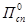
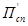
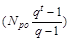
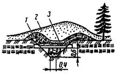
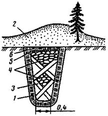
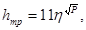
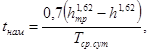

ВЕДОМСТВЕННЫЕ СТРОИТЕЛЬНЫЕ НОРМЫ
ТЕХНИЧЕСКИЕ ПРАВИЛА
РЕМОНТА И СОДЕРЖАНИЯ
АВТОМОБИЛЬНЫХ ДОРОГ
ВСН 24-88
МИНАВТОДОР РСФСР
МОСКВА 2006
Технические правила определяют основные требования к транспортно-эксплуатационному состоянию автомобильных дорог общего пользования, принцип оценки состояния дорог и планирования работ по их ремонту и содержанию; раскрывают вопросы организации и технологии производства работ по обеспечению сохранности дорог и дорожных сооружений, улучшению условий непрерывного, безопасного и удобного движения автомобилей с установленными скоростями и нагрузками; отражают принципы приемки и оценки качества работ; вопросы технического учета и паспортизации дорог и дорожных сооружений; определяют основные положения по охране природной среды при ремонте и содержании дорог.
Они предназначены в качестве руководства для дорожных организаций, занятых ремонтом и содержанием автомобильных дорог общего пользования.
Документ разработан специалистами Гипродорнии Минавтодора РСФСР при участии специалистов Госдорнии Минавтодора УССР, Казахского филиала Союздорнии Минтрансстроя СССР, ВНИИ МВД СССР, КАДИ, ХАДИ Минвуза УССР, Росдороргтехстроя Минавтодора РСФСР, Узремдорпроекта Минавтодора Уз. ССР, Латтехоргдорстроя Минавтошосдора Лат. ССР, Киргизавтодора КТИ Минавтодора Кирг. ССР, ВИСИ, РИСИ, Влад. ПИ и Краснодар. ПИ Минвуза РСФСР и отредактирован комиссией в составе: д-ра техн. наук А.П. Васильева, канд. техн. наук А.Я. Эрастова, Ю.Р. Перкова, В.Д. Белова, С.А. Мусатова, Н.М. Григоренко, В.П. Расникова, Д.Г. Мепуришвили, инж. Ю.Н. Розова, В.Д. Казанского, В.А. Попова, В.Ф. Ожиганова.
|
Ведомственные строительные нормы |
ВСН 24-88 |
|
|
Технические правила ремонта и содержания автомобильных дорог |
Взамен Технических правил ремонта и содержания автомобильных дорог (ВСН 24-75) |
1. Настоящие Технические правила распространяются на автомобильные дороги общего пользования и являются обязательными для дорожно-эксплуатационных организаций Минавтодоров (Минавтошосдоров) союзных республик при условии их утверждения или введения в действие соответствующим министерством.
2. Автомобильные дороги общего пользования являются составной частью транспортной системы страны и представляют собой комплекс сооружений, предназначенных для обеспечения круглогодичного, непрерывного, комфортного, удобного и безопасного движения автомобилей с расчетной нагрузкой и установленными скоростями.
3. Автомобильные дороги должны быть обустроены объектами сервиса и оборудованы средствами технического регулирования и обеспечения безопасности движения согласно требованиям действующих стандартов, нормам и правилам, а также положениям настоящего документа.
4. Для обеспечения необходимого транспортно-эксплуатационного состояния автомобильных дорог организуется дорожная служба. Виды и состав работ, выполняемых дорожной службой, определены действующей Классификацией работ по ремонту и содержанию автомобильных дорог.
|
Утверждены Министерством автомобильных дорог РСФСР 29 июня 1988 г. |
Срок введения в действие 1 января 1989 г. |
5. Конечной целью деятельности дорожно-эксплуатационной службы является поддержание и непрерывное повышение технического уровня и эксплуатационного состояния дорог в соответствии с ростом интенсивности движения и нагрузки на дороги при минимальных затратах труда, материально-технических и энергетических ресурсов на ремонт и содержание дорог и тем самым повышение темпов роста производительности и эффективности работы автомобилей, снижение себестоимости перевозок, необходимых для перевода автомобильного транспорта на интенсивный путь развития.
6. Нарушение должностными лицами, осуществляющими работы по ремонту и содержанию автомобильных дорог и сооружений на них, положений «Технических правил» влечет за собой по действующему законодательству дисциплинарную, административную, а в соответствующих случаях и уголовную ответственность.
7. В развитие и дополнение Технических правил могут издаваться инструкции, технические и методические указания, пособия, рекомендации и другие нормативно-технические документы, согласованные с НПО Росдорнии как головной научной организацией в области ремонта и содержания дорог и утвержденные в установленном порядке.
1.1. К основным транспортно-эксплуатационным показателям автомобильной дороги относятся: обеспеченная скорость, пропускная способность, уровень загрузки ее движением, непрерывность, комфортность и безопасность движения, способность пропускать автомобили и автопоезда с осевой нагрузкой и грузоподъемностью (или общей массой), соответствующими категориями дороги.
1.2. Основными параметрами и характеристиками, определяющими транспортно-эксплуатационные показатели дороги, являются:
геометрические параметры, к которым относятся ширина проезжей части и краевых уплотненных полос, общая и укрепленная ширина обочин, продольные уклоны, радиусы кривых в плане и профиле, уклоны виражей и расстояние видимости;
прочность и состояние дорожной одежды проезжей части и обочин;
ровность и сцепление покрытий проезжей части и обочин;
состояние земляного полотна;
состояние и работоспособность водоотвода;
габариты, грузоподъемность и состояние мостов, путепроводов и других искусственных сооружений;
состояние элементов инженерного оборудования и обустройства дороги.
1.3. Скорость движения автомобилей оценивается по эксплуатационному коэффициенту обеспеченности расчетной скорости Крсэ, который представляет собой отношение фактической максимальной скорости движения на каждом участке эксплуатируемой дороги Vфmах к расчетной скорости для данной категории дороги и рельефа местности Vp, принятой в соответствии со СНиП 2.05.02-85.
1.3.1. По техническому уровню, эксплуатационному состоянию и организации движения автомобильные дороги должны обеспечивать возможность безопасного движения одиночных автомобилей при благоприятных погодных условиях с максимальными скоростями, близкими к расчетным (Крсэ ³ 1) соответствующей категории, установленной для эксплуатируемой дороги, утвержденной технической документацией. В неблагоприятных погодно-климатических условиях допускается снижение обеспечиваемой максимальной скорости по отношению к расчетной, но не ниже значений, приведенных в табл. 1.1.
1.3.2. Участки с Крсэ от 0,5 до 0,75 в неблагоприятные для дорог периоды года требуют усиленного содержания и последующего улучшения, а участки с Крсэ до 0,5 подлежат первоочередной перестройке.
1.4. Уровень загрузки дороги движением Z определяют как отношение фактической интенсивности, приведенной к легковому автомобилю (N, авт/ч), к пропускной способности (Р, авт/ч). Величина Z не должна превышать значений, приведенных в табл. 1.2.
1.4.1. Пропускную способность и уровень загрузки движением проверяют на дорогах и участках дорог с фактической интенсивностью более 4 тыс. авт/сут в физических единицах при состоянии дорог и условиях движения, характерных для летнего, осенне-весеннего и зимнего периодов года. На дорогах и участках дорог с меньшей интенсивностью движения указанные показатели не проверяют.
1.4.2. Состояние искусственного сооружения по пропускной способности транспортных средств характеризуется отношением фактического расстояния между бордюром или ограждениями (габаритов для тоннелей) к нормальной величине, установленной для категории дороги. Отношение 0,95 и более характеризует соответствие сооружения нормам пропускной способности.
|
Допустимые значения обеспеченной максимальной скорости движения, км, для категории дорог |
||||||
|
IA |
IБ |
II |
III |
IV |
V |
|
|
При благоприятных погодных условиях: |
|
|
|
|
|
|
|
а) на основном протяжении дороги |
120 - 150 |
100 - 120 |
100 - 120 |
100 |
80 |
60 |
|
б) на трудных участках пересеченной местности |
100 - 120 |
90 - 100 |
90 - 100 |
80 |
60 |
40 |
|
в) на трудных участках горной местности |
75 - 80 |
60 |
60 |
50 |
40 |
30 |
|
В неблагоприятных погодных условиях: |
|
|
|
|
|
|
|
а) на основном протяжении дороги |
90 - 100 |
80 - 90 |
80 - 90 |
75 |
60 |
45 |
|
б) на трудных участках пересеченной местности |
80 - 90 |
70 - 75 |
70 - 75 |
60 |
45 |
30 |
|
в) на трудных участках горной местности |
60 |
45 |
45 |
40 |
30 |
20 |
|
В исключительных случаях при неблагоприятных погодных условиях: |
|
|
|
|
|
|
|
а) на основном протяжении дороги |
60 - 75 |
50 - 60 |
50 - 60 |
50 |
40 |
30 |
|
б) на трудных участках пересеченной местности |
60 |
50 |
50 |
40 |
30 |
20 |
|
в) на трудных участках горной местности |
40 |
30 |
35 |
25 |
20 |
20 |
|
Примечания. 1. Допустимые значения скоростей установлены из условия снижения обеспечиваемой максимальной скорости по отношению к расчетной не более чем на 25 % (Крсэ ³0,75) в осенне-весенний и зимний периоды года и, как исключение, не более чем на 50 % (Крсэ ³ 0,5) во время сильных дождей, туманов, пыльных бурь, штормовых ветров, на участках пучин, а также во время гололеда, метелей и сильных снегопадах. 2. К трудным участкам пересеченной местности относят рельеф, прорезанный часто чередующимися глубокими долинами с разницей отметок долин и водоразделов более 50 м на расстоянии не более 0,5 км с боковыми глубокими балками и оврагами с неустойчивыми склонами. К трудным участкам горной местности относят участки перевалов через горные хребты и участки горных ущелий со сложными сильно изрезанными или неустойчивыми склонами. |
||||||
|
Значение Z, не более |
|
|
Подъезды к аэропортам, железнодорожным станциям, морским и речным причалам и пристаням (дороги категорий IA, IБ и II) |
0,5 |
|
Внегородские автомобильные магистрали (дороги категории IA) |
0,6 |
|
Входы в города, обходы и кольцевые дороги вокруг больших городов (дороги категорий IБ, II и III) |
0,65 |
|
Автомобильные дороги II и III категорий |
0,7 |
|
Примечание. В неблагоприятные для дорог периоды года допускается увеличение уровня нагрузки, но не более чем на 15 %. |
|
1.5. Состояние безопасности движения по дороге оценивают коэффициентом происшествий И, коэффициентом аварийности Ка (для участков дороги в равнинной и холмистой местности) и разницей коэффициентов Ка (на соседних участках в горной местности, если дорога проложена перевальным ходом и уклоны более 50 ‰, а радиус менее 300 м) и коэффициентом безопасности Кб. Коэффициенты аварийности и коэффициенты безопасности определяют отдельно для летнего, осенне-весеннего и зимнего периодов года. Характеристика участков дорог по опасности движения и допустимые значения коэффициентов И, Ка и Кб приведены в табл. 1.3.
На участках дороги в равнинной и холмистой местности с Ка ³ 20, а также на участках дороги в горной местности с разницей Ка между соседними участками более 40 ‰ или при значениях Kб < 0,6 необходимо выполнение работ по повышению безопасности движения. При ремонте и реконструкции такие участки подлежат переустройству в первую очередь.
1.5.1. Безопасность движения автомобилей по мостам, путепроводам, тоннелям и наплавным мостам считается обеспеченной, если и габариты и состояние покрытия соответствуют требованиям категории дороги, а ограждения находятся в исправном состоянии. К тоннелям дополнительно предъявляются требования по обеспеченности необходимым уровнем освещения и вентиляции, устанавливаемыми соответствующими нормативными документами.
|
Степень опасности участков дороги |
||||
|
Неопасный |
Малоопасный |
Опасный |
Очень опасный |
|
|
И |
0,4 |
0,4 - 0,8 |
0,8 - 1,2 |
1,2 |
|
Ка (для участков дорог в равнинной и холмистой местности) |
0 - 10 |
10 - 20 |
20 - 40 |
40 |
|
Разница в коэффициентах Ка соседних участков (для горной местности), % |
20 |
20 - 40 |
40 - 100 |
100 |
|
Кб |
0,8 |
0,6 - 0,8 |
0,4 - 0,6 |
0,4 |
1.6. Геометрические параметры (продольный и поперечный профили, высота насыпи, радиусы кривых, ширина проезжей части и обочин, габариты искусственных сооружений) должны соответствовать нормам, установленным для данной категории дороги (участка дороги). Отклонение фактических размеров не должны превышать требования соответствующих нормативных документов.
1.6.1. Отклонения ширины покрытия от проектных размеров в меньшую сторону не должны превышать: для цементобетонных покрытий 5 см, для асфальтобетонных и других типов покрытий 10 см.
1.6.2. Кромки покрытий проезжей части, краевых укрепленных полос и укрепленных обочин должны быть ровными в плане, иметь правильные и четкие очертания без изломов, разрушений и деформаций.
1.7. Прочность дорожной одежды оценивается коэффициентом запаса прочности Кпр, который представляет собой отношение фактического модуля упругости дорожной конструкции к требуемым условиям движения в процессе эксплуатации и должен быть равен или больше единицы (Кпр ³ 1).
1.7.1. При оценке прочности требуемые модули упругости нежестких дорожных одежд назначают с учетом действующих норм межремонтных сроков службы одежд, величины расчетной нагрузки интенсивности движения расчетных автомобилей, типа покрытия дорожно-климатической зоны, грунтово-гидрологических условий, общей толщины дорожной одежды, ее конструкции и эксплуатационной надежности на обследуемом участке в соответствии с действующей инструкцией по проектирования нежестких одежд.
1.7.2. Для дорожных одежд с цементобетонными покрытиями допускается использовать в качестве показателя прочности величину растягивающего напряжения при изгибе покрытия. В этом случае условие прочности с учетом интенсивности и состава движения определяется в соответствии с действующей инструкцией по проектированию жестких дорожных одежд.
1.7.3. Дородные одежды на дорогах I - III категорий должны иметь прочность, обеспечивающую в расчетный период беспрепятственный пропуск автомобилей с осевой нагрузкой 10 тс (100 кН), на дорогах IV и V категорий с твердым покрытием до 6 тс (60 кН).
При ремонте (усилении) дорог IV и V категорий прочность дорожных одежд должна быть доведена под нагрузку 10 тс (100 кН).
1.8. Обочины дороги должны быть укреплены согласно положениям соответствующих нормативных документов с учетом местных грунтовых, гидрологических и климатических условий, иметь уклоны, способствующие быстрому отводу поверхностных вод. Прочность слоев укрепления должна соответствовать составу транспортного потока и обеспечивать заезд и остановку автомобилей без существенных деформаций и разрушения слоев укрепления. Прочность считается достаточной, если отношение ее фактического значения к требуемому по условиям движения в процессе эксплуатации не менее 0,85. Не допускается образование уступа и колей в местах сопряжения обочин с покрытием проезжей части.
1.9. Состояние покрытия проезжей части дорог по ровности оценивается коэффициентом ровности Кр, представляющим собой отношение предельно допустимых значений ровности к фактическому. Покрытие по ровности удовлетворяет условиям эксплуатации, если Кр ³ 1. Предельно допустимые значения ровности приведены в табл. 1.4.
1.10. Сцепные качества и шероховатость покрытий характеризуется коэффициентом сцепления Кс, который определяется как отношение фактического коэффициента предельного сцепления к допустимому значению по условиям безопасности движения. Покрытие по сцеплению соответствует требованиям безопасности движения, если Кс > 1. Предельные значения коэффициента сцепления и средняя глубина впадин шероховатости, допустимые значения в процессе эксплуатации дорожных покрытий не должны быть ниже значений, указанных в табл. 1.5.
|
Категория дороги |
Тип дорожной одежды |
Предельно допустимые состояния покрытия по ровности |
|||
|
Показатель ровности, см/км |
Количество просветов под 3-метровой рейкой, превышающих указанные в СНиП 3.06.03-85, % |
||||
|
По прибору ПКРС-2 |
по толчкомеру ТХК-2 |
||||
|
7000 |
I |
Капитальный |
540 |
100 |
6 |
|
3000 - 7000 |
II |
« |
660 |
120 |
7 |
|
1000 - 3000 |
III |
« |
860 |
170 |
9 |
|
|
|
Облегченный |
1100 |
240 |
12 |
|
500 - 1000 |
IV |
« |
1200 |
265 |
14 |
|
200 - 500 |
|
Переходный |
- |
340 |
- |
|
До 200 |
V |
« |
|
|
- |
|
Низший |
- |
510 |
- |
||
|
Примечание. Допускаемые значения ровности по толчкомеру ТХК даны применительно к автомобилю УАЗ-452. |
|||||
1.10.1. Разница коэффициента сцепления по ширине проезжей части не должна превышать 0,1. Разница между коэффициентами сцепления покрытия проезжей части и укрепленной обочины не должна превышать 0,15.
|
Коэффициент сцепления при скорости 60 км/ч |
Средняя глубина впадины шероховатости, мм, для дорог в дорожно-климатических зонах |
||
|
I - II |
II - IV |
||
|
Легкие |
0,35/0,28 |
0,30 |
0,35 |
|
Затрудненные |
0,40/0,30 |
0,35 |
0,40 |
|
Опасные |
0,45/0,32 |
0,40 |
0,45 |
|
Примечания. 1. Специальные качества покрытий следует считать удовлетворительными при условии соблюдения обоих параметров. 2. В знаменателе приведены значения коэффициента сцепления, полученные при измерении гладкой шиной (без протектора). |
|||
1.11. Откосы насыпей и выемок должны обладать стойкостью к воздействию местных климатических факторов (местная устойчивость). Они должны обеспечивать быстрый отвод поверхностных вод, быть укреплены с учетом условий эксплуатации, грунтов насыпей (выемок) согласно положениям инструктивных документов. Откосы особенно глубоких выемок и высоких насыпей должны иметь обеспеченную общую устойчивость, которая представляет собой отношение безопасной нагрузки Рбез для грунта насыпи (выемки), находящегося в данном состоянии по «плотности-влажности» к проектной Рпр. Общая устойчивость считается обеспеченной, если отношение, т.е. Кбез ³ 1.
1.12. Системы устройства дренирования, сбора и отвода поверхностных и грунтовых вод должны постоянно находиться в работоспособном состоянии, обеспечивать пропуск и отвод расчетных объемов воды. Не разрешается эксплуатация дороги при отсутствии или неисправной системе водосбора и водоотвода.
1.13. Состояние мостов, путепроводов, наплавных мостов и паромных переправ по грузоподъемности характеризуется отношением фактической грузоподъемности к требуемой согласно действующим нормам на проектирование. Соответствие требования обеспечивается, если величина отношений составляет 0,9 и более.
1.13.1. Мостовой переход или водопропускная труба должны обеспечивать пропуск расчетного водного потока. Показателями обеспечения пропусков расчетных объемов воды являются равномерное распределение скоростей по ширине отверстия, отсутствие водоворотов и отложений наносов в зонах, охватываемых мостом и струенаправляющими дамбами, отсутствие образования новых проток на поймах, подтопления, а также размывов откосов насыпи у оголовков и развития оврагов.
1.13.2. Плавсредства паромных переправ и плавучие опоры наплавных мостов должны удовлетворять требованиям нормативных документов Минречфлота РСФСР.
2.1. Основные положения по оценке состояния дорог.
2.1.1. Оценку состояния дорог и дорожных сооружений выполняют с целью определения степени соответствия их транспортно-эксплуатационных показателей предъявляемым требованиям и рационального планирования видов и объемов работ по ремонту и содержанию.
2.1.2. Работы по оценке состояния дорог и дорожных сооружений включают:
текущие осмотры, выполняемые инженерно-техническими работниками низового звена (прорабами, мастерами и др.);
периодические осмотры, осуществляемые руководителями первичного звена дорожно-эксплуатационной службы (например, главным инженером ДРСУ, ДЭУ и др.);
сезонные осмотры, выполняемые комиссиями, назначаемыми руководством дорожных организаций (автодоров, автомобильных дорог и т.п.);
специальные или детальные обследования, выполняемые специализированными организациями (дорожно-испытательными, мостоиспытательными станциями, проектными, научно-исследовательскими организациями и т.п.), а также комиссиями, назначаемыми дорожными министерствами или другими вышестоящими органами.
2.1.3. Состав и характер работ при осмотрах и обследованиях дорог и дорожных сооружений, а также порядок их проведения устанавливают дорожные министерства союзных республик с учетом специфики эксплуатируемой дорожной сети, местных природно-климатических и других условий.
2.1.4. Осмотры выполняют, как правило, визуально, используя при необходимости простейший мерный инструмент и портативные приборы. Обследования ведут с применением специального оборудования и передвижных лабораторий.
2.2. Оценка геометрических элементов автомобильных дорог.
2.2.1. К основным геометрическим элементам относят ширину проезжей части, краевых укрепленных полос и обочин, длину прямых и кривых, радиус в плане и продольном профиле, параметры переходных кривых, поперечные уклоны, крутизну подъемов и спусков, расстояние геометрической видимости поверхности дороги, очертание откосов земляного полотна.
2.2.2. Ширину проезжей части, краевых укрепленных полос и обочин измеряют на каждом характерном участке дороги (на прямых, кривых в плане и профиле, в местах сужений и изменения ширины, над трубами, на мостах, путепроводах, на высоких насыпях, в местах установки ограничения), но не реже, чем одно измерение на 1 км.
2.2.3. Для определения уклонов обочин, углов заложения откосов земляного полотна, продольных и поперечных уклонов дорожных покрытий используют различные простые приборы, в том числе угломерные линейки (например, типа КП-135).
2.2.4. Для комплексного определения радиусов горизонтальных и вертикальных кривых, длин прямых и кривых, продольных и поперечных уклонов проезжей части применяют установку типа «Трасса».
С помощью этой установки измерения проводят челночным способом в прямом и (для контроля) обратном направлениях участками по 10 - 20 км со скоростью 20 - 30 км/ч.
2.2.5. Измерение расстояния геометрической видимости поверхности дороги выполняют с помощью устанавливаемого в автомобиле дальномера дорожного (например, типа КП-213).
2.3. Оценка ровности и сцепных качеств дорожных покрытий.
2.3.1. При оценке ровности и сцепных качеств дорожных покрытий применяют сплошной или выборочный контроль. Сплошной контроль предназначен для обследования участков дорог протяженностью более 1 км, выборочный - менее 1 км.
Выборочный контроль ровности и скользкости осуществляют также при обследовании опасных участков дорог, выяснении причин дорожно-транспортных происшествий и т.д.
2.3.2. При сплошном контроле ровность оценивают с помощью передвижной установки ПКРС-2у или установленного в автомобиле-лаборатории толчкомера типа ТХК-2.
Ровность покрытия оценивают проездом автомобиля-лаборатории по каждой полосе движения со скоростью 50 км/ч с допустимым отклонением ± 2 км/ч.
2.3.3. Для оценки ровности покрытий на особо опасных участках, где коэффициент безопасности движения менее 0,4, а итоговый коэффициент аварийности более 20, рекомендуется применять суммирующий толчкомер ХАДИ с приставкой для подсчета числа толчков или универсальный толчкомер КАДИ.
2.3.4. Выборочный контроль ровности осуществляют на захватках (участках) длиной 300 м на обследуемом километре дороги путем измерения просветов под 3-метровой рейкой. Захватки выбирают на самых неблагоприятных по ровности участках, установленных визуальным осмотром.
При измерении просветов под рейкой последнюю укладывают в продольном направлении через каждые 30 м дороги в трех местах: на оси и в 1 м от кромок. Просветы под рейкой измеряют в пяти контрольных точках, расположенных на расстоянии 0,5 м одна от другой и от концов рейки.
2.3.5. Сцепные качества дорожных покрытий характеризуют величиной коэффициента сцепления шин автомобиля с увлажненной поверхностью проезжей части. Величину коэффициента сцепления определяют с помощью установки ПКРС-2у или других приборов, показания которых должны быть приведены к показаниям ПКРС-2. Коэффициент сцепления измеряют на каждой полосе движения при скорости автомобиля-лаборатории 60 км/ч путем: полного затормаживания измерительного колеса прицепного прибора. В момент измерения коэффициента сцепления толщина водной пленки на покрытии должна быть не менее 1 мм.
2.3.6. При проведении измерений коэффициента сцепления необходимо фиксировать температуру воздуха и получаемые значения приводить к расчетной положительной температуре 20 °С путем введения следующей поправки:
Температура воздуха, °С 0 5 10 15 20 25 30 35 40
Поправки - 0,06 - 0,04 - 0,03 - 0,20 0 + 0,01 + 0,01 + 0,02 + 0,02
2.3.7. Среднюю глубину впадин шероховатости следует оценивать методом «Песчаное пятно».
2.4. Оценка прочности дорожных одежд. Ограничение движения грузовых автомобилей по осевым нагрузкам.
2.4.1. Полевые испытания дорожных одежд осуществляют в соответствии с действующими методиками и нормативными документами. При испытаниях в расчетный (наиболее неблагоприятный по условиям увлажнения) период года продолжительность периода испытания Тр (сут.) для II - IV дорожно-климатических зон следует принимать в соответствии с действующими нормативными документами (например, с Инструкцией по проектированию дорожных одежд нежесткого типа).
За расчетный период в V дорожно-климатической зоне принимают: в орошаемой зоне - март, май - август (дополнительно при дождливых зимах и отсутствии устойчивых отрицательных температур воздуха - ноябрь - февраль); в неорошаемой зоне - март, апрель (дополнительно при отсутствии устойчивых отрицательных температур - ноябрь - февраль).
2.4.2. Полевые испытания включают линейные испытания и испытания на контрольных точках.
Контрольную точку назначают на каждом характерном участке, относящемся к одному типу местности по условиям увлажнения, имеющем одинаковую конструкцию дорожной одежды и дефекты покрытия, одинаковый грунт земляного полотна и одинаковые интенсивности движения транспортных средств.
Испытания на контрольных точках осуществляют методом статистического нагружения колесом автомобиля или методом кратковременного нагружения. Работы проводятся ежедневно в течение расчетного периода с целью выявления закономерности изменения модуля упругости дорожной конструкции в это время и приведения результатов линейных испытаний, выполненных в различные дни, к сопоставимому виду.
2.4.3. Линейные испытания ведут равномерно вдоль обследуемой дороги по внешней стороне наката (1 - 1,5 м от кромки покрытия) по наиболее нагруженной полосе движения в объеме не менее 20 измерений на каждом километре дороги и на каждом характерном участке длиной менее 1 км. Испытание следует проводить методом динамического (кратковременного) нагружения с использованием лаборатории типа КП-502МН, УДН-НК МАДИ, УНК-4 КАДИ, Дина-3 Саратовского филиала Гипродорнии, обеспечивающих точность измерения прогибов не ниже 5 % с продолжительностью действия нагрузки 0,02 с и более. При отсутствии указанного оборудования допускается использовать метод статического нагружения колесом автомобиля с измерением прогибов длиннобазовым прогибомером типа КП-204 или другими аналогичными приборами, обеспечивающими точность не менее 0,02 мм.
2.4.4. Связь данных линейных измерений (при использовании метода динамического нагружения) и измерений на контрольных точках устанавливают с помощью коэффициента перехода. Для их получения проводят последовательно испытание дорожной конструкции статическим и динамическим нагружением трех характерных (см. п. 2.4.2) для обследуемой дороги участков длиной не менее 500 м каждый, отличающихся друг от друга состоянием покрытия. Для получения достоверных результатов на каждом участке выполняют не менее 30 испытаний.
2.4.5. Испытания, обработка результатов и определение фактического модуля упругости выполняются в соответствии с действующими нормативными документами.
2.4.6. Оценку прочности жестких дорожных одежд допускается осуществлять путем сопоставления фактических толщин покрытия с толщиной, устанавливаемой действующей Инструкцией по расчету жестких дорожных одежд.
2.4.7. Данные испытаний являются основой для определения соответствия фактического модуля упругости дорожной конструкции требуемому по условиям движения.
Значения требуемого модуля упругости назначают в соответствии с действующими нормативными документами (например, с Инструкцией по проектированию дорожных одежд нежесткого типа) по перспективной интенсивности движения, приведенной к расчетной нагрузке:
где g - параметр, принимаемый для усовершенствованных капитальных, облегченных и переходных покрытий соответственно равным 0,12; 0,148; 0,171;
q - показатель фактического роста интенсивности движения q > 1;
ti - перспективный период до усиления дорожной одежды от года проведения полезных испытаний, годы (назначают в соответствии с действующими нормами межремонтных сроков службы нежестких дорожных одежд);
Nф - приведенная фактическая интенсивность движения автомобилей на момент проведения полевых испытаний, определяемая с использованием данных учета движения по дороге:
где Nc - среднегодовая суточная интенсивность движения транспортного потока, авт/сут;
Кс - коэффициент сезонности (отношение интенсивности движения в расчетный весенний период к среднегодовой суточной);
fn - коэффициент, учитывающий количество полос движения на обследуемой дороге (устанавливается по действующей Инструкции на проектирование дорожных одежд нежесткого типа);
ω - количество типов автомобилей в транспортном потоке;
Рj - дол j-го типа автомобиля в транспортном потоке;
aj - коэффициент приведения j-го типа автомобиля (оси) к расчетным нагрузкам. Для нежестких дорожных одежд значения aj приведены в табл. 2.1.
Учет влияния многоосных автомобилей со сближенными осями осуществляется согласно положениям действующей Инструкции по проектированию дорожных одежд нежесткого типа.
2.4.8. В случаях, когда нет возможности немедленно усилить покрытие по результатам полевых испытаний, ограничивают движение автомобилей по осевым нагрузкам. Допустимая интенсивность движения расчетных нагрузок для первого года после полевых испытаний
где Nеф - интенсивность движения расчетной нагрузки, на которую должна быть рассчитана дорожная одежда при требуемом модуле упругости Етр, равном фактическому модулю упругости Еф, т.е. Етр = Еф;
t - время до начала работ по усилению дорожной одежды, годы.
2.4.9. Объем ограничения движения назначают подбором по приведенной выше формуле, добиваясь равенства фактической и допускаемой интенсивности движения путем исключения из состава движения прежде всего тяжелых транспортных средств, оказывающих наиболее разрушающее действие на дорожную одежду.
2.4.10. Для ограничения движения на дорогах организуют контрольно-пропускные пункты, оборудованные шлагбаумом, указательными, предупреждающими и предписывающими дорожными знаками, информационными табло, площадкой для контроля веса проезжающих автомобилей. Контроль нагрузки на колесо автомобиля осуществляют с помощью переносных гидравлических весов (например, модели КП-205) или других аналогичных средств.
2.4.11. Контрольно-пропускные пункты рекомендуется располагать в местах пересечений дорог, удобных для организации объезда транзитного движения. На всем протяжении объезда должны быть установлены информационно-указательные знаки, показывающие направление объезда, а в начале и в конце объезда - схемы объезда.
2.5. Оценка состояния земляного полотна и системы водоотвода.
2.5.1. Номенклатура инструментальных обследований элементов земляного полотна приведена в табл. 2.2. Дополнительно к указанному в этой таблице в зависимости от особенностей обследуемого элемента, характера его деформации или разрушений могут определяться прочность материалов слоев укрепления на обочинах или откосах, морозостойкость используемых на укрепленных работах материалов и т.д. Полная номенклатура определяемых показателей регламентируется действующими нормативными документами по оценке состояния земляного полотна.
По результатам инструментальных обследований устанавливают причины разрушения или деформаций земляного полотна и назначают соответствующие мероприятия по ремонту таких участков.
2.5.2. Указанные в пп. 1 - 2 табл. 2.2 характеристики грунта определяются в соответствии с действующими нормативными документами по оценке технико-эксплуатационных качеств автомобильных дорог, характеристики по пп. 3 - 6 - согласно действующим Государственным стандартам на соответствующие испытания грунтов.
2.5.3. Оценка состояния водоотводных сооружений включает оценку целостности устройств, степени сохранности заданных геометрических форм, целостности конструкции укрепления, стоковой способности. При этом выявляются места заиливания, засорения или зарастания травой и кустарником, места разрушения водоотводных сооружений, застоя воды в резервах.
При оценке дренажных устройств отмечают места засорения устьев оплывшим по откосу грунтом, выбоины и трещины в дренах, места засорения дрен и возможного их разрушения, места засорения отстойников. Особо тщательно следует отметить выпуски из всех водоотводных сооружений с целью обнаружения начальных стадий размыва грунтов.
2.6. Оценка состояния элементов обустройства автомобильных дорог.
2.6.1. При оценке состояния дорожных знаков выявляют их наличие в предусмотренных на схеме дислокаций местах, механические повреждения стоек и щитов, наличие небольших обрывов или отслоений световозвращающей пленки от щитка знака, проверяют прочность прикрепления щитка знака к стойке и степень загрязнения.
|
Тип покрытия |
Коэффициенты проведения aj при осевой нагрузке, кН |
|||||||||||
|
20 |
30 |
40 |
50 |
60 |
70 |
80 |
90 |
100 |
110 |
120 |
||
|
А |
Капитальный |
- |
- |
0,01 |
0,04 |
0,12 |
0,23 |
0,39 |
0,66 |
1,00 |
1,24 |
1,70 |
|
Облегченный |
- |
- |
0,04 |
0,11 |
0,23 |
0,36 |
0,52 |
0,75 |
1,00 |
1,17 |
1,50 |
|
|
Б |
Переходный |
0,01 |
0,06 |
0,14 |
0,26 |
0,41 |
0,55 |
0,68 |
0,85 |
1,00 |
1,09 |
1,24 |
|
Облегченный |
0,01 |
0,08 |
0,26 |
0,56 |
1,00 |
1,57 |
2,25 |
3,04 |
3,92 |
4,88 |
5,90 |
|
|
Переходный |
0,07 |
0,22 |
0,44 |
0,71 |
1,00 |
1,31 |
1,63 |
1,95 |
2,27 |
2,58 |
2,90 |
|
|
Контролируемая характеристика грунта |
Элемент земляного полотна |
|||
|
Под проезжей частью дороги |
Обочины |
Откосы |
||
|
1 |
Модуль упругости грунта |
+ |
+ |
- |
|
2 |
Прочность грунта (сопротивление сдвигу, угол внутреннего трения, сцепление) |
+ |
+ |
+ |
|
Избирательно |
||||
|
3 |
Коэффициент фильтрации |
Для дренирующего слоя |
- |
- |
|
4 |
Гранулометрический состав |
+ |
+ |
+ |
|
5 |
Влажность |
+ |
+ |
+ |
|
6 |
Плотность |
+ |
+ |
+ |
2.6.2. Состояние разметки проверяют по степени ее износа в первую очередь на наиболее опасных участках (пересечения дорог, участки с ограниченной видимостью, подъемы и спуски, пешеходные переходы, железнодорожные переезды и др.).
2.6.3. При оценке состояния дорожных ограждений проверяют их наличие, имеющиеся механические повреждения, надежность установки стоек и крепления всех элементов ограждений, степень загрязнения.
2.6.4. При оценке состояния элементов благоустройства автомобильных дорог (остановки, автопавильоны, площадки отдыха, видовые площадки, стоянки автомобилей и др.) выявляют поломки и другие дефекты, затрудняющие их эксплуатацию.
2.7. Оценка технического состояния искусственных сооружений.
2.7.1. Работы по оценке технического состояния искусственных сооружений включают текущие и периодические осмотры, а также специальные осмотры (обследования). Состав и характер работ по каждому виду осмотров назначают в соответствии с действующими нормативно-техническими документами. Текущие осмотры проводят мостовые (тоннельные) мастера, а периодические и специальные осмотры (обследования) - комиссии, организуемые в установленном порядке. Обследования мостов длиной 100 м и более, а также опытных и технически сложных конструкций мостов и тоннелей выполняют специализированные организации.
2.7.2. При текущих и периодических осмотрах устанавливают общее состояние сооружения и выявляют дефекты, требующие устранения. В необходимых случаях выполняют контрольно-инструментальные измерения. Результаты текущего и периодического осмотров являются основанием для планирования ремонтных работ, назначения мероприятий по подготовке сооружений к пропуску ледохода и паводка, организации длительных наблюдений за развитием отдельных дефектов, временного ограничения движения, организации охраны сооружения и определения необходимости проведения специальных осмотров.
2.7.3. Текущие осмотры выполняют не реже сроков, указанных в табл. 2.3.
2.7.4. Периодические осмотры сооружений производят, как правило, после прохода паводковых вод, а также после землетрясения, силой более 5 баллов и других стихийных бедствий, могущих вызвать крупные повреждения. Кроме того, такие осмотры выполняют после ремонта конструкций. Тоннели осматривают весной и осенью и после землетрясения силой более 5 баллов.
|
Сроки текущих осмотров |
|
|
Деревянные мосты, паромные переправы, наплавные мосты |
1 раз в квартал |
|
Железобетонные, бетонные и каменные мосты и трубы |
1 раз в полугодие |
|
Металлические мосты и мостовые конструкции (цельносварные, клепанно-сварные, сварные с монтажными соединениями на высокопрочных болтах, усиленные сваркой и сталежелезобетонные) при: положительных температурах |
1 раз в полугодие |
|
отрицательных до - 20 °С |
1 раз в месяц |
|
то же, ниже - 20 °С |
Ежедневно |
|
Тоннели |
1 раз в месяц |
2.7.5. С целью определения фактической грузоподъемности сооружения или надежности его отдельных элементов выполняют специальные осмотры (обследования), которые могут включать испытания сооружений, проводимые с обязательным привлечением специализированных организаций.
2.7.6. Специальные осмотры (обследования) проводят на основе заключений по результатам текущих или периодических осмотров, а также в плановом порядке в следующие сроки: деревянные мосты 1 раз в 5 лет; металлические, железобетонные, бетонные и каменные мосты, путепроводы и трубы 1 раз в 10 лет; тоннели 1 раз в 5 лет.
2.7.7. Сооружения, у которых выявлены в результате осмотров неисправности, не допускающие дальнейшую их эксплуатацию (т.е. требующие полного запрещения движения транспортных средств или массового прохода пешеходов из условия безопасности), следует считать аварийными.
Неисправности, которые могут быть устранены в кратчайшие сроки, не должны служить основанием для признания сооружения аварийным.
2.7.8. Все основные характеристики сооружения и данные о его техническом состоянии должны быть отражены в документации по техническому учету сооружения, а также в информационно-поисковой системе «Мост» (ИПС-Мост), являющейся автоматизированным банком данных об автодорожных мостах. Состав документации по техническому учету сооружений определен Типовой инструкцией по учету и паспортизации автомобильных дорог общего пользования.
2.8. Оценка удобства и безопасности движения.
2.8.1. Комплексную оценку удобства и безопасности движения на эксплуатируемой дороге выполняют на основе линейных сезонных графиков эксплуатационного коэффициента обеспеченности расчетной скорости Kрсэ, коэффициента безопасности Кб и итогового коэффициента аварийности Ка. Для дорог и участков дорог с интенсивностью движения более 4 тыс. авт./сут строят также график пропускной способности Р и степени загрузки Z. Все указанные графики строят для трех характерных периодов: летнего, осенне-весеннего и зимнего. В V дорожно-климатической зоне можно определить эти показатели для двух периодов - летнего и осенне-весеннего.
2.8.2. Перечисленные в п. 2.8.1 графики разрабатывают дорожно-эксплуатационные организации собственными силами или с привлечением проектных, проектно-технологических, научных и других организаций. Графики строят одноразово, используя ЭВМ или вручную, при паспортизации или специальных обследованиях дорог и в последующем корректируют не реже 1 раза в год, фиксируя все изменения в состоянии дорог и условиях движения.
2.8.3. Необходимые для построения графиков и эксплуатационных коэффициентов обеспеченности расчетной скорости и коэффициентов безопасности значения максимальной скорости движения одиночного легкового автомобиля Vфтах могут быть получены путем измерения скоростей на каждом участке дороги в реальных погодно-климатических условиях или расчетно-аналитическим путем.
При обработке данных замеров скоростей только легковых автомобилей за максимальную принимают скорость 85 %-ной обеспеченности, а при обработке данных замеров скоростей всех транспортных средств - 95 %-ной обеспеченности.
Максимальную скорость получают расчетно-аналитическим путем из формул определения основных геометрических элементов и характеристик дороги, подставляя в них данные о фактических параметрах и состоянии дороги в характерные периоды года и в характерных условиях погоды (коэффициент сцепления, коэффициент сопротивления качению, ровность, видимость и др.).
Указанные графики могут быть построены на ЭВМ по программам ВАЕМ-С-1 и ВАЕМ-С-2, разработанным в Гидродорнии, или по другим аналогичным программам.
2.8.4. Порядок построения сезонных графиков коэффициентов аварийности приведены в действующих Указаниях по организации и обеспечению безопасности движения на автомобильных дорогах.
2.9. Планирование ремонтов дорог.
2.9.1. При планировании работ по ремонту и содержанию автомобильных дорог используются два вида планов - перспективные и текущие (годовые). Ведущую роль в планировании играют перспективные планы, рассчитанные на несколько лет и определяющие направления в решении задач по ремонту и содержанию автомобильных дорог. Основной формой перспективных планов являются пятилетние планы, составляемые дорожными организациями.
2.9.2. При планировании пятилетних и годовых объемов ремонтных работ, ассигнований и материально-технических ресурсов на их выполнение в масштабе областных, краевых, автономно-республиканских управлений дорог, автомобильных дорог, руководствуются действующими нормами межремонтных сроков службы дорожных одежд и покрытий (табл. 2.4 и 2.5) и отдельных сооружений.
Срок службы дорожного покрытия Тп оценивают по критерию сцепных свойств или износа поверхности покрытия.
Срок службы дорожной одежды То оценивают по критерию прогиба конструкций от действия расчетной нагрузки. Нормативные значения сроков службы используют также для решения задач, связанных с повышением несущей способности (усилением) дорожных конструкций. Усиление осуществляют при достижении дорожной одеждой расчетного условия надежности и соответствующего ему предельного состояния покрытия по ровности.
2.9.3. Планирование пятилетних и годовых объемов ремонтных работ, ассигнований и материально-технических ресурсов на уровне низовых дорожно-ремонтных или эксплуатационных организаций (ДРСУ, ДЭУ и др.) должно осуществляться на основе оценки фактического состояния дорог с указанием конкретных участков (адресов ремонтов), видов и объемов необходимых ремонтных работ.
При назначении конкретных видов и объемов ремонтных работ пользуются данными, приведенными в табл. 2.6.
2.9.4. В перспективных планах дорожно-ремонтных работ могут устанавливаться целевые задания областным, краевым, автономно-республиканским управлениям дорог, автомобильным дорогам и подведомственным им организациям по повышению капитальности дорожных одежд, замене деревянных мостов на капитальные искусственные сооружения, усилению и уширению мостов, по повышению безопасности и удобства движения (уширение проездной части, устройство дополнительных полос, укрепление обочин, устройство шероховатой поверхностной обработки, установка ограждений и другого инженерного оборудования).
|
Интенсивность движения транспортного потока, авт./сут |
Тип дорожной одежды |
Дорожно-климатическая зона |
||||||
|
I, II |
III |
IV, V |
||||||
|
KH |
To, лет |
KH |
To, лет |
KH |
To, лет |
|||
|
1 |
2 |
3 |
4 |
5 |
6 |
7 |
8 |
9 |
|
I |
7000 |
Капитальный |
0,95 - 0,90 |
14 - 18 |
0,93 - 0,88 |
15 - 19 |
0,90 - 0,86 |
16 - 20 |
|
II |
3000 - 7000 |
Капитальный |
0,94 - 0,89 |
11 - 15 |
0,92 - 0,87 |
12 - 16 |
0,89 - 0,85 |
13 - 16 |
|
III |
1000 - 3000 |
Капитальный |
0,92 - 0,87 |
11 - 15 |
0,90 - 0,85 |
12 - 16 |
0,87 - 0,83 |
13 - 16 |
|
Облегченный |
0,88 - 0,84 |
10 - 13 |
0,86 - 0,82 |
11 - 14 |
0,84 - 0,80 |
12 - 15 |
||
|
IV |
500 - 1000 |
Капитальный |
0,85 - 0,82 |
11 - 15 |
0,83 - 0,80 |
12 - 16 |
0,80 - 0,78 |
13 - 16 |
|
Облегченный |
0,87 - 0,83 |
8 - 10 |
0,85 - 0,81 |
9 - 11 |
0,82 - 0,80 |
10 - 12 |
||
|
100 - 500 |
Переходный |
0,82 |
3 - 8 |
0,80 |
3 - 9 |
0,77 |
3 - 9 |
|
|
V |
До 100 |
Облегченный |
0,83 - 0,80 |
8 - 10 |
0,80 - 0,78 |
9 - 11 |
0,78 - 0,75 |
10 - 12 |
|
Переходный |
0,65 |
3 - 8 |
0,60 |
3 - 9 |
0,58 |
3 - 9 |
||
|
Низкий |
0,65 |
2 - 4 |
0,60 |
2 - 4 |
0,58 |
2 - 4 |
||
|
Примечания. 1. Промежуточные значения - по интерполяции. 2. При расчете слоев усиления капитальных и облегченных дорожных одежд допускается уменьшение на 15 % нормы срока службы от минимальных значений при сохранении нормы уровня надежности KH. |
||||||||
|
Интенсивность движения по наиболее загруженной полосе, авт./сут, при сроке службы покрытия Tп, лет |
|||||
|
8 |
6 |
4 |
3 |
2 |
|
|
I, II |
До 200 |
От 200 до 2500 |
От 2500 до 4500 |
От 4500 до 6500 |
Свыше 6500 |
|
III |
« 200 |
От 200 до 2000 |
От 2000 до 4000 |
От 4000 до 6000 |
« 6000 |
|
IV, V |
« 200 |
От 200 до 1500 |
От 1500 до 3000 |
От 3000 до 5000 |
« 5000 |
|
Применения: 1. Норму срока службы покрытия допускается понижать на 20 % при использовании дегтей и смол в качестве вяжущего для поверхностных обработок и на 30 % при использовании известнякового щебня. 2. В случаях, когда межремонтные сроки службы дорожной одежды и покрытия отличаются не более чем на 30 %, межремонтные сроки службы покрытий принимают равными 50 % от нормы срока службы дорожной одежды. 3. Возмещение износа покрытий переходных дорожных одежд предусматривают не позже чем через 3 года. |
|||||
2.9.5. Перспективные планы реализуются путем составления и выполнения текущих (годовых, квартальных и месячных) планов, являющихся этапами в решении задач, намеченных перспективным планом в пределах ассигнований, выделяемых на данный год.
|
Содержание дорог |
Ремонт дорог |
|
|
Эксплуатационный коэффициент обеспеченности расчетной скорости Крсэ |
0,75 - 1,0 |
< 0,75 |
|
Коэффициент запаса прочности Кпр |
³ 1 |
< 1 |
|
Коэффициент ровности покрытия Кр |
³ 1 |
< 1 |
|
Коэффициент сцепных качеств покрытия Кс |
³ 1 |
< 1 |
|
Итоговый коэффициент аварийности Ка |
< 20 |
> 20 |
Основным документом текущего планирования, в котором находит отражение план производственной и финансовой деятельности дорожной службы на планируемый год, является ремстройфинплан. Он составляется по установленным формам низовыми подразделениями дорожной службы, рассматривается и утверждается вышестоящими управлениями, которые на основе ремстройфинпланов хозяйств составляют сводные ремстройфинпланы в целом по управлению.
2.9.6. На основе ремстройфинплана разрабатывают квартальные месячные, декадные, суточные планы. Оперативное планирование должно довести плановые показатели до всех звеньев низовой дорожно-эксплуатационной службы.
При годовом планировании для рационального использования выявляемых ресурсов конкретные объемы ремонтов дорог устанавливают на основе технико-экономического анализа.
2.10. Планирование работ по содержанию дорог.
2.10.1. Содержание автомобильных дорог осуществляют на основе текущего и оперативно-производственного планирования.
2.10.2. Текущие планы составляют на год и квартал. В них содержатся следующие основные показатели: задание по качеству содержания дорог и дорожных сооружений; план затрат на год с поквартальной разбивкой; годовой план по труду с поквартальной разбивкой.
2.10.3. Задания по качеству содержания дорог и дорожных сооружений планируют в соответствии с действующими нормативными документами.
2.10.4. При планировании работ по содержанию, при определении объемов, потребности в рабочей силе, машинах и материалах как в целом по дорожной организации, так и по ее низовым подразделениям можно принимать циклическую систему, при которой каждый вид работ периодически повторяется на данном участке дороги через определенный промежуток времени.
2.10.5. Использование циклической системы требует наличия в дорожной организации стабильной номенклатуры работы, в которой учитываются все виды, входящие в состав работ по содержанию автомобильных дорог.
2.10.6. По каждому виду работ определяются: продолжительность цикла П и коэффициент цикла Кц. Продолжительность цикла характеризует период времени, по истечении которого данная работа должна повторяться на том же участке дороги, и измеряется в годах. Коэффициент цикла показывает, сколько раз общий объем элемента дороги (или какую его долю) необходимо исправить (восстановить), и определяется величиной, обратной П, т.е. Кц = 1/П.
2.10.7. Объем работ на год, квартал, месяц по участку и автомобильной дороге в целом определяется с учетом привязки циклических показателей к календарному графику производства того или иного вида работ.
2.10.8. График производства работ по содержанию дорог составляют на основе календарных сроков проведения технологических операций. В графике учитывается влияние погодных условий на выполнение всех видов работ и по нему определяется продолжительность тех или иных работ за год (в частях) в зависимости от месячного рабочего времени.
2.10.9. Основой для составления месячных планов являются годовые планы, данные обследования участков обслуживаемых дорог, замечания и предложения служб контроля качества, плановые нормативы затрат труда и других ресурсов.
2.10.10. План на месяц составляется старшим производителем работ (прорабом), рассматривается и утверждается руководством дорожной организации и за 5 дней до начала планируемого месяца доводится до исполнителей. При рассмотрении программы работ по содержанию дорог производится их увязка с работами по ремонту дорог.
2.10.11. План включает перечень работ по содержанию дорог с указанием плановых объемов, трудоемкости, расхода заработной платы, стоимости. Этим обеспечивается взаимоувязка оперативного планирования с годовым и квартальным.
2.11. Оценка эффективности дорожно-ремонтных работ.
2.11.1. Эффект от выполнения дорожно-ремонтных работ выражается в повышении транспортно-эксплуатационных качеств дороги, удобств, скорости и безопасности движения автомобилей и, как следствие, в снижении себестоимости перевозок. При этом затраты на ремонт должны быть компенсированы получаемой в результате экономией издержек на автомобильные перевозки.
Оптимальный вариант работ обеспечивается при условии, что
где Э - величина эффекта от выполнения ремонтных работ, руб.;
Са(t), Ca(t) - годовые транспортные расходы соответственно до и после ремонта дороги (участка);
DСat - величина прироста транспортных затрат в период проведения ремонта;
t - срок суммирования затрат;
ti - год выполнения ремонта;
Дi - затраты на ремонт;
Енп - нормативный коэффициент для приведения разновременных затрат к исходному периоду (Енп = 0,08).
2.11.2. Для облегчения расчетов эффективности выражение (2.4) приведено к следующему виду:
где N0 - среднесуточная интенсивность движения по дороге в год проведения ремонта;
ψ - параметр, учитывающий долю грузовых автомобилей в составе движения, среднюю грузоподъемность автомобилей, коэффициент использования грузоподъемности и коэффициент использования пробега (ψ = 1,62);
ω - коэффициент, учитывающий снижение экономии транспортных издержек в результате ухудшения условий движения в период проведения ремонтных работ (ω = 0,98);
Sэ - себестоимость перевозок в дорожных условиях,
принятых за эталон, коп/т км);  
q - показатель роста интенсивности движения;
Д - затраты на ремонт, отнесенные к 1 км подлежащего ремонту участка дороги, руб.
2.11.3. Показатели себестоимости перевозок Псп и в формуле (2.5) определяют на основе анализа данных объективной оценки состояния дороги по следующим четырем показателям:
скорость движения Пv, определяемому отношением фактической средней скорости движения автомобилей в данных дорожных условиях к скорости движения в дорожных условиях, отвечающих требованиям движения;
безопасность движения Пб, соответствующему величине итогового коэффициента аварийности Ка;
прочность дорожной одежды Ппр, определяемому отношением фактического модуля упругости дорожной одежды к требуемому модулю упругости по условиям движения;
непрерывности движения Пн, определяемому отношением фактического количества дней в году, в течение которых обеспечен проезд по дороге (участку), к нормативному числу дней, в течение которых должен быть обеспечен проезд по дороге (участку).
|
Значение λ
при  |
Ппр |
Значение λ при , равном |
|||||
|
100 - 398 |
399 - 1000 |
1001 - 2512 |
100 - 398 |
399 - 1000 |
1001 - 2512 |
||
|
0,70 |
1,024 |
1,024 |
1,024 |
0,85 |
1,010 |
1,012 |
1,014 |
|
0,75 |
1,021 |
1,024 |
1,024 |
0,90 |
1,009 |
1,010 |
1,011 |
|
0,80 |
1,016 |
1,019 |
1,022 |
0,95 |
1,007 |
1,007 |
1,008 |
|
|
|
|
|
1,00 |
1,000 |
1,000 |
1,000 |
Зная значение указанных четырех показателей, определяют показатель себестоимости перевозок
где λ - параметр, определяемый в зависимости от значений показателя прочности Ппр расчетной интенсивности движения Nро и показателя роста интенсивности q по табл. 2.7;
Tф - фактический срок службы дорожной одежды на год проведения оценки прочности, считая от момента сдачи дороги (или ее участка) в эксплуатацию после строительства (реконструкции) или последнего ремонта, связанного с усилением дорожной одежды.
2.11.4. Эффективность дорожно-ремонтных работ оценивают на стадии разработки проектно-сметной документации, состав которой определяют в установленном порядке.
3.1. Основные задачи, структура и функции подразделения дорожной службы.
3.1.1. В соответствии с конечной целью деятельности дорожной службы на ее подразделения возлагаются следующие обязанности:
технический учет и паспортизация автомобильных дорог и дорожных сооружений, учет движения, создание и развитие автоматизированного банка данных о состоянии дорог и мостов;
разработка и осуществление перспективных и годовых планов по повышению технического уровня и эксплуатационного состояния дорог и дорожных сооружений, безопасности движения транспорта и пешеходов;
организация работ по содержания и ремонту, архитектурному оформлению и благоустройству дорог;
содержание в постоянной исправности и обеспечение эффективного использования фондов, предназначенных для эксплуатации автомобильных дорог;
принятие необходимых мер по предотвращению перерывов и ограничений движения, сезонных деформаций и разрушений дорог и искусственных сооружений, по ликвидации последствий стихийных бедствий, своевременное информирование участников движения и заинтересованных организаций об условиях движения на дорогах;
обеспечение совместно с органами Министерства внутренних дел СССР и исполкомами местных Советов народных депутатов охраны дорог и дорожных сооружений, контроль за соблюдением Правил пользования и охраны автомобильных дорог и дорожных сооружений.
3.1.2. Руководство дорожной службой в союзных республиках осуществляют Министерства автомобильных дорог, Министерства строительства и эксплуатации автомобильных дорог, Министерства автомобильного транспорта и шоссейных дорог.
3.1.3. Низовыми производственно-хозяйственными единицами дорожной службы1 на дорогах общего пользования являются: дорожные ремонтно-строительные участки и управления (ДРСУ), дорожно-эксплуатационные участки (ДЭУ), управления автомобильных дорог (УАД), эксплуатационные линейные управления автомобильных дорог (ЭЛУАД), ремонтно-строительные управления (РСУ), производственные дорожные участки (ПДУ и райавтодоры), дорожно-эксплуатационные строительные участки (ДЭСУ), районные дорожные эксплуатационные строительные участки (рДЭСУ), дорожные участки (ДУ).
1 В дальнейшем - дорожные организации.
В ряде случаев ремонт автомобильных дорог может выполняться подрядными дорожно-строительными организациями.
3.1.4. За дорожными организациями закрепляются автомобильные дороги по линейному или территориальному принципу. Протяженность участков дорог, обслуживаемыми дорожными организациями, устанавливается в зависимости от категории дороги, климатических особенностей и типов покрытий, начертания сети автомобильных дорог и т.п. Разграничивать перевальные участки горных дорог, большие мосты и речные переправы между смежными дорожными организациями не рекомендуется.
3.1.5. В состав дорожных организаций могут входить прорабства, мастерские участки, транспортные подразделения, ремонтные мастерские, лаборатории, асфальтобетонные заводы и другие производственные единицы, не являющиеся самостоятельными предприятиями.
3.2. Организация работ по ремонту и содержанию автомобильных дорог.
3.2.1. Существуют следующие формы организации работ по ремонту и содержанию дорог: прорабские и мастерские участки, построенные по принципу территориальности, комплексности и специализации. В состав прорабских и мастерских участков входят бригады, звенья, которые могут быть комплексными и специализированными.
Комплексные бригады (звенья) организуют, как правило, для выполнения несложных малообъемных работ по содержанию и ремонту всех конструктивных элементов дороги. Специализированные бригады (звенья) создают для содержания и ремонта отдельного конструктивного элемента или выполнения отдельных объемных видов работ.
3.2.2. Ремонт осуществляют поточным, участково-поточным и участково-параллельными методами. При производстве работ рекомендуется применять сквозной бригадный подряд. Оплата труда и материальное поощрение рабочих бригады осуществляется в соответствии с действующими в республиканских министерствах положениями по оплате труда и премировании.
3.2.5. Для проведения крупных и сложных ремонтов с выполнением комплекса работ по земляному полотну, искусственным сооружениям, обстановке пути разрабатывают проект организации работ (ПОР).
3.3. Дорожно-патрульная служба.
3.3.1. Дорожно-патрульная служба (ДПС) создается в виде звена (звеньев) в составе дорожной организации. Она служит для регулярного патрулирования дорог с целью принятия оперативных мер по предупреждению возможных причин возникновений перерывов и ограничений движения, дорожно-транспортных происшествий.
3.3.2. Звено ДПС оснащают специальным автомобилем, необходимым инструментом и инвентарем, а также средствами организации движения.
3.3.3. Для организации работы ДПС разрабатывается маршрутная схема (график), на которой указываются последовательность и время патрулирования дорог, отмечаются места особо опасные для движения.
Патрулирование дорог производится ежедневно, а также круглосуточно в особо опасные периоды, связанные с плохими метеорологическими условиями. В необходимых случаях порядок патрулирования дорог согласовывается с вышестоящей организацией.
3.3.4. На звено ДПС возлагаются следующие обязанности:
постоянные наблюдения за состоянием дорог и дорожных сооружений, контроль за выполнением всеми пользователями дорог требований Правил пользования и охраны автомобильных дорог и дорожных сооружений;
устранение мелких повреждений элементов дорог, ликвидация возникших препятствий для нормального движения, а при невозможности немедленного выполнения указанных работ - ограждение этих мест с установкой соответствующих временных знаков с одновременным сообщением в дорожную организацию о возникших препятствиях для принятия мер по возобновлению нормального движения;
выявление участков с повышенной скользкостью покрытия, со снежными заносами, информирование о них дорожной службы;
при возникновении на дороге аварийной обстановки - временное ограничение или прекращение движения с одновременным сообщением руководству дорожной организации и Госавтоинспекции;
оказание первой доврачебной помощи пострадавшим при возникновении ДТП, а также помощи водителям автотранспортных средств.
3.4. Служба ремонта и содержания искусственных сооружений.
3.4.1. Структура службы ремонта и содержания искусственных сооружений (мостов, тоннелей, паромных переправ) формируется в составе дорожных организаций как специализированное подразделение с учетом количества, протяженности, состава и технического состояния искусственных сооружений.
3.4.2. Служба ремонта и содержания искусственных сооружений может состоять из специализированных организаций, прорабств, мастерских участков, бригад по ремонту, специализированных бригад или звеньев по содержанию искусственных сооружений.
3.4.3. Специализированные бригады (звенья) по ремонту и содержанию искусственных сооружений создаются как постоянные формирования, а характер и объем выполненных ими работ определяется составом и протяженностью искусственных сооружений, их техническим состоянием и природно-климатическими факторами.
3.5. Оснащение дорожной службы средствами механизации.
3.5.1. Подразделения дорожной службы должны быть оснащены машинами и оборудованием, позволяющими выполнять работы по ремонту и содержанию автомобильных дорог механизированным способом на современном техническом уровне.
3.5.2. Комплектование парка механизированных средств производства работ по ремонту и содержанию автомобильных дорог на уровне министерств, объединений, аватодоров и автомобильных дорог для целей текущего и перспективного планирования рекомендуется производить по укрупненным показателям, учитывающим виды ремонта, типы дорожных одежд, категории трудности снегоборьбы.
3.5.3. В табл. 3.1. приведен состав средств механизации, ориентировочно рассчитанный на выполнение работ по ремонту и содержанию на участке автомобильной дороги I - V категорий протяженностью 100 км, расположенном в климатической зоне с умеренным увлажнением.
3.5.4. Состав средств механизации по выполнению работ по зимнему содержанию дорог (табл. 3.2) ориентировочно рассчитан на выполнение работ на участке протяженностью 100 км для дорог различной категории в зависимости от категории трудности снегоборьбы и заносимости дороги. Для районов с периодическим (Iа категория) и особенно трудным характером снегоборьбы (V категория) состав средств механизации определяется в соответствии с конкретными условиями выполнения работ.
|
Наименование средств механизации |
Количество на 100 км дорог по типам дорожных одежд |
|||
|
Капитальные и облегченные |
Переходные |
Низшие |
||
|
1 |
2 |
3 |
4 |
5 |
|
1 |
Автогидроподъемник грузоподъемностью 300 кг |
2 |
1 |
1 |
|
2 |
Автогрейдер тяжелый |
1 |
2 |
2 |
|
3 |
» средний (в том числе прицепной к трактору тягового класса 3 т) |
1 |
1 |
1 |
|
4 |
Автогудронатор (вместимость цистерны 4 - 6 т) |
1 |
- |
- |
|
5 |
Асфальтоукладчик самоходный (производительность до 150 т/ч, ширина укладываемой полосы до 3,75 м) |
2 |
- |
- |
|
6 |
Бетоносмесительная установка (объем замеса 65 л) |
1 |
- |
- |
|
7 |
Битуморазогреватель передвижной |
1 |
- |
- |
|
8 |
Бульдозер на тракторе (класс тяги 3 - 6 т) |
2 |
3 |
2 |
|
9 |
Вибратор поверхностный, электрический |
В расчете на объем работ |
||
|
10 |
Виброрейка (ширина захвата 1,5 - 4,5 м) |
То же |
||
|
11 |
Заливщик швов цементобетонных покрытий (производительность до 500 м/смену, вместимость котла 600 л) |
1 |
- |
- |
|
12 |
Каток малогабаритный, вибрационный, самоходный типа ДУ-60 |
2 |
- |
- |
|
13 |
Каток самоходный комбинированного действия типа ДУ-52 |
2 |
- |
- |
|
14 |
Каток статический самоходный, трехвальцовый типа ДУ-51 |
2 |
- |
- |
|
15 |
Каток самоходный на пневматических шинах типа ДУ-55 |
3 |
1 |
1 |
|
16 |
Каток полуприцепной на пневматических шинах (масса максимальная 15 т, ширина уплотняемой полосы 2,6 м, тяговый класс трактора 3 т) типа ДУ-37Б |
1 |
1 |
1 |
|
17 |
Косилка (ширина окашивания 1,5 м, рабочая скорость до 4,6 км/ч) |
2 |
1 |
1 |
|
18 |
Котел для разогрева термопластика прицепной (вместимость 1,2 м3) |
1 |
- |
- |
|
19 |
Кран автомобильный (грузоподъемность до 10 т) |
1 |
1 |
1 |
|
20 |
Кюветовосстановитель |
1 |
1 |
1 |
|
21 |
Машина дорожная, комбинированная со сменным оборудованием для устранения мелких повреждений (деформаций) на асфальтобетонных и других черных покрытиях (на базе автомобиля ЗИЛ 133-Г2) |
2 |
- |
- |
|
22 |
Машина дорожная, комбинированная для содержания дорог (мойки, поливки, обеспыливания) на базе автомобиля ЗИЛ-130 |
1 |
1 |
1 |
|
23 |
Машина для осмотра и ремонта мостов |
В расчете на объем работ |
||
|
24 |
Машина маркировочная для разметки покрытий лакокрасочными материалами |
1 на 200 км |
- |
- |
|
25 |
Машина маркировочная для разметки покрытий термопластическим материалом |
1 на 200 км |
- |
- |
|
26 |
Машина специальная «Дорожная служба» |
2 |
1 |
1 |
|
27 |
Оборудование для мойки обустройства дорог |
1 |
1 |
1 |
|
28 |
Оборудование (комплект) для ремонта поверхностных дефектов железобетонных мостов |
По потребности специализированных подразделений |
||
|
29 |
Оборудование для нанесения защитных слоев одежды мостового полотна |
То же |
||
|
30 |
Погрузчик одноковшовый, фронтальный (грузоподъемность 2 т) |
2 |
1 |
1 |
|
31 |
Силовой агрегат с набором ручного механизированного инструмента |
По потребности специализированных подразделений |
||
|
32 |
Универсальная базовая машина (трактор колесный, спецшасси) с комплектом сменного оборудования для содержания и ремонта дорог |
2 |
1 |
1 |
|
33 |
Термопрофилировочный комплект машин (ДЭ-232 + ДЭ-234) для восстановления асфальтобетонных покрытий |
1 комплект на 200 км |
- |
- |
|
34 |
Щебнераспределитель для поверхностной обработки |
1 |
- |
- |
|
35 |
Электрогазосварочный передвижной агрегат на одноосном прицепе |
По потребности специализированных подразделений по ремонту мостов |
||
|
36 |
Экскаватор с ковшом до 0,5 м3 |
2 |
1 |
1 |
|
37 |
Электростанция передвижная (мощность 30 кВч) |
По потребности специализированных подразделений по ремонту мостов |
||
|
38 |
Яморуб |
1 |
1 |
1 |
|
Основные параметры |
Потребность в средствах механизации по категориям трудности снегоборьбы (на 100 км) |
||||||||||||
|
I |
II |
III |
IV |
||||||||||
|
Категория дороги |
|||||||||||||
|
I |
II, III |
IV, V |
I |
II, III |
IV, V |
I |
II, III |
IV, V |
I |
II, III |
IV, V |
||
|
Одноотвальный плужный снегоочиститель |
Ширина отвала 3 м, рабочая скорость 25 - 40 км/ч |
7* 6 |
4 3 |
3 2 |
10 9 |
6 5 |
4 2 |
12 10 |
8 6 |
5 4 |
15 13 |
9 7 |
6 5 |
|
Снегоочиститель шнекороторный на базе автомобиля ЗИЛ-131, -157 КЕ, УРАЛ-375Е, фрезерно-роторный на базе трактора К-701 (колесного) |
Производительность 1000 - 1200 т/ч, ширина захвата 3 м |
2 1 |
1 0,5 |
1 0,5 |
3 2 |
1,5 1 |
1 0,5 |
4 2 |
3 1,5 |
2 1 |
5 3 |
4 2 |
3 1,5 |
|
Бульдозер с поворотным отвалом |
Мощность 118 кВт |
- |
- |
- |
- |
- |
1 - |
2 1 |
1 1 |
3 1 |
3 2 |
2 1 |
4 2 |
|
Автогрейдер легкий |
Мощность 66 кВт |
3 3 |
2 2 |
3 3 |
3 3 |
2 2 |
3 2 |
5 3 |
3 2 |
4 3 |
5 3 |
3 2 |
5 3 |
|
Распределитель твердых противогололедных материалов |
Вместимость бункера 5 м3, ширина распределения до 10 м |
15 |
8 |
5 |
15 |
8 |
5 |
15 |
8 |
5 |
15 |
8 |
5 |
|
То же, жидких материалов |
Вместимость бункера 5 м3, ширина распределения до 7 м |
8 |
3 |
2 |
8 |
3 |
2 |
8 |
3 |
2 |
8 |
3 |
2 |
|
*В числителе - для заносимых автомобильных дорог, в знаменателе - для незаносимых. |
|||||||||||||
3.5.5. Номенклатура и потребность в механизированных средствах производства работ, необходимых для оснащения низовых подразделений дорожной службы, определяются исходя из фактического состава и объема работ и среднегодовой эксплуатационной выборки средств механизации. Для средства малой механизации и механизированного инструмента рекомендуется разработать нормокомплекты, закрепляемые за звеном или бригадой.
3.5.6. Основные машины и оборудования для производства работ по содержанию автомобильных дорог рекомендуется дислоцировать в низовых подразделениях дорожной службы.
3.5.7. Состав средств механизации для производства крупных и сложных работ по ремонту рекомендуется определять на основе проекта организации работ.
3.5.8. Номенклатура и общее количество средств механизации при оснащении подразделений, выполняющих работы по ремонту и содержанию дорог, определяются на основе увязки состава машин с учетом конкретных условий производства работ.
3.6. Организация связи на автомобильных дорогах.
3.6.1. Для решения задач оперативного управления дорожно-ремонтными работами с целью повышения безопасности движения автомобилей на дорогах организуется технологическая и аварийно-вызывная связь.
3.6.2. Технологическая связь - связь дорожных управлений с входящими в их состав организациями, последних между собой и подведомственными подразделениями для оперативного контроля за ходом проведения дорожно-ремонтных работ и обеспечения безопасности движения автомобилей на дорогах. Технологическая связь организуется путем использования общегосударственной сети связи или строительства ведомственных проводных, радиорелейных и радиолиний связи.
Выбор аппаратуры связи, количество каналов, способ организации того или иного вида связи определяется при конкретном проектировании технологической связи.
Для проведения работ по техническому обслуживанию средств технологической связи и автоматики в дорожных организациях создаются службы связи, численность которых зависит от технической оснащенности этих организаций средствами связи.
3.6.3. Аварийно-вызывная связь - связь лиц, находящихся непосредственно на дороге, с дежурным оперативно-диспетчерского пункта с целью оповещения последнего о дорожно-транспортных происшествиях, вызова медицинской, технической помощи, милиции, а также решения вопросов, связанных с содержанием дорог и безопасностью движения на них.
Аварийно-вызывную связь следует предусматривать для дорог общегосударственного значения I категории и на интуристских маршрутах.
Этот вид связи должен обеспечивать:
связь любого лица, находящегося на дороге, с переговорных колонок, устанавливаемых по обе стороны дороги через 2 - 5 км с дежурным оперативно-диспетчерского пункта;
односторонний (от переговорной колонки) вызов;
выход через оперативно-диспетчерский пункт на каналы технологической связи и связи общего пользования.
4.1. Общие положения.
4.1.1. При проведении работ по ремонту и содержанию автомобильных дорог дорожно-эксплуатационные организации должны осуществлять мероприятия, направленные на обеспечение безопасности и улучшение организации движения.
4.1.2. Планирование мероприятий по обеспечению безопасности и улучшению организации движения необходимо осуществлять на основе результатов учета и анализа причин дорожно-транспортных происшествий, материалов обследований и осмотров автомобильных дорог, а также результатов анализа эффективности проводимых ранее мероприятий.
4.1.3. Мероприятия по обеспечению безопасности движения должны осуществляться в первую очередь на наиболее аварийных и опасных участках дорог.
4.1.4. К основным мероприятиям по обеспечению безопасности движения и улучшению его организации относятся:
поддержание требуемой ровности покрытия, устранение дефектов покрытий в виде выбоин, ям, трещин и других деформаций;
поддержание требуемой шероховатости покрытия, обеспечивающей необходимый коэффициент сцепления колеса автомобилей с покрытием; поддержание поверхности дороги в чистом состоянии путем своевременного удаления с нее пыли, грязи, песка и предотвращения возможности выезда на дорогу транспортных средств в не предусмотренных для этой цели местах;
предупреждение образования и ликвидации зимней скользкости;
укрепление обочин, недопущение обнажения кромки покрытия, обеспечение отвода воды с обочин, предотвращение образования на обочинах размывов, ям, колей и других неровностей;
обеспечение видимости на всем протяжении дороги, в том числе в местах прохождения дорог в выемках, на перекрестках, на железнодорожных переездах, путем удаления с полосы отвода древесно-кустарниковой растительности, снежных валов, недопущение размещения на ней будок, киосков, заборов, не относящихся к элементам благоустройства дороги, а также удаление ранее установленных;
улучшение в процессе проведения ремонтных работ характеристик геометрических элементов дорог путем увеличения радиусов кривых в плане, устройство виражей и переходных кривых, уширение узких мостов;
осуществление канализирования движения путем устройства островков безопасности на пересечениях дорог, устройство дополнительных полос на подъемах и спусках, переходно-скоростных полос в зоне пересечений и автобусных остановок, строительство тротуаров и велосипедных дорожек в зоне населенных пунктов, пешеходных переходов, скотопрогонов, устройство стоянок, площадок отдыха;
улучшение организации движения и повышение его безопасности путем установки дорожных знаков, ограждений, светофоров и нанесения разметки, устройства трясущих полос, аварийных съездов и применение других технических средств и методов, включая автоматизированные системы управления движением и системы дистанционного управления знаками;
устройство и оборудование пересечений и примыканий в одном и разных уровнях.
4.1.5. Для решения перечисленных выше задач в дорожно-эксплуатационных организациях могут создаваться службы обеспечения безопасности движения.
4.1.6. При проведении на дороге работ должны приниматься меры, обеспечивающие безопасность движения в соответствии с требованиями Инструкции по организации движения и ограждению мест производства работ и п. 4.7 настоящих правил.
4.2. Учет и анализ дорожно-транспортных происшествий.
4.2.1. В дорожных организациях подлежат учету все дорожно-транспортные происшествия (ДТП1), возникшие на обслуживаемых участках дорог. К ним относятся ДТП с пострадавшими, а также без пострадавших с материальным ущербом.
1Дорожно-транспортными называются происшествия с учетом хотя бы одного находящегося в движении транспортного средства, повлекшие гибель или телесные повреждения людей, либо повреждение транспортных средств, грузов, дорог, дорожных и других сооружений или иного имущества.
4.2.2. Не подлежит учету:
происшествие с тракторами, другими самоходными машинами и механизмами во время выполнения ими основных производственных операций, для которых они предназначены. Под данное исключение не попадают случаи, когда на этих машинах и механизмах выполнялись транспортные работы;
происшествия, возникшие в результате умышленных действий, направленных на лишение жизни или причинение вреда здоровью людей или имуществу;
происшествия, явившиеся следствием попытки пострадавшего покончить жизнь самоубийством;
происшествия, возникшие в результате стихийных бедствий, если водитель не имел возможности предотвратить данное происшествие;
происшествия, возникшие в результате нарушения техники безопасности и правил эксплуатации транспортных средств при отсутствии водителя за рулем;
пожары на движущихся транспортных средствах, не связанные с их технической неисправностью.
4.2.3. Дорожно-транспортные происшествия подразделяются по видам: столкновение, опрокидывание, наезд на стоящее транспортное средство, наезд на препятствие, наезд на пешехода, наезд на велосипедиста, наезд на гужевой транспорт, наезд на животных, прочие происшествия.
4.2.4. К дорожно-транспортным происшествиям с тяжкими последствиями относятся:
происшествия на автомобильных дорогах, в том числе и с закрепленными за дорожными организациями и предприятиями транспортными средствами и самоходными механизмами, повлекшие гибель 3 или 5 и более пострадавших;
происшествия с рейсовыми автобусами независимо от числа погибших, а также при ранении 5 и более человек.
4.2.5. Сведения о ДТП, возникших на участках дорог, обслуживаемых данной дорожно-эксплуатационной организацией, регистрируются в Журнале учета ДТП по форме, утвержденной министерствами союзных республик. Журнал заполняется по данным органов внутренних дел, дополняется результатами анализа дорожных условий, способствовавших возникновению происшествий, и сведениями о принятых дорожными организациями мерах по профилактике ДТП. Для каждой из дорог, находящейся в ведении данной организации, как правило, составляют отдельные Журналы учета ДТП.
4.2.6. Особое внимание в дорожных организаций должно уделяться учету ДТП, при которых, согласно материалам по ДТП в органах внутренних дел, были зарегистрированы неудовлетворительные дорожные условия, способствовавшие совершению происшествий. Согласно официальной классификации, к этим условиям относятся: скользкое и неровное покрытие; неудовлетворительное состояние обочины; несоответствие габарита моста ширине проезжей части; несоответствие железнодорожного переезда предъявляемым требованиям; расположение деревьев и опор светильников на расстоянии менее 6 м от края проезжей части; отсутствие тротуаров и пешеходных дорожек в населенном пункте; отсутствие ограждений на опасных участках дорог; недостаточное освещение проезжей части; отсутствие ограждений и сигнализации в местах производства дорожных работ; отсутствие дорожных знаков или неправильное их применение; неисправность светофора или плохая его видимость; отсутствие горизонтальной разметки проезжей части или плохая ее видимость; иные неудовлетворительные условия.
4.2.7. В журнале учета ДТП необходимо регистрировать дату и время получения сообщений о ДТП, возникновению которых способствовали неудовлетворительные дорожные условия, и о ДТП с тяжелыми последствиями. Руководители дорожных организаций обязаны докладывать по подчиненности о ДТП с тяжкими последствиями и о ДТП с пострадавшими, единственной причиной которых явились неудовлетворительные дорожные условия, в течение 12 ч с момента получения сообщений о таких происшествиях. Форма донесения и порядок его передачи устанавливаются дорожными министерствами союзных республик.
4.2.8. Ежемесячно следует выполнять сверку имеющихся сведений о ДТП на обслуживаемых участках дорог с данными органов внутренних дел, в ходе которой Журнал ДТП дополняется сведениями о происшествиях, о которых дорожные организации не были ранее информированы. Сверка данных о ДТП производится в органах внутренних дел (строевых подразделениях ДПС, городских и районных органах внутренних дел). При сверке данных о ДТП, связанных с неудовлетворительными дорожными условиями, необходимо уточнить и указать в Журнале учета ДТП конкретные обстоятельства возникновения указанных происшествий с целью их последующего анализа. Учитывая, что установленные ранее данные о ДТП могут корректироваться по результатам расследования органами внутренних дел, при последующих сверках в Журнал учета ДТП должны быть внесены соответствующие изменения. В случаях выявления при сверке происшествий, донесения о которых должны быть представлены в порядке, определяемом п. 4.2.7, но представлены не были, в вышестоящую организацию незамедлительно направляются донесения с указанием причин задержки.
4.2.9. Анализ ДТП выполняется в целях повышения эффективности деятельности дорожных организаций по обеспечению безопасности движения и заключается в комплексном изучении и обобщении данных учета ДТП, установления влияния отдельных факторов дорожных условий на аварийность и на динамику ее изменения. На основе анализа ДТП разрабатываются планы проведения мероприятий по повышению безопасности движения, назначается очередность и оценивается эффективность их реализации.
4.2.10. В ходе тщательного изучения каждого ДТП, связанного с неудовлетворительными дорожными условиями, необходимо установить конкретные недостатки в содержании и инженерном обустройстве автомобильных дорог, способствовавшие их возникновению. Результатом анализа должны являться меры по профилактике ДТП, связанных с неудовлетворительными дорожными условиями, а также условия, повышающие уровень организации работ по содержанию дорог (за исключением случаев, когда устранение условий, способствовавших ДТП, не является непосредственной функцией дорожных организаций, например, при происшествиях, связанных с отсутствием или неисправностью шлагбаума на железнодорожных переездах, неисправностью светофора и т.п.). В случае, если оперативное устранение причин ДТП путем исправления дорожных условий в полном объеме невозможно, совместно с ГАИ разрабатываются и осуществляются мероприятия по организации движения и определяются перспективные меры по повышению безопасности движения на опасных участках.
4.2.11. Для выявления участков концентрации ДТП на обслуживаемой сети дорог в дорожно-эксплуатационных организациях составляют линейные покилометровые графики ДТП для каждой дороги в отдельности, на которые в виде условных обозначений наносят данные о ДТП, значения коэффициентов происшествий, а также сведения о проведенных мероприятиях по повышению безопасности движения. На основе рассчитанных значений коэффициента происшествий с использованием сведений о ДТП за период не менее 3 лет необходимо выполнять сравнительную оценку опасности участков концентрации ДТП (см. п. 1.5) с целью назначения очередности проведения работ по снижению аварийности. Для более детального анализа аварийности линейные графики ДТП рекомендуется совмещать с сезонными графиками итогового коэффициента аварийности, корректируемыми по мере проведения мероприятий, направленных на понижение итогового коэффициента.
4.2.12. Для каждого участка концентрации ДТП с целью установления причин его появления необходимо выполнять анализ распределения происшествий по видам, времени суток и периодам года, учитывая причины и условия возникновения происшествий, зарегистрированные в Журнале учета ДТП. В результате должны быть выявлены общие закономерности формирования аварийности на исследуемом участке и на основе имеющихся сведений об условиях движения и непосредственного осмотра места концентрации ДТП назначены меры по снижению ее уровня.
4.3. Дорожные знаки.
4.3.1. Дорожными знаками считают технические средства обеспечения безопасности движения транспортных средств и пешеходов, предназначенные для информирования пользователей дорог об условиях и режимах движения, ориентирования их в пути следования и соответствующие требованиям ГОСТ 10807-78 «Знаки дорожные».
Размеры знаков приведены в табл. 4.1.
4.3.2. Установка и размещение на дорогах знаков должны соответствовать требованиям ГОСТ 23457-79 «Технические средства организации дорожного движения. Правила применения», а также «Указаний по применению дорожных знаков».
4.3.3. Виды знаков, их количества и места установки на конкретных дорогах определяют дислокацией, которая разрабатывается Госавтоинспекцией совместно с работниками дорожно-эксплуатационных организаций и утверждается руководителями органов Госавтоинспекции по согласованию с руководителями дорожно-эксплуатационных организаций.
|
Основные размеры, мм |
Условия применения знаков |
|||
|
Треугольные (сторона знака) |
Круглые (диаметр знака) |
вне населенных пунктов |
в населенных пунктах |
|
|
I |
700 |
600 |
Дороги с одной полосой движения |
Дороги местного значения |
|
II |
900 |
700 |
Дороги с двумя и тремя полосами |
Магистральные дороги |
|
III |
1200 |
900 |
Дороги с четырьмя и более полосами и автомагистрали |
Скоростные - дороги |
|
IV |
1500 |
1200 |
Ремонтные работы на автомагистралях, опасные участки на других дорогах |
|
4.3.4. Установка дополнительных или снятие ранее установленных знаков производится также по согласованию с органами Государственной автомобильной инспекции.
4.3.5. Дорожные знаки устанавливают, ремонтируют и содержат дорожные организации, а на отдельных маршрутах - специализированные организации МВД СССР.
Все знаки, относящиеся к пересечениям и примыканиям (кроме предварительных указателей направлений на пересекаемой дороге), устанавливает дорожная организация, обслуживающая дорогу высшей категории, а при их одинаковой категории - организация, обслуживающая дорогу, интенсивность движения по которой больше, чем на пересекаемой (примыкающей) дороге.
4.3.6. Знаки кратковременного или сезонного действия устанавливают только на тот период, когда они необходимы, и немедленно снимают после устранения причин, вызвавших их установку.
4.3.7. Для обеспечения четкого понимания дорожных знаков и исключения случаев их ошибочного толкования запрещается: помещать на знаке или его стойке обозначения, не имеющие отношения к дорожному знаку; устанавливать в полосе отвода не относящуюся к дороге информацию, а также плакаты и афиши, которые могут быть приняты за дорожные знаки; устанавливать знаки, не предусмотренные действующим стандартом.
4.3.8. Дорожные знаки следует установить таким образом, чтобы расстояние их видимости в светлое время суток составляло не менее 150 м.
4.3.9. Знаки со световозвращающей поверхностью следует применять на участках дорог, не имеющих стационарного освещения, знаки с внутренним или внешним освещением - на участках дорог, оборудованных осветительными установками.
4.3.10. Дорожные знаки, кроме случаев, специально оговоренных действующим стандартом, следует размещать с правой стороны дороги на присыпных бермах. В местах проведения работ допускается установка знаков на проезжей части и обочинах на переносных опорах.
В одном поперечном сечении дороги допускается установка не более трех знаков без учета дублирующих знаков или знаков дополнительной информации (табличек).
Знаки размещают: на опорах, колонках и столбах (мачтах) по горизонтали (что является предпочтительным) или по вертикали; на тросах-растяжках, рамках и кронштейнах, расположенных над проезжей частью по горизонтали на одном уровне.
4.3.11. Размещение знаков на опорах следует производить в соответствии со схемами, изображенными на рис. 4.1.
При установке на одной опоре нескольких знаков по горизонтали или по вертикали очередность их размещения по отношению к краю проезжей части или сверху вниз должна быть следующей: знаки приоритета; предупреждающие; предписывающие; запрещающие; информационно-указательные; сервиса.
При размещении на одной опоре знаков одной группы очередность их расположения определяется номером знака в группе.
Если при выезде на дорогу с односторонним движением устанавливается несколько знаков, то знаки 5.7.1 и 5.7.2 располагают под другими знаками.
4.3.12. Расстояние между соседними знаками, размещенными на одной опоре, за исключением знаков, выполненных в одном корпусе, должно составлять от 50 до 200 м.
4.3.13. Расстояние от кромки проезжей части, а при наличии обочины - от бровки земляного полотна до ближайшего к ней края знака, установленного сбоку от проезжей части, должно составлять от 0,5 до 2 м, а до края информационно-указательных знаков 5.20.1, 5.21.1 - 5.27, 5.31 - от 0,5 до 5 м.
Рис. 4.1. Расчетные схемы опор для установки дорожных знаков:
1 - дорожный знак; 2 - опора; 3 - покрытие автомобильной дороги; 4 - присыпная берма (обочина)
4.3.14. На дорогах I и II категорий указатели направлений движения рекомендуется устанавливать на обочинах на Г-образных опорах, над проезжей частью - на П-образных опорах. Опоры несущих конструкций должны располагаться на бермах на расстоянии не менее 0,5 м от бровки дороги или края разделительной полосы. Бермы для знаков устанавливаются с таким расчетом, чтобы расстояние от стоек знаков до краев бермы было не менее 0,75 м.
4.3.15. На дорогах в горной местности допускается установка опор дорожных знаков на обочинах. В стесненных условиях (у обрывов, выступов скал, парапетов и т.п.) расстояние между кромкой проезжей части и ближайшим к ней краем знака должно составлять не менее 1 м; высота установки знака - не менее 2 м. Опоры рекомендуется устанавливать за парапетом со стороны откоса, встраивать в блоки парапета или устанавливать между отдельными блоками парапета. На участках, где установлены ограждения, рекомендуется располагать опоры знаков за ограждениями со стороны откоса ближе к опорам ограждений или закреплять непосредственно на опорах ограждений.
4.3.16. Предварительные указатели направлений и указатели расстояний следует устанавливать на опорах, расположенных на присыпанных к обочине бермах, откосах насыпей и выемок или на полосе отвода за боковой канавой. На участках, где установлены ограждения, опоры знаков следует располагать ближе к опорам ограждений так, чтобы расстояние между краем знака и опорой было не менее 0,75 м.
4.3.17. Расстояние от нижнего края знака (без учета знаков 1.4.1 - 1.4.6 и табличек) до поверхности дорожного покрытия (высота установки) должна составлять:
1,5 до 2,2 м при установке сбоку от дороги вне населенных пунктов, от 2 до 4 м в населенных пунктах;
от 5 до 6 м при размещении над проезжей частью или обочиной, при размещении знаков на пролетных строениях искусственных сооружений; при расстоянии от поверхности дорожного покрытия до низа пролетного строения сооружения не менее 5 м знаки не должны выступать за их нижний край;
не менее 0,6 м при установке на островке безопасности и на проезжей части.
4.3.18. Стойки дорожных знаков могут быть выполнены из дерева, железобетона, отходов металлических труб, асбестоцементных труб и других материалов, обеспечивающих достаточную устойчивость под действием расчетной ветровой нагрузки, при мойке знаков ручным и механизированным способами. По всей длине дороги стойки выполняются из однородного материала и должны иметь одинаковую форму. Требования к стойкам дорожных знаков регламентируются стандартами СССР на опоры дорожных знаков.
4.3.19. Необходимая длина опоры при различных схемах установки дорожных знаков (см. рис. 4.1) должна удовлетворять условию
где h1 - высота части опоры, закрытой знаком (знаками); при этом верхний край знака должен возвышаться над верхом опоры не более чем на 0,15 м; расстояние между краями смежных знаков, размещаемых по вертикали, принимают равным 0,05 м;
h2 - высота части опоры от низа дорожного знака до верха кромки проезжей части автомобильной дороги принимается не менее 1,5 - 2 м;
h3 - разница высота между поверхностью кромки проезжей части и места установки опоры принимается равной 0,2 м для одностоечных опор, 0,3 - для двух- и 0,35 м для трехстоечных опор;
d - заглубление опоры в грунт, равное 1,5 м (кроме опор длиной 3,5 м, для которых d = 1,2 м).
Длина опор для размещения на них знаков различных типоразмеров по схемам, указанным на рис. 4.1, приведена в табл. 4.2.
4.3.20. Опоры, предназначенные для установки знаков сбоку от дороги вне населенных пунктов, следует окрашивать в черный цвет на 500 мм от поверхности земли, остальную часть - в белый.
Опоры для установки знаков сбоку от дороги в населенных пунктах, опоры для установки знаков над проезжей частью независимо от места их размещения, а также кронштейны и консоли, предназначенные для установки знаков на мачтах освещения, стенах зданий и т.д., окрашивают в серый цвет.
4.3.21. Работы по содержанию и ремонту дорожных знаков выполняют в течение всего года. Дорожно-эксплуатационные организации должны вести постоянный контроль наличия знаков на дороге.
|
Знаки индивидуального проектирования |
||||||
|
№ схемы |
Типоразмер знаков по ГОСТ 10807-78 |
Длина опоры L, м |
№ схемы |
Размер знака В´Н, м |
Длина опоры L, м |
|
|
1 |
2 |
3 |
4 |
5 |
6 |
|
|
1 |
I II, III |
3,5 - 4,5 4,0 - 4,5 4,5 - 5,6 |
7 |
1,0´0,34 1,5´0,34 1,0´0,51 |
3,5 - 4,0 |
|
|
1,5´0,51 1,0´0,68 1,5´0,68 |
4,0 - 4,5 |
|
||||
|
2 |
I, II III |
4,0 - 4,5 |
8 |
2,0´0,51 2,5´0,51 2,0´0,68 |
|
|
|
3 |
I, II, III IV |
4,0 - 4,5 4,5 - 5,0 |
|
2,5´0,68 3,0´0,68 3,5´6,8 |
4,0 - 4,5 |
|
|
4 |
I, II III |
4,0 - 4,5 4,5 - 5,0 |
|
4,0´0,68 4,5´0,68 |
|
|
|
5 |
I II III, IV |
4,5 - 5,0 5,0 - 5,5 5,5 - 6,0 |
|
2,0´1,02 2,5´1,02 3,0´1,02 3,5´1,02 4,0´1,02 4,5´1,02 |
4,5 - 5,0 |
|
|
6 |
I II, III IV |
4,5 - 5,0 5,0 - 5,5 5,5 - 6,0 |
|
2,0´1,5 2,5´1,5 3,0´1,5 3,5´1,5 4,0´1,5 4,5´1,5 3,0´2,0 3,5´2,0 4,0´2,0 |
5,0 - 5,5 5,5 - 6,0 |
|
|
|
|
|
9 |
5,0´1,2 5,5´1,2 5,0´1,5 6,5´1,5 5,0´2,0 |
4,5 - 5,0 5,0 - 5,5 5,5 - 6,0 |
|
При оценке состояния знаков их необходимо осматривать весной, в начале осени и зимой. Знаки с автономным освещением следует осматривать в темное время суток не менее 1 раза в неделю, чтобы своевременно заменить перегоревшие или снизившие светоотдачу лампы.
4.3.22. Опоры и крепления знаков должны быть окрашены. Для защиты металлических стоек от коррозии их поверхность, непосредственно соприкасающуюся с грунтом, обмазывают горячим битумом.
4.3.23. При профилактическом осмотре знаков выпрямляют стойки и щитки, при необходимости подтягивают или заменяют крепления. Царапины, слои краски, деформированные на сгибах, и другие мелкие повреждения закрашивают, не снимая знак.
Небольшие повреждения световозвращающей пленки можно устранять, не снимая щиток знака.
Окраску стоек и тыльную сторону щитков знаков по возможности следует выполнять на месте.
В случае снятия знака для ремонта на его место немедленно устанавливают исправный знак.
4.4. Разметка автомобильных дорог.
4.4.1. Разметкой следует считать линии, надписи и другие обозначения на проезжей части, элементах дорожных сооружений и обстановке дорог, устанавливающие порядок дорожного движения, показывающие габариты дорожных сооружений или указывающие направление дороги, выполненные в соответствии с ГОСТ 13508-74 «Разметка дорожная».
Разметка делится на две группы: горизонтальную и вертикальную.
Горизонтальная разметка наносится на проезжую часть дорог с усовершенствованным покрытием шириной не менее 6 м при интенсивности движения 1000 и более транспортных единиц в сутки.
В вертикальную рамку входят линия и обозначения, наносимые на элементах опор мостов, путепроводов, торцевых поверхностях порталов тоннелей, на парапетных ограждениях, бордюрах, сигнальных столбиках и других дорожных сооружениях в местах возможного наезда на них транспортных средств.
4.4.2. В первую очередь следует наносить разметку на наиболее опасных участках дорог (пересечения и примыкания дорог, кривые с необеспеченной видимостью, подъемы и спуски, мосты и путепроводы, железнодорожные переезды и т.п.), выделенных на схеме.
При этом вначале наносят осевые линии, краевые в местах, где граница между укрепленными обочинами и проезжей частью плохо различима, а затем обозначают полосы движения, наносят поперечную разметку, островки и т.п. Схема разметки должна полностью соответствовать дислокации дорожных знаков и светофоров.
4.4.3. Разметку из долговечных материалов следует применять на участках дорог с усовершенствованным типом покрытия в хорошем состоянии, не требующем ремонта до конца срока службы разметки.
4.4.4. В местах производства дорожных работ, а также в местах, где покрытие подлежит ремонту в ближайшее время, может быть нанесена временная разметка из материалов с пониженной износостойкостью.
4.4.5. Разметку, выполненную краской, следует возобновлять, если ее износ на любом участке длиной 30 м составляет более 50 %, а термопластиком - более 10 % по площади, а также и при меньшем износе, если невозможно определить вид разметки.
4.4.6. При изменении схемы организации движения на каком-либо участке дороги лишние линии разметки должны быть удалены.
4.4.7. При разметке автомобильных дорог следует учитывать особенности ее применения на характерных участках.
4.4.8. Разметка прямых горизонтальных участков дорог, а также участков дорог, на которых продольные уклоны и радиусы вертикальных и горизонтальных кривых не ниже рекомендуемых строительными нормами и правилами, должна обеспечивать разделение транспортных потоков противоположных направлений без ограничения обгонов и обозначать край проезжей части, а на многополосных дорогах обозначать полосы движения и край проезжей части, запрещать выезд на полосы, предназначенные для встречного движения. При ширине проезжей части дороги 6 м запрещается наносить краевую линию 1.1*.
* Номера линий разметки приведены по ГОСТ 13508-74. Разметка дорожная.
4.4.9. Разметка дорог на участках подъемов и спусков должна осуществляться таким образом, чтобы была обеспечена возможность обгона в сторону подъема, за исключением участков с ограниченной видимостью. Это достигается путем нанесения на оси двухполосных дорог барьерной линии 1.11, а на трехполосных дорогах - выделением для движения в сторону подъема двух полос. На участках затяжных подъемов длиной более 1200 м через 700 - 800 м необходимо обеспечивать возможность обгонов транспортным средством, движущимся в сторону спуска.
4.4.10. Разметка участков автомобильных дорог на выпуклых вертикальных и горизонтальных кривых с необеспеченной видимостью наносится таким образом, чтобы исключить возможность обгонов транспортным средством, движущимся в зоне ограниченной видимости.
На участках, где зоны с ограниченной видимостью для встречных направлений перекрывают друг друга, запрещение обгонов производится для обоих направлений с помощью сплошной осевой линии 1.1. На участках, где зоны не совпадают, запрещение обгонов производят лишь для направления движения, для которых ограничена видимость. Это выполняется с помощью барьерной линии 1.11, которая сплошной линией должна быть обращена к потоку, движущемуся в зоне ограниченной видимостью.
Во всех силах на кривых с ограниченной видимостью перед осевой линией 1.1 или 1.11 необходимо наносить линию приближения 1.6.
4.4.11. На участках горизонтальных кривых с обеспеченной видимостью разделение транспортных потоков противоположных направлений осуществляют с помощью сплошной осевой линии 1.1, когда на них ограничена скорость движения или запрещены обгоны. В остальных случаях разделение потоков осуществляют с помощью прерывистой осевой линии 1.5.
Обозначение края проезжей части на кривых с помощью линии 1.1 производят с двух сторон, если аналогичные линии имеются на участках дороги, примыкающих к кривой.
В случае, когда на примыкающих участках дороги не производится обозначение края проезжей части, его необходимо выполнять в зоне кривой только с внешней стороны.
4.4.12. Разметка пересечений и примыканий автомобильных дорог в одном уровне должна четко выделять пути движения, обеспечивать неизменную скорость движения на главной дороге. На второстепенной дороге разметка должна предупреждать водителя о предстоящем маневре и способствовать снижению скорости.
В зоне пересечений и примыканий транзитные, скоростные и поворачивающие потоки должны разделяться с помощью островков и линий разметки. Выделенные для них полосы движения должны способствовать четкому прохождению автомобилей через узел и обеспечивать плавное их слияние.
Переходно-скоростные полосы для поворачивающих их потоков на пересечениях и примыканиях отделяют от основных полос движения с помощью прерывистой линии 1.8. Переходно-скоростные полосы в зоне пересечений и примыканий у кривых и не менее чем за 20 м за их пределами следует с помощью разметки отделять от основных полос движения разделительной полосой шириной 0,75 м для дорог I и II категорий и 0,5 м дорог III категории, границы которой обозначают с помощью линий 1.1.
На подходах к пересечениям и примыканиям двухполосных дорог, не оборудованных направляющими островками, по оси проезжей части должна наноситься сплошная линия 1.1, запрещающая обгоны с выездом на полосу встречного движения. Длина зоны запрещения обгона должна быть не менее 20 м.
Сплошной линии 1.1 должна предшествовать прерывистая линия приближения 1.6 длиной не менее 50 м.
В случае, когда на второстепенной дороге перед пересечением или примыканием установлен знак 2.4 «Уступите дорогу» и отсутствует полоса разгона, то на ней должны наноситься поперечная разметка 1.13 и треугольник приближения 1.20.
В случае, когда перед пересечением или примыканием на второстепенной дороге установлен знак 2.5 «Движение без остановки запрещено», то на ней наносят стоп-линию 1.12 и разметку 1.21 - слово «Стоп».
Линии 1.12 и 1.13 требуется наносить возможно ближе к проезжей части главной дороги с таким расчетом, чтобы обеспечивать вне населенных пунктов видимость дороги с места остановки на расстоянии 120 м вправо и 80 м влево, а в населенных пунктах 80 и 50 м соответственно.
Разметка проезжей части пересечений или примыканий должна включать в себя обозначения пешеходных переходов и указательные стрелы 1.18, применяемые самостоятельно или в сочетании со знаком 5.8.1 «Направление движения по полосам» и 5.8.2 «Направление движения по полосе».
4.4.13. На мостах, путепроводах и тоннелях на двух- и трехполосных дорогах при ширине проезжей части не более 10 м необходимо запрещать обгоны путем нанесения сплошной линии 1.1 по оси проезжей части моста и не менее чем за 200 м за его пределами.
Сплошной линии должна предшествовать прерывистая линия приближения 1,6 на расстоянии 50 (100) м.
Если ширина проезжей части на мосту равна или больше ширины проезжей части на подходах, ее разметка должна соответствовать разметке на подходах к мосту.
4.4.14. В зонах железнодорожных переездов необходимо запрещать обгоны путем нанесения на подходах к ним на расстоянии не менее 100 м от крайних рельсов сплошной осевой линии 1.1.
Линии 1.1 должна предшествовать прерывистая линия 1.6 длиной не менее 50 (100) м.
На железнодорожных переездах, оборудованных светофорной сигнализацией, за 5 м до шлагбаума, а при его отсутствии до светофора на полосе движения в направлении к железной дороге наносят разметку 1.12 - линию «Стоп».
На железнодорожном переезде не оборудованном светофорной сигнализацией, линия «Стоп» наносится при наличии перед ним дорожного знака 2.5 «Движение без остановки запрещено». При этом расстояние от линии «Стоп» до ближайшего рельса должна быть не менее 10 м.
При наличии у переезда знака 2.5 разметка может быть дополнена знаком «Стоп», наносимым на полосе движения на расстоянии от 2 до 25 м от линии «Стоп».
4.4.15. В случае применения для разметки местных материалов (фарфоровая крошка, фаянсовый бой, шлакоситал, халцедон и др.) их рецептура должна быть согласована с органами Глававтоинспекции.
4.4.16. Разметку краской и термопластиком наносят с помощью разметочных машин в соответствии с прилагаемыми к ним инструкциями, соблюдая рекомендуемые нормы расхода материалов.
При разметке дорог термопластиком ориентировочная норма расходов термопластичного материала составляет 600 кг на 1 км сплошной линии при ее ширине 10 см. Для этого же случая норма расхода нитроэпоксидной эмали составляет 40 кг.
4.4.17. Нанесение на покрытие надписей и символов осуществляют с помощью специально изготовленных для этой цели шаблонов.
4.5. Ограждения и направляющие устройства.
4.5.1. Ограждения на дорогах устанавливают в случаях, когда другие технические решения по обеспечению безопасного движения (уполаживание откосов насыпей, уменьшение высоты насыпей, удаление на достаточное расстояние от кромки проезжей части массивных препятствий) невозможно осуществить по условиям рельефа, ситуации, экономическим и конструктивным соображениям.
4.5.2. Дорожные ограждения подразделяются на две группы. Ограждения первой группы (барьерные, парапетные, комбинированные конструкции) предназначены для предотвращения случайных съездов транспортных средств на опасных участках дороги с земляного полотна, мостов, путепроводов, эстакад, столкновений с встречными транспортными средствами при переезде разделительной полосы, наездов на массивные предметы и сооружения, расположенные в полосе отвода дороги (стойки информационно-указательных знаков, опоры освещения, опоры путепроводов и т.п.) (рис. 4.2).
Ограждения второй группы (сетки, конструкции перильного типа и т.п.) предназначены для упорядочения движения пешеходов и предотвращения выхода на проезжую часть дороги скота и диких животных (рис. 4.3).
4.5.3. Ограждения первой группы необходимо устанавливать на обочинах участков автомобильных дорог I - IV категорий:
проходящих по насыпи с крутизной откоса 1:3 и более в соответствии с требованиями, приведенными в табл. 4.3;
расположенных параллельно железнодорожным линиям, болотам и водным потокам глубиной 2 м и более, оврагам и горным ущельям на расстоянии от 25 с до кромки проезжей части при перспективной интенсивности движения не менее 4000 прив.ед./сут и до 15 м при перспективной интенсивности менее 4000 прив.ед./сут;
пролегающих на склонах местности крутизной более 1:3 (со стороны склона) при перспективной интенсивности движения не менее 4000 прив.ед./сут;
со сложными пересечениями и примыканиями в разных уровнях;
с недостаточной видимостью при изменении направления дороги в плане.
Следует предусматривать ограждение опор путепроводов, консольных и рамных информационно-указательных знаков, опор освещения и связи, расположенных на расстоянии менее 4 м от кромки проезжей части.
На обочинах дорог ограждения первой группы должны быть расположены на расстоянии не менее 0,5 м и не более 0,85 м от бровки земляного полотна в зависимости от жесткости конструкции дорожных ограждений.
Рис. 4.2. Ограждения первой группы:
а - металлические; б - железобетонные; в - тросовые; г - деревянные
Рис. 4.3. Ограждения второй группы:
а - из сетки; б - из проволоки; в - ограждения перильного типа
|
Продольный уклон, %о |
Перспективная интенсивность движения, прив.ед./сут, не менее |
Минимальная высота насыпи, м |
|
|
Прямолинейные участки дорог, кривые в плане с радиусом более 600 м и с внутренней стороны кривых в плане с радиусом менее 600 м на спуске или после него |
До 40 |
2000 1000 |
3,0 4,0 |
|
То же |
40 и более |
2000 1000 |
2,5 3,5 |
|
С внешней стороны кривых в плане с радиусом менее 600 м на спуске или после него |
До 40 |
2000 1000 |
2,5 3,5 |
|
На вогнутых кривых в продольном профиле, сопрягающих встречные уклоны с алгебраической разностью 50 ‰ и более |
|
2000 1000 |
2,5 3,5 |
|
С внешней стороны кривых в плане с радиусом менее 600 м на спуске или после него |
40 и более |
2000 1000 |
2,0 3,0 |
На обочинах автомобильных дорог рекомендуется устраивать ограждения:
барьерные, односторонние, металлические, энергопоглощающие с шагом стоек 1 м - с внешней стороны кривых в плане с радиусом менее 600 м дорог I и II категорий;
барьерные, односторонние, металлические, энергопоглощающие с шагом стоек 2 м - на дорогах I и II категорий, кроме внутренней стороны кривых в плане с радиусом менее 600 м;
барьерные, односторонние, металлические, энергопоглощающие с шагом стоек 4 м - с внутренней стороны кривых в плане с радиусом менее 600 м дорог I и II категорий;
барьерные, односторонние, металлические, жесткие - на дорогах I и II категорий, кроме внутренней стороны кривых в плане с радиусом менее 600 м, и на прямолинейных участках и кривых в плане с радиусом более 600 м дорог III категории;
барьерные, односторонние с металлической планкой на железобетонных стойках - с внутренней стороны кривых в плане с радиусом менее 600 м дорог I и II категорий и на дорогах III категории;
барьерные, односторонние с металлической планкой на железобетонных стойках с внутренней стороны кривых в плане с радиусом менее 600 м дорог I и II категорий и на дорогах III категории;
барьерные, односторонние, железобетонные с шагом стоек 1,25 м с внутренней стороны кривых в плане радиуса менее 600 м и дорог IV категории;
барьерные, односторонние, железобетонные с шагом стоек 2,5 м - на прямолинейных участках и кривых в плане с радиусом более 600 м дорог III категории и на дорогах IV категории;
барьерные, односторонние, тросовые - с внутренней стороны кривых в плане с радиусом менее 600 м дорог III категории и на дорогах IV расположены по ее оси, а при наличии опасных препятствий - вдоль ограждения парапетного типа - в горной местности на участках дорог I - IV категорий, а при технико-экономическом обосновании и на участках дорог V категории.
4.5.4. На разделительных полосах дорог I категории ограждения первой группы требуется устанавливать с учетом условий, указанных в табл. 4.4.
|
Наличие (отсутствие) на разделительной полосе опасных препятствий |
Перспективная интенсивность движения, прив.ед./сут, при ширине разделительной полосы, м, не менее |
||
|
3 - 4 |
5 - 6 |
||
|
4 |
Отсутствуют |
30000 |
40000 |
|
Имеются |
20000 |
30000 |
|
|
6 |
Отсутствуют |
40000 |
60000 |
|
Имеются |
30000 |
50000 |
|
На разделительной полосе ограждения первой группы должны быть расположены по ее оси, а при наличии опасных препятствий - вдоль оси разделительной полосы на расстоянии не менее 1 м от кромки проезжей части.
При ширине разделительной полосы более 3 м рекомендуется применять барьерные двусторонние металлические ограждения, а при ширине 3 м и менее - железобетонные ограждения парапетного типа, в том числе со специальным профилем боковых поверхностей.
4.5.5. При установке дорожных ограждений применяется расчетная интенсивность движения на пятилетнюю перспективу.
4.5.6. Не допускается применять ограждения барьерного типа с использованием тросов на автомобильных дорогах I и II категорий.
Не допускается устройство ограждений парапетного типа в виде отдельно стоящих блоков.
4.5.7. При сопряжении дорожных барьерных металлических энергопоглощающих ограждений с мостовыми ограждениями следует предусматривать постепенное доведение шага стоек дорожных ограждений до 1 м. При этом протяженность участков с одинаковым шагом стоек должна быть 8 м.
Примечания: 1. В пределах переходных плит в местах соединений пролетных строений мостов и путепроводов с земляным полотном дороги следует применять ограждения той же конструкции, что и на пролетных строениях.
2. В местах деформационных швов стыки балки ограждений следует выполнять с телескопирующим устройством.
Сопряжение двух односторонних металлических ограждений барьерного типа, расположенных параллельно на разделительной полосе дороги или на обочине в местах пересечений и примыканий, следует выполнять с радиусом не менее 1 м.
4.5.8. При необходимости отклонения линии ограждения в плане его следует выполнять с отгоном не менее 10:1.
4.5.9. Ограждения второй группы требуется:
устанавливать на разделительной полосе дорог I категории напротив автобусных остановок с пешеходными переходами (подземными или наземными) в пределах всей длины остановки и на протяжении не менее 20 м в каждую сторону за пределы ее границ;
располагать по оси разделительной полосы, а при наличии опор путепроводов, освещения, консольных и рамных опор информационно-указательных знаков - вдоль оси разделительной полосы на расстоянии не менее 1 м от кромки проезжей части для сеток и не менее 0,5 м для ограждений перильного типа.
4.5.10. Автомобильные дороги I категории, а также опасные участки дорог II и III категорий, когда не требуется искусственного освещения и установки ограждений первой группы, должны быть оборудованы направляющими устройствами в виде отдельно стоящих сигнальных столбиков высотой 0,75 - 0,8 м.
4.5.11. Сигнальные столбики на обочинах дорог II и III категорий следует устанавливать:
в пределах кривых в продольном профиле и на площадках к ним (по три столбика с каждой стороны) при высоте насыпи не менее 2 м и интенсивности движения не менее 2000 прив.ед./сут на расстояниях, указанных в табл. 4.5;
в пределах кривых в плане и на подходах к ним (по три столбика с каждой стороны) при высоте насыпи не менее 1 м на расстояниях, указанных в табл. 4.6;
|
Расстояние между столбиками в пределах кривой, м |
Расстояние между столбиками на подходах к кривой, м |
|||
|
от начала до первого |
от первого до второго |
от второго до третьего |
||
|
200 |
7 |
12 |
23 |
47 |
|
300 |
9 |
15 |
30 |
50 |
|
400 |
11 |
17 |
33 |
50 |
|
500 |
12 |
19 |
37 |
50 |
|
1000 |
17 |
27 |
50 |
50 |
|
2000 |
25 |
40 |
50 |
50 |
|
3000 |
31 |
47 |
50 |
50 |
|
4000 |
35 |
50 |
50 |
50 |
|
5000 |
40 |
50 |
50 |
50 |
|
6000 |
45 |
50 |
50 |
50 |
|
8000 |
50 |
50 |
50 |
50 |
на прямолинейных участках дорог при высоте насыпи не менее 2 м и интенсивности движения не менее 2000 прив.ед./сут через 50 м;
в пределах кривых на пересечениях и примыканиях дорог в одном уровне на расстояниях, указанных в табл. 4.6 для внешней стороны закруглений;
на дорогах, расположенных на расстоянии менее 15 м от болот и водотоков глубиной от 1 до 2 м, через 10 м4;
у мостов и путепроводов по три столбика до и после сооружения с двух сторон дороги через 10 м;
у водопропускных труб по одному столбику с каждой стороны дороги по оси трубы.
|
Расстояние между столбиками в пределах кривой, м |
Расстояние между столбиками на подходах к кривой, м |
||||
|
на внешней стороне кривой |
на внутренней стороне кривой |
от начала до первого |
от первого до второго |
от второго до третьего |
|
|
20 |
3 |
6 |
6 |
10 |
20 |
|
30 |
3 |
6 |
7 |
11 |
21 |
|
40 |
4 |
8 |
9 |
15 |
31 |
|
50 |
5 |
10 |
12 |
20 |
40 |
|
100 |
10 |
20 |
25 |
42 |
50 |
|
200 |
15 |
30 |
30 |
45 |
50 |
|
300 |
20 |
40 |
36 |
50 |
50 |
|
400 |
30 |
50 |
50 |
50 |
50 |
|
500 |
40 |
50 |
50 |
50 |
50 |
|
600 |
50 |
50 |
50 |
50 |
60 |
4.5.12. На дорогах I категории сигнальные столбики следует устанавливать:
между развязками на всем протяжении участков дорог, не имеющих ограждающих устройств проезжей части, через 50 м;
в пределах закруглений с двух сторон съездов на расстояниях, указанных в табл. 4.6.
Сигнальные столбики следует устанавливать в пределах неукрепленных частей обочин на расстоянии 0,35 м от бровки земляного полотна. При этом расстояние от края проезжей части до столбика должно быть не менее 0,75 м.
4.5.13. На снегозаносимых участках и в районах с длительным зимним периодом (I - III дорожно-климатические зоны) направляющие столбики следует устанавливать на откосе насыпи на расстоянии 30 см от бровки земляного полотна или устраивать их в виде наклонных столбиков с сечением 15´10 см с отгибами (рис. 4.4).
4.5.14. Разрешается устанавливать ограждения и направляющие столбики только на внешней стороне кривых на левоповоротных съездах пересечений и примыканий автомобильных дорог в различных уровнях, расположенных в районах с сильной снегозаносимостъю.
4.5.15. Островки безопасности для разделения движения транспортных потоков по направлениям устраивают на перекрестках при суммарной интенсивности движения по пересекающимся и примыкающим дорогам не менее 1000 авт./сут, когда количество поворачивающих транспортных средств составляет не менее 10 %.
Рис. 4.4. Направляющие тумбы или столбики с отгибами:
а, б - на прямых участках дороги; в - на левом повороте; г - тумбы с левыми и правыми отгибами
4.5.16. В обязанности дорожной службы по содержанию ограждающих и направляющих устройств входит:
установка ограждений на опасных участках; периодическая очистка и окраска ограждений, исправление появившихся мелких дефектов, подтягивание тросов и креплений; усиление и модернизация установленных ограждений; замена поврежденных элементов ограждений.
4.5.17. Очистку и окраску ограждений выполняют по мере необходимости, но не реже 2 раз в год. Мелкие дефекты выявляют и сразу устраняют при осмотре ограждений, поврежденные элементы ограждений следует восстанавливать не позднее чем через 24 ч после их обнаружения.
4.6. Освещение автомобильных дорог.
4.6.1. На автомобильных дорогах следует освещать участки дорог в пределах населенных пунктов, а при возможности использования существующих электрических распределительных сетей также на больших мостах, автобусных остановках, пересечениях дорог I и II категорий между собой и с железными дорогами, на всех подходах к ним на расстоянии не менее 250 м и на подъездных дорогах к промышленным предприятиям или их участкам при соответствующем технико-экономическом обосновании.
4.6.2. Монтаж, содержание и ремонт осветительных установок осуществляют специализированные службы эксплуатации районных электросетевых предприятий.
Дорожная служба должна выступать инициатором освещения опасных участков дорог и может принять деловое участие в финансировании или проведении отдельных видов строительно-монтажных и эксплуатационных работ.
4.6.3. В обязанности дорожной службы входит:
выявление опасных участков дорог, на которых необходимо устраивать стационарное освещение;
представление организациям, проектирующим осветительные установки, необходимых данных для выполнения проектных работ;
согласование проекта прокладки электросетей и установки осветительных опор на дороге;
уширение (при необходимости) земляного полотна или устройство присыпных берм для установки опор, а также их защита ограждениями от возможного наезда автомобилей;
создание условий для обеспечения обслуживания осветительных установок.
4.6.4. Дорожно-эксплуатационная служба следит за тем, чтобы районные электросетевые предприятия проводили регулярные замеры освещенности и яркости проезжей части, выполняли работы по модернизации осветительных установок, а при необходимости увеличивали уровни яркости проезжей части - заменяли лампы на более мощные, устраняли повреждения элементов сетей, очищали светильники и опоры от пыли и грязи, окрашивали опоры и кронштейны, заменяли вышедшие из строя лампы и светильники, включали и отключали освещение.
4.6.5. Средняя яркость проезжей части участков дорог вне населенных пунктов, в том числе больших и средних мостов, должна быть на дорогах I категории 0,8 кд/м2, на дорогах II категории 0,6 кд/м2, а на соединительных ответвлениях в пределах транспортных развязок 0,4 кд/м2.
Отношение максимальной яркости покрытия проезжей части и минимальной не должно превышать 3:1 на участках дорог I категории и 5:1 для дорог других категорий.
Показатель ослепленности для осветительных установок не должен превышать 150.
4.6.6. Освещение участков автомобильных дорог в пределах населенных пунктов следует выполнять в соответствии с требованиями СНиП II-4-79, а освещение автодорожных тоннелей - в соответствии с требованиями СНиП II-44-78.
4.6.7. Осветительные установки пересечений автомобильных дорог в одном уровне должны соответствовать нормам искусственного освещения, регламентируемым системой стандартов безопасности труда на железнодорожном транспорте.
4.6.8. Если расстояние между соседними освещаемыми участками менее 250 м, рекомендуется устраивать непрерывное освещение дороги, исключающее чередование освещенных и неосвещенных участков.
4.6.9. Опоры освещения, как правило, следует располагать за бровкой земляного полотна. В местах установки опор освещения обочину следует уширять в виде бермы так, чтобы расстояние между опорами и ограждениями, устанавливаемыми вдоль бровки земляного полотна, было не менее 1,2 м.
Допускается располагать опоры освещения на разделительной полосе при ее ширине менее 5 м. В этом случае их необходимо защищать от наезда автомобилей ограждениями, которые устанавливают на разделительной полосе на расстоянии не менее 1 м от кромки проезжей части.
4.7. Обеспечение безопасности движения при выполнении ремонтных работ.
4.7.1. При проведении ремонтных работ организация, проводящая работы, должна принять необходимые меры по обеспечению в таких местах безопасности движения. С этой целью на участке проведения работ до их начала устанавливают временные дорожные знаки, сигналы и светофоры, ограждающие и направляющие устройства, делают временную разметку проезжей части, а в необходимых случаях устраивают объезд ремонтируемого участка.
Ограждение места работы производят с помощью ограждающих щитов, штакетных барьеров, стоек, вешек, конусов, шнуров с цветными флажками, сигнальных огней.
4.7.2. Установку технических средств организации движения производят в соответствии со схемами (рис. 4.5), приведенными в действующих Инструкциях по организации движения и ограждению мест производства дорожных работ. В том случае, когда условия проведения работ и движения транспортных средств не соответствуют ни одной из типовых схем, имеющихся в инструкциях, составляют индивидуальную схему организации движения.
Рис. 4.5. Размещение технических средств организации движения в местах производства дорожных работ:
1 - сигнальные фонари или световозвращающие элементы; 2 - ограждающие барьеры; 3 - направляющие конусы; 4 - разметка проезжей части; 5 - кромка проезжей части; 6 - зона дорожных работ; S - ширина проезжей части; lотг - длина отгона зоны дорожных работ; l - расстояние между конусами
Схемы организации движения и ограждения мест работ независимо от того, являются они типовыми или индивидуальными, а также сроки проведения работ утверждаются руководителем дорожной организации и согласовываются с органами ГАИ.
4.7.3. При составлении схем организации движения в местах проведения дорожных работ необходимо выполнение следующих требований:
предупредить заранее водителей транспортных средств и пешеходов об опасности, вызванной дорожными работами, и показать характер этой опасности;
четко обозначить направление объезда имеющихся проезжей части препятствий, а при устройстве объезда ремонтируемого участка - его маршрут;
создать безопасный режим движения транспортных средств и пешеходов на подходах и на участках проведения дорожных работ.
4.7.4. Временные дорожные знаки, устанавливаемые в местах проведения работ, должны соответствовать требованиям ГОСТ 10807-78 «Знаки дорожные. Общие технические условия», а условия их применения - ГОСТ 23457-79 «Технические средства организации дорожного движения. Правила применения» и п. 4.3 настоящих правил.
4.7.5. Стойки знаков, как правило, должны устанавливаться на откосах земляного полотна, а в стесненных условиях на обочинах, но при этом ближайший к проезжей части край знака должен находиться от нее не ближе чем на 1 м.
При работах, имеющих подвижный и кратковременный характер временные знаки можно размещать на переносных ограждающих барьерах, щитах, а также на автомобилях и самоходных дорожных машинах, участвующих в работе.
4.7.6. Для обеспечения видимости границ места проведения работ в темное время суток ограждающие устройства, применяемые на неосвещенных участках дорог, должны быть оборудованы световозвращающими элементами размером 5´5 см, а на автомагистралях 10´10 см, размещаемыми в верхней части ограждений через 0,5 м.
Особо опасные места (траншеи, котлованы, ямы, углубления 0,1 м и более) необходимо ограждать с применением сигнальных фонарей. Цвет сигнальных фонарей и световозвращающих элементов должен быть красным.
4.7.7. Дорожные машины и крупногабаритное оборудование, находящееся в зоне работ, должны быть окрашены в соответствии со стандартом Минавтодора РСФСР «Окраска дорожных машин, оборудования и транспортных средств. Цвета и основные технические требования».
Если работы не производятся в темное время суток, дорожные машины и оборудование должно находиться за пределами земляного полотна.
В случае невозможности выполнения этого требования дорожные машины должны быть ограждены с обоих сторон барьерами с сигнальными фонарями желтого цвета, зажигаемыми с наступлением темноты. Барьеры устанавливают на расстоянии 10 - 15 м от машин.
4.7.8. Выполнение требований по организации движения в местах производства дорожных работ возлагается на инженерно-технический персонал, который непосредственно руководит производством работ (руководителя организации, главного инженера, начальника участка, прораба, мастера).
4.8. Организация перевозки тяжеловесных и крупногабаритных грузов по автомобильным дорогам и искусственным сооружением.
4.8.1. Пропуск тяжеловесных и крупногабаритных грузов по дорогам и мостам осуществляется в соответствии с требованиями настоящего раздела Правил и положениями действующей Инструкции по перевозке крупногабаритных и тяжеловесных грузов автомобильным транспортом.
4.8.2. Транспортное средство (с грузом или без груза) считается крупногабаритным, если его размеры превышают хоты бы один из следующих показателей:
по высоте 3,8 м поверхности дороги;
по ширине 2,5 м;
по длине 20 м для автопоезда с одним прицепом (полуприцепом), 24 м для автопоезда с двумя и более прицепами, а также если груз выступает за заднюю грань габарита транспортного средства более 2 м.
4.8.3. Транспортное средство (с грузом или без груза) считается тяжеловесным, если его весовые параметры превышают хотя бы один из следующих показателей:
по осевому весу (нагрузка на дорогу, передаваемая колесами одиночной, наиболее нагруженной оси) - значения, приведенные в табл. 4.7;
по общей фактической массе 52 т для группы А и 34 т для группы Б;
по общей фактической массе при движении по мостам, эстакадам, путепроводам 30 т.
4.8.4. Перевозка крупногабаритных и тяжеловесных грузов допускается только по специальному решению, выдаваемому Госавтоинспекцией при наличии соответствующих согласований маршрута движения.
4.8.5. Согласование маршрута перевозки осуществляется с соответствующими дорожными организациями, содержащими автомобильную дорогу. При систематических перевозках в пределах двух и более областей согласование осуществляется республиканскими дорожными объединениями и дорожными министерствами.
4.8.6. В заявках, направляемых в дорожные организации для согласования, должны быть указаны маршрут следования, предполагаемые время и дата проезда, минимальный радиус поворота транспортного средства с грузом, схема взаимного расположения осей и колес (с размерами), распределения нагрузки по осям, общая фактическая масса, габариты с грузом, скорость движения, марка и модель транспортного средства.
4.8.7. Порядок пропуска тяжеловесных нагрузок по мосту, путепроводам и другим искусственным сооружениям определяется соответствующей дорожной организацией.
4.8.8. Перед всеми искусственными сооружениями, рассчитанными на пропуск неконтролируемых нагрузок с фактической массой менее 30 т, дорожно-эксплуатационные органы должны устанавливать знак 3.11 «Ограничение массы» (по ГОСТ 10807-78) согласно табл. 4.8.
|
Осевой вес, тс |
||
|
Группа А |
Группа Б |
|
|
2,5 и более |
10,0 |
6,0 |
|
Свыше 1,39 и до 2,5 |
9,0 |
5,5 |
|
« 1,25 и до 1,39 |
8,0 |
5,0 |
|
От 1,0 до 1,25 |
7,0 |
4,5 |
|
Нормативная нагрузка |
Длина пролетного строения, м |
Неконтролируемые нагрузки |
Установка знаков по ГОСТ 10807-78 |
||
|
Максимальная масса, т |
Максимальная нагрузка на ось, тс |
||||
|
1 |
2 |
3 |
4 |
5 |
6 |
|
1 |
H-30 НК-80 |
Для всех пролетов |
30 |
12 |
Не устанавливают |
|
2 |
Н-18 |
До 45 |
30 |
12 |
|
|
|
НК-80 |
Более 45 |
23 |
12 |
Знак 3.11 с надписью 23 т |
|
3 |
Н-13 |
До 6 |
30 |
12 |
« 3.12 « 12 тс |
|
|
НГ-60 |
6 - 20 |
23 |
12 |
« 3.11 « 23 т |
|
|
|
21 - 30 |
20 |
12 |
« 3.11 « 20 т |
|
|
|
Более 30 |
17 |
12 |
« 3.11 « 17 т |
|
4 |
Н-10 |
До 6 |
30 |
10 |
« 3.12 « 10 тс |
|
|
НГ-60 |
6 - 12 |
23 |
10 |
« 3.11 « 23 т |
|
|
|
12 - 16 |
20 |
10 |
« 3.11 « 20 т |
|
|
|
16 - 20 |
15 |
10 |
« 3.11 « 15 т |
|
|
|
Более 20 |
13 |
10 |
« 3.11 « 13 т |
|
5 |
Н-8 |
До 6 |
30 |
8 |
« 3.12 « 8 тс |
|
|
НГ-30 |
Более 6 |
10 |
8 |
« 3.11 « 10 т |
На исправных мостах (кроме деревянных) под этим дорожным знаком может быть установлена табличка с надписью «Одиночным порядком 30 т».
Указания на знаках 3.11 перед мостами, имеющими повреждения несущих элементов, определяют специалисты по результатам специальных осмотров сооружений. На мостах с разными пролетами указание на знаках назначают по наименьшему значению.
4.8.9. Если фактическая масса транспортного средства превышает параметры соответствующей неконтролируемой нагрузки (см. табл. 4.8), но не превышает значений, указанных в табл. 4.9, то дорожная организация на основании технического состояния искусственного сооружения согласовывает пропуск этой нагрузки.
Нагрузку пропускают, как правило, по оси моста со скоростью не более 10 км/ч, останавливая на время прохода все остальные машины вне пределов моста.
|
Сверхнормативные нагрузки |
База, м, менее |
||
|
Общая фактическая масса, т, более |
Осевой вес, тс, более |
||
|
Н-8 и НГ-30 |
30 |
7,6* |
4,0 |
|
Н-10 и НГ-60 |
60 |
9,5* 12 |
5,0 |
|
Н-13 и НГ-60 |
60 |
16 |
5,0 |
|
Н-18 и НК-30 |
80 |
20 |
3,6 |
|
Н-30 и НК-80 |
80 |
20 |
3,6 |
|
*Для деревянных мостов. |
|||
При технической неисправности моста разрешение на пропуск выдают после выполнения предварительных работ в соответствии с требованиями п. 4.8.14.
4.8.10. Если фактическая масса транспортного средства превышает параметры, приведенные в табл. 4.9, то организация, осуществляющая перевозку, должна подать заявку в соответствующую дорожную организацию не позднее чем за 3 мес до времени перевозки. Дорожная организация не позднее двух недель со дня подачи поступления заявки сообщает о возможности движения через искусственные сооружения, расположенные на маршруте перевозки.
4.8.11. Если нагрузка отнесена к категории сверхнормативной, то для выяснения возможности и усилений ее пропуска по искусственному сооружению производят:
обследование сооружения для уточнения его технического состояния;
перерасчет сооружения с целью определения возможности пропуска нагрузки;
испытание конструкций (при необходимости);
разработку конструкций усиления места (если это необходимо);
выработку условий пропуска нагрузки по мосту.
Эти работы могут выполнять дорожная организация, мостоиспытательная станция или отраслевые научные лаборатории. По их результатам дорожная организация должна иметь документ, удостоверяющий возможность или невозможность пропуска нагрузки через искусственные сооружения.
4.8.12. Для исполнения работ, перечисленных в п. 4.8.11, а также других работ, связанных с организацией движения сверхнормативной нагрузки, организация, осуществляющая перевозку, заключает соглашение (как заказчик) со специализированной (мостоиспытательной) или дорожной организацией.
4.8.13. На основании соглашения по данным, изложенным в заявке, и имеющейся технической документации на искусственные сооружения проводят проверочные расчеты на возможность пропуска нагрузки. После выполнения предварительных расчетов проводят обследования искусственных сооружений (с испытанием или без испытания, в зависимости от необходимости) и затем корректируют расчеты. После пропуска нагрузки сооружение осматривают вторично.
По материалам расчетов и обследования составляют проект мероприятий по обеспечения безопасного пропуска сверхнормативной нагрузки. Проект мероприятий включает проекты, составленные для каждого искусственного сооружения в отдельности. Такой проект должен содержать мероприятия по обустройству и, если необходимо, проект усиления сооружения или его отдельных элементов.
Кроме того, в проекте должны быть оговорены порядок и условия движения нагрузки через эти мосты и трубы (скорость, дистанция, расположение на проезжей части и т.п.).
4.8.15. Мероприятия по обустройству включают нанесение специальной разметки - направляющих линий, установку габаритных ворот и дорожных знаков, устройство освещения в темное время суток. В этот комплекс мероприятий входят также устранение неровностей покрытия и оформление плавного сопряжения подходов с мостами и конструкциями усиления.
4.8.16. Работы по обследованию и испытанию сооружения, усилению сооружения и конструкций дорожной одежды, обустройству производят в полном соответствии с проектом производства работ за счет средств организаций, осуществляющих перевозку.
4.8.17. После завершения подготовки мостов или труб к пропуску сверхнормативной нагрузки комиссия в составе представителей дорожной организации, осуществляющей перевозку принимает трассу и составляет акт о выполнении всех работ, предусмотренных проектом.
4.8.18. Дорожная организация выдает организации, осуществляющей перевозку, согласование, которое представляется в Госавтоинспекцию для получения разрешения. В согласовании указываются условия и порядок перевозки, которые должна соблюдать организация, осуществляющая перевозку.
4.8.19. Контроль за состоянием искусственного сооружения при пропуске нагрузки осуществляется представителем дорожной организации.
4.9. Организация учета движения.
4.9.1. Учет интенсивности движения и состава транспортных средств на автомобильных дорогах проводится с целью определения работоспособности дороги, степени ее загрузки движением, воздействия пропускных нагрузок на дорогу и дорожные сооружения в различные периоды года, а также учета этого воздействия при планировании ремонтных и строительных работ, развития дорожной сети.
Учет интенсивности и состава движения на автомобильных дорогах производится в соответствии с действующей Инструкцией по учету движения транспортных средств на автомобильных дорогах.
На учетных пунктах можно использовать как стационарные, так и переносные автоматические счетчики движения. Стационарные счетчики можно размещать в служебных зданиях дорожных подразделений, контрольно-диспетчерских пунктах, в постах ГАИ и т.д. Переносные счетчики можно устанавливать на любом транспортном средстве, выделенном для проведения учета.
4.9.2. Республиканские министерства выделяют подразделения, на которые возлагаются организация, техническое обеспечение и руководство учетом движения. Эти подразделения определяют порядок заполнения, сбора и передачи полного комплекта учетных форм в соответствии с Инструкцией для их централизованной обработки, а также назначают ответственных лиц по всем этапам сбора и обработки информации.
4.9.3. Для проведения учета необходимо составить и утвердить график работы на учетных пунктах в зависимости от общего количества и расположения учетных пунктов, а также количества и мобильности обслуживающего персонала.
4.9.4. Для беспрепятственного движения транспортных средств на участок дороги, где ведется учет движения, в учетные часы необходимо устанавливать временной знак 3.27 «Остановка запрещена» и 3.20 «Обгон запрещен» с табличкой 7.2.1. «Зона действия» не менее 100 м.
4.9.5. Сбор информации о параметрах движения может осуществляться визуально с почасовым разделением транспортных средств по видам или с помощью автоматических счетчиков. При использовании автоматических счетчиков, не обеспечивающих разделения транспортных средств не требуемое количество видов, необходимо проводить дополнительный визуальный учет.
4.9.6. Учет необходимо проводить в обоих направлениях движения суммарно.
4.9.7. Данные учета заносят в бланки (формы учета) и отсылают в ВЦ минавтодоров (минавтошосдоров) союзных республик. Информационный орган министерства периодически издает сборники по учету движения и направляет их потребителям в установленном порядке.
5.1. Общие положения.
5.1.1. Содержание дорог включает комплекс инженерно-технических мероприятий по систематическому уходу за дорогой, дорожными сооружениями и полосой отвода в целях поддержания их в надлежащем порядке в течение всего года и исправления незначительных деформаций и повреждений всех конструктивных элементов. Выполнение работы по содержанию в полном объеме и с высоким качеством замедляет процесс ухудшения транспортно-эксплуатационных показателей дороги.
5.2. Содержание земляного полотна и водоотвода.
5.2.1. Работы по сооружению земляного полотна направлены на сохранение его геометрической формы, постоянное поддержание в рабочем состоянии различных водоприемных, водоотводных и водопропускных устройств, что способствует обеспечению требуемой прочности и устойчивости земляного полотна, обочин и откосов. Особое внимание дорожно-эксплуатационная служба должна уделять участкам с неблагоприятными грунтовыми и гидрологическими условиями, местам появления и развития пучин, участкам дорог на болотах и в зонах искусственного орошения.
Задачи содержания:
в весенний период максимально снижать переувлажнение грунтов земляного полотна талыми и грунтовыми водами;
в летний период выполнять работы по уходу за конструктивными элементами земляного полотна (обочины, откосы, водоотвод и др.), устранению мелких деформаций и разрушений;
в осенний период предупреждать переувлажнение земляного полотна.
5.2.2. Для уменьшения количества проникающих с проезжей части и обочин талых вод, а также улучшения условий оттаивания мерзлых грунтов и отвода воды в весенний период (до начала интенсивного таяния), снег и лед с проезжей части и обочин, а по возможности с откосов должен быть удален. По осям всех водоотводных каналов на внешней границе полосы отвода в снегу до уровня грунта устраивают прорези - водоотводы шириной не менее 0,5 - 0,7 м. В этот же период производят работы по очистке от снега и льда водопропускных сооружений (трубы, мелкие мосты), устьев дренажей, открытых лотков и трубчатых дрен.
5.2.3. На пучинистых участках в весенний период следует особенно тщательно выполнять работы по обеспечению быстрого отвода талых вод. Дорожно-эксплуатационная служба не должна допускать их застой у устьев водопропускных сооружений, на проезжей части, обочинах, водоотводных каналах (кюветах), своевременно удаляя затрудняющие сток мелкие препятствия и разрушения. Дополнительно на неукрепленных или укрепленных несвязными материалами обочинах устраивают поперечные дренажные прорези шириной 0,25 - 0,5 м, обеспечивающие быстрый отвод воды при оттаивании промерзшего грунта под дорожной одеждой и на обочинах.
Прорези выполняют на глубину дорожной одежды в шахматном порядке с расстоянием между ними не более 4 м, придавая дну прорези уклон не менее 40 ‰. На уклонах прорези выполняют в сторону низовых вертикальных отметок под углом к оси дороги 10 - 20°. Для выполнения работ следует использовать специальные машины, экскаваторы типа «Беларусь» и другие средства механизации. Участки, на которых устанавливают прорези, для обеспечения безопасности движения ограждают соответствующими дорожными знаками. После просыхания грунта прорези засыпают материалом, использованным при укреплении обочин, или дренирующим грунтом при неукрепленных обочинах и уплотняют до требуемой нормы. После выполнения всех работ снимают дорожные знаки.
5.2.4. На откосах выемок, имеющих выход грунтовых вод, целесообразно производить очистку их поверхности от снега с удалением его за пределы выемок. Это особенно рекомендуется выполнять на участках откосов, ориентированных на север.
5.2.5. В конце весеннего периода по мере просыхания грунта производят очистку водоотводных сооружений и дренаж от посторонних предметов и грязи, спускают оставшуюся в резервах и водоотводных канавках (кюветах) воду, выполняют работы по заделке промоин, исправлению бровок земляного полотна, осуществляют планировку неукрепленных обочин поврежденных участков откосов с уборкой небольших оползней, обвалов, селевых выносов. На участках с поврежденным дерновым покровом в благоприятные агротехнические сроки осуществляют посев трав.
5.2.6. В летний период выполняют работы по очистке от посторонних предметов резервов, откосов и обочин, утюжку и профилировку (при необходимости) летних и тракторных путей, грунтовых объездов в местах производства на проезжей части дороги ремонтных работ, уход за укрепительными и защитными сооружениями. В этот период осуществляют планировку неукрепленных обочин, заделку отдельных повреждений слоев укреплений, планировку отдельных участков неукрепленных и восстановление отдельных разрушенных мест укрепленных откосов; прочищают отдельные участки лотков, водотоков, водоотводных канав с обеспечением продольного уклона на дне не менее 5 ‰, восстанавливают мелкие повреждения дренажных устройств и др.; производят окашивание травы на обочинах, откосах и резервах, вырубку кустарника. Для предупреждения засорения смежных полей землепользователей работы по окашиванию, особенно сорных трав, выполняют заблаговременно до наступления периода их цветения. В таких местах необходим посев культурных трав. Применение для борьбы с сорной растительностью химических средств (гербицидов) согласовывается с районными санэпидемстанциями.
5.2.7. В осенний период для обеспечения минимального увлажнения грунтов атмосферными осадками и снижения степени их переувлажнения весной следующего года выполняют систематическую очистку устьев водопропускных устройств и водоотводных канав (кюветов) от посторонних предметов и грязи, осуществляют предзимнюю планировку летних и тракторных путей, неукрепленных обочин. В сложных грунтовых и климатических условиях, особенно на пучиноопасных участках, ограничивают заезд автомобилей на неукрепленные обочины. В этот период, как и весной, дорожная служба должна принимать меры по недопущению использования полосы отвода для прогона и выгона скота.
5.3. Содержание дорожных одежд переходного типа и грунтовых дорог.
5.3.1. Для обеспечения надлежащих транспортно-эксплуатационных качеств необходимо проводить систематические работы по содержанию дорожных покрытий.
С этой целью в весенний, летний и осенний периоды осуществляют профилирование покрытия, устраняют отдельные ямы, колеи и просадки, в сухой период года проводят обеспыливание. Зимой выполняют снегоуборку и борьбу с зимней скользкостью (см. гл. 6).
5.3.2. Профилирование проводят с целью улучшения ровности покрытия (после дождей, в весенний и осенний периоды) и равномерного распределения минерального материала или грунта по поверхности дорожной одежды.
Первое профилирование проводят ранней весной (после таяния снега), в результате чего улучшается поверхностный водоотвод, ускоряется просыхание покрытия, ликвидируются колеи глубиной до 2 - 4 см и выравнивается поперечный профиль.
Второе профилирование делают в конце весеннего (влажного) периода для ликвидации вновь образовавшихся деформаций и окончательного выравнивания покрытия.
В летний период профилирование проводят по мере надобности после дождей при увлажненном покрытии.
Осенью профилирование производят с таким расчетом, чтобы покрытие при эксплуатации зимой было ровное, без колей и поперечных волн.
Профилирование выполняют автогрейдерами или грейдерами.
Для выравнивания дорожных покрытий, особенно проезжей части грунтовых дорог, и придания им требуемого поперечного профиля можно успешно применять прицепные металлические или деревянные дорожные утюги.
Количество профилировок за сезон зависит от интенсивности движения, погодных условий и состояния покрытия. Выполнять работы по профилированию на сухом покрытии не рекомендуется.
5.3.3. В весенний период производят очистку проезжей части от грязи и снежной или ледяной корки по мере ее таяния.
Очистку от грязи весной производят в течение 3 - 5 дней после освобождения дороги от снега и льда, пока грязь не засохла и легко удаляется автогрейдером или бульдозером.
5.3.4. В период сильного увлажнения дороги (при необходимости) закрывают. Движение следует открывать после просыхания проезжей части и выравнивания ее поверхности. В тех случаях, когда полностью закрыть движение не представляется возможным (уборка урожая, вывоз удобрений и т.п.), организуется патрульное содержание дороги специализированными звеньями или бригадами, в том числе с выполнением работ, указанных в п. 5.5.3.
5.3.5. Для обеспечения нормальных условий движение в сухое время года на пылящих покрытиях проводят обеспыливание в соответствии с п. 5.4.
5.4. Обеспыливание дорожных покрытий.
5.4.1. Пыль образуется в результате износа покрытий под воздействием автомобилей и климатических условий, а также при загрязнении покрытий автомобилями, въезжающими на проезжую часть с неукрепленных обочин и грунтовых дорог.
5.4.2. Наиболее эффективным способом борьбы с пылью на дорожных покрытиях (гравийных, щебеночных, грунтовых, улучшенных и др.) является обработка их обеспыливающими материалами (см. п. 5.4.3), обеспечивающая уменьшение износа, сохранение первоначальной ровности, снижение загрязнения атмосферы, улучшение условий движения автомобилей и санитарно-гигиенического состояния прилегающих к дорогам населенных пунктов.
Неукрепленные обочины (особенно в населенных пунктах, у автобусных остановок и т.п.) в жаркое и сухое время года обеспыливают так же, как и покрытия.
5.4.3. Норма расхода обеспыливающих материалов в каждом конкретном случае принимается на основании опытной проверки в зависимости от интенсивности и состава движения, погодно-климатических условий и материала покрытий.
Ориентировочные норма расхода обеспыливающих материалов и продолжительность их действия приведены в табл. 5.1 (в числителе для I - III, а в знаменателе для IV, V дорожно-климатических зон). Меньшие нормы расхода относятся к интенсивности движения до 300, большие - 300 авт./сут и более. Продолжительность обеспыливающего действия материалов дана после первой обработки покрытий.
При повторных обработках норму обеспыливающих материалов уменьшают в 2 раза. Обработку производят при появлении первых признаков пылеобразования.
|
Ед. изм. |
Нормы расхода материала на 1 м2 покрытия |
Срок действия, сут. |
|||
|
гравийного |
щебеночного |
грунтового |
|||
|
1 |
2 |
3 |
4 |
5 |
6 |
|
Гигроскопические |
|
|
|
|
|
|
Кальций хлористый, технический: |
|
|
|
|
|
|
кальцинированный |
кг |
0,6 - 0,7 0,8 - 0,9 |
0,4 - 0,5 0,6 - 0,7 |
0,7 - 0,8 0,9 - 1,0 |
20 - 40 |
|
плавленый |
« |
0,8 - 0,9 1,0 - 1,1 |
0,6 - 0,8 0,7 - 1,0 |
0,9 - 1,0 1,1 - 1,2 |
20 - 40 |
|
жидкий |
л |
1,3 - 1,7 2,0 - 2,2 |
1,0 - 1,5 1,5 - 2,0 |
1,7 - 2,0 2,2 - 2,4 |
15 - 25 |
|
Кальций хлористый, ингибированный фосфатами (ХКФ) |
кг |
0,7 - 0,8 0,9 - 1,0 |
0,5 - 0,6 0,7 - 0,8 |
0,8 - 0,9 1,0 - 1,1 |
25 - 40 |
|
Техническая поваренная соль (в виде раствора 30 %-ной концентрации) |
л |
1,5 - 2,2 2,4 - 3,0 |
1,2 - 2,0 2,0 - 2,6 |
1,8 - 2,8 3,4 - 4,0 |
15 - 20 |
|
Техническая соль сильвинитовых отвалов: |
|
|
|
|
|
|
твердая |
кг |
0,8 - 1,2 1,4 - 1,8 |
0,6 - 1,0 1,2 - 1,6 |
1,0 - 1,4 1,6 - 2,0 |
15 - 25 |
|
жидкая |
л |
1,6 - 2,5 2,7 - 3,3 |
1,4 - 2,2 2,4 - 3,0 |
2,0 - 3,0 3,6 - 4,2 |
15 - 20 |
|
Вода морская лиманная или соленых озер |
л |
1,0 - 1,5 1,5 - 2,0 |
0,8 - 1,3 1,3 - 1,8 |
1,5 - 2,0 2,0 - 2,5 |
3 - 5 |
|
Вода техническая |
л |
1,0 - 2,0 |
0,5 - 1,5 |
1,5 - 1,5 |
0,01 - 0,12 (1 - 3 ч) |
|
Органические |
|
|
|
|
|
|
Лигносульфонаты технические (марка в 50 %-ной концентрации) |
л |
1,6 - 2,0 1,2 - 1,6 |
1,4 - 1,8 1,0 - 1,4 |
1,8 - 2,2 1,6 - 2,0 |
20 - 30 |
|
Лигнодор |
л |
1,6 - 2,0 1,2 - 1,6 |
1,4 - 1,8 1,0 - 1,4 |
1,8 - 2,2 1,6 - 2,0 |
40 - 45 |
|
Сульфитный щелок (10 %-ной концентрации) |
л |
4,0 - 6,0 3,0 - 5,0 |
3,5 - 5,0 2,5 - 4,0 |
4,5 - 6,5 3,5 - 5,5 |
15 - 20 |
|
Жидкие битумы и дегти |
л |
0,8 - 1,0 |
0,7 - 1,0 |
1,0 - 1,2 |
30 - 90 |
|
Битумные эмульсии |
л |
1,2 - 1,5 |
1,0 - 1,3 |
1,5 - 2,0 |
30 - 90 |
|
Сырые нефти |
л |
0,8 - 1,0 |
0,7 - 1,0 |
1,0 - 1,2 |
30 - 90 |
|
Примечание. Органические материалы (битумы, дегти, сырые нефти и др.) применяют при вязкости по стандартному вискозиметру не более 25 с. |
|||||
5.4.4. Объем работ и количество потребных материалов определяют с учетом длины участков, подлежащих обеспыливанию, норм расхода обеспыливающих материалов и количество обработок за сезон. При этом особое внимание следует уделять участкам, проходящим через населенные пункты, вдоль путей, засеянных сельскохозяйственными культурами, а также около больниц, детских учреждений, остановок автобуса, на опасных участках дороги (спуск, подъем, кривые малого радиуса) и т.п.
5.4.5. В осенне-зимний период дорожные хозяйства подготавливают хранилища к приему обеспыливающих материалов. Важным условием хранения гигроскопических солей является защита их от увлажнения, так как они интенсивно поглощают влагу, а при последующих изменениях влажности и температуры слеживаются. Поэтому барабаны и мешки с хлористым кальцием хранят до употребления в закрытых складских помещениях. Хлористый натрий хранят на специальной площадке, имеющей твердое покрытие, под навесом или водонепроницаемой пленкой.
Готовые растворы или рассолы хранят в цистернах или в бетонных закрытых хранилищах.
Органические обеспыливающие материалы хранят в закрытых хранилищах, оборудованных системой подогрева.
5.4.6. Для распределения обеспыливающих материалов применяют дорожные машины (КДМ-130, ПМ-8, ДС-39, ПР-130, УР-53, ЭД-404 и др.).
5.4.7. Обеспыливание гравийных покрытий осуществляют двумя способами: пропиткой покрытия; смешением гравийного материала покрытия с обеспыливающим материалом на дороге.
Пропитку покрытий обеспыливающими материалами чаще всего применяют при содержании, а смешение при ремонте.
5.4.8. Участок покрытия, предназначенный для обработки способом пропитки, в зависимости от его состояния профилируют автогрейдерами (грейдерами) или выравнивают дорожными утюгами с приданием требуемой ровности и поперечного профиля. Одновременно удаляют крупные несвязные частицы гравия.
5.4.9. Розлив растворов производят на покрытие, материал которого имеет влажность, равную или меньшую оптимальной. При норме более 1,5 л/м2 розлив осуществляют за два-три приема. Каждый последующий розлив производят после того, как раствор предыдущего полностью впитывается в покрытие.
Розлив органических обеспыливающих материалов производят при температуре, обеспечивающей нормальное впитывание (табл. 5.2).
Распределение твердых гигроскопических солей производят в следующей последовательности:
разливают воду в количестве 0,5 - 2 л/м2 (при сухом покрытии);
распределяют по поверхности проезжей части твердые соли по норме, приведенной в табл. 5.1.
5.4.10. Способ смешения на дороге при обработке покрытия обеспыливающими материалами применяют на завершающем этапе при ремонте гравийных покрытий.
|
Марка |
Температура розлива, °С |
|
|
Разжиженные нефтяные битумы |
- |
50 - 70 |
|
Дегти |
Д-1 |
25 - 50 |
|
|
Д-2 |
50 - 60 |
|
Сырая нефть |
- |
10 - 25 |
|
Технический лигносульфонат (50 %-ный концентрации) |
В |
30 - 70 |
|
Лигнодор |
- |
30 - 70 |
|
Сульфитный щелок |
|
Без подогрева |
|
Битумные эмульсии |
Анионные |
» |
|
Применение. Температуру розлива корректируют в зависимости от состояния погодных условий: при более низкой температуре воздуха принимают более высокую температуру материала при розливе, и наоборот. |
||
Работы в этом случае осуществляются в следующем порядке: вывезенную в штабеля гравийную смесь для верхнего слоя покрытия (слоя износа) разравнивают автогрейдером на всю ширину покрытия; разливают раствор или распределяют твердый обеспыливающий материал в количестве 80 % нормы (нормы, приведенные в табл. 5.1, увеличивают в 3 - 5 раз); тщательно перемешивают смесь, разравнивают и профилируют автогрейдером; производят уплотнение самоходными катками; разливают по поверхности покрытия готовый раствор или распределяют материал в твердом виде в количестве 20 % от нормы.
5.4.11. В течение 5 - 7 дней после проведения мероприятий по обеспыливанию регулируют движение транспортных средств для получения равномерно накатанной поверхности и обеспечения лучшего формирования покрытия. Скорость движения автомобилей в этот период не должна превышать 40 км/ч.
5.5. Содержание усовершенствованных покрытий.
5.5.1. В весенний период до начала интенсивного таяния с проезжей части и обочин должен быть убран снег и лед. После просыхания покрытие тщательно очищают от грязи, пыли, противогололедных материалов с использованием различных средств механизации уборочных работ.
5.5.2. Весной в период максимального увлажнения земляного полотна особое внимание уделяется предохранению покрытий от разрушения. Дорожная служба на основе паспортных данных или по результатам оценки должна определить наибольшие нагрузки, которые могут быть пропущены по обслуживаемым дорогам.
5.5.3. На ослабленных участках, особенно на дорогах с облегченными типами покрытий (переувлажнение земляного полотна, пучины), выполняются мероприятия по увеличению несущей способности дорожной конструкции путем укладки щитов, хвороста, досок, дренирующего грунта с последующей их уборкой после восстановления прочности дорожной конструкции. При невозможности их выполнения или недостаточной эффективности ограничивают движение автомобилей большой грузоподъемности, снижают скорость или полностью закрывают проезд, переводя его на специально подготовленные объезды. При организации этих мероприятий руководствоваться специальными документами на ограничение или закрытие движения по дорогам.
5.5.4. Участки, движение на которых временно закрыто, ограждают барьерами, знаками и световой сигнализацией согласно положениям гл. 4. Их удаляют перед открытием движения после повышения прочности дорожной конструкции до требуемых значений.
5.5.5. В летний период дорожная служба систематически выполняет работу по очистке проезжей части дороги от пыли и грязи, особенно при неблагоприятных погодных условиях. Очистку ведут механическими щетками, поливочно-моечными и подметально-уборочными машинами. Мойку и уборку покрытий производят от оси дороги к обочине. Проезжую часть с разделительной полосой начинают убирать от левой по ходу движения кромки (бордюра) покрытия. Последующие проходы машин должны перекрывать предыдущие на 0,25 - 0,5 м.
5.5.6. При появлении на отдельных участках покрытия избытка вяжущего их следует присыпать высевками или крупнозернистым песком. Весьма эффективной мерой является обработка таких участком малыми дозами (0,1 - 0,2 л/м2) органических растворителей (керосином, соляровым маслом и др.) с последующей присыпкой песком и после некоторой выдержки (до 0,5 ч) очисткой поверхности металлической щеткой.
Весной в момент наступления теплой и устойчивой погоды приступают к устранению мелких повреждений в виде выбоин, трещин, отдельных волн, бугров и наплывов и т.п. Работу организуют так, чтобы основные объемы были выполнены в возможно сжатые сроки. В остальное время года работы выполняют по мере необходимости.
Подготовку поврежденного места ведут в следующем порядке:
выбоины обрубают по контуру, захватывая на 3 - 5 см неповрежденную часть покрытия; несколько небольших выбоин, близко расположенных друг к другу, объединяют в одну общую карту;
старый асфальтобетон удаляют, выбоину очищают и при необходимости просушивают;
дно и стенки выбоин, как правило, подгрунтовывают жидким или разжиженным битумом, остаточным битумом (гудроном) или дегтем, нагретым до 60 °С, по норме 0,3 - 0,5 л/м2.
5.5.7. Подготовленную выбоину заполняют ремонтным материалом, в качестве которого используют горячие, теплые или холодные асфальтобетонные смеси, литой асфальт, щебеночные (гравийные) материалы, обработанные органическим вяжущим, влажные органоминеральные смеси (ВОМС1).
1 При использовании для ремонта ВОМС подгрунтовка выбоин не требуется.
Горячие асфальтобетонные смеси и литой асфальт используют преимущественно на дорогах I и II категорий. Остальные материалы применяют, как правило, на дорогах не выше III категории.
5.5.8. Ремонт покрытий с применением горячих и холодных асфальтобетонных смесей производят в сухое и теплое время года при температуре воздуха не ниже 5 °С.
Теплые асфальтобетонные смеси, литой асфальт, а также влажные органоминеральные смеси допускается применять и при пониженных температурах воздуха - 10 °С.
5.5.9. Ремонтный материал укладывают в выбоины с учетом коэффициента запаса на уплотнение, который принимают: для горячих и теплых асфальтобетонных смесей 1,25 - 1,30; для холодных асфальтобетонных смесей 1,50 - 1,60; для влажных органоминеральных смесей 1,7 - 1,8; для щебеночных (гравийных) материалов, обработанных органическим вяжущим, 1,30 - 1,40. Литой асфальт укладывают заподлицо с поверхностью существующего покрытия.
При глубине выбоин до 5 см материал укладывают в один слой, при глубине более 5 см в два.
5.5.10. После укладки и разравнивания материала его тщательно уплотняют. При необходимости, изолированных одна от другой выбоинах для уплотнения применяют электро- или пневмотрамбовки или ручные катки, а при больших площадях - гладковальцовые катки массой 5 - 10 т. Целесообразно использовать катки с обрезиненными вальцами.
Уплотнение должно обеспечивать требуемую плотность и ровность ремонтного слоя, а также сопряжение в одном уровне отремонтированного места со старым покрытием.
5.5.11. Отличительной особенностью применения литых асфальтобетонных смесей является то, что их укладывают в текучем состоянии, благодаря чему они хорошо заполняют выбоины и не требуют уплотнения.
При использовании литой щебеночной асфальтобетонной смеси толщина укладываемого слоя должна быть не менее 2 см, а песчаной - не менее 1,5 и не более 3 см. При глубине более 3 см на дно выбоины укладывают в один слой щебень фракции 20 - 40 см, а затем заполняют ее литой песчаной смесью.
Движение по отремонтированному участку открывают сразу же после остывания уложенной смеси до температуры 50 - 60 °С.
Литые смеси целесообразно также использовать при восстановлении разрушенных кромок покрытия. Для этого после подготовки ремонтируемого места устанавливают вдоль кромки (со стороны обочины) упорный брус (в качестве опалубки) и заполняют литой смесью пространство между брусом и поврежденной кромкой покрытия. После остывания уложенной смеси брус убирают.
5.5.12. При использовании горелок инфракрасного излучения выбоин после очистки от пыли и грязи разогревают до 140 - 170 °С, раскирковывают или фрезеруют по контуру, дно выбоины взрыхляют, а вскиркованный материал распределяют по дну и укладывают необходимое количество новой смеси, уплотняя ее (если это не литая смесь) до требуемой плотности.
5.5.13. Наплывы, волны и сдвиги, образовавшиеся на покрытии, устраняют фрезой или срезкой ножом автогрейдера (после их предварительного разогрева) с последующей поверхностной обработкой. Для разогрева покрытия на таких местах целесообразно использовать самоходные асфальторазогреватели с горелками инфракрасного излучения с рабочей скоростью передвижения 0,5 - 3,0 м/мин.
5.5.14. Трещины на покрытиях заделывают в сухую и теплую погоду при температуре не ниже 5 °С, когда они наиболее раскрыты.
Трещины шириной 5 мм и более должны быть заделаны мастикой, а мелкие залиты битумом и присыпаны минеральным порошком. Отдельные раскрытые трещины шириной 5 мм и более заделывают следующим образом: очищают от пыли и грязи при помощи сжатого воздуха, стальной щетки и металлических крючьев; смачивают органическим растворителем по норме 0,1 - 0,15 л/м2 с помощью распылителей или краскопультов; заливают битумной мастикой.
Составы мастик приведены в табл. 5.3.
|
Составы мастик, %, для дорожно-климатических зон |
||||||
|
II |
II, III |
III, IV |
II |
II, III |
IV, V |
|
|
Битум БНД 90/130 |
60 |
60 |
60 |
- |
- |
- |
|
Битум БНД 60/90 |
- |
- |
- |
80 |
70 |
50 |
|
Минеральный порошок |
25 |
25 |
20 |
10 |
25 |
35 |
|
Резиновая крошка |
5 |
- |
- |
10 |
5 |
5 |
|
Асбестовая крошка |
10 |
15 |
20 |
- |
- |
10 |
Трещины заливают с избытком. После удаления избытка мастики трещину присыпают горячими каменными высевками или песком.
Трещины с разрушенными краями разделывают, вырубая асфальтобетон полосой 10 - 15 см с каждой стороны на всю толщину деформированного слоя. Разделанные трещины заделывают так же, как и выбоины.
5.5.15. При содержании цементобетонных дорожных покрытий в летнее время рекомендуется проводить профилактические работы по их предохранению от поверхностных разрушений.
Надежным средством защиты бетонных покрытий от воздействия атмосферной влаги и растворов противогололедных реагентов является их гидрофобизация - придание поверхности пор, капилляров и трещин способности не смачиваться водой. Поскольку при этом повышается сцепление колес автомобилей, в том числе и с влажным покрытием, и в несколько раз снижается адгезия льда, данное мероприятие направлено также на повышение безопасности движения и борьбу с зимней скользкостью.
5.5.16. На период проведения работ по гидрофобизации участок дороги для движения закрывается. При невозможности перевод движения на объезд гидрофобизация производится поочередно на каждой половине проезжей части. Работы выполняются после тщательной очистки покрытия щетками поливочно-моечных или подметально-уборочных машин.
5.5.17. Для гидрофобизации используются растворы на органических растворителях, водные растворы и эмульсии кремнийорганических соединений. Растворы на органических растворителях наносят на поверхность покрытия малогабаритными распределителями пленкообразующих материалов, лакополивочными машинами или краско-нагнетательными установками с распылительными устройствами.
Для нанесения на дорожные покрытия водных растворов и эмульсий кремнийорганических соединений могут быть использованы поливочно-моечные машины, оснащенные распределительными устройствами с обеспечением равномерного розлива гидрофобизаторов с заданным расходом.
5.5.18. Работы по поверхностной гидрофобизации проводят в сухую погоду при температуре воздуха не ниже 5 °С. Во время дождя они должны быть прекращены, а обработанные участки защищены от увлажнения водонепроницаемыми материалами (полиэтиленовой пленкой и др.). Работы продолжают после просыхания поверхности покрытия.
5.5.19. Движение по обработанному дорожному покрытию может быть разрешено не ранее чем через 1 сут после окончания работ по гидрофобизации.
Проверка качества гидрофобизации проводится после формирования гидрофобной пленки (при температуре воздуха до 10 °С не ранее чем через 6 сут) путем смачивания покрытия водой. Если после обильного обрызгивания поверхности она скатывается в виде капель и бетон не увлажняется (не темнеет), то покрытие по гидрофобным свойствам считается удовлетворительным.
5.5.20. При производстве работ по гидрофобизации необходимо соблюдать правила техники безопасности.
При приготовлении и нанесении растворов гидрофобизирующих жидкостей следует избегать попадания их на руки, лицо и особенно глаза.
Рабочие должны быть снабжены комбинезонами, защитными очками, резиновыми перчатками и сапогами.
В случае попадания капель жидкости или их растворов на участки кожи или глаза их необходимо сразу же смыть большим количеством воды.
5.5.21. В процессе содержания цементобетонных покрытий на них устраняют отдельные повреждения, раковины, заделывают швы и трещины, устраняют местные просадки и вспучивания отдельных плит.
5.5.22. При заделке швов исправляют повреждения бетона на гранях плит и на их поверхности непосредственно у кромки шва, затем их очищают и заливают мастикой. Трещины предварительно разделывают пальцевыми фрезами, очищают, а затем заливают.
5.5.23. Для заливки трещин шириной до 5 мм применяют жидкие битумы или дегти, нагретые до рабочей температуры. Поверхность трещин, заполненных вяжущим, присыпают песком.
Заливку швов и трещин от 5 до 25 мм производят преимущественно битумными мастиками (в том числе и резинобитумными), составы которых подбирают в зависимости от категории дороги и дорожно-климатической зоны согласно действующим нормативно-техническим документам.
5.5.24. Раковины, выбоины, отдельные рычаги поверхностного разрушения цементно- и полимербетонными смесями, торкретбетоном, а также смесями на жидком промышленном стекле. В исключительных случаях допускается применение асфальтобетонных смесей. Рекомендуется использовать и другие методы ремонта, например, методом пропитки минеральных материалов (щебня, гравия, песка), предварительно нагретых до 120 - 140 °С, расплавленной пластифицированной технической серой или заполнение выбоин горячей литой смесью подобранного состава из серы, пластификатора и минерального материала.
5.5.25. Заделку повреждений с помощью цементо- или асфальтобетонных (в том числе литых) смесей, а также смесей на жидком стекле выполняют в теплое время года при температуре воздуха не ниже 5 °С. Полимербетонные смеси применяют при температуре воздуха не ниже 15 °С.
Смесь укладывают на очищенную от грязи и пыли сухую поверхность бетона (цементобетонные смеси укладывают на увлажненную поверхность). При использовании цементо- и полимербетонных смесей, а также смесей на жидком промышленном стекле производят дополнительную очистку участков, где имеются битумные, топливные или другие пятна. Пятна удаляют механическим способом - выжиганием или химическим способом - обработкой поверхности 28 %-ным раствором соляной кислоты (плотность по ареометру 1,139) из расчета 0,4 - 0,5 л/м2. Затем покрытие тщательно промывают водой и просушивают.
5.5.26. Применяемые бетоны на минеральных вяжущих должны иметь прочность на растяжение при изгибе не менее 3,5 МПа, а морозостойкость не ниже морозостойкости бетона покрытия.
5.5.27. При заделке повреждений глубиной до 5 см следует применять мелкозернистый (песчаный) дорожный цементобетон. При большей глубине разрушений используют песчаные или щебенистые бетоны с предельной крупностью щебня до 20 мм.
5.5.28. Перед укладкой цементобетонной смеси (за 10 - 20 мин) на подготовленную поверхность тонким слоем наносят цементный клей, приготовленный из пластифицированного цемента марки не ниже 500.
Клей приготавливают в металлической емкости. Для этого пластифицированный цемент заливают необходимым количеством воды (исходя из водоцементного отношения 0,3 - 0,35) и в течение 1 - 3 мин производят перемешивание смеси. Затем цементный клей подвергают выброактивации с использованием глубинных вибраторов. Срок хранения клея не должен превышать 30 мин.
5.5.29. С целью ускорения твердения ремонтного бетона для его приготовления применяют высокоактивные дорожные цементы марки не ниже 500, а также вводят в воду затворения бетонной смеси хлористый или азотнокислый кальций до 2 % от массы цемента.
5.5.30. Ускоренное формирование отремонтированных мест (6 - 12 ч при температуре 20 - 25 °С) достигается также при использовании быстротвердеющих бетонов, для затворения которых вместо воды (в том же количестве) применяется жидкая фаза пульпы гипохлорита кальция с содержанием активного хлора 4 - 6 %, являющегося побочным продуктом хлорперерабатывающей промышленности. Максимальная крупность заполнителя в таких бетонах назначается в соответствии с п. 5.5.27.
Быстротвердеющие бетоны, приготовленные с использованием жидкой фазы пульпы гипохлорита кальция, могут применяться также при срочном ремонте в осенний или весенний период при температуре воздуха 5 - 0 °С. При этом движение на отремонтированном участке открывают через 1 - 7 сут.
5.5.31. Бетонную смесь на жидкой фазе пульпы гипохлорита кальция готовят в передвижных бетоносмесителях непосредственно на месте укладки или доставляют в автобетоносмесителях. Приготовленная смесь должна быть уложена в течение 1 ч. Перед укладкой смеси ремонтируемую поверхность подготавливают согласно п. 5.5.25.
5.5.32. Бетонную смесь укладывают с превышением над поверхностью покрытия на 2 - 3 см. В зависимости от толщины слоя смесь уплотняют поверхностными вибраторами или виброрейками (при уплотнении песчаных цементобетонных смесей применяют поверхностные вибраторы с пригрузом 10 - 30 кг/см2), глубинными вибраторами, а также при сочетании глубинной и поверхностной вибрации - вначале глубинные, а затем поверхностные вибраторы.
5.5.33. При глубине разрушений более 3 мм применяют также мелкозернистый торкретбетон. Работы ведут с помощью специального комплекта оборудования, включающего: бетоншприцмашину с загрузочным устройством БМ-60 или БМ-68; компрессорную станцию типа ЗИФ-55 или ДК-9; электростанцию ПЭС-15; водяной бак и насос; передвижную платформу.
5.5.34. Для получения торкретбетона марки 300 и выше применяют портландцемент марки ниже 500, а также заполнители с относительной влажностью от 2 до 6 %. Водоцементное отношение принимают в пределах 0,40 - 0,45.
5.5.35. Работы по заделке повреждений торкретбетоном включают подготовку ремонтируемой поверхности, приготовление сухих смесей в стационарных бетоносмесителях или непосредственно на месте. Точность дозирования компонентов смеси допускается: цемента 2 и заполнителя 3 % по массе. Торкретбетон наносят на всю глубину выбоины с превышением над поверхностью покрытия 1 - 2 см. Окончательную отделку поверхности выполняют с помощью поверхностных вибраторов или виброреек.
5.5.36. Уход за свежеуложенным бетоном осуществляют так же, как и при новом строительстве цементобетонных покрытий. При этом следует преимущественно использовать пленкообразующие материалы. Для их нанесения можно применять различные пневматические опрыскиватели или ручные насосы, а также малогабаритные распределители пленкообразующих жидкостей.
5.5.37. Движение открывают при наборе бетоном не менее 70 % требуемой прочности (т.е. через 5 - 7 сут после окончания работ при температуре воздуха 15 - 25 °С).
5.5.38. Заделку разрушений в виде сколов кромок и углов плит, раковин и выбоин глубиной 5-15 мм и шириной до 50 см можно выполнять с помощью быстротвердеющих мелкозернистых (песчаных) бетонов на промышленном жидком стекле, состав которых (% по массе) приведен ниже:
Натриевое жидкое стекло1 плотностью 1,38 г/см3............................................ 13
Феррохромовый шлак саморассыпающийся1.................................................... 4 - 6
Гранулированный доменный шлак тонкомолотый1 с удельной площадью поверхности 2500-3000 см2/г 20 - 22
Песок (модуль крупности более 2, относительная влажность менее 5 %)..... 59 - 63
1 Помимо указанных можно применять и другие материалы, содержащие двух-кальциевый силикат в различных модификациях.
5.5.39. Для сокращения продолжительности работ сухую смесь из шлака и песка приготавливают заранее и хранят в крафт-мешках. Жидкое стекло разбавляют водой до плотности 1,38 г/см3 (по ареометру) и хранят в металлических бочках, флягах или канистрах, а перед применением перемешивают до однородной консистенции.
Разбавленное жидкое стекло, а также смесь шлака и песка можно хранить в закрытых неотапливаемых помещениях неограниченное время.
5.5.40. При выполнении работ стенки и дно выбоины за 15 - 20 мин до укладки бетонной смеси смазывают тонким слоем грунтовочного раствора, приготовленного из жидкого стекла и феррохромового шлака в соотношении 1:2 по объему.
5.5.41. Бетонную смесь готовят непосредственно вблизи места работ в малогабаритных передвижных растворо- или бетономешалках принудительного действия. При этом в мешалку засыпают смесь из песка, феррохромового и гранулированного шлака и перемешивают в течение 1 - 2 мин. Затем при непрерывном перемешивании в смесь постепенно вводят жидкое стекло, продолжая перемешивание еще 2 - 3 мин.
5.5.42. Подвижность приготовленной смеси должна быть не более 0,5 см (по осадке конуса) и соответствовать действующему ГОСТу.
Пределы прочности песчаного бетона на жидком стекле на растяжение при изгибе и на сжатие должна быть в первые сутки соответственно не менее 4,5 и 20, на 28-е сутки - не менее 5 и 35 МПа. Испытание проводят на образцах-балочках размером 4´4´16 см и на их половинках.
5.5.43. Готовую смесь укладывают, равномерно распределяя мастерками и деревянными гладилками на 3 - 4 см выше поверхности покрытия, а затем уплотняют ручными или механическими трамбовками с прямоугольным башмаком (два-три удара по каждому следу) и заканчивают уплотнение виброплощадкой.
5.5.44. При выполнении работ следует учитывать сроки схватывания состава. При температуре воздуха 15 - 25 °С схватывание смеси происходит через 20 - 25 мин после приготовления.
Уход за отремонтированным участком аналогичен указанному в п. 5.5.36. Движение открывают через 5 - 7 ч после окончания работ.
5.5.45. Эффективными материалами являются также полимербетонные смеси, приготавливаемые на основе эпоксидного вяжущего. Ориентировочные составы вяжущего приведены в табл. 5.4, а составы минеральной части смеси в табл. 5.5.
Для ремонта выбоин и раковин глубиной более 3 см используют полимербетон на эпоксидном вяжущем состава 1 или 3 (см. табл. 5.4) и минеральном материале, взятых в соотношении 1:7 (по массе); при глубине выбоин и раковин от 1 до 3 см это соотношение принимают в пределах 1:5 - 1:6; при глубине не менее 1 см используют минеральный материал состава 5 (см. табл. 5.5) и соотношение принимают от 1:4 до 1:5.
|
Содержание материала, части по массе, для составов |
|||
|
1 |
2 |
3 |
|
|
Эпоксидная смола ЭД-20 или ЭИС-1 |
100 |
100 |
100 |
|
Полиэтиленполиамин |
8 - 10 |
20 - 25 |
15 - 20 |
|
Дибутилфталат* |
20 - 25 |
- |
- |
|
Каменноугольный деготь Д-3** |
- |
50 - 100 |
- |
|
Фуриловый спирт |
- |
- |
20 - 30 |
|
*Дибутилфталат можно заменить полиэфиром марки ПН-1 или МГФ-9 в количестве 35 - 40 вес.ч. или тиоколом марки НТВ, I, III в количестве 30 - 35 вес.ч. **Каменноугольный деготь марки Д-3 можно заменить дегтем марок Д-4, Д-5 или жидким битумом марки МГ 70/130. |
|||
5.5.46. Для приготовления вяжущего в емкость с эпоксидной смолой вводят пластификатор (дибутилфталат) или разогретый до 40 - 60 °С каменноугольный деготь и перемешивают. После того как смесь приобретает температуру наружного воздуха, к ней добавляют отвердитель (полиэтиленполиамин). Во избежание преждевременного отвердения эпоксидное вяжущее готовят небольшими порциями (25 - 30 кг) с тем, чтобы использовать его в течение не более 1 ч при температуре воздуха 15 - 25 °С и примерно 15 мин при более высокой температуре.
5.5.47. Полимербетонную смесь готовят в такой последовательности: в емкость с эпоксидным вяжущим вводят сначала мелкий наполнитель (цемент, минеральный порошок или каменную муку) и смесь перемешивают в течение 2 - 3 мин; затем добавляют песок, и смесь вновь перемешивают; после того вводят каменные вывески, и смесь окончательно перемешивают до получения однородной массы. Объем приготовления замеса и сроки его использования аналогичны изложенным в п. 5.7.26.
|
Содержание минерального материала, % по массе, в составах |
|||||
|
1 |
2 |
3 |
4 |
5 |
|
|
Мелкий щебень из прочных изверженных пород крупностью, мм: |
|
|
|
|
|
|
1,25 - 0,63; 2,5 - 1,25 или 5 - 2,5 |
- |
65 - 70 |
65 |
70 |
- |
|
5,0 - 0,63 |
100 |
- |
- |
- |
- |
|
Среднезернистый кварцевый песок |
- |
30 - 35 |
25 |
20 |
100 |
|
Цемент, минеральный порошок или каменная мука |
- |
- |
10 |
10 |
- |
5.5.48. После обработки стенок и дна выбоин эпоксидным вяжущим по норме 0,3 - 0,4 кг/м2 ее заполняют готовой полимербетонной смесью. Через 20 - 30 мин уложенный материал уплотняют ручным катком. Если вяжущее выступает на поверхность, то ее присыпают каменными вывесками и повторно уплотняют. Движение по отремонтированному участку открывают через 5 - 8 ч.
5.5.49. Полимербетонную смесь целесообразно использовать и при восстановлении поврежденных граней плит, в том числе и в местах температурных швов. В этом случае к поврежденной грани приставляют доску, обернутую полиэтиленовой пленкой (а при поврежденных кромках плиты у шва доску устанавливают в паз шва, предварительно очистив его от остатков мастики). Доска должна выступать над поверхностью покрытия на 3 - 5 см. Заполнение полимербетонной смесью поврежденных мест осуществляют согласно п. 5.5.48.
5.5.50. Если используют асфальтобетонные смеси, то их укладывают в ремонтируемое место после подгрунтовки его разжиженным битумом или битумной эмульсией из расчета 0,3 - 0,5 л/м2. Уплотнение производят ручным катком или нагретыми трамбовками массой 12 - 16 кг. При заделке выбоин литыми асфальтобетонными смесями уплотнение не производят.
5.5.51. В местах выпучивания плит (что часто встречается в условиях V дорожно-климатической зоны) необходимо вырубить цементобетонное покрытие на ширину 0,5 - 1 м и на месте вырубки уложить асфальтобетонное покрытие на всю толщину плиты.
5.5.52. Содержание покрытий в осенний период состоит из очистки их от грязи, пыли, листьев и посторонних предметов, которые могут затруднить содержание дороги в последующий зимний период, в это время особое внимание следует уделять содержанию обочин, так как их плохое состояние может привести к повышенному увлажнению земляного полотна и созданию условий образования в последующем пучин, загрязнению проезжей части и интенсивному разрушению кромок дорожной одежды.
5.6. Борьба с песчаными заносами.
5.6.1. На песчаных массивах, примыкающих к дороге, во всех случаях выделяют охраняемую полосу. Ширину охраняемой полосы принимают от 50 до 500 м в каждую сторону от оси дороги в зависимости от местных условий (рельефа песков, степени их подвижности, характера хозяйственного использования территории, расположения населенных пунктов и т.п.) и по согласованию с соответствующими местными органами.
Внешняя граница охраняемой полосы обозначается наиболее заметными элементами рельефа или соответствующими знаками.
5.6.2. В пределах охраняемой полосы после окончания строительства дороги запрещаются: земляные работы всех видов; движение транспортных средств и прогон скота вне отведенных для этого обозначенных на местности путей; работы, связанные с уничтожением или повреждением растительности (заготовка топлива, сена, посадочного материала, выпас скота и т.п.).
5.6.3. В подвижных песках, рельеф которых сложен одиночными групповыми барханами, помимо устройства уложенных откосов земляного полотна рекомендуется:
создавать с наветренной или с обеих сторон земляного полотна в зависимости от характера движения форм рельефа спланированные придорожные полосы, разравнивая на них подвижные формы рельефа;
закреплять за пределами спланированных полос подвижные формы рельефа, чтобы предотвратить их перемещение на эти полосы, приближение к дороге.
Ширину спланированной полосы принимают от 20 до 50 м и более в зависимости от местных условий (размера форм рельефа, характера и движения и т.п.).
5.6.4. Ширину участков, на которых закрепляют подвижные формы рельефа (за пределами спланированных полос), в зависимости от характера рельефа песков, степени их подвижности, условий произрастания растений устанавливают от 25 до 150 м и более.
5.6.5. При основном методе закрепления песков растительность вспомогательным средством, приостанавливающих движение песков на период прорастания семян и укрепления корневой системы растений, служит механическая защита, розлив вяжущих материалов или другие способы фиксации поверхности песков.
5.6.6. Растительностью закрепляют барханные и слабозаросшие пески:
по обе стороны дороги, если ось ее совпадает с направлением движения песков или составляет с ним угол меньше 30°;
с наветренной стороны дороги, если пески имеют явно выраженное поступательное движение, направленное под углом больше 30° к оси дороги, и заносы с противоположной стороны не происходят.
5.6.7. Основным способом закрепления подвижных песков является «сплошное облесение».
Сплошное облесение применяют в местах, где условия произрастания растений (влажность песков) позволяет создать достаточно густые насаждения, необходимые для полной остановки движения песков.
Условия произрастания растений по данным изысканий и по состоянию естественной растительности в ближайших районах со сходными местными условиями.
5.6.8. На участках, где дорога пересекает подвижные пески или проходит вблизи от них (< 25 м), всю площадь закрепляемых полос сплошь засаживают в один сезон черенками, дичками и сеянцами кустарников с подсевом семян, сооружая механическую или химическую защиту путем создания специальных пленок для предохранения растений от выдувания.
На менее опасных участках (25 - 150 м от дороги) «блокируют барханы»: в первый год проводят посадку черенков или посев семян (без механической защиты или с защитой в небольшом объеме) в межбарханных понижениях и на нижних частях пологих склонов барханов; в последующие годы засеивают вершины барханов, если они не зарастают естественным путем.
Наименее опасные участки (> 150 м от дороги) оставляют для самозарастания, создавая для ускорения «очаги облесения» - участки насаждений площадью по 0,1 - 0,5 га каждые 2 - 3 га песков.
5.6.9. Для предохранения посадок и посевов от выдувания применяют следующие защиты:
механическая устилочно-рядовая укладка камыша или травы поперечными к направлению ветра шириной 25 - 30 см (при продольной укладке растений в ряду) или 50 - 70 см (при поперечной укладке растений в ряду). Ряды, укладываемые на расстоянии 2 - 4 м друг от друга, закрепляют легкой присыпкой песком и притрамбовывают. Расход материала - от 30 до 90 м3/га. Этот вид защиты рекомендуется в районах с ветрами средней силы;
механическая стоячая полускрытая, при которой траву или резаный камыш длиной от 25 до 70 см поперечными к ветру рядами или клетками 2´2, 3´3 или 4´4 м устанавливают в канавки глубиной 20 - 30 см в виде заборчика толщиной 6 - 8 см, выравнивают вертикально (для полустоячих защит с наклоном по ветру под углом 20 - 25°), присыпают песком и притрамбовывают. Лучшее время установки - декабрь. Расход материала от 60 до 100 м3/га. Защита этого вида выдерживает сильные ветры;
временное закрепление поверхности песка проводят битумной эмульсией, распределяя ее в количестве 200 - 300 г/м2, или другими подобными материалами.
6.1. Общие положения.
6.1.1. Зимнее содержание представляет собой комплекс работ, включающий: защиту дорог от снежных заносов; очистку дорог от снега; борьбу с зимней скользкостью; защиту дорог от лавин; борьбу с наледями. Эти работы направлены на обеспечение бесперебойного и безопасного движения автомобилей.
6.1.2. Вся система мероприятий по зимнему содержанию дорог должна быть построена таким образом, чтобы обеспечить наилучшие условия для движения автомобилей, максимально облегчить и удешевить зимнее содержание. Чтобы обеспечить выполнение этих задач при зимнем содержании, проводят:
профилактические меры, цель которых не допустить или максимально ослабить образование снежных и ледяных отложений на дороге; к числу таких мер относится профилактическая обработка покрытий химическими противогололедными материалами;
защитные меры, с помощь которых преграждают доступ к дороге снега и препятствуют образованию льда; к ним относится применение защит от метелевого переноса (включая работы по снегозащитному озеленению), снежных лавин и наледей;
меры по удалению снежных и ледяных отложений на дороге и уменьшению их воздействия на автомобильное движение (обработка снега и обледеневшей поверхности дороги материалами, повышающими коэффициент сцепления шин с дорогой).
6.1.3. Как правило, расчистку дорог от выпадающего или приносимого к дороге снега следует производить на полную ширину земляного полотна, а ликвидацию зимней скользкости на ширину проезжей части и краевых укрепительных полос.
6.1.4. Основными показателями уровня зимнего содержания являются: ширина чистой от снега и льда поверхности дороги Вч; толщина слоя рыхлого снега на поверхности дороги, накапливающегося с момента от начала снегопада или метели до начала снегоочистки и в перерывах между проходами снегоочистительных машин hрых; толщина уплотненного слоя снега (снежного наката) на проезжей части hпл и обочинах hоб; сроки окончания очистки дороги от снега и ликвидации зимней скользкости tд (табл. 6.1).
6.1.5. Для каждой дороги должны быть установлены директивные сроки очистки снега и ликвидации гололеда, определяемые на основе технико-экономических расчетов с учетом народнохозяйственного и административного значения дороги, интенсивности и состава движения, погодно-климатических характеристик района проложения дороги и оснащенности дорожно-эксплуатационной службы машинами, оборудованием и материалами для зимнего содержания дорог. Эти сроки должны быть согласованы с местными советскими органами. Предельно допустимые значения этих сроков приведены в табл. 6.1.
|
Интенсивность движения, авт/сут |
Минимальная ширина полностью очищенной проезжей части Вч, м |
Максимальная толщина слоя рыхлого снега на поверхности проезжей части hрых, мм |
Допустимая толщина уплотненного слоя снега на покрытии Hпл, мм |
Допустимая толщина уплотненного снега на обочинах hоб, мм |
Максимальный срок окончания снегоочистки и ликвидации гололеда и зимней скользкости tд, ч |
|
|
1 |
2 |
3 |
4 |
5 |
6 |
7 |
|
Дороги общегосударственного и республиканского значения |
Более 7000 |
На всю ширину |
10 |
- |
- |
3 |
|
3000 - 7000 |
7,5 |
20 |
- |
50 |
4 |
|
|
1000 - 3000 |
7,0 |
25 |
- |
60 |
5 |
|
|
500 - 1000 |
6,0 |
30 |
- |
70 |
6 |
|
|
200 - 500 |
6,0 |
35 |
- |
80 |
8 |
|
|
Дороги областного и краевого значения, дороги местного значения с регулярным автобусным движением в зимний период |
Более 7000 |
7,5 |
20 |
- |
- |
3 |
|
3000 - 7000 |
7,0 |
30 |
- |
60 |
4 |
|
|
1000 - 3000 |
6,0 |
40 |
- |
70 |
5 |
|
|
500 - 1000 |
5,0 |
60 |
- |
80 |
6 |
|
|
До 500 |
3,0 |
70 |
50 |
100 |
10 |
|
|
Дороги местного значения непрерывного действия без автобусного движения |
200 - 500 |
- |
70 |
70 |
120 |
12 |
|
До 200 |
- |
80 |
100 |
150 |
16 |
|
|
Дороги местного значения с допускаемым кратковременным перерывом движения |
Движение нерегулярное |
- |
- |
100 - 150 |
180 - 200 |
48 |
|
Примечание. Срок окончания снегоочистки принимается с момента окончания снегопада или метели до момента завершения работ по выполнению указанных в графах 3 - 6 требований, а максимальный срок ликвидации зимней скользкости - с момента ее обнаружения до полной ликвидации. |
||||||
6.1.6. Зимнее содержание дорог организуется по принципу приоритета для автомобильных магистралей, дорог общегосударственного значения, дорог с постоянным автобусным движением, с туристским движением или обслуживающих постоянно действующие курорты, а также дорог специального назначения. На этих дорогах мероприятия по зимнему содержанию проводятся в первую очередь.
6.2. Меры по уменьшению снегозависимости дорог.
6.2.1. Дорожная служба обязана в процессе эксплуатации дороги выявлять заносимые места, устанавливать причины снежных заносов, разрабатывать и осуществлять меры, уменьшающие или полностью устраняющие заносимость.
|
Краткая характеристика участка |
Очередность ограждения |
|
|
Сильнозаносимые |
Нераскрытые выемки, подветренный откос которых не может вместить снег, приносимый метелями и выпадающий при снегопадах. Все выемки на кривых |
Ограждаются в первую очередь |
|
Среднезаносимые |
Раскрытые выемки. Полувыемки-полунасыпи. Нулевые места и невысокие насыпи ниже Нп. Пересечения в разных уровнях. Дороги, проходящие через населенные пункты в районах с интенсивными общими метелями Насыпи высотой от Нп до Нн. Пересечения в одном уровне. Насыпи с барьерами безопасности |
Ограждаются во вторую очередь после сильнозаносимых участков |
|
Слабозаносимые |
Ограждаются в третью очередь |
|
|
Примечания: 1. Нп - расчетная высота снежного покрова в месте, где проложена насыпь, и, Нн - высота незаносимой насыпи на данном участке дороги, м. 2. Данные, включенные в табл. 6.2, относятся к заносимым участкам дорог, проложенным по безлесным участкам местности. 3. Незаносимыми в безлесной местности являются насыпи высотой Нп и более, не имеющие барьерных ограждений, а также нераскрытые выемки, подветренный откос которых может вместить все количество снега, отлагающееся при метелях и снегопадах. 4. Участки дороги, проложенные через сплошные лесные массивы, не заносятся при любом поперечном профиле. |
||
6.2.2. Если защита организуется впервые, то на дорогах, проходящих в открытой местности, участки, подлежащие ограждению, определяют с учетом признаков зависимости, указанных в табл. 6.2.
6.2.3. При высоте насыпи, равной или большей руководящей от метки Нч для данной местности, определяемой в соответствии с действующим СНиП 2.05.02-85 «Автомобильные дороги», она не заносится.
6.2.4. Насыпи, высота которых меньше руководящей отметки Нн, могут подвергаться снежным заносам при метелях, и их нужно поднять до незаносимой отметки или оградить защитой.
6.2.5. Выемка не заносится, если все количество снега, отлагающееся при метелях и снегопадах, размещается на подветренном откосе, не выходя на дорожное полотно. Условие незаносимости выемок с крутыми откосами (круче 1:3) выражается следующей зависимостью:
где Wот - снегоемкость откоса и надкюветной части выемки, м3/м;
Wn - объем снега попадающего на откос и кювет при снегопадах, м3/м;
W1 - объем метелевого снега, поступающего к выемке с поля, м3/м.
Выемки с пологими откосами (1:3 и положе) заносятся независимо от того, какую снегоемкость имеет их подветренный откос.
Рис. 6.1. Схема выемки с дополнительной полкой
6.2.6. Для уменьшения снегозаносимости выемок и улучшения условий движения следует применять следующие меры:
выемки глубиной до 1 м устраивать раскрытыми с откосом от 1:7 до 1:10;
в выемках глубиной от 1 до 5 м дополнительно устраивать полки с крутыми откосами (1:1,5 - 2), шириной не менее 4 м, служащие для проезда роторных снегоочистителей, удаляющих отлагающийся в выемках снег (рис. 6.1). При глубине более 5 м устройство дополнительных полок не требуется. Откосы таких выемок следует делать возможно более крутыми исходя из условий их устойчивости;
производить срезку внутреннего откоса для обеспечения видимости на кривых в плане с учетом снежных отложений (рис. 6.2).
Рис. 6.2. Схема для расчета величины срезки, обеспечивающей видимость в плане с учетом снежных отложений:
1 - проезжая часть; 2 - ожидаемые снежные отложения; 3 - срезка
6.2.7. Защиту от метелевого снега следует предусматривать в местах, где дорога входит в лес и возможно образование заносов, если господствующие метелевые ветры направлены вдоль дороги или под малыми углами к ней, а также на участках дорог, расположенных против разрывов в лесном массиве, так как они подвержены образованию снежных заносов.
6.2.8. Работы по зимнему содержанию дорог, осенние работы по подготовке дорог к зиме и летние ремонтные работы должны обеспечивать сохранение и восстановление обтекаемого поперечного профиля, для чего с обочин должны быть удалены посторонние предметы; снежные валы, образующиеся после патрульной снегоочистки, должны быть удалены за пределы земляного полотна и им придана форма с уклоном не менее 1:8.
6.3. Защита дорог от снежных заносов.
6.3.1. Защита дорог от снежных заносов осуществляется на заносимых участках дорог с целью предупреждения образования снегоотложений на проезжей части автомобильных дорог, вызванных метелевым переносом снега.
6.3.2. Защита от снежных заносов не предусматривается:
при расчетном годовом снегоприносе менее 25 м3 на 1 м дороги, расположенной на орошаемых или осушенных землях, пашне, земельных участках, занятых многолетними плодовыми насаждениями и виноградниками;
при расчетном годовом снегопереносе менее 10 м3 на 1 м дороги, расположенной на остальных землях;
при проложении дорог в насыпях с возвышением бровки земляного полотна над расчетным уровнем снежного покрова на величину, регламентируемую СНиП 2.05.02-85 «Автомобильные дороги»; в выемках, если их снегоемкость больше объема снегоприноса к дороге.
6.3.3. Защита дорог от снежных заносов осуществляется с помощью снегозащитных средств, размещенных на прилегающих к дороге землях. Снегозащитные средства могут размещаться постоянно или временно (на период зимней эксплуатации).
Для защиты дорог от снежных заносов могут применяться средства снегозащиты: I - снегозадерживающего действия; II - снегопередувающего (снеговыдувающего) действия.
6.3.4. К средствам снегозащиты снегозадерживающего действия относятся: снегозащитные лесные полосы; снегозадерживающие заборы; аккумуляционные полки в выемках; переносные щиты; сетки из полимерных материалов; снегозащитные устройства их снега, ограждения из местных материалов, условия применения которых указаны в табл. 6.3.
|
Целесообразные условия применения |
Краткая характеристика преимуществ и недостатков |
|
|
1 |
2 |
3 |
|
Снегозащитные лесные полосы |
Применяются для защиты любых снегозаносимых участков с объемом снегоприноса более 25 м3/м, где это позволяет рельеф местности и почвенно-климатические условия |
Надежное и экономичное средство снегозащиты |
|
Снегозадерживающие заборы |
Применяются для защиты сильнозаносимых мест |
Обеспечивают надежную защиту дороги. Дорогое средство снегозащиты |
|
Дополнительные (аккумуляционные полки) |
Применяются в выемках и полувыемках |
Надежное средство защиты |
|
Переносные щиты |
Могут применяться в различных условиях, исключая участки с очень интенсивными и продолжительными метелями |
Маневренное средство снегозащиты. Требуется ручная работа при изготовлении и эксплуатации |
|
Сетки из полимерных материалов |
Применяются, кроме защиты сильнозаносимых участков |
Долговечны. Меньшие трудовые затраты, чем при устройстве щитовой защиты |
|
Снегозащитные устройства из снега |
Применяются, кроме сильнозаносимых мест во всех случаях, когда снежный покров позволяет их применять |
Работы по устройству защиты из снега механизированы и отличаются невысокой стоимостью |
|
Каменные стены |
Применяются в горных условиях при наличии местного камня |
Требуется большой объем ручного труда. Долговечны. Работы по эксплуатации минимальны |
|
Ограждения из местных материалов |
Применяется при невозможности использовать другие средства снегозащиты |
Требуется ручной труд при изготовлении. Недолговечны |
6.3.5. Снегозащитные насаждения - наиболее надежные и экономичные средства снегозащиты. Посадку и уход за насаждениями выполняют в соответствии с указаниями гл. 10 настоящих технических правил.
6.3.6. Если насаждения еще не вступили в работу или их применение невозможно по почвенно-климатическим или другим условиям, необходимо пользоваться искусственными снегозащитными устройствами.
6.3.7. Снегозадерживающие заборы следует применять в районах с интенсивными метелями, где невозможно создать снегозащитные лесные полосы. Высоту забора определяют в зависимости от объема снегоприноса и высоты снежного покрова в данной местности:
где Н - высота забора, м;
W1 - объем снегоприноса, м3/м;
Нп - средняя многолетняя наибольшая в течение зимы высота снежного покрова в данной местности, м.
Не следует делать заборы выше 5 м. Если по расчету требуется большая высота, устраивают два и более рядов заборов. Снегозадерживающая способность одного ряда забора высотой 5 м составляет 200 м3/м, двухрядного забора 800 м3/м.
6.3.8. Общая снегосборочная способность заборов, поставленных в несколько рядов:
где Q - объем снега у многорядных защит, м3/м;
b - коэффициент, характеризующий степень заполнения пространства между рядами заборов, можно принимать равным 0,8;
n - количество рядов заборов;
Н - высота забора, м;
l - расстояние между рядами заборов, которое следует принимать в пределах 30 Н, м;
К1 - коэффициент равный 8.
6.3.9. Первый ряд заборов устанавливается от бровки земляного полотна на расстоянии от 15 до 25 высот забора. Большее расстояние принимают при ветре, направление которого составляет с осью дороги угол, близкий к прямому, и при уклоне местности от забора к дороге. Меньшее расстояние назначают при ветре, направленном под острым углом к дороге, и относительно равной прилегающей местности. Если по местным условиям нельзя расположить забор на указанном расстоянии, допускается сокращение расстояния до 10 высот забора при уменьшении просветности его решетки до 30 %.
6.3.10. Снегозадерживающие заборы устраивают: двухпанельные с просветностью решетки панелей 50 % при устройстве заборов в один ряд или в ближайшем к дороге ряду при устройстве заборов в несколько рядов (рис. 6.3, а);
однопанельные с просветностью решетки 70 % для остальных рядов в многорядных заборах (рис. 6.3, 6);
железобетонные высотой 4 м (рис. 6.3, в);
с регулируемой просветностью (рис. 6.3, г).
6.3.11. Обрешетку деревянных заборов необходимо делать вертикально, а элементы заполнения сборных железобетонных заборов можно выполнять горизонтальными. Допускается применять смешанные конструкции, состоящие из железобетонных стоек и деревянных панелей.
6.3.12. В районах с устойчивым направлением метелевых ветров и открытой безлесной местностью могут быть применены снегопередувающие (снеговыдувающие) заборы.
Их следует применять при одновременном соблюдении следующих условий:
господствующий ветер должен быть направлен под углом от 50 до 90° к оси дороги;
снег сухой и легкоподвижный;
объем снегоприноса - более 300 м3/м.
Заборы снегопередувающего действия могут быть железо- и керамзитобетонными, деревянными (рис. 6.4)
Высоту продуваемого отверстия принимают h = 0,35H и высоту панели h = 0,65Н. Высоту забора принимают равной 5 - 8 м.
Рис. 6.3. Снегозадерживающие заборы
6.3.13. Переносные щиты - маневровое средство снегозащиты. Они могут применяться в качестве самостоятельного средства защиты дорог от снежных заносов и как средство усиления посадок или заборов.
Конструкции переносных щитов показаны на рис. 6.5, конструкция и порядок установки полиэтиленовой сетки - на рис. 6.6. Применяются четыре типа щитов, конструктивные данные которых приведены в табл. 6.4.
6.3.14. Щиты устанавливают сплошной линией параллельно оси дороги, привязывая их к кольям. Расстояние между кольями должно быть 1,9 м. Чтобы предохранить щиты от примерзания к грунту, их следует привязывать к кольям так, чтобы просвет от поверхности земли составлял 5 см. При невозможности установки щитов на колья их ставят наклонно друг к другу (в козлы), прочно связывая верхние концы.
Щитовая снегозащита должна иметь в плане вид прямой или плавной кривой линии, без изломов и резких изгибов. Щиты по возможности следует ставить по верху возвышений и избегать понижений.
6.3.15. В местностях с малоинтенсивными метелями (при объемах снегоприноса менее 50 м3/м) на средне- и слабозаносимых участках дорог при небольшой интенсивности движения вместо сплошных линий можно создавать щитовые линии с разрывами шириной, равной расстоянию между кольями (1,9 м) и не чаще, чем через каждый три щита.
6.3.16. В местах перехода из выемки в насыпь концы щитовых линий следует снабжать разветвленными отводами в сторону дороги под углом 135°, а от дороги 170° к основной линии, причем между отводами и основной линией необходимо делать разрыв 4 м (рис. 6.7).
6.3.17. Первоначальное расстояние установки щитов от бровки земляного полотна следует назначать в зависимости от объема снегоприноса: до 25 м3/м - 30 м; до 50 - 40 м; до 75 - 50 м; более 75 м3/м - 60 м.
Рис 6.4. Снегопередувающие заборы
а - деревянные, б - сборный керамзитобетонный
|
Высота, м |
Просветностъ, % |
Скорость ветра, м/с, при которой можно применять щиты |
Объем снегоприноса, м3/м, при котором целесообразно применять щиты |
|||
|
общая |
нижней части |
верхней части |
||||
|
I |
2,0 |
50 |
60 |
40 |
Более 20 |
Более 100 |
|
II |
1,5 |
50 |
60 |
40 |
Более 20 |
Менее 100 |
|
III |
2,0 |
60 |
70 |
50 |
20 и менее |
Более 100 |
|
IV |
1,5 |
60 |
70 |
50 |
20 и менее |
Менее 100 |
|
Примечание. Вертикальные планки щитов всех типов делают толщиной 16 мм. Горизонтальные планки и диагонали делают толщиной 13 мм. |
||||||
Рис. 6.5. Переносные решетчатые щиты с неравномерным заполнением
6.3.18. Перестановку на вершину снежного вала или подъем щитов по кольям делают, когда:
высота снежного вала достигает уровня, составляющего в местностях с интенсивной метелевой деятельностью 2/3 высоты щита, а в местности с неинтенсивной деятельностью - полной высоты щита;
непосредственно у щитовой линии слой снега достигает 50 см.
Необходимость перестановки щитов устанавливают по тому признаку, который наступает раньше.
6.3.19. В районах с длительными и интенсивными метелями, во время которых перестановка щитов затруднительна, щитовые линии ставят в два, три и более рядов.
Расстояние между рядами двух-, трехрядных щитовых линий принимают равным 30 высотам щита, причем первый, ближайший к дороге ряд ставят на расстоянии 20 высот от бровки земляного полотна.
При преобладании ветров, дующих под острыми углами к оси дороги, необходимо ставить через 60 м перпендикулярно к основной щитовой линии короткие звенья щитов с таким расчетом, чтобы концы этих звеньев подходили к дороге не ближе чем на 10 м.
Рис. 6.6. Снегозадерживающие полиэтиленовые сетки:
а - тип I на стойках из металлических труб; б - тип II на деревянных кольях; в -
размещение кольев; 1 - стопорная шайба 15´150´5 с отверстием ø 33 мм; 2 - упор;
3 - крепление для сетки ø 5 мм; 4 - стальная труба ø 30 - 24 мм; 5 - деревянные
колья ø 80 - 100 мм; 6 - сетка
Рис. 6.7. Схема ограждения выемок щитовыми линиями
6.3.20. При объемах снегоприноса до 75 м3/м можно применять временные пространственные снегозащитные средства (ВПС), изготовленные из полимерных материалов (рис. 6.8), и сетки на полимерной основе.
ВПС устанавливают параллельно оси дороги на расстоянии 30 высоты от бровки земляного полотна.
Сетка на полимерной основе крепится к кольям (стойкам) на высоте 25 см над уровнем земли. Снегозащитное устройство из сетки должно находиться на расстоянии 60 м от бровки земляного полотна защищаемой дороги.
Рис. 6.8. Временные пространственные снегозащитные средства (ВПС):
а - рулонное заполнение; б - листовое заполнение (уголковый профиль); в - листовое заполнение (криволинейный профиль)
6.3.21. Снежные траншеи могут применяться как самостоятельное средство защиты на слабозаносимых участках дорог или в сочетании с другими средствами снегозащиты.
Снежные траншеи следует устраивать при толщине снежного покрова более 20 см последовательными проходами машин параллельно дороге. Оптимальное расстояние между осями соседних траншеи составляет 12 - 15 м.
Ближайшую к дороге траншею при отсутствии других средств снегозащиты размещают не ближе 30 м и не дальше 100 м от бровки дороги. Если траншеи служат дополнительным средством защиты к имеющимся насаждениям, заборам или щитам, то ближайшую к дороге траншею размещают с полевой стороны имеющихся снегозащитных линий на расстоянии 20 - 30 м от них.
6.3.22. После заполнения траншей снегом до половины глубины производится их прочистка (возобновление) проходами машин по старому следу. При этом толщина снега по дну траншеи должна быть не менее 5 см.
Траншеи прочищают до тех пор, пока толщина снегоотложений в них не достигнет 1,0 - 1,5 м. Возобновление траншей после этого прекращают и приступают к прокладке новых траншей параллельно имеющимся. Новые траншеи закладывают с полевой стороны на расстоянии 12 - 15 м от первоначальных траншей и на таком же расстоянии друг от друга.
6.3.23. Для обеспечения надежной защиты и максимального задержания переносимого снега необходимо прокладывать с каждой стороны дороги и постоянно иметь на протяжении всего зимнего периода одновременно следующее количество траншей: при объеме снегоприноса до 100 м3/м - не менее 3; до 200 м3/м - не менее 4; более 200 м3/м - не менее 5 с постоянным возобновлением при отработке на половину глубины.
6.3.24. В начале зимы при небольшой толщине снежного покрова (не менее 20 см) в местах, где намечается устройство первых траншей, следует делать снежные валы. Для этих целей применяют снегособиратели (риджеры) или другие машины.
6.4. Особенности защиты горных дорог от снежных заносов и лавин.
6.4.1. При защите горных дорог от снежных заносов наиболее эффективны снегозадерживающие устройства с регулируемой просветностью.
6.4.2. Для защиты перевальных участков автомобильных дорог от снежных заносов целесообразно применять снегозадерживающие заборы и заборы снегопередувающего действия. Заборы снегопередувающего действия применяют для защиты насыпей и полувыемок-полунасыпей на косогорах, если угол наклона поверхности косогора к горизонту составляет не более 45°.
6.4.3. Защиту дорог от лавин на лавиноопасных участках осуществляют с помощью инженерных или профилактических мер.
Инженерные меры защиты можно применять самостоятельно или в сочетании друг с другом. В основу инженерных мер положены следующие способы защиты от лавин, выбор которых производят в соответствии с местными условиями и технико-экономическими расчетами: пропуск лавин над дорогой; удержание снежного покрова на склонах с воспрепятствованием его соскальзыванию; уменьшение накопления снега на склоне или перераспределение его в зоне снегонакопления; изменение движения лавин с отводом от дороги или их остановка.
6.4.4. При отсутствии инженерных сооружений основной профилактической мерой защиты является искусственное обрушение снега со склонов с помощью орудийного или минометного обстрела, а также путем подрывания зарядов взрывчатых веществ, производимого специальной службой по договорам. Эта мера должна применяться лишь как временная до постройки защитных инженерных сооружений.
6.4.5. Для предотвращения соскальзывания снега и схода лавин со склонов применяют снегоудерживающие устройства в виде щитов и заборов различной конструкции, устанавливаемые на лавиноопасных склонах (или в логах). Различают следующие виды снегоудерживающих устройств: по способу установки на склоне - стационарные и подвесные; по виду использования материала - деревянные, железобетонные, металлические, сетчатые; по способу размещения на склоне - установленные непрерывными рядами, с разрывами или в шахматном порядке.
6.4.6. Снегоудерживающие устройства имеют опорную часть, состоящую из стоек и подкосов, и укрепляемое на стойках заполнение в виде деревянных досок, металлических и железобетонных планок или сетки из проволоки ø 4 - 6 мм с размером ячеек 15´15 см. Заполнение из досок или планок должно иметь общую просветность не более 60 % при величине просвета между планками не более 30 см и между низом заполнения и землей около 50 см.
Стойки стационарных снегоудерживающих устройств устанавливают на фундаменты или врывают в землю в месте их установки. Подвесные снегоудерживающие устройства применяют на скальных или неустойчивых склонах (подверженных осыпям и подвижкам), где их подвешивают на тросах.
Расчет нагрузок от снежного покрова на снегоудерживающие устройства производится в соответствии с Инструкцией по проектированию и строительству противогололедных защитных сооружений, утвержденной Госстроем СССР.
6.4.7. Для удержания снежного покрова на склонах, помимо снегоудерживающих устройств, применяют также лесопосадки. Они должны покрывать весь лавиноопасный склон, начиная от вершины, и заканчиваться в 20 - 30 м над подошвой. Посадка растений на склоне производится в шахматном порядке с размещением через 1 м в ряду при расстоянии между рядами 2 м.
6.4.8. Для предотвращения сползания снега и защиты молодых растений на склонах, имеющих крутизну более 25°, при высоте снежного покрова более 1 м устанавливают снегозадерживающие устройства.
На склонах, где высота снежного покрова не превышает 1 м, установка снегоудерживающих устройств не требуется.
6.4.9. На участках дорог, где сход лавин вызывается падением снежных карнизов, эффективным мероприятием, предотвращающим образование карнизов, является постройка заборов снеговыдувающего действия.
6.4.10. Заборы снеговыдувающего действия устанавливают у гребня склона, располагая их так, чтобы нижний край ветронаправляющей панели возвышался над гребнем на 0,5 м. Забор устанавливают непрерывным рядом вдоль всего протяжения гребня, где образуется карниз.
Выдувающие заборы рассчитывают на максимальное давление снеговетрового потока при скоростях ветра, повторяющихся 1 раз в 10 - 15 лет. Нижние концы стоек забора должны иметь анкеры, которые также рассчитываются на максимальные ветровые нагрузки.
Снеговыдувающие заборы рекомендуется возводить в местах, где отсутствуют интенсивные снегопады.
6.4.11. Ниже заборов снеговыдувающего действия на лавиноопасном склоне обычно располагают один или два ряда кольктафелей. Кольктафели представляют собой щиты трапецеидальной формы с узким основанием внизу из дерева, железобетона или из железобетонных стоек и деревянных ветрорегулирующих панелей (рис. 6.9).
Ниже заборов снеговыдувающего действия и кольктафелей на лавиноопасном склоне ставят ряды снегозадерживающих устройств, задача которых окончательно закрепить и предотвратить соскальзывание накопившегося на склоне снега.
6.4.12. В районах с интенсивными метелями для уменьшения приноса снега к лавиноопасному склону, на котором располагаются снегоудерживающие устройства и кольктафели, на обратном (наветренном) склоне устанавливают, кроме того, решетчатые снегозадерживающие заборы.
Рис. 6.9. Крестовидный кольктафель (просветность 25 %):
1 - крепежные болты; 2 - обрамление панелей (крыльев) уголком; 3 - стойка из дерева сечением 25´25 см; 4 - косынка для крепления панелей к стойке
6.4.13. Для изменения движения лавин или их остановки применяют противолавинные защитные дамбы и лавинорезы.
Противолавинные защитные дамбы по своему назначению делятся на направляющие и отбойные.
Направляющие дамбы отклоняют лавины в сторону и направляют по новому пути, отводя от защищаемого объекта. Отбойные дамбы преграждают лавинам путь и вызывают их остановку, не допуская к объекту.
При устройстве направляющих дамб необходимо иметь в виду возможность отведения лавин в такое место, где не создавалось бы опасность для других объектов.
6.4.14. Дамбы, как правило, представляют собой земляную насыпь трапецеидального сечения или в отдельных случаях имеющую вертикальную железобетонную или бетонную отбойную грань, за которой (со стороны, противоположной лавиноопасному склону) располагается грунтовая отсыпка. Конструкция и размеры дамб определяются проектом.
6.4.15. При малой ширине защищаемых объектов (например, дорожных зданий или коротких участков дороги, расположенных против узких лавинных логов) могут быть использованы лавинорезы - треугольные дамбы с углом между крыльями 30 - 40°. Режущей гранью лавинорез должен быть обращен к лавине, которую он разрезает на две части, направляя снег в места, где можно допустить накопление отложений.
6.5. Очистка дорог от снега.
6.5.1. Очистку автомобильных дорог от снега производят специальными снегоочистительными машинами, целесообразные условия применения которых приведены в табл. 6.5.
6.5.2. Снегоочистка должна быть организована таким образом, чтобы в максимальной степени обеспечивать бесперебойный и безопасный проезд транспортных средств, свести к минимуму объем снегоуборочных работ и не создавать на полотне дороги препятствий, которые могут вызвать снежные заносы.
Нельзя допускать накопление снежных отложений большого объема и оставлять по краям дороги снежные валы. Их необходимо полностью разбрасывать или разравнивать за бровкой земляного полотна. Снегу, убранному за бровку (в надкюветное пространство), придают уклон не менее 1:8.
|
Предельная плотность снега, при которой возможна работа машины, г/см3 |
Предельная толщина слоя снега, при которой возможна работа машины, м |
Работы, на которых целесообразно применение машин |
|
|||
|
Основные |
Прочие |
|||||
|
при полной ширине захвата |
при неполной ширине захвата |
|
||||
|
1 |
2 |
3 |
4 |
5 |
6 |
|
|
Одноотвальные плужно-щеточные автомобильные снегоочистители |
0,3 |
0,3 |
0,7 |
Патрульная очистка |
Расчистка снежных заносов небольшой толщины; уширение полосы расчистки |
|
|
Двухотвальные плужные автомобильные снегоочистители |
0,4 |
На коротких участках до 0,6 на длинных до 0,4 |
0,8 |
Расчистка снежных заносов средней толщины |
Уширение полосы расчистки; патрульная очистка |
|
|
Двухотвальные тракторные снегоочистители |
0,6 |
1,0 |
1,2 |
Прокладка снегозащитных траншей на прилегающих к дороге полях |
Прокладка колонных путей. На участках, защищенных лесом, удаление снежных отложений большой толщины |
|
|
Роторные и фрезерно-роторные снегоочистители |
0,7 |
За один проход до 1,5 м; при послойной разработке толщина не ограничена |
Расчистка снежных заносов или снегопадных отложений большой толщины. Удаление снежных валов. Расчистка снежных заносов, образованных лавинами |
|
||
|
Автогрейдеры |
0,6 |
0,5 |
0,6 |
Расчистка снежных отложений средней толщины. |
Разравнивание или полное удаление снежных валов при работе совместно с роторными снегоочистителями |
|
|
Удаление уплотненного снега |
|
|||||
|
Бульдозеры |
0,7 |
За один проход 1 м; при разработке слоями толщина не ограничена |
Расчистка снежных отложений большой толщины (в том числе снежных завалов) |
Устройство снегозащитных траншей на прилегающих к дороге полях. Удаление уплотненного слоя снега |
|
|
|
Валоразбрасыватели |
0,6 |
До 1,5 |
Удаление снежных валов (в том числе расположенных под кюветами) |
Расчистка снежных заносов |
|
|
6.5.3. Для предупреждения образования снежного наката необходимо проводить в период снегопада обработку дорожного покрытия химическими материалами или их смесью с песком.
В период снегопада интенсивностью 1 - 3 мм/ч к распределению химических веществ по поверхности дороги приступают через 10 - 15 мин после начала снегопада. При слабом снегопаде интенсивностью 0,5 - 1 мм/ч твердые химические материалы начинают распределять по поверхности дороги не более чем через 20 - 30 мин. Разлив жидких химических веществ целесообразно производить в начале снегопада.
После обработки снега противогололедными материалами необходимо произвести выдержку, т.е. дать сработать химическим материалам. К подметанию проезжей части следует приступать после того, когда агрегатное состояние снега или снежных накатов, разбитых под движением в результате химического воздействия, может характеризоваться как сыпучее. В обычных условиях снег хорошо отметается через 2 - 3 ч и после посыпки.
6.5.4. На всех дорогах, где поддерживается регулярный режим зимнего содержания, основой снегоочистительных мероприятий должно быть патрулирование. Патрулирование ведется периодическими проходами автомобильных плужных снегоочистителей по закрепленному участку в течение всей метели или снегопада.
Очистку можно производить отрядом плужных автомобильных снегоочистителей или одиночными машинами со скоростью до 35 - 40 км/ч в зависимости от интенсивности снегопада или метели.
6.5.5. Плужно-щеточными автомобильными снегоочистителями снег перемещают от оси дороги к обочине. Машины в плане движутся уступом одна за другой на расстоянии 30 - 60 м. Ближняя к обочине машина может использовать боковое крыло.
6.5.6. На участках дорог проходящих по косогорам, очистка дородного полотна начинается со стороны верхового откоса и ведется последовательными проходами снегоочистителей с перемещением в сторону низового откоса.
6.5.7. Снежные валы удаляют с помощью роторных снегоочистителей.
Если валы сдвинуты на кюветы, то для их удаления следует применять валоразбрасыватели с выносным рабочим органом.
Для удаления валов, расположенных над кюветами, применяют автогрейдеры или универсальные бульдозеры в комплексе с роторными снегоочистителями на колесном ходу. Автогрейдер сдвигает снег из вала на дорожное полотно, а роторный снегоочиститель отбрасывает его в сторону.
На участках, защищенных лесом, можно ограничиться перемещением снежных валов в сторону при помощи автогрейдеров, универсальных бульдозеров или двухотвальных тракторных снегоочистителей.
6.5.8. Снежные заносы небольшой толщины (0,2 - 0,3 м) расчищают плужными автомобильными снегоочистителями, работающими в комплексе с автогрейдерами, которые перемещают небольшие валы в сторону кюветов.
6.5.9. Переметы, имеющие толщину до 0,5 - 0,7 м, пробивают двухотвальными плужными автомобильными снегоочистителями или автогрейдерами, а при большой толщине (1,0 - 1,2 м) - двухотвальными снегоочистителями на колесных тягачах. Этими же машинами производится уширение полосы расчистки для создания двухпутного проезда. Дальнейшая уборка снега с дорожного полотна производится роторными снегоочистителями.
Сильные заносы, образовавшиеся в результате метелей, расчищают роторными снегоочистителями, двухотвальными тракторными снегоочистителями и бульдозерами. Эти машины могут применяться в комплексе и самостоятельно.
Рис. 6.10. Система очистки дороги бульдозером с неповоротным отвалом
6.5.10. Бульдозеры с неповоротным отвалом расчищают снежные отложения поочередными проходами в одну и другую сторону от дороги под углом к ее оси (рис. 6.10). Универсальные бульдозеры работают с косо поставленным отвалом, двигаясь последовательными проходами вдоль занесенного участка. Во избежание образования у дороги высоких валов, создающихся при расчистке, снег нужно сдвигать на расстояние не менее 15 - 20 м от бровки дорожного полотна.
В горных условиях, если снег можно сбрасывать под откос, находящийся с одной стороны дороги, его сдвигают со всей ширины дорожного полотна в сторону откоса. На участках, где имеются парапеты, нижний слой снега, расположенный ниже верха парапетов, удаляют роторным снегоочистителем.
6.5.11. Занесенные выемки при большой толщине отложений (более 2 м) должны расчищаться роторными снегоочистителями или бульдозерами совместно с роторными снегоочистителями на колесном ходу. Снег удаляют послойно последовательными проходами вдоль выемки.
6.5.12. Снежные завалы, образуемые лавинами на горных дорогах, расчищают различными способами в зависимости от рельефа местности, по которой проходит дорога. Наиболее целесообразно расчистку завалов выполнять роторными снегоочистителями.
На участках с высокими насыпями, проходящими по дну долин у подножия склонов, снежные отложения удаляют послойно сверху вниз до дорожного полотна, оставляя уступы высотой 2 м и шириной не менее 1 м.
При большой высоте завалов из соображений техники безопасности нельзя прорезать глубокие траншеи сразу до низа завала. Рекомендуется снимать слои последовательными проходами на всю ширину полосы расчистки. Завалы в полувыемках-полунасыпях расчищают с перемещением снега в сторону низового откоса.
6.5.13. В продольном направлении завалы расчищают роторными снегоочистителями двумя способами.
Если завал имеет сравнительно большую длину по протяжению дороги, работа выполняется по схеме, показанной на рис. 6.11, а.
При небольшой длине завала следует работать без разворотов. Снегоочиститель разрабатывает завал наклонными слоями под возможно большим углом к горизонтальной плоскости (рис. 6.11, б).
Рис. 6.11. Схема расчистки лавинного завала:
а - «по обертывающей» (в продольном направлении); б - «по наклонной» (в продольном направлении)
6.5.14. Очистку дороги от снега на серпантинах можно выполнять универсальными бульдозерами со сваливанием снега под откос.
При применении роторных снегоочистителей разработку снежных отложений на серпантинах ввиду их малых радиусов производят короткими отрезками - «секущими» (рис. 6.12).
6.5.15. Уплотненный слой на проезжей части, образующийся под влиянием проезда автомобилей, удаляют автогрейдером или бульдозером. В этом случае на отвале рекомендуется укреплять зубчатый нож из стали повышенной прочности. Для удаления небольших снежных гребешков, остающихся после автогрейдера с зубчатым ножом, следует делать дополнительные проходы автогрейдером с ножом обычного типа.
6.6. Меры по предотвращению зимней скользкости.
6.6.1. Меры по предотвращению зимней скользкости направлены на предупреждение формирования гололеда и снежно-ледяных отложений на дороге и на их ликвидацию, если они уже образовались на дороге. В связи с этим служба зимнего содержания дорог должна проводить следующие мероприятия:
профилактическую обработку покрытий, если появляется вероятность снежно-ледяных отложений, химическими веществами, чтобы предотвратить образование скользкого снежно-ледяного слоя или ослабить его сцепление с покрытием;
плавление с помощью твердых и жидких химических материалов ледяного или снежно-ледяного слоя, если он уже образовался;
россыпь по обледеневшему покрытию материалов, повышающих коэффициент сцепления колеса с дорогой (фрикционных материалов).
Основной способ предотвращения зимней скользкости и борьбы с ней - применение химических материалов. Фрикционный способ борьбы с зимней скользкостью должен использоваться лишь в тех случаях, когда применение химического способа по каким-либо причинам невозможно.
Рис. 6.12. Схема разработки снегоотложений на серпантинах «секущими»
6.6.2. Работы по предотвращению и ликвидации зимней скользкости на автомобильных дорогах выполняют в соответствии с требованиями Инструкции по борьбе с зимней скользкостью на автомобильных дорогах.
6.6.3. Борьбу с зимней скользкостью необходимо проводить в первую очередь на участках, где больше всего возможно возникновение аварийных ситуаций: на подъемах и спусках с большими уклонами, в пределах населенных пунктов, на кривых малого радиуса, участках с плохой видимостью, в пределах автобусных остановок, на пересечениях в одном уровне, на искусственных сооружениях, подходах к ним и других местах, где может потребоваться экстренное торможение.
6.6.4. Борьбу с зимней скользкостью в горной местности следует начинать с участков дорог с крутыми затяжными подъемами. Особое внимание должно быть уделено участкам внешних кривых в плане, расположенных с наветренной стороны хребта при северной экспозиции склонов, а также участками примыканий и пересечений горных дорог и искусственных сооружений на них (мостов, противолавинных галерей, подпорных стен и т.п.).
6.6.5. При химическом способе борьбы с зимней скользкостью применяют твердые и жидкие хлориды. Наиболее эффективно в большинстве случаев применение хлоридов без смешения их с фрикционными материалами и местных жидких хлоридов в виде рассолов с высокой концентрацией солей.
Для борьбы с зимней скользкостью используют следующие твердые хлориды: хлористый натрий в виде поваренной соли солепромыслов; соли сильвинитовых отвалов и зубера, являющихся отходом калийных комбинатов; хлористый кальций в виде чешуированного продукта содовых заводов; смесь хлористо-натриевой соли сильвинитовых отвалов с хлористым кальцием чешуированным.
Наиболее целесообразно применение реагентов ХКФ (хлористый кальций фосфатированный) и НКМ (нитрат калия с мочевиной).
Жидкие хлориды одно- и многокомпонентные применяют в виде промышленных рассолов, в том числе получаемых в виде отходов промышленности, природных рассолов подземных, озерных и лиманных.
6.6.6. Нормы распределения основных видов хлорида, дифференцированные в зависимости от концентрации вещества и температуры воздуха в момент распределения для разных видов отложений, приведены в табл. 6.6. Количество соли, рассыпаемой за зимний период, не должен превышать 2 кг/м2 для II и 1,5 кг/м2 для III дорожно-климатических зон.
6.6.7. Нельзя проводить работы по борьбе со скользкостью при температуре воздуха ниже значения температуры замерзания применяемого химического вещества. Это правило имеет особое значение для рассолов, характеризующихся разнообразием по количеству растворенных в них солей. Предельные температуры, до которых допустимо применение рассолов различной концентрации, приведены в табл. 6.7.
При снегопадах во время очень низких температур, когда химические материалы «не срабатывают», дорожные покрытия обрабатывают чистым песком или другими фрикционными материалами.
6.6.8. Чтобы твердая хлористонатриевая соль не слеживалась, в нее добавляют 12 % хлористого кальция. Неслеживающаяся соль из этих веществ приготавливается до закладки ее на хранение на складе (солебазе).
Приготовление соляной смеси производится следующим образом. На площадку с твердым покрытием завозят соль и разравнивают слоем 10 - 15 см. Сверху распределяют необходимое количество хлористого кальция, после чего перемешивают бульдозером и сдвигают в штабель на хранение.
6.6.9. При фрикционном способе борьбы с зимней скользкостью в качестве противогололедного материала применяют пескосоляную смесь. Ее приготавливают на пескобазах дорожно-эксплуатационных организаций путем смешения фрикционных материалов с кристаллической солью в процентном отношении от 90:10 до 80:20 (по массе соответственно).
|
Название хлорида |
Содержание основного вещества, % |
Накат и рыхлый снег |
Гололед |
||||||
|
Температура воздуха, С° |
|||||||||
|
- 5 |
- 10 |
- 15 |
- 20 |
- 2 |
- 4 |
- 6 |
|||
|
Твердые хлориды, г/м2 при (1 мм осадков) |
|||||||||
|
1 |
Хлористый натрий в виде: а) поваренной соли; б) соли сильвинитовых отвалов; в) смеси солей а) и б) с хлористым кальцием в процентном отношении 88:12; г) зубера |
90 |
20 |
35 |
50 |
65 |
40 |
75 |
100 |
|
80 |
25 |
40 |
55 |
70 |
45 |
85 |
125 |
||
|
50 |
35 |
65 |
90 |
115 |
70 |
135 |
200 |
||
|
2 |
Хлористый кальций в виде: а) чешуированного хлористого кальция; б) фосфатированного хлористого кальция |
76 |
25 |
45 |
55 |
70 |
55 |
110 |
150 |
|
67 |
30 |
55 |
65 |
80 |
60 |
125 |
170 |
||
|
Жидкие хлориды, л/м2 (при 1 мм осадков) |
|||||||||
|
3 |
Рассол хлористонатриевый |
25 |
0,05 |
0,10 |
0,13 |
0,15 |
0,13 |
0,29 |
0,48 |
|
20 |
0,07 |
0,12 |
0,16 |
- |
0,17 |
0,41 |
0,72 |
||
|
15 |
0,10 |
0,14 |
- |
- |
0,25 |
0,67 |
- |
||
|
4 |
Раствор хлористокальциевый |
35 |
0,03 |
0,06 |
0,08 |
0,09 |
0,10 |
0,21 |
0,31 |
|
30 |
0,04 |
0,08 |
0,10 |
0,11 |
0,12 |
0,26 |
0,40 |
||
|
20 |
0,06 |
0,12 |
0,16 |
- |
0,21 |
0,52 |
- |
||
|
Примечания 1. При других значениях температуры и концентрации вещества величины норм для конкретного случая распределения того или иного вида хлорида определяются путем интерполяции. Если количество выпавших осадков не равно 1 мм, тогда величину нормы распределения умножают на величину замеренного количества осадков. 2. Для многокомпонентных рассолов величина их расхода устанавливается по преобладающей соли, содержащейся в рассоле. 3. Прочерк в таблице означает, что вещество с данной концентрацией при указанной температуре применять нельзя. |
|||||||||
|
Концентрация |
Температура воздуха, до которой допускается применение рассолов, °С |
||
|
% |
г/л |
||
|
Хлористо-натриевый |
15 |
166 |
- 11 |
|
20 |
230 |
- 16 |
|
|
Хлористо-кальциевый |
15 |
170 |
10 |
|
20 |
238 |
17 |
|
6.6.10. В качестве фрикционных материалов применяют песок, шлак, каменные вывески и другие местные материалы, не содержащие примесей (глину, золу), которые могут загрязнять дорожное покрытие или повысить его скользкость. Размер частиц фрикционных материалов не должен превышать 5 - 6 мм.
6.6.11. Эффективность борьбы с зимней скользкостью с помощью пескосоляной смеси зависит от количества соли, содержащейся в смеси. Нормы распределения этой смеси назначают с учетом количественного соотношения компонентов смеси таким образом, чтобы количество соли в смеси соответствовало указанному в табл. 6.6 для твердых хлоридов. Например, согласно данным табл. 6.6, норма распределения 90 %-ной соли сильвинитовых отвалов при борьбе с накатом при температуре - 10 °С составляет 35 г/м2, а норма распределения пескосоляной смеси в таком случае составит 350 г/м2.
6.6.12. С целью уменьшения коррозионного воздействия на металлические части автомобилей в хлориды вводят добавки (ингибиторы), снижающие коррозионную активность хлоридов. В качестве ингибиторов используют фосфаты. Для твердых хлоридов хлористо-натриевого и хлористо-кальциевого состава применяют добавки в виде однозамещенного фосфата натрия в количестве 2 - 3 % или простого суперфосфата в количестве 5 - 7 %. В рассолы с преимущественным содержанием хлористого натрия вводят однозамещенный фосфат натрия в количестве 0,5 - 1 % и двузамещенный фосфат натрия 2 - 3 %, а в хлористокальциевые рассолы вводят 2 - 3 % двойного суперфосфата.
6.6.13. Для борьбы с зимней скользкостью на цементобетонных покрытиях можно применять хлориды спустя 1 год после завершения строительства, если они построены из смеси с воздухововлекающими добавками, и спустя 3 года, если без них.
6.6.14. Для предупреждения водителей о скользкости на дороге необходимо:
установить световое табло «Осторожно! Гололед» у постов ГАИ, зданий дорожной службы, автотранспортных организаций, находящихся рядом с дорогой, на выездах из города и других населенных пунктов;
организовать передачу информации по местному радио и телевидению о скользких участках на дорогах;
вести оперативную передачу автохозяйствам (в первую очередь пассажирским) телефонограмм с сообщениями о зимней скользкости на основных участках дорог;
установить знаки «Скользкая дорога» по согласованию с соответствующими организациями ГАИ.
6.7. Борьба с наледями.
6.7.1. Наледи на автомобильных дорогах могут образоваться в виде натечного массива льда (ледяного поля) или в виде наледного (ледяного) бугра. Среди притрассовых наледей (в полосе отвода дороги) различают речные наледи, возникающие на участках перехода через водотоки в долинах и логах, и косогорные, возникающие на склонах (чаще всего при подрезке их выемкой или полувыемкой). Речные наледи имеют преимущественно поверхностное питание, косогорные питаются в основном водами подземных водоносных трактов.
6.7.2. Для борьбы с наледями применяют различные инженерные мероприятия (рис. 6.13 - 6.17), которые выбирают с учетом характера и причин образования наледи, рельефа и грунтово-геологических особенностей места их образования, интенсивности движения на дороге и других факторов.
6.7.3. Снежные валы и переносные щиты для ограждения земляного полотна и выходного отверстия водопропускных круглых труб применяют на участках с наледями, прекращающими свою деятельность в первой половине зимы, при уклоне местности в сторону трассы менее 50 ‰ в районах с незначительным снежным покровом и небольшим количеством осадков, особенно осенних. Снежные валы возводят механизированным способом с верховой стороны дороги, сдвигая снег с полосы шириной 5 - 15 м и одновременно образуя мерзлотный пояс. Высота вала должна быть не менее 0,5 м. По мере роста наледи вал постепенно наращивают. Если позволяют местные условия, вместо одного постепенно наращиваемого вала целесообразно отсыпать несколько параллельных низких валов (высотой 0,5 - 0,6 м с расстоянием между ними 5 - 6 м).
Рис. 6.13. Устройство для оттаивания льда, заполнившего отверстие водопропускной трубы:
1 - деревянная пробка; 2 - металлическая труба d - 25 мм; 3 - скоба для закрепления трубы 2 на стенке звена
 
Рис. 6.14. Утепленные водоотводные канавы:
1 - мох, торф слоем 20 - 50 см в плотном теле; 2 - снегонакопление; 3 - жерди d = 14 - 20 см; 4 - камень; 5 - засыпка по типу обратного фильтра; 6 - дерн 15 см
Рис. 6.15. Схема устройства водоотводной канавы и направляющего вала, примыкающего к руслу под небольшим углом взаимодействия потоков (β):
1 - направление стока в зимний период года; 2 - выходы родников; 3 - канавы; 4 - направляющий вал; 5 - направление стока в безморозный период года; 6 - фильтрующая вставка из каменной наброски
Рис. 6.16. Каптажно-дюкерное устройство:
1 - подпор из крупных камней для утеплительного слоя; 2 - привозной грунт; 3 - земляное полотно; 4 - утеплительный слой; 5 - фильтр; 6 - арычный лоток; 7 - дюкер; 8 - водоотводная труба; 9 - железобетонная подушка; 10 - каптированная ключевая труба; 11 - скальный грунт
Рис. 6.17. Дренажно-каптажное устройство с перфорированной трубой:
1 - колпак с хомутами; 2 - уровень подземных вод до сооружения; 3 - уровень подземных вод после сооружения; 4 - местный грунт; 5 - крупный камень; 6 - щебень, втрамбованный в грунт; 7 - железобетонный лоток; 8 - асбоцементная трубя для подачи химического материала; 9 - водоотводная асбоцементная труба; 10 - щебеночный фильтр
6.7.4. Переносными щитами плотно закрывают на зиму отверстия круглых железобетонных водопропускных труб. Установка щитов производится в период появления первых признаков наледеобразования. Снимают щиты весной после прекращения роста наледи. При небольшом количестве на дороге круглых железобетонных труб, подверженных воздействию наледей, может быть использован способ оттаивания льда, заполнившего отверстие трубы, с помощью передвижного парообразователя. С этой целью вверху водопропускной трубы укрепляется металлическая, загнутая по концам труба (см. рис. 6.12). Образовавшаяся во льду при паропрогреве небольшая сквозная щель быстро расширяется потоком весенних паводковых вод.
6.7.5. В районах с большим количеством осадков, особенно осенних, и значительным снежным покровом на косогорных участках дороги устанавливают отвод воды, создающей наледь, по утепленным водоотводным канавам за пределы дорожной полосы (и вдоль нее) в понижение рельефа. Сечение канав должно быть не менее 20×30 см, уклон 50 - 70 ‰. Канавы сверху по всей их длине утепляют мхом или торфом слоем 30 см по жердевому настилу, предварительно прикрытыми ветками хвойных деревьев. Утеплитель забрасывают снегом на 50 см, между поверхностью воды или жердевым настилом оставляют воздушную прослойку 30 см (см. рис. 6.14).
6.7.6. Для предупреждения образования наледей в долинах водотоков углубляют и выравнивают русла, осушают местность с помощью поверхностного водоотвода и подогрева руслового потока, срезают петли и староречья, исправляют резкие уширения русла. Эти работы выполняют при ремонте дороги.
6.7.7. В целях предотвращения выхода наледи на дорогу следует отводить воду, притекающую к полотну дороги (натечная наледь), по открытым каналам, прорубленным непосредственно в наледи.
Для предупреждения роста наледных бугров, возникающих в полосе дороги, необходимо периодически пробивать отверстия в оболочке бугра и выпускать накопившуюся воду.
6.7.8. На участках систематического образования наледи устраивают постоянные задерживающие валы высотой 1,2 - 2 м из недренирующих привозных грунтов, отсыпаемых на освобожденную от растительно-мохового покрова поверхность склона поперек потока воды не ближе 5 - 6 м от дороги. Для облегчения задержания наледей постоянными валами на круглых склонах и выемках целесообразно делать откосы выемки с нагорной стороны пологими с уклоном до 1:3. На склонах, где водоупором для водоносного грунта является выветрившаяся скала, устраивать задерживающие валы не следует.
6.7.9. При наличии особо развитых наледей в долинах, действующих всю зиму и создающих систематические затруднения в эксплуатации участков дороги, устраивают направляющие валы, отсыпаемые на поймах из недренирующих грунтов, снабженные на контакте с земляным полотном фильтрующими вставками (см. рис. 6.15). Направляющие валы применяют в сочетании с выравниванием русла водотока, выполняемым при ремонте дороги.
6.7.10. При поперечном уклоне местности не менее 60 ‰ мелкие водотоки, образующие косогорные наледи, пропускают под полотном дороги в утепленных канавах и прорезях из постелистого камня (желательно известняковых пород). Камень укладывают в виде сот во мху, перекрытых сверху каменистым материалом с уменьшающейся кверху крупностью по типу обратного фильтра.
При отсутствии постелистого камня рекомендуются утепленные канавы, в которых устанавливают короткие жерди в виде крестовин, заполненных сверху камнем. Утепленные канавы заглубляют до водоупора, но не более 0,7 м глубины промерзания. Утепленные водоотводные канавы должны примыкать к руслу под возможно меньшим углом.
6.7.11. Когда земляное полотно расположено в полках, эффективным мероприятием является каптажно-дюкерное устройство (см. рис. 6.16). При наличии полого склона и отсутствии скальных пород и когда наледная вода выходит в виде рассеянных ключей в наружную сторону со склона наледного участка следует применять дренажно-каптажное устройство с перфорированной трубой (см. рис. 6.17).
6.8. Устройство и содержание автозимников.
6.8.1. К зимним автомобильным дорогам (автозимникам) относятся сезонные дороги с полотном и дорожной одеждой из снега, льда, мерзлого грунта, с грунтовым и ледяным основанием. Их устраивают в районах с продолжительным и устойчивым зимним периодом в качестве временных самостоятельных путей сообщения с соблюдением требований Инструкции по проектированию, строительству и содержанию зимних автомобильных дорог на снежном и ледяном покрове.
6.8.2. При завершении строительства автозимников в необходимых местах устанавливают соответствующие дорожные знаки, руководствуясь положениями п. 4.3 настоящих Технических правил.
6.8.3. Содержание автозимников включает в основном комплексов мероприятий, выполняемых при зимнем содержании автомобильных дорог.
Для поддержания в течение сезона высоких ездовых качеств автозимника его проезжую часть следует систематически профилировать и уплотнять, не увеличивая при этом толщину покрытия. Появляющиеся местные разрушения проезжей части незамедлительно устраняют путем подсыпки и уплотнения снега, в том числе с поливкой водой.
При частых оттепелях необходимо систематически оперативно планировать и тщательно уплотнять поверхность покрытия или срезать размягченный снег и удалять его за пределы проезжей части.
Одним из основных методов содержания снежно-ледяного покрытия является периодическая поливка водой. При оттепелях ранней весной поливку выполняют ночью. В местах с повышенной скользкостью устраивают тонкий снежный накат путем уплотнения выпавшего снега или снега, взятого с прилегающей к дороге полосы.
Скользкие участки на крутых подъемах, спусках и кривых малого радиуса следует посыпать песком или другим фрикционным материалом.
Необходимо систематически следить за сохранностью установленных дорожных знаков.
6.9. Организация зимнего содержания дорог.
6.9.1. Эффективность зимнего содержания автомобильных дорог зависит от своевременной подготовки к зимнему периоду. Каждое дорожное подразделение, содержащее автомобильную дорогу, должно разрабатывать детальный план подготовки и организации зимнего содержания дороги.
План зимнего содержания дорог должен быть составлен с учетом опыта работы в предыдущие годы и содержать график работ, схему защиты дороги от снежных заносов, очередность и сроки очистки участков дорог от снега и ликвидации зимней скользкости, состав отрядов и порядок работы машин, схему размещения противогололедных материалов, порядок организации дежурства и системы оповещения о погодных условиях движения и другие данные со всеми обосновывающими материалами, содержащимися в прилагаемой пояснительной записке.
6.9.2. Пояснительная записка должна включать характеристику зимнего содержания дорог, данные об объемах снегоприноса к снегозаносимым участкам дороги, протяженности снегозащитных лесонасаждений и расчет потребного количества снегозадерживающих устройств; обоснование сроков ликвидации зимней скользкости с расчетом количества снегоочистительных, солераспределяющих и пескоразбрасывающих машин, применяемых противогололедных материалов, способов их приготовления, средств хранения и погрузки.
6.9.3. Машины для зимнего содержания дорог должны быть заблаговременно отремонтированы и опробованы не менее чем за месяц до начала зимнего сезона. Готовность машин фиксируют актом, который подписывает комиссия в составе представителей производственного подразделения и вышестоящего дорожного органа. Отремонтированные машины для зимнего содержания ставят на подкладки и хранят под навесом или в гараже.
6.9.4. Заготовка новых щитов, кольев, материалов для привязки щитов, а также ремонт снегозадерживающих средств должны быть закончены не позднее чем за месяц до начала снегоборьбы. Установку кольев необходимо заканчивать до наступления заморозков. Щиты устанавливают после того, как земля замерзнет и колья будут удерживать щиты даже при сильных ветрах.
6.9.5. Базы для хранения противогололедных материалов должны быть полностью оборудованы и отремонтированы. Противогололедные химические материалы и песок должны быть завезены на склады и их смешение (при необходимости) произведено до наступления дождливого периода. Расстояние между базами определяют в зависимости от сроков ликвидации зимней скользкости и наличия машин. Рекомендуемые расстояния между базами приведены в табл. 6.8. Конструкции баз хранения и приготовления противогололедных материалов принимают в соответствии с типовыми проектами.
6.9.6. В зоне искусственных сооружений выставляют предупреждающие вехи, чтобы водители снегоочистителей и проезжающих по дороге автомобилей могли определить безопасную ширину проезда. Отверстия малых мостов и труб в районах, где зимой не бывает частых оттепелей, закрывают щитами из хвороста или соломы, чтобы они не забивались снегом.
|
Число полос движения |
Рекомендуемые расстояния между базами, км, при сроках ликвидации зимней скользкости, ч |
|||||||
|
1 |
2 |
3 |
4 |
5 |
6 |
8 |
||
|
Пескосоляная смесь, расход 300 г/м2 |
2 |
25 |
30 |
35 |
35 |
40 |
40 |
45 |
|
3 |
20 |
25 |
25 |
30 |
30 |
30 |
35 |
|
|
Чистые химические материалы, расход 40 г/м2 |
2 |
65 |
80 |
90 |
95 |
100 |
100 |
- |
|
3 |
50 |
65 |
70 |
75 |
80 |
85 |
- |
|
|
4 |
45 |
55 |
60 |
65 |
70 |
75 |
- |
|
|
6 |
35 |
45 |
50 |
50 |
55 |
60 |
- |
|
|
8 |
30 |
35 |
40 |
45 |
45 |
50 |
- |
|
6.9.7. Дорожно-эксплуатационные организации должны иметь заправочные пункты с 10-дневным запасом топлива и смазки, гаражи и места стоянок для снегоочистителей и распределителей; особое внимание следует обращать на систему отопления и оборудование водо- и маслогреек. В местах стоянок должны быть склады запасных частей для машин.
Помещения для отдыха и обогрева рабочих и водителей необходимо заблаговременно отремонтировать и утеплить. Эти помещения должны иметь печи и плиты для приготовления пищи, кровати с постельными принадлежностями, места для сушки одежды и обуви, аптечки со средствами против обмораживания.
6.9.8. Перед началом зимнего периода с водительским составом и рабочими должны быть проведены занятия по техминимуму, главной целью которых является обучение правильным приемам работы, а также проверка, насколько хорошо производственный персонал владеет закрепленной техникой и знает обслуживаемый участок дороги.
6.9.9. С началом работ по зимнему содержанию дорог в дорожных организациях вводят непрерывное дежурство. Обязанности дежурных определяются специальной инструкцией.
6.9.10. Дорожные организации в установленном порядке должны сообщать обо всех случаях перерыва движения по дороге из-за снежных заносов или завалов, образуемых лавинами, указывая участки, где прервано движение, и какие меры приняты для его восстановления.
6.9.11. В случае невозможности быстрого удаления снеговых отложений или гололеда служба ремонта и содержания по согласованию с органами ГАИ обязана осуществить следующие мероприятия по обеспечению безопасности дорожного движения:
выставить необходимые дорожные знаки перед началом опасного участка и дублировать их несколько раз на всем протяжении участка дороги;
в случае необходимости организовать колонное движение автомобилей с установлением допустимой скорости и дистанции между автомобилями;
на крутых подъемах (спусках) осуществлять пропуск одиночных транспортных средств, концентрируя другие скопившиеся автомобили на безопасном расстоянии от вершины подъема (конца спуска);
в период метелей и сильных снегопадов у особо опасных участков дорог (кривых малого радиуса, пересечений и примыканий, искусственных сооружений) выставить сигнальные огни или временные направляющие столбики;
установить временные объезды сильнозанесенных участков дороги и поддерживать их в проезжем состоянии.
6.9.12. Для успешного проведения работ по зимнему содержанию дорожные подразделения должны регулярно поддерживать связь между собой.
6.9.13. Для обеспечения эффективности работ по зимнему содержанию дорожные организации должны иметь систематическую информацию об опережающих краткосрочных прогнозах погоды, получаемую по договорам с ближайшими организациями гидрометеослужбы.
Если дороги удалены от метеостанций, для оперативной оценки пригодных условий и принятия обоснованных решений о сроках начала ликвидации гололеда или уборки снега допускается в дорожных организациях создание собственных метеорологических постов. Состав метеорологических постов и порядок проведения наблюдения на них отражены в Предложениях по организации метеорологических постов и дорожно-эксплуатационных организациях.
7.1. Ремонт земляного полотна и водоотвода выполняют с целью обеспечения (восстановления) на отдельных участках дороги заданных эксплуатационных характеристик или приведения их отдельных элементов в соответствие с требованиями автомобильного движения, местными климатическими и гидрологическими условиями. Ремонтные работы направлены на обеспечение соответствия высотных отметок отдельных участков насыпи условиям их увлажнения грунтовыми водами или заносимости снегом, на ликвидацию на небольших участках путин, восстановление и укрепление обочин, уположение и укрепление откосов насыпей и выемок с учетом грунтовых и климатических условий, на сплошную прочистку водоотводных канав, кюветов, исправление разрушенных водоотводных и дренирующих устройств и возведение новых, прочистку дороги от селевых выносов грунта, обвалов и оползней, уширение земляного полотна в необходимых местах.
7.2. Подъемка высотных отметок насыпи выполняется на участках образования пучин, просадок земляного полотна в условиях отсутствия дренирующих слоев или неэффективности их работы. Необходимое увеличение высоты насыпи определяется из условия обеспечения разрыва между границами глубины промерзания и капиллярного поднятия влаги, а также высоты снежного покрова в районе производства работ. Работы по досыпке насыпи должны выполняться в соответствии с проектом.
7.3. Ликвидацию пучин выполняют путем частичной или полной замены грунта, укрепления грунта материалами или дренирования земляного полотна согласно положениям нормативных документов на этот вид работ с последующим проведением мероприятий по предупреждению или снижению пучинообразования. К их числу относятся увеличение высотных отметок насыпи (см. п. 7.2), полная или частичная замена материала дренирующего слоя, очистка, ремонт или устройство прикромочного дренажа, очистка, восстановление работоспособности или устройство водоотвода, укрепление обочин материалами, снижающими объемы поступающей в земляное полотно с поверхности дороги воды, устройство дополнительных выпусков из боковых канав в сторону границы полосы отвода на участках с малыми или затяжными продольными уклонами, устройство испарительных бассейнов и др.
7.4. На участках, сложенных лессовыми, набухающими и просадочными грунтами, где отмечаются пучение или просадка грунта, необходимо:
произвести замену пучинистых грунтов непучинистыми или слабопучинистыми на глубину промерзания, характерную для условий ремонтируемого участка;
создать эффективный отвод поверхностных вод путем укрепления обочин и откосов;
отремонтировать или изменить конструкции и место расположения водоотводных каналов;
обеспечить эффективное дренирование грунтов насыпей и выемок путем ремонта или устройства вновь дренажа;
выполнить работу по устройству каппиляропрерывающих, водонепроницаемых, теплоизолирующих, защитных и других прослоек, в том числе с использованием рулонных синтетических материалов.
7.5. При высоком уровне грунтовых вод целесообразно устроить дополнительный слой основания из фильтрующих грунтов, повысить эффективность работы дренирующего слоя, например, путем применения дренирующих слоев из синтетических рулонных материалов.
При сильном увлажнении насыпей грунтовыми водами на границе полосы отвода целесообразно устраивать продольные дренажные прорези, конструкция которых принимается в зависимости от грунтовых и гидрологических условий.
7.6. При ремонте неукрепленных обочин производятся работы по планировке их поверхности с приданием поперечного уклона до 50 - 60 ‰. Если на обочинах на период проведения ремонтных работ не предусматривается устройство слоев укрепления, следует осуществить травосеяние. В этих случаях работы необходимо проводить в сроки, обеспечивающие нормальный рост трав и развитие их корневой системы.
7.7. При ремонте укрепленных обочин осуществляют работы по заделке разрушения покрытий и нижних слоев укрепления, усилению конструкции. Эти работы целесообразно совмещать с ремонтом проезжей части дорог. Поперечный уклон укрепленных обочин принимается не менее 30 - 40 ‰. Для ремонта используются материалы, аналогичные принятым в конструкции укрепления или обладающие лучшими свойствами.
7.8. При укреплении обочин необходимо учитывать грунтовые и климатические условия, интенсивность и состав транспортного потока. Для укрепления могут быть использованы различные, в том числе и местные дорожно-строительные материалы, различные рулонные синтетические материалы в качестве армирующих, защитных и дренирующих прослоек, обеспечивающие повышение эксплуатационных качеств конструкций и снижение расхода дорожностроительных материалов.
Выбор конструкции, количества и толщины слоев укрепления осуществляется на основе действующих нормативно-технических документов.
7.9. Откосы насыпей и выемок должны быть укреплены посевом трав с проведением необходимых агротехнических мероприятий по созданию устойчивого дернового покрытия. Если на откосах отмечается образование оползней, селевых выносов или обвалов, они должны быть очищены и спланированы с восстановлением дернового покрытия. При постоянных деформациях поверхности откосов или их разрушении следует выполнить работы по уменьшению крутизны откосов. При неэффективности этих мероприятий откосы укрепляют сборными элементами, синтетическими материалами, устройством влаго- и теплоизолирующих слоев и другими способами в зависимости от грунтов, местных климатических условий, причин возникающих деформаций на основе положений действующих нормативных документов.
7.10. Деформации и разрушения слоев или конструкций укрепления откосов исправляют с применением материалов, ранее использованных в укреплении или более эффективных. Если в целом конструкция укрепления не соответствует грунтовым и климатическим условиям, необходимо принять решение по ее переустройству.
7.11. При ремонте выполняют также работы по прочистке водоотводных канав с восстановлением их поперечного профиля и продольного уклона не менее 10 ‰. На участках, где отмечается переувлажнение земляного полотна, особенно если оно сложено из набухающих, просадочных или лессовых грунтов, при отсутствии водоотвода выполняют работы по его устройству.
На участках, где отмечен большой приток поверхностных вод и имеющийся водоотвод не обеспечивает своевременное их удаление за пределы земляного полотна, в зависимости от местных условий на границе резерва может быть устроена дополнительная водоотводная канава, выполнена планировка поверхности разреза с обеспечением эффективного отвода воды от насыпи и ее удаление. Поверхность разрезов должна быть укреплена посевом многолетних культурных трав.
7.12. Наряду с ремонтом открытой водоотводной системы прочищают и ремонтируют поврежденные водостоки, дренажи промывают с помощью гидромелиоративных машин. Выполняется замена отдельных дрен или дрен на небольших по протяжению участках, ремонт устьев дрен, колодцев, замена на отдельных участках фильтровальной обсыпки. Для снижения степени заиления в последующем фильтрованной отсыпки ремонтируемых участков целесообразно использовать нетканые синтетические материалы.
7.13. При постоянном размыве боковых канав ливневыми и талыми водами, подмыве оснований насыпей и выемок, конусов и укреплений малых искусственных сооружений дно, боковые стенки канав, выходные русла укрепляют сборными бетонными элементами, мощением, дернованием и другими способами с учетом скорости течения и объема перемещаемой воды, степени размываемости грунтов. Во всех случаях боковые стенки канав должны иметь укрепление выше максимального уровня воды в период пропуска наибольших объемов на 10 - 15 см. Производят работы по регулированию и выпрямлению русел искусственных сооружений.
7.14. На участках дорог с оползневыми явлениями необходимо проводить комплекс профилактических мероприятий, включающий устройство поверхностного водоотвода, дренажных канав у основания и на плоскости откосов для перехвата грунтовых вод, устройство подпорных стен и контрбанкетов, цементирование оползневых склонов и др.
7.15. При сплывах и обрушениях откосов насыпей и выемок необходимо использовать мероприятия по п. 7.13, а также выполнить работы по уположению откосов, глубинному укреплению грунтов, укреплению откосов забивкой свай, произвести укрепление поверхности откосов различными материалами и конструкциями, в том числе и с использованием синтетических материалов в качестве обратного фильтра или самостоятельного слоя укрепления с учетом грунтовых и климатических условий, причин возникающих деформаций и разрушений.
7.16. В равнинной местности, где отвод воды от насыпей затруднен, а резервы, выполняющие роль испарительных бассейнов, заболачиваются, следует перестроить насыпи, используя в их верхней части дренирующие грунты, и поднять высотные отметки, обеспечивая предотвращение переувлажнения грунтов стоячими водами.
7.17. При необходимости увеличения ширины земляного полотна наиболее предпочтительным является одностороннее уширение. В особых случаях, при обосновании технической и экономической целесообразности применяется двустороннее уширение.
7.18. На полосе, примыкающей к уширяемой стороне полотна, удаляют кустарник, травяной покров и растительный грунт. Последний убирают также с откосов и обочин уширяемой части земляного полотна.
7.19. Уширение земляного полотна производят по технологическим схемам, разрабатываемым в каждом конкретном случае с учетом свойств грунтов и поперечного профиля земляного полотна с обязательным уплотнением уширяемой части до требуемых величин.
7.20. При выполнении работ по уширению земляного полотна необходимо использовать грунты, по своим показателям пригодные для укладки в уширяемую часть насыпи, а также дренирующие грунты.
7.21. Раскрытие или углубление выемок производится, как правило, с удалением грунта в кавальер, его складированием в пределах полосы отвода для возможности последующего использования на соседних участках насыпей при их уширении или поднятии высотных отметок, если грунты относятся к категории дренирующих.
7.22. При поднятии высотных отметок насыпей с сохранением или увеличением крутизны откосов происходит и уширение их подошвы. В этих случаях с участков боковых резервов, подлежащих засыпке обочин и откосов, удаляют растительный грунт. При соответствующем технико-экономическом обосновании подлежит удалению также и дорожная одежда, особенно в случаях, если высота подъема насыпи превышает ее толщину и материалы могут быть повторно использованы.
7.23. Использование при уширении или поднятии высотных отметок насыпи местных материалов и грунтов особых разновидностей (крупнообломочные, галечниковые и гравелистые, золы, шлаки и т.д.) должно быть обеспечено технико-экономическими расчетами.
8.1. Общие положения.
8.1.1. Ремонт дорожных одежд включает работы по восстановлению слоя износа, улучшению ровности, повышению шероховатости и сцепных качеств покрытия, увеличению прочности дорожной конструкции, уширению проезжей части в соответствии с установленными требованиями.
8.1.2. Состав и объемы работ определяют на основе данных визуальных и инструментальных обследований с учетом положений, изложенных в гл. 2.
8.1.3. В целях обеспечения безопасности движения в местах производства ремонтных работ, а также в целях охраны труда и соблюдения техники безопасности должны быть приняты меры по ограждению таких мест в соответствии с требованиями п. 4.7 настоящих правил.
8.2. Асфальтобетонные и другие черные покрытия.
8.2.1. На асфальтобетонных и других черных покрытиях слой износа и сцепные свойства восстанавливают способами поверхностной обработки.
Различают три способа поверхностной обработки.
1. Одиночная обработка, при которой на очищенное от пыли и грязи покрытие разливают органическое вяжущее с последующим распределением щебня определенных фракций и его укаткой.
2. Одиночная обработка с двукратным распределением щебня. При этом вяжущее наносят в большом количестве, чем в первом случае, и по нему распределяют сначала щебень размером 15 - 25 мм с прикаткой его катками, а затем щебень фракции 5 - 10 мм, который укатывают за четыре-пять проходов катка по каждому следу со скоростью 2 - 3 км/ч.
3. Двойная обработка покрытия с разливом вяжущего в два приема и распределением после каждого розлива щебня и его укаткой. Этот способ применяют при значительных повреждениях покрытий (повышенный износ, большое количество трещин и мелких повреждений), а также на цементобетонных покрытиях.
8.2.2. Для поверхностной обработки применяют вязкие дорожные битумы, дегти или дегтеполимерные вяжущие, а также битумные эмульсии.
Щебень должен быть из пород высокой прочности. В исключительных случаях допускается применять разнопрочный щебень с содержанием менее прочного компонента не более 50 %. Используют следующие фракции щебня: 5 - 10, 10 - 15, 15 - 20 и 20 - 25 мм. Выбор той или иной фракции зависит от состояния эксплуатируемого покрытия (сопротивление вдавливанию щебня), а также требуемой шероховатости поверхности покрытия.
8.2.3. Вяжущие материалы для поверхностной обработки следует применять при температуре нагрева, обеспечивающей нормальное прилипание к минеральному материалу. Для улучшения сцепления вяжущего с каменным материалом используют поверхностно-активные добавки или активаторы.
Щебень должен быть обработан органическим вяжущим материалом по норме 1 - 1,5 % от массы щебня (в том числе битумом марок БНД 90/130, БНД 60/90, БНД 130/200, МГ 130/200, МГ 70/130).
Необработанный щебень допускается применять на дорогах с интенсивностью движения менее 1000 авт./сут. Не обрабатывают битумом щебень, используемый для второй россыпи при устройстве поверхностной обработки с двукратным распределением щебня (см. п. 8.2.1).
8.2.4. Поверхностную обработку устраивают, как правило, в летний период на сухом и достаточно прогретом покрытии при температуре воздуха не ниже 15 °С (при использовании битумных эмульсий работы можно проводить при температуре воздуха не ниже 5 °С).
К устройству поверхностной обработки приступают только после устранения всех имеющихся повреждений и деформаций на покрытии (выбоин, просадок, наплывов, трещин и др.) и тщательной очистки покрытия от пыли и грязи. В отдельных случаях при невозможности обеспечить требуемую чистоту покрытия рекомендуется его подгрунтовывать путем розлива жидкого битума по норме 0,3 - 0,5 л/м2.
8.2.5. Основной розлив вяжущего осуществляют на половине проезжей части в один прием без пропусков и разрывов. При возможности обеспечения объезда розлив вяжущего выполняют по всей ширине проезжей части.
8.2.6. По нанесенному тонкому слою вяжущего распределяют щебень самоходными, навесными или веерными распределителями и немедленно укатывают средними (два-три прохода по одному следу), а затем тяжелыми (не менее двух проходов по одному следу) катками. Для лучшего формирования поверхностной обработки целесообразно применять самоходные пневмокатки или катки с обрезиненными металлическими вальцами.
8.2.7. При устройстве поверхностных обработок с применением эмульсий ее разливают первоначально в количестве 30 % нормы и рассыпают 70 % нормы щебня, а затем сразу после распределения щебня разливают остальное количество эмульсии (70 % нормы) и распределяют оставшийся щебень (30 % нормы). Укладку выполняют согласно п. 8.2.6, приурочивая эту операцию к началу распада эмульсии.
8.2.8. Нормы расхода органических вяжущих и минеральных материалов при поверхностных обработках приведены в табл. 8.1.
|
Фракция щебня, мм |
Расход щебня |
Расход вяжущего, л/м2 |
||
|
кг/м2 |
м3/100 м2 |
|||
|
Одиночная с применением вязкого битума |
10 - 15 |
15 - 20 |
1,2 - 1,4 |
0,5 - 0,7 |
|
15 - 20 |
20 - 25 |
1,3 - 1,5 |
0,7 - 0,9 |
|
|
20 - 25 |
25 - 30 |
1,4 - 1,6 |
0,9 - 1,2 |
|
|
Одиночная с применением вязкого битума и двукратной россыпью щебня |
15 - 25 (первая россыпь) |
16 - 18 |
1,2 - 1,4 |
1,4 |
|
5 - 10 (вторая россыпь) |
6 - 8 |
0,6 - 0,8 |
- |
|
|
Одиночная с применением битумной эмульсии 50 %-ной концентрации |
5 - 10 |
12 - 15 |
0,9 - 1,1 |
1,6 - 1,8 |
|
10 - 15 |
15 - 20 |
1,2 - 1,4 |
1,8 - 2,0 |
|
|
15 - 20 |
20 - 25 |
1,3 - 1,5 |
2,0 - 2,4 |
|
|
20 - 25 |
25 - 30 |
1,4 - 1,6 |
2,4 - 2,6 |
|
|
Двойная обработка с применением вязкого битума |
15 - 20 или |
20 - 25 |
1,3 - 1,5 |
1,1 - 1,8 |
|
20 - 25 (первая россыпь) |
25 - 30 |
1,4 - 1,6 |
(первый розлив) |
|
|
5 - 10 или |
12 - 15 |
0,9 - 1,1 |
0,6 - 0,8 |
|
|
10 - 15 (вторая россыпь) |
15 - 20 |
1,2 - 1,4 |
(второй розлив) |
|
|
Примечание. При применении необработанного щебня нормы розлива вяжущего повышают на 20 %. |
||||
8.2.9. При открытии движения необходимо обеспечить в течение первых 10 сут тщательный уход за поверхностной обработкой. Для сохранения нормальных условий формирования обработки, а также во избежание отрыва щебенок и повреждения стекол проезжающих автомобилей следует в этот же период ограничить скорость движения на участках с обработкой до 40 км/ч и организовать регулирование движения по ширине проезжей части. Незакрепившийся щебень должен быть удален с покрытия не позднее 1 сут после открытия движения. Дефектные места следует немедленно исправить.
8.2.10. На дорогах с интенсивным и тяжелым движением вместо обычной поверхностной обработки в качестве слоя износа устраивают шероховатые слои толщиной 1,5; 2,0 и 2,5 см из специально подобранных горячих щебеночных (50 - 85 % щебня) смесей на основе органических вяжущих. Технология приготовления таких смесей аналогична применяемой для получения асфальтобетонных смесей. До укладки слоя осуществляют необходимую подготовку покрытия в соответствии с п. 8.2.4.
Смесь распределяют асфальтоукладчиком с выключенным трамбующим брусом и виброплитой. Толщина слоя должна быть на 3 - 5 мм больше максимального размера щебня в смеси. Расход смеси зависит от крупности щебня и составляет 30 - 60 кг/м2. Уплотняют смесь пневмокатками: легкими (10 - 14 проходов) при температуре смеси 120 - 140 °С и затем тяжелыми (6 - 10 проходов) при температуре смеси 90 - 120 °С.
8.2.11. Эффективной технологией повышения шероховатости асфальтобетонных и им подобных покрытий является втапливание прочного щебня в укладываемый слой салощебенистых (или песчаных) асфальтобетонных смесей. Для втапливания применяют щебень марки по прочности 1000 - 1200 и по износу И-I или И-II, обработанный органическим вяжущим (1 - 1,3 % от массы щебня). Нормы расхода щебня принимают в зависимости от его размера: 5 - 10 мм - 6 - 8 кг/м2; 10 - 15 мм - 7 - 10 кг/м2; 15 - 20, 20 - 25 мм - 9 - 12 кг/м2.
Щебень распределяют механическими распределителями по свежеуложенному и слегка уплотненному трамбующим брусом асфальтоукладчика слою смеси, температура которой должна быть не менее 90 - 110 °С для горячих смесей и 60 - 80 °С для теплых. После распределения щебень втапливают за один - два прохода легких катков, а затем ведут укатку средними и тяжелыми катками, используя преимущественно самоходные катки на пневматических шинах.
8.2.12. Для восстановления слоя износа на дорогах III и IV категорий в III - V дорожно-климатических зонах в зависимости от состояния ремонтируемой поверхности, наличия материалов устраивают слои из песчаных или щебеночных литых (15 - 25 % воды) пастоминеральных смесей на битумах или пастах (шламах) и литых эмульсионно-минеральных смесей. Слои из литых смесей укладывают толщиной, на 1 - 2 мм превышающей максимальный размер минеральных частиц.
Слои износа можно также устраивать из щебеночных (10 - 60 % щебня размером до 25 мм) пасто-минеральных смесей сыпучей (до 8 % воды) и пластичной (до 12 % воды) консистенций. Смесь распределяют асфальтоукладчиком с выключенными трамбующим брусом и виброплитой слоями толщиной на 3 - 5 мм превышающей максимальный размер щебня. Уплотняют катки пневмокатками: средними (8 - 10 проходов) и затем тяжелыми (6 - 8 проходов). Окончательное формирование слоя происходит под действием движения.
8.2.13. Традиционный способ усиления дорожной одежды заключается в подготовке ремонтируемых участков, укладке (при необходимости) выравнивающего слоя и одного или нескольких слоев усиления из асфальтобетона.
8.2.14. Подготовку ремонтируемых мест осуществляют следующим образом:
устраняют повреждения дорожной одежды, исправляют при необходимости основание и земляное полотно;
очищают покрытие от пыли и грязи с помощью механических щеток;
смачивают очищенную поверхность органическим растворителем в количестве 0,1 - 0,15 л/м2, используя автогудронаторы или специальные распределители;
смоченную органическим растворителем поверхность можно подгрунтовывать жидким битумом по норме 0,3 - 0,5 л/м2.
8.2.15. При влажной поверхности старого покрытия до укладки слоя усиления (или выравнивающего слоя) ее рекомендуется обрабатывать специальным составом на основе олигомеров с отвердителем и пластификатором. В качестве олигомеров применяют мочевино- и меламиноформальдегидные (обычные и модифицированные) смолы и различные отвердители. В качестве отвердителей горячего твердения применяют 5 - 10 %-ный раствор хлористого железа в количестве 5 - 8 % от массы олигомера, или 3 - 5 %-ный раствор сернокислого железа в количестве 5 - 8 % от массы олигомера, 5 - 8 %-ный раствор щавелевой кислоты в количестве 1 - 2 % от массы олигомера. В качестве отвердителя холодного твердения применяют 3 - 5 %-ный раствор соляной кислоты в количестве 5 - 7 % от массы олигомера. Для повышения эластичности применяют пластификаторы: битумную эмульсию в количестве 10 - 15 % от массы олигомера или водные растворы полиакриламида, поливинилацетата, карбоксиметилцеллюлозы в количестве 0,5 - 2 % от массы олигомера.
Для приготовления водных растворов полиакриламида, поливинилацетата, карбоксиметилцеллюлозы их замачивают в воде в количестве 15 - 20 % от массы воды на 1,5 - 2 сут. Перед введением в олигомер водный раствор тщательно перемешивают. После введения также перемешивают до равномерного распределения по всему объему и выдерживают в течение 30 - 45 мин при температуре наружного воздуха.
Отвердитель вводят непосредственно перед распределением олигомера. Если слой усиления устраивают из горячих асфальтобетонных смесей, то применяют отвердители горячего твердения, если из теплых или холодных смесей, то - холодного твердения. Скорость схватывания отвердителя зависит от температуры смеси и наружного воздуха: при температуре воздуха и смеси 20 °С - 30 - 40 мин, при температуре смеси 100 °С - 5 - 10 мин.
Распределение олигомера с отвердителем и пластификатором производят при помощи передвижных гудронаторов малой вместимости, распылителей, входящих в комплект авторемонтера, или краскопультов в количестве 0,5 - 0,7 л/м2.
8.2.16. Рабочие, занятые приготовлением и нанесением на ремонтируемое покрытие составов на основе олигомеров с отвердителем и пластификатором, должны быть обеспечены комбинезонами из плотной ткани, прорезиненными фартуками и перчатками. При попадании указанных веществ на кожу их необходимо удалить и промыть эти места водой с мылом.
8.2.17. После выполнения подготовительных работ в соответствии с пп. 8.2.14 или 8.2.15 приступают к укладке выравнивающего слоя и затем слоя (или слоев) усиления, руководствуясь действующими требованиями при строительстве асфальтобетонных покрытий.
8.2.18. На дорожных одеждах с покрытием облегченного типа слой усиления целесообразно устраивать из влажных органоминеральных смесей (ВОМС), обеспечивающих возможность максимального применения местных материалов и промышленных отходов. Работы выполняют в соответствии с действующими положениями.
8.2.19. Наиболее экономичной технологией ремонта асфальтобетонных покрытий является технология, основанная на принципах регенерации (восстановление утраченных свойств). Эту технологию применяют для восстановления ровности верхнего слоя покрытия и его сплошности (устраняют трещины), а также для усиления дорожной одежды.
8.2.20. Регенерацию верхнего слоя асфальтобетонного покрытия выполняют различными способами термопрофилирования, основными операциями которых являются разогрев покрытия, рыхление его не глубину 2 - 5 см, планирование и уплотнение.
8.2.21. Термопрофилирование осуществляют с применением термопрофилировщиков, оснащенных блоками горелок инфракрасного излучения, или комплектом машин, состоящим из асфальторазогревателя и профилировщика или термопрофилировщика.
Термопрофилировщики условно делят на короткобазовые (с базой до 4 м) и длиннобазовые (с базой до 8 м). Профилировщики обычно бывают короткобазовыми.
К длиннобазовым термопрофилировщикам относятся отечественный термосмеситель ДЭ-232 и зарубежные машины типа «Ремиксер», к короткобазовым - машины типа «Реформер», а также профилировщик Госдорнии (УССР).
В комплекте к термосмесителю ДЭ-232 выпускается асфальторазогреватель ДЭ-234, а к профилировщику Госдорнии (УССР) - асфальторазогреватель Госдорнии (УССР).
8.2.22. В зависимости от состояния покрытия в виде термопрофилировочных машин применяют следующие разновидности технологии термопрофилирования: планирование, гомогенизацию, укладку, смешение, пластификацию.
8.2.23. Способ планирования является наиболее простым и экономичным и предусматривает выполнение только основных операций, указанных в п. 8.2.20. Его осуществляют с применением короткобазового термопрофилировщика или профилировщика в комплекте с асфальторазогревателем.
Средняя глубина рыхления ремонтируемого покрытия не должна быть меньше: для песчаных - 20 мм; щебеночных смесей - 25 - 35 мм с зернами размером до 15 и 20 мм соответственно.
Способ планирования применяют, как правило, с устройством защитного слоя в виде поверхностной обработки или коврика износа. Условия применения способа:
водонасыщение образцов соответствующей толщины (см. глубину рыхления по п. 8.2.23), сформованных из измельченного старого асфальтобетона при температуре 80 ± 3 °С, не должно превышать 4 %;
исправления поперечного профиля не требуется.
8.2.24. Способ гомогенизации (обеспечение однородности системы) отличается от способа планирования тем, что, кроме основных операций, перечисленных в п. 8.2.20, он предусматривает в определенной мере и регенерацию асфальтобетона путем перемешивания старой асфальтобетонной смеси. При этом улучшаются уплотняемость слоя, однородность и физико-механические свойства асфальтобетона.
Требования к глубине бетона такие же, как и для способа планирования.
Данный способ, как и предыдущий, является экономичным, так как не требует (или требует в минимальном количестве) добавления новой смеси.
Гомогенизацию осуществляют с применением термопрофилировщиков или профилировщиков, оснащенных мешалкой (термосмеситель ДЭ-232 или ремиксер, оба в комплекте с асфальторазогревателем).
Условия применения способа:
исправления поперечного профиля не требуется;
средняя амплитуда продольных неровностей 10-метровой длины и средний просвет под 3-метровой рейкой в поперечном направлении не должны превышать в сумме 16 мм*;
свойства старого асфальтобетона должны отвечать действующим требованиям.
*Порядок определения этих показателей изложен в Технических правилах по термопрофилированию асфальтобетонных покрытий с использованием машин ДЭ-232.
8.2.25. Способ укладки, кроме основных операций, перечисленных в п. 8.2.20, предусматривает добавление новой смеси с расходом более 20 и до 50 кг/м2 в виде самостоятельного слоя над разрыхленной старой смесью. Его осуществляют с применением тех же машин, что и в предыдущем способе, а также комплекта машин Госдорнии.
Этот способ в отличие от рассмотренных выше имеет более широкую область применения, так как позволяет ремонтировать покрытия с большими амплитудами неровностей, более глубокими колеями, значительной ямочностью, неудовлетворительными поперечными уклонами и требующими корректировки свойствами асфальтобетона. Кроме того, способ укладки эффективен, когда по каким-либо причинам покрытие не удается разрыхлить на глубину, равную или превышающую минимально допустимую (см. п. 8.2.23).
Преимуществом этого способа является возможность одновременного уплотнения старой и новой смеси в одном слое, что повышает его плотность.
8.2.26. Способ смешения в отличие от способа укладки предусматривает перемешивание новой добавляемой смеси со старой и укладку полученной смеси одним слоем. Его осуществляют с применением тех же машин, что и при способе гомогенизации (см. п. 8.2.24).
Этот способ обладает всеми преимуществами предыдущего способа, но в отличии от него обеспечивает более высокое качество регенерированного слоя. Он позволяет также регенерировать старый асфальтобетон.
8.2.27. Способ пластификации предусматривает выполнение тех же операций, что и способ гомогенизации (см. п. 8.2.24) и отличается от него лишь введением в старую смесь в процессе перемешивания пластификатора-восстановителя в количестве 0,1 - 0,6 % от ее массы. В качестве пластификатора используют жидкие нефтепродукты с вязкостью при 50 °С не менее 25´10-6 м2/с и содержанием ароматических углеводородов не менее 25 % по массе.
Пластификацию осуществляют с применением тех же машин, что и при способе гомогенизации, оснащенных узлом введения восстановителя.
Главным преимуществом способа пластификации является возможность существенной корректировки свойств старого асфальтобетона без добавления новой смеси, что выгодно отличает его от способов укладки и смешения. Он обладает также всеми преимуществами способа гомогенизации.
На способ пластификации распространяются те же ограничения, что и на способ гомогенизации, кроме касающегося свойств старого асфальтобетона (см. п. 8.2.24).
Если из условий обеспечения ровности или исправления поперечного уклона необходимо добавление новой смеси, то способ пластификации применяют в сочетании со способами укладки или смешения.
8.2.28. Способы термопрофилирования применимы и в тех случаях, когда необходимо усиление дорожной одежды. В этом случае благодаря омоноличиванию верхнего слоя старого покрытия и обеспечению надежного сцепления между слоями расчетную толщину слоя усиления можно уменьшить в 1,5 - 2 раза.
Применяя комплекты машин, включающих термосмеситель ДЭ-232 или ремиксер, можно выполнять усиление дорожной одежды способом укладки или пластификации в сочетании со способом укладки. В этих случаях расход новой смеси превышает 50 кг/м2.
8.3. Цементобетонные покрытия.
8.3.1. Поверхностную обработку (защитный слой) на небольших по протяженности участках можно устраивать с применением эпоксидного вяжущего и полимербетонных смесей.
Эпоксидное вяжущее (см. пп. 5.5.45 и 5.5.46) разливают на сухую чистую поверхность бетонного покрытия по норме 0,1 - 1,5 кг/м2 (нижний предел принимают при глубине шелушения до 3 см, верхний до 1 см). Вслед за розливом вяжущего производят россыпь мелкого щебня из плотных изверженных пород фракции 5 - 2,5 мм из расчета 5 - 7 кг на 1 кг вяжущего. Затем уплотняют слой двумя-тремя проходами легкого катка.
При использовании полимербетонных смесей (см. п. 5.5.45) их укладывают по грунтовочному слою - эпоксидно-каменноугольному вяжущему (см. табл. 5.4, 2-й состав), которое распределяют по норме 0,5 кг/м2. Укладку полимербетонной смеси производят после высыхания грунтовочного слоя через 25 - 30 мин. Смесь распределяют асфальтоукладчиком, а при небольших объемах работ - вручную. Уплотняют слой легкими двухвальцовыми катками массой до 5 т при средней скорости движения не более 5 км/ч.
Для предотвращения прилипания смеси к уплотняющему органу поверхность уложенного слоя присыпают резиновой крошкой или накрывают полиэтиленовой пленкой.
При работе с полимерными материалами необходимо строго соблюдать правила техники безопасности.
8.3.2. В качестве защитного слоя применяют также двойную поверхностную обработку на основе органического вяжущего. Лучшие результаты достигаются при использовании резинобитумного вяжущего, представляющего собой смесь из набухшей и частично девулканизированной резиновой крошки, вязкого дорожного битума и каменноугольного масла.
Ориентировочное соотношение компонентов в резинобитумном вяжущем: битум БНД 60/90 или БНД 90-130 85 - 91 %; каменноугольное масло 6 - 10 %; резиновая крошка 3 - 5 %.
8.3.3. Резинобитумное вяжущее готовят в мешалках с принудительным перемешиванием. В мешалку сначала загружают предварительно обезвоженный и нагретый до 150 - 160 °С битум в количестве 10 % от требуемой нормы, затем в него вводят расчетное количество обезвоженного и нагретого до 40 - 70 °С каменноугольного масла и смесь тщательно перемешивают в течение 10 - 15 мин. В разжиженный таким способом битум небольшими порциями вводят заданное количество просушенной резиновой крошки, просеянной через сито с отверстиями 3 мм.
Смесь перемешивают при температуре 150 - 160 °С в течение 1 - 1,5 ч. Затем, не прекращая перемешивания, загружают остальное количество обезвоженного и нагретого до 160 °С битума. Окончательное перемешивание всех составляющих производят в течение 30 мин при температуре 160 °С.
8.3.4. Технологический процесс устройства обработки включает: подгрунтовку предварительно очищенной поверхности покрытия разжиженным битумом (каменноугольным маслом, мазутом) по норме 0,3-0,4 л/м2; первый розлив резинобитумного вяжущего - 1,0 - 1,2 л/м2 и распределение обработанного битумом щебня фракции 20 - 25 мм в количестве 20 - 25 кг/м2 с последующей укаткой слоя двумя-тремя проходами легкого катка (5 - 8 т); второй розлив вяжущего по норме 0,8 - 0,9 л/м2 и распределение обработанного щебня фракции 10 - 15 мм (13 - 17 кг/м2) с последующим уплотнением четырьмя-пятью проходами легкого катка. Для лучшего формирования поверхностной обработки при уплотнении слоев следует применять самоходные катки на пневматических шинах.
Движение автомобилей целесообразно открывать на следующие сутки с регулированием по ширине покрытия в течение 10-15 дней и ограничением скорости до 40 км/ч.
8.3.5. Усиление дорожной одежды осуществляют путем укладки нового цементо- или асфальтобетонного покрытия на существующем бетонном покрытии. Толщины слоев усиления назначают в соответствии с действующими требованиями, учитывая при этом опыт эксплуатации аналогичных конструкций в конкретных дорожно-климатических условиях.
8.4. Гравийные и щебеночные покрытия
8.4.1. При ремонте восстанавливают слой износа - ровность покрытия. Это достигается путем проведения сплошной ремонтной профилировки с добавлением нового материала, обработка верхнего слоя органическими вяжущими или специальными обеспыливающими материалами, а также методом смешения на месте в соответствии с п. 8.2.27.
8.4.2. Технология работ при проведении сплошной ремонтной профилировки состоит из:
механической очистки поверхности покрытия от грунта, грязи, мусора; кирковки проезжей части и предварительной профилировки; вывозки на покрытие готовой оптимальной гравийной или щебеночной смеси; распределения новой смеси; профилирования; увлажнения и уплотнения.
В процессе уплотнения следят за соблюдением поперечных уклонов и ровности покрытия, проверяя их шаблоном и 3-метровой рейкой.
8.4.3. Сплошную кирковку проводят на глубину наиболее характерных для данного участка неровностей, но не менее чем на 5 см. Перед кирковкой и профилированием в сухую погоду покрытие поливают водой в количестве 6 - 12 л/м2.
На спланированную поверхность вывозят готовую гравийную или щебеночную смесь и выгружают в штабеля (кучи) на обочину, расстояние между которыми определяют в зависимости от потребности материала на 1 м2. При невозможности получения смесей их готовят на месте (дороге) путем добавления и тщательного перемешивания отдельных фракций автогрейдером (грейдером) или фрезой.
После разравнивания материал уплотняют самоходными катками с гладкими вальцами или пневматическими шинами. При применении прицепных катков в качестве тягача следует использовать трактора на пневматических шинах. Уплотнение начинают катками массой 5 - 8 т, а заканчивают катками массой 10 т и более. Уплотнение производят от краев проезжей части и постепенно переходят к середине. Каждый последующий проход катка должен перекрывать предыдущую полосу на 1/3 ширины следа.
Внешним признаком уплотнения является отсутствие следа от катка и образование волны перед катком.
В процесс уплотнения гравийная (щебеночная) смесь должна иметь оптимальную влажность.
С целью создания плотного прочного и устойчивого покрытия материал в процессе уплотнения рекомендуется поливать водным раствором СаС12 20 - 30 %-ной концентрации с нормой расхода 2 - 3 л/м2.
8.4.4. При усилении гравийных и щебеночных покрытий производят их утолщение или устраивают более совершенные покрытия, используя старые в качестве оснований. Технология устройства таких покрытий та же, что и при новом строительстве.
8.5. Уширение дорожной одежды.
8.5.1. Уширение дорожной одежды выполняют с целью увеличения пропускной способности дороги и повышения безопасности движения. Возможны два варианта уширения: одностороннее (несимметричное) и двустороннее. Выбор варианта уширения и определение величины, на которую следует уширить проезжую часть, осуществляют на стадии разработки проекта.
8.5.2. При уширении проезжей части на величину, в 2 раза меньшую ширины обочины, на обочине вдоль кромки покрытия подготавливают корыто с вертикальными стенками на глубину до низа дополнительного слоя основания (дренирующего или морозозащитного). Дну корыта придают поперечный уклон 30 - 120 % в сторону обочины для обеспечения водоотвода из основания дорожной одежды. При устройстве полос малой ширины (до 0,75 м) применяют специальные траншеекопатели и приспособления к машинам, в том числе навесные или прицепные плуги, специальные накладки на отвал автогрейдера или бульдозера, а также специальные механизмы для уширения проезжей части.
8.5.3. Технологический процесс устройства дорожной одежды на полосах уширения включает: обрезку кромки существующего покрытия с помощью специальных дисковых пил, навешиваемых на трактор; послойную отсыпку основания с тщательным уплотнением каждого слоя; устройство покрытия.
8.5.4. На полосах уширения при необходимости устраивают поверхностную обработку, захватывая на 0,2 - 0,3 м прикромочную полосу старого покрытия. Целесообразно поверхностную обработку устраивать сразу на всю ширину, перекрывая старое покрытие и полосы уширения.
8.5.5. При необходимости уширения проезжей части на величину, равную ширине обочин, большую или несколько меньшую ее, осуществляют срезку земляного полотна с уширяемой стороны. Сначала срезают и удаляют в сторону дерновой покров с откосов (если он имеется), затем остальную часть земляного полотна, используя грунт на уширение полотна ниже дорожной одежды. После уширения и уплотнения земляного полотна до нижней поверхности дополнительного слоя основания (дренирующего или морозозащитного) отсыпают материал для уширения этого слоя, укладывают и уплотняют материал для уширения основания и вровень с ним отсыпают и уплотняют грунт земляного полотна в пределах образуемой новой обочины. После этого устраивают уширение покрытия, укладывают (при необходимости) выравнивающий слой и поверх него новый верхний слой покрытия на всю ширину проезжей части.
Затем укрепляют обочины и окончательно отделывают земляное полотно, укладывая на новый откос ранее снятый дерн.
8.5.6. При уширении дорожной одежды необходимым условием является надежное сопряжение конструкции уширения со старой одеждой и их равнопрочность, обеспечивающие совместную работу старой и новой части полотна.
9.1. Общие положения.
9.1.1. Содержание и ремонт искусственных сооружений (мостов всех систем и конструкций, путепроводов, эстакад, тоннелей, подпорных стен, труб и др.) и паромных переправ (ледяных) должны обеспечивать удовлетворение основных требований, предъявляемых к транспортно-эксплуатационному состоянию сооружений.
9.1.2. Ремонт искусственного сооружения предусматривает восстановление сооружения при его повреждении нагрузками, паводками или другими воздействиями, имеющими место при строительстве и эксплуатации, а также улучшение его транспортно-эксплуатационных качеств.
9.1.3. К ним могут быть отнесены следующие работы:
сплошная или частичная замена покрытия на проезжей части, тротуарах, восстановление и замена переходных плит, тротуарных блоков, ограждений, перил, бордюра, деформационных швов и их элементов;
ремонт гидроизоляции на проезжей части и тротуарах;
восстановление и устройство водоотвода;
усиление и уширение мостов и путепроводов, замена отдельных пролетных строений, устранение имеющихся на них дефектов;
восстановление, усиление, выправление, замена отдельных элементов пролетных строений и опорных частей, установка их в проектное положение;
антисептирование, окраска и нанесение защитных покрытий пролетных строений;
устранение дефектов, заделка трещин, раковин опор и устоев;
восстановление кладки тела опор, устоев, откосных стенок, шкафной стенки;
восстановление подпорных стен, защитных, укрепительных и регуляционных сооружений;
восстановление, усиление, ремонт, замена отдельных звеньев и оголовков труб, ремонт изоляции труб и стыков;
восстановление частично разрушенных тоннелей, восстановление, усиление, ремонт их обделки, обновление изоляции;
устройство, восстановление водоотвода, системы вентиляции, освещения, устройство штолен, скважин для осушения тоннелей от грунтовых вод;
ремонт смотровых приспособлений.
9.1.4. При содержании искусственных сооружений производят исправления небольших по объему повреждений. К ним относятся:
на конструкции проезжей части - исправление отдельных секций или элементов перил и ограждающих устройств, тротуаров, съемных элементов деформационных швов, замена мастики в швах, ямочный ремонт покрытия, восстановление слоев одежды вдоль деформационных швов и на тротуарах, исправление водоотводных труб, устранение просадок в местах сопряжения моста с насыпью путем добавления грунта, асфальтобетона, ремонт отдельных элементов балочной клетки;
на металлических конструкциях - зачистка, шпаклевка и окраска отдельных участков или элементов, замена отдельных ослабленных заклепок, усиление одиночных клепаных ветвей элементов накладками на высокопрочных болтах, одиночная замена связей или их правка, сверление отверстий на толщину элемента по концам трещины в металле или устранение трещины длиной до 1 см в швах и с края листа металла путем срубки металла и зачистки этих мест;
на бетонных, железобетонных и каменных конструкциях - устранение раковин и одиночных трещин в материале, приварка одиночных металлических накладок к закладным деталям в местах отсутствия накладок, локальное исправление (восстановление) защитного слоя или кладки, заделка швов в кладке;
на опорных частях - протяжка болтов, окраска, устройство защитных коробов, исправление положения катков, замена съемных отдельных деталей без подъемки пролетных строений;
на регуляционных сооружениях - устранение локальных мест размыва и повреждений насыпи или укреплений;
на водопропускных трубах - заделка щелей и трещин, заполнение швов, выравнивание лотков трубы и русла около трубы, устранение просадок под трубой и размыва откосов насыпи, локальное исправление укреплений насыпи;
на наплавных мостах и паромных переправах - исправление локальных повреждений обшивки наплавных средств (конопатка швов), надстройки и соединений, исправление такелажа, окраска деталей;
на деревянных конструкциях - очистка от гнили и усиление отдельных элементов, антисептирование и окраска отдельных элементов, установка подкладок и прокладок, заделка зазоров и щелей, устройство водозащитных козырьков, замена обшивки свайных опор и ледорезов, борьба с пучением грунта около свай, замена отдельных досок настила и тротуара, колесоотбойного бруса, отдельных поперечин и деталей заборных стенок, одиночных простых прогонов, связей.
9.1.5. При содержании искусственных сооружений также выполняются следующие работы по надзору и уходу:
осуществляется постоянный надзор, текущий, периодический и специальный осмотры мостов, труб, паромных переправ и других сооружений;
очистка элементов проезжей части и несущих конструкций, а также труб от грязи, пыли, снега, льда, расчистка русел от наносов, скалывание льда у опор и ледорезов, натирка катков графитом и смазка пружин и механизмов деформационных швов, подтягивание болтов и тяжей при ослаблении сооружений;
пропуск ледохода, паводковых вод, предупредительные работы по защите мостов и труб от наводнений, заторов, размыва опор, наледей, пожаров и других стихийных бедствий;
обслуживание паромных переправ - регулирование высоты причалов, загрузка, перемещение и разгрузка паромов, уход за механизмами и конструкциями паромных переправ, устройство и обслуживание ледяных переправ;
обслуживание наплавных и разводных мостов - сборка и разборка сезонных мостов, разводка и наводка мостов, уход за подъемными и разводными механизмами, а также наплавными средствами и надстройками;
организация безопасного и безперебойного движения по мостам и под ними;
технический учет мостов и труб, в том числе поддержание в достоверном состоянии информационно-поисковой системы «Мост» (ИПС-Мост).
9.1.6. Ремонт искусственных сооружений выполняют в соответствии с годовыми планами. При их аварийном состоянии в зависимости от условий эксплуатации восстановление производят в плановом порядке или по специальным распоряжениям.
Потребность в работах по ремонту и их объем определяют на основании периодических и специальных осмотров (обследования) сооружений, при соответствующем технико-экономическом обосновании с учетом режима эксплуатации сооружения, перспективы развития дороги и других местных условий.
При осмотре выполняют также необходимые работы, отнесенные к содержанию сооружений, планируемые графиком на этот период.
9.1.7. Содержание искусственных сооружений проводят в течение года на основании результатов текущих и периодических их осмотров. Работы выполняют по месячным графикам комплексно на всем сооружении, устраняя мелкие неисправности во всех его частях. Одновременно проводят соответствующие работы по поддержанию сооружения в опрятном состоянии.
9.1.8. На все эксплуатируемые искусственные сооружения необходимо хранить проектную, исполнительную и другую документацию до ликвидации объекта (см. п. 2.7.7), а также вести технический учет сооружений.
На большие мосты и тоннели должны быть заведены и регулярно заполняться книги искусственного сооружения (на остальные сооружения заводят общую книгу), куда заносят сведения о состоянии, всех изменениях, осмотрах и ремонте сооружения, а также результаты контрольно-инструментальной съемки. Заполнение книги производится мостовым (тоннельным) мастером незамедлительно после каждого осмотра или ремонта искусственного сооружения. Книги должны ежегодно просматриваться руководителем дорожного подразделения с отметкой в книге о проведенном просмотре.
Документацию следует хранить даже в том случае, если сооружение реконструировано или заменено.
Ежегодно должно производиться обновление информации в ИПС-Мост (см. п. 2.7.45). В карточки на сооружения вносят изменения в случае необходимости корректировки данных.
В технической документации должна содержаться исчерпывающая информация о сооружении с соблюдением строгой последовательности изложения данных о его состоянии, всех изменениях и ремонте.
9.1.9. Результаты специальных осмотров и испытаний оформляют актами и техническими отчетами.
Материалы специальных осмотров (технические отчеты, акты) служат основанием для разработки мероприятий по содержанию и ремонту мостов и труб, а также для введения или отмены установленных ограничений по пропуску нагрузок.
9.1.10. При выполнении работ по содержанию и ремонту искусственных сооружений необходимо руководствоваться указаниями по охране труда, технике безопасности и производственной санитарии при производстве работ.
Ответственность за выполнение норм и правил техники безопасности по всем видам работ несут руководители соответствующих работ.
9.1.11. Вневедомственная охрана мостов и тоннелей назначается в установленном порядке в союзных республиках.
9.1.12. Дорожные организации, эксплуатирующие мосты на судоходных реках, должны устанавливать на них, а также содержать навигационные знаки и огни в соответствии с Правилами плавания по внутренним водным путям РСФСР (ст. 14 и 19) или аналогичными правилами других союзных республик.
Типы, размеры, цвет и расположение знаков и огней с учетом конструкции сооружения назначаются в проектах или эксплуатирующими организациями по согласованию с органами пути речного транспорта (Устав внутреннего водного транспорта Союза ССР, ст. 17). Навигационные огни на сооружениях должны действовать в течение всего темного периода суток.
9.1.13. Форма книги искусственного сооружения приведена ниже.
ФОРМА
|
Автомобильная дорога, Автодор, ДРСУ и т.д. КНИГА МОСТА (путепровода) (карточка №) Дорога________ Километр____________ Пикет______________________________ Наименование сооружения Наименование водотока Ближайшие к мосту: населенный пункт расстояние от него станция жел. дороги расстояние до нее сооружение охраняется I. ДАННЫЕ О ГРУЗОПОДЪЕМНОСТИ
(отмечается принятая схема нагрузки от колонны автомобилей и одиночная, дата ее назначения и основание) II. ограничения движения (длительные) |
||||
|
Дата введения ограничения |
Характер ограничения |
Причины ограничения |
Дата снятия ограничения |
Мероприятия, послужившие к отмене ограничения |
|
1 |
2 |
3 |
4 |
5 |
|
|
|
|
|
|
III. ПРОИСШЕСТВИЯ НА МОСТУ
|
Описание происшествия и повреждений |
Время ликвидации повреждений и кем произведены работы |
|
|
1 |
2 |
3 |
|
|
|
|
IV. ОСМОТРЫ И РЕМОНТЫ МОСТОВОГО ПОЛОТНА
|
Описание повреждений, обнаруженных при осмотре |
Дата исправления и исправитель работ |
Метод ремонта и стоимость работ |
||||
|
1 |
2 |
3 |
4 |
|||
|
|
|
|
|
|||
|
V - VII. ОСМОТРЫ И РЕМОНТЫ ПРОЛЕТНЫХ СТРОЕНИЙ, ОПОР И РЕГУЛЯЦИОННЫХ СООРУЖЕНИЙ ЗАПИСЫВАЮТ ОТДЕЛЬНО ПО ФОРМЕ, УКАЗАННОЙ В п. IV. VIII. НАБЛЮДЕНИЯ ЗА ДЕФЕКТАМИ ПРОЛЕТНЫХ СТРОЕНИЙ И ПР. |
||||||
|
Дата |
Объекты наблюдения |
В чем состоят наблюдения |
Результаты наблюдения |
|||
|
1 |
2 |
3 |
4 |
|||
|
|
|
|
|
|||
XI. ОКРАСКА И АНТИСЕПТИРОВАНИЕ ПРОЛЕТНЫХ СТРОЕНИЙ И ОПОР
|
Наименование пролетных строений, опор или их отдельных частей |
Материал слоя |
Объем работ, м2 |
Качество окраски |
Стоимость окраски или антисептирования |
|
|
1 |
2 |
3 |
4 |
5 |
6 |
|
|
|
|
|
|
|
|
X. ПРОФИЛИ ПРОМЕРОВ РУСЛА РЕКИ И ПЛАНЫ ИХ РАСПОЛОЖЕНИЯ
(профили русла за различные периоды вычерчивают совмещенными на одном чертеже) XI. ЗАМЕЧАНИЯ И РАСПОРЯЖЕНИЯ ПО СОДЕРЖАНИЮ И РЕМОНТУ
(должны быть указаны: дата, фамилия, должность и подпись лица, давшего замечания
или распоряжение; текст замечания с указанием срока исполнения;
отметка исполнения распоряжения) |
|||||
9.2. Содержание и ремонт железобетонных, бетонных и каменных мостов.
Содержание
9.2.1. Основной задачей содержания мостового полотна и несущих конструкций является поддержание безопасности и удобства движения по сооружению в течение всего периода его эксплуатации, а также выполнение мероприятий по предупреждению повреждений элементов сооружения.
9.2.2. Мостовое полотно в летний период необходимо регулярно очищать от мусора, грязи и посторонних предметов. Особое внимание уделяют поддержанию в чистоте водоотводных устройств, деформационных швов и ограждений. Сбрасывать мусор через водоотводные трубы не разрешается. Весь мусор с проезжей части и тротуаров необходимо вывозить за пределы моста.
водоотводные устройства (трубы, лотки) чистят специальными щетками (ежами) или продувают сжатым воздухом. Проезжую часть убирают вручную или механизированным способом, используя поливочно-моечные и мусороуборочные машины, компрессоры для продувки труб и щелей и другие механизмы.
В зимнее время проезжую часть и тротуары очищают от снега и льда, при гололеде посыпают песком, топливным шлаком или дробленым щебнем. Применение хлористых солей и других химических соединений, агрессивных к бетону, не разрешается. При оттепелях талый снег и материалы борьбы с гололедом убирают с моста. Уборку снега производят роторными очистителями, бульдозерами и другими механизмами.
Периодичность работ по уборке проезжей части определяется местными условиями и должна быть аналогична, как на примыкающих участках дороги, но не реже чем 1 раз в 10 дней, а зимой в снежные периоды - ежедневно.
9.2.3. При уходе за сооружением производят очистку от мусора и посторонних предметов подферменных площадок и опорных частей, а также мест конструкций, расположенных под водоотводными устройствами и деформационными швами. Для отвода воды с конструкций горизонтальным поверхностям придают уклоны, устраивают сливы. Резиновые опорные части необходимо защищать от смачивания их водой и загрязнения веществами, содержащими жир, масло и другие вредные примеси, а также от воздействия прямых солнечных лучей. Уборку главных несущих конструкций следует проводить не менее 2 раза в год (весной и осенью).
9.2.4. При уходе за бордюрами и парапетными ограждениями очищают поверхность от поврежденного бетона и грязи, и эти места покрывают полимерной краской для предотвращения их дальнейшего разрушения. Очистку стоек, амортизаторов и планок барьерных металлических ограждений выполняют промывкой с использованием щеток.
9.2.5. Для предупреждения разрушения деформационных швов в течение года проводят промывку водоотводных лотков, устранение наплывов и трещин, выбоин и просадок в зоне шва, заливку швов наполненного типа мастикой, подтягивание пружин в швах со скользящими листами.
9.2.6. Волны и наплывы, образующиеся в асфальтобетонном покрытии в зоне шва, устраняют вырубкой или срезкой асфальтобетона с предварительным его разогревом и последующим удалением лишних материалов. Для заделки выбоин используют горячие и теплые асфальтобетонные смеси, отвечающие требованиям ГОСТ 9128-84.
9.2.7. Мастику швов заменяют при ее выкрашивании или отслаивании от кромок. Для этого зазор освобождают от старой мастики, очищают поверхность кромок, промывают стенки и дно шва водой с последующей продувкой сжатым воздухом, грунтуют стенки битумным лаком и заполняют зазор мастикой.
Заделку трещин в асфальтобетонном покрытии и заливку швов мастикой осуществляют весной и осенью в сухую погоду, когда трещины имеют наибольшее раскрытие. Для заполнения швов в зависимости от климатических условий можно применять резинобитумные вяжущие, битумно-бутилкаучуковые мастики, полимерно-битумные вяжущие, тиоколовые герметики.
9.2.8. Для устранения отдельных сколов и трещин бетонного покрытия около швов вырубают поврежденный бетон, очищают поверхность от пыли, мастик и осколков бетона. На очищенную сухую поверхность наносят грунтовочный слой из полимерных составов и затем заполняют раковины полимербетонной смесью (латексбетоном, эпоксидноминеральными смесями).
При повреждении бетона у швов на больших участках для ремонта применяют цементобетонные смеси на быстротвердеющем цементе (БТЦ) марки 400-500 или портландцементе марки 500-600.
9.2.9. Подтягивание пружин в металлических деформационных швах осуществляют летом или осенью. Предварительно очищают скользящие листы и пазы, в которых перемещаются листы, от грязи и мусора, продувают щели между скользящим листом и стальным окаймлением, кромки шва, окручивают крышку обоймы, а затем затягивают обжимной болт пружины до момента появления контакта скользящего листа с окаймлением, восстанавливают смазку пружины, укладывают герметизирующую уплотнительную резиновую шайбу и завинчивают крышку.
9.2.10. Если вода при сбросе с проезжей части через трубы попадает в нижерасположенные элементы, то водоотводные трубы необходимо наращивать так, чтобы исключить указанные недостатки. Диаметр (внутренний) труб назначают не менее 150 мм из прочных материалов (металл, асбоцемент, пластмасса).
9.2.11. Поврежденные направляющие планки барьерного ограждения при прогибах до 20 см и длине деформированного участка до 4 м выправляют на месте. Поврежденные амортизаторы, стойки и сильно деформированные планки снимают, исправляют и затем устанавливают на место. При прогибах стоек более 1/10 высоты и смятии амортизаторов более 15 см их заменяют.
Ремонт
9.2.12. При ремонте покрытия необходимо следить за тем, чтобы отверстия для сброса воды не перекрывались асфальтобетоном, а размер отверстия соответствовал проектному значению (но не менее 150 мм). Уклоны покрытия должны обеспечивать отвод воды с моста или к водосточным устройствам.
На мостах без гидроизоляции открытые трещины в покрытии не допускаются.
Если при поддержании проектных уклонов на проезжей части вода застаивается на покрытии, следует устанавливать дополнительные водоотводные трубы в местах большого скопления воды с устройством соответствующих уклонов к трубе.
При укладке покрытия в месте сопряжения с тротуарными блоками необходимо вдоль блоков в покрытии устраивать углубления 2´3 см, и заполнять его герметизирующими пастами.
9.2.13. Открытые поверхности тротуаров и боковые поверхности элементов, по которым может стекать вода, рекомендуется покрывать гидрофобизирующими жидкостями.
9.2.14. Просадки покрытия проезжей части дорог в местах сопряжения с мостом должны быть устранены. Если просадка превышает допустимые значения в соответствии с требованиями по ровности покрытия, они должны быть устранены путем укладки дополнительного слоя асфальтобетона. При значительных просадках, связанных с неудовлетворительным состоянием земляного полотна, необходимо вскрыть дорожную одежду и заменить грунт на крупнозернистый чистый песок, дробленый шлак или другие материалы, обеспечивающие эффективный отвод поверхностных вод. Уплотнение выполняют с использованием различных трамбовок ручного типа.
9.2.15. Разрушенные деформационные швы проезжей части восстанавливают или заменяют новой конструкцией.
При ремонте швов закрытого типа работы выполняют в следующей последовательности: извлекают разрушенную конструкцию шва, одновременно выполняя ступенчатую вырубку слоев одежды на участке шириной по 1 м с каждой стороны шва, очищают и затем выравнивают поверхность балок около шва, устраивают трехслойную изоляцию с армированием ее стеклотканью, укладывают изоляционную полиэтиленовую пленку по гидроизоляции шва, в петлю шва закладывают пористый материал и сверху него уплотнитель зазора, затем устраивают защитный слой и асфальтобетонное покрытие (рис. 9.1).
При восстановлении швов заполненного типа также извлекают существующую конструкцию шва со ступенчатой вырубкой слоев одежды, затем устанавливают металлический компенсатор, по нему укладывают рулонный изоляционный материал и устанавливают гидроизоляцию, петлю шва заполняют пористым материалом, зазор заполняют мастикой после восстановления защитного слоя и покрытия над балками (рис. 9.2).
Восстановление швов со скользящими металлическими листами включает в себя замену поврежденной части окаймления и элементов шва.
Рис. 9.1. Ремонт шва закрытого типа:
а - ступенчатая вырубка слоев одежды; б - устройство изоляции; в - устройство защитного слоя асфальтобетонного покрытия;
1 - асфальтобетонное покрытие; 2 - защитный слой; 3 - гидроизоляция; 4 - поврежденный участок изоляции; 5 - выравнивающий слой; 6 - очищенная поверхность балок; 7 - зазор; 8 - выпуск арматуры; 9 - восстановленный выравнивающий слой; 10 - новый изоляционный слой; 11 - полиэтиленовая пленка; 12 - окантовочная доска; 13 - новый защитный слой; 14 - пористый заполнитель петли; 15 - уплотнитель зазора (доска, пенопласт); 16 - нижний слой покрытия; 17 - арматура защитного слоя; 18 - уровень верхнего слоя покрытия
Рис. 9.2. Ремонт швов заполненного типа:
а - ступенчатая вырубка слоев одежды; б - установка металлического компенсатора; в - устройство гидроизоляции; г - устройство покрытия и заполнение зазора;
1 - асфальтобетонное покрытие; 2 - защитный слой; 3 - гидроизоляция; 4 - выравнивающий слой; 5 - поверхность балок; 6 - полимерраствор; 7 - металлический компенсатор; 8 - анкерные полосы компенсатора; 9 - продольный стержень; 10 - рулонный изоляционный материал поверх компенсатора; 11 - новый изоляционный слой; 12 - полиэтиленовая пленка; 13 - пористый заполнитель; 14 - опалубочная доска, удаляемая после восстановления защитного слоя; 15 - бетонный прилив; 16 - арматурный каркас; 17 - мастика; 18 - бетонное покрытие
9.2.16. При повреждении изоляции (всей или на нескольких участках проезжей части вдоль и поперек пролета) ее восстанавливают по всему пролетному строению, а при наличии признаков нарушения ее только вдоль крайних балок ремонт производят на ширину 1 м вдоль тротуара пролетного строения. При локальном повреждении отдельных участков изоляцию ремонтируют на участке с радиусом не менее 1,5 м в сторону от места фильтрации воды. Признаками повреждения изоляции являются потеки извести на нижней поверхности плиты (сталактиты), фильтрация воды через плиту и др.
Особенно тщательно ремонтируют изоляцию в местах расположения бордюров, водоотводных труб, деформационных швов.
9.2.17. В зависимости от повреждения гидроизоляции могут быть рекомендованы следующие способы ее восстановления: замена гидроизоляции с удалением и последующим восстановлением защитного слоя и покрытия; устройство дополнительного изоляционного слоя по защитному слою, если при этом не будет снижена грузоподъемность сооружения; придание гидроизоляционных свойств защитному слою; локальный ремонт гидроизоляции у деформационных швов, вдоль тротуаров, у водоотводных труб.
9.2.18. Замена гидроизоляции предусматривает устройство новой в соответствии с Инструкцией ВСН 32-81 Минтрансстроя СССР.
При устройстве гидроизоляции по защитному слою удаляют асфальтобетонное покрытие на мосту, устраивают штрабу вдоль тротуара глубиной 20 - 30 и шириной 10 - 20 мм, заполняют мастикой, затем зачеканивают и изолируют швы тротуарных блоков, подготавливают поверхность защитного слоя и по нему устраивают новую гидроизоляцию, а также защитный слоя и покрытие, которые могут быть выполнены из асфальтобетона.
В случае незначительной фильтрации воды через плиту производят улучшение гидроизоляционных свойств одежды. Для этого поверхность защитного бетонного слоя пропитывают гидрофобизирующими материалами (например, 10 %-ной эмульсией кремнийорганической жидкости 136-41), исключающими проникание воды через толщину защитного слоя. Одновременно зачеканивают швы тротуарных блоков и устраивают штрабу вдоль тротуара, заполняемую мастикой.
Составы горячих мастик
|
Битум БНД 60/90, % |
Битум БН-IV, % |
Машинное масло, % |
Асбест 7-го сорта, % |
Каолин, цемент, % |
|
|
I |
- |
75/80* |
- |
25/0 |
0/20 |
|
II |
60/55* |
23/23* |
2/2* |
15/0 |
0/20 |
|
III |
70/75* |
- |
5 |
25/0 |
0/20 |
|
IV |
65/70* |
- |
10 |
25/0 |
0/20 |
|
*В числителе дроби - при армировании тканями; в знаменателе - гидроизолом. |
|||||
9.2.19. В каменных мостах при разрушении изоляции необходимо ее восстанавливать, используя оклеечную гидроизоляцию по внутренним поверхностям свода и щековым стенам. Перед устройством изоляции поверхности грунтуют битумным лаком (см. п. 9.2.29). По изоляционному ковру может устраиваться защитный слой.
Гидроизоляция состоит из трех слоев битумной мастики, армированных двумя слоями рулонного материала, обработанных битумом, гидроизола, мешковины или стеклоткани.
В температурных швах устраивают компенсаторы, исключающие возможность разрыва рулонной изоляции.
9.2.20. Для восстановления защитных покрытий по бетону или кладке в конструкциях, эксплуатируемых в агрессивной воздушной и водной среде, применяют пленкообразующие материалы. Для надводной части конструкции могут быть использованы покрытия на основе эпоксидных и перхлорвиниловых смол: первый слой из грунтовки ХС-010, второй из грунтовки ХС-010 с добавлением цемента в соотношении 1:1 и затем один - три слоя перхлорвиниловой эмали. Покрытие наносят на подготовленную поверхность бетона вручную кистями или механизированными способами с помощью краскораспылителей.
Для подводной части конструкций (опор) применяют битумные покрытия, а также железобетонные и бетонные оболочки, устраиваемые вокруг тела подводной части фундаментов и опор.
9.2.21. Для защиты бетонной поверхности от выветривания или устранения на ней многочисленных повреждений глубиной до 30 мм применяют покрытия из полимерцементного раствора, состоящего из цемента марки 500, просеянного через сито 200, песка фракции до 3 мм и 44 %-ной эмульсии дивинилстирольного латекса СКС-65ГП, а также воды в соотношении по массе соответственно 500:700:100:70.
Раствор укладывают на поверхность, очищенную и увлажненную 10 %-ной латексной эмульсией. Покрытия наносят вручную мастерком или механизированным способом с использованием цемент-пушек.
9.2.22. Для устранения дефектов на значительной части поверхности бетона (сколы, шелушение, технологические и усадочные трещины и усадочные трещины и др.) может быть рекомендован метод торкретирования поверхности по металлической сетке. Состав готовят путем смешения цемента (М-400), песка и щебня (фракции до 15 мм) при соотношении по массе соответственно 1:3:1. Вода вводится в смесь при В/Ц = 0,3 - 0,45. Работы выполняют с использованием специального комплекта оборудования (типа РД-802).
9.2.23. При локальных крупных сколах бетона, раковинах, обнажения арматуры, а также в местах отслаивающегося и трещиноватого бетона дефектные места заделывают полимербетоном (полимерраствором) или бетоном на комплексном вяжущем КЦК с восстановлением сечения конструкции до проектного размера. Бетоны на основе КЦК рекомендуются для средних балок пролетных строений. Полимербетон или полимерраствор укладывают по грунтовочному слою на полимерной основе. Время схватывания применяемых материалов определяют опытным путем. Все работы производят в сухую погоду при температуре окружающего воздуха не ниже 10 °С.
В состав полимербетона входят: эпоксидная смола (ЭД-20, ЭД-22, ЭИС-1), деготь, отвердитель (ПЭПА), песок и щебень в соотношении по массе соответственно 100:70:(8÷12):350:500; грунтовка на полимерной основе применяется в составе: эпоксидная смола, деготь и ПЭПА в соотношении 100:70:(8÷12).
Бетон на комплексном вяжущем КЦК имеет состав: коллоидно-цементный клей КЦК, песок, щебень, вода в соотношении по массе 100:135:270:40.
9.2.24. Перед ремонтом поверхность дефектного участка очищают от слабого и трещиноватого бетона, грязи и масел, а обнаруженную арматуру от ржавчины. Очистку производят щетками и скребками или с помощью пескоструйных аппаратов, при сильном загрязнении поверхности маслами, жирами и битумом ее обрабатывают 10 %-ным раствором каустической соды с последующей промывкой струей воды.
9.2.25. Трещины в бетоне с раскрытием свыше 0,3 мм, а также трещины более 0,1 мм в предварительно напряженных конструкциях с проволочной арматурой и трещины на открытых сверху поверхностях бетона должны быть загерметизированы.
Трещины на боковых и нижних поверхностях бетона герметизируют только после устранения причин, приводящих к фильтрации воды из этих трещин.
9.2.26. Трещины с общим раскрытием до 0,5 мм, не влияющие на прочность сооружения и изменяющие раскрытие под временной нагрузкой и от температуры на величину не более 0,1 мм, покрывают пленкообразующими материалами - полимерцементными красками на основе синтетического латекса СКС-65ГП или эпоксидных смол, а более 0,15 мм - эластичными составами (например, тиоколовыми герметиками).
Краска наносится краскораспылителем или вручную в два-три слоя. Нагнетание герметика в трещины выполняется с помощью специальных шприцев.
Состав красок (по массе): 44 %-ная латексная эмульсия СКС-65ГП, цемент и вода в соотношении 100:700:175; эпоксидная смола ЭД-20, ЭД-22 и ЭИС-1, деготь, отвердитель в соотношении 100:70:(8÷12).
9.2.27. Отдельные трещины с общим раскрытием до 2 мм могут быть разделены путем вырубки вдоль трещины пазов 1×1,5 см и после очистки заполнены полимерцементным тестом, в состав которого входят 44 %-ная латексная эмульсия СКС-65ГП, цемент и вода в соотношении 100:650:70.
9.2.28. Трещины с общим раскрытием свыше 2 мм в обычных условиях и более 0,2 мм в условиях агрессивной среды рекомендуется инъектировать под давлением полимерцементными составами.
Для инъектирования трещин используют инъекторы (рис. 9.3), инъекционные трубы, гибкие шланги, ручные насосы или пневматические нагнетатели (при больших объемах работ), работающие от компрессора.
Рис. 9.3. Ремонт трещин методом инъектирования:
а - поверхностный инъектор; б - простой инъектор;
1 - шарнир упора; 2 - винтовой домкрат; 3 - резиновый шланг; 4 - стальная плита; 5 - трещина; 6 - резиновый уплотнитель; 7 - стальная трубка; 8 - шпур; 9 - пакля; 10 - газовая трубка
9.2.29. При повреждении защитных покрытий в местах соприкосновения поверхности опор с грунтом их восстанавливают путем нанесения обмазочной гидроизоляции. Для холодной обмазочной гидроизоляции применяют следующие составы мастик (% по массе):
1) битум марки БН-III (БН-IV) - 65 - 70; растворитель (бензин, лигроин, керосин и пр.) - 35 - 30;
2) битум марки БН-IV - 55; растворитель - 25; асбест 6 - 7 сорта 20. Обмазочную гидроизоляцию выполняют в два слоя по грунтовочному слою.
В качестве грунтовочного слоя используют битум и растворитель в соотношении по массе (25 - 35) ÷ (65 - 75).
9.2.30. Наружные поверхности фасадных элементов пролетных строений после ремонта окрашивают полимерцементными или синтетическими красками.
9.2.31. В сборных пролетных строениях повреждения в сварных стыках диафрагм между балками (срез и сгиб накладок) устраняют путем подварки старых или приварки новых металлических накладок взамен поврежденных. Изогнутые (в плане) накладки заменяют, приваривая новые накладки с использованием дополнительных прокладок (рис. 9.4). Накладки с дефектами срубают по сварным швам. Работы по замене накладок выполняют при ограниченном режиме движения по мосту (скорости и нагрузки). Накладки следует заменять одновременно не более чем в одном стыке диафрагм. Новые накладки после их приварки очищают от ржавчины и окрашивают синтетическими или полимерцементными красками.
9.2.32. При сколе торцов балок с повреждением зоны их опирания производят восстановление конструкции. Для этого балка должна быть поддомкрачена с поврежденного конца и отремонтирована с помощью полимербетона на основе эпоксидных смол (см. п. 9.2.15). Опорные зоны усиливают швеллерами или стальными листами, приклеенными снизу балки эпоксидным клеем к бетону (рис. 9.5).
9.2.33. Железобетонные валки в опорных частях, имеющие сколы и трещины и резиновые опорные части с дефектами, заменяют. Для этого пролетное строение поддомкрачивают с опоры или специально устроенных подмостей и под него подводят в проектное положение новые опорные части.
Рис. 9.4. Конструкция отремонтированного участка стыка диафрагм на сварных накладках:
1 - неправильно приваренная накладка; 2 - диафрагма; 3 - дополнительная прокладка; 4 - правильно приваренная накладка; 5 - закладная планка
Рис. 9.5. Ремонт торцов балок при глубоких сколах:
1 - штрабы; 2 - полимербетон; 3 - сколы торцов балок; 4 - швеллеры; 5 - резиновые опорные части; 6 - эпоксидный клей
Рис. 9.6. Конструкция отремонтированного участка стойки опоры:
1 - металлический каркас (или сетка); 2 - полимербетон; 3 - деревянная опалубка
9.2.34. В случае повреждения (разрушения) бетона в отдельных стойках опоры в зоне переменного уровня воды и ледохода их восстанавливают при наиболее низкой воде. Для этого на поврежденном участке вырубают трещиноватый бетон, очищают арматуру, по контуру стойки устанавливают дополнительный арматурный каркас из стержней Ø 6 мм или сетку и укладывают полимербетон М 300 (рис. 9.6).
9.2.35. При ремонте облицовки опор производят расшивку швов, замену отдельных камней облицовки и пр.
Для предупреждения разрушения раствора в швах на большую глубину необходимо выполнять своевременно расшивку швов и особенно в пределах колебания горизонта вод и ледохода. Швы предварительно очищают от слабого раствора, пыли и грязи на глубину до 6 см и промывают струей воды. Подготовленные швы заполняют цементным или полимерцементным растворами.
Поврежденные камни кладки следует заменять на новые с соответствующей разделкой швов. Если кладка имеет пустоты, каверны, щели, необходимо производить ее цементацию водоцементным тестом под давлением.
9.2.36. В случае значительного разрушения стоек опоры (повреждение бетона и арматуры) воздействием ледохода, высоких вод необходимо усилить опору путем объединения стоек в общий массив монолитным бетоном. Работы выполняют по соответствующим проектам.
9.2.37. В тех случаях, когда опоры имеют отдельные сквозные трещины, разделяющие их на отдельные блоки, вокруг опор устраивают стальные каркасы или железобетонные пояса.
В устоях мостов (рис. 9.7) стальные каркасы устраивают, когда имеются трещины, отделяющие переднюю стенку или обратные стенки устоя от массива.
Железобетонные пояса (рис. 9.8) применяют для предупреждения развития трещин или общего устройства кладки массивных опор. Сцепление между поясами и поверхностью опор достигается устройством в кладке насечки и подстановкой стальных анкеров, к которым прикрепляют арматуру пояса.
Анкеры вставляют в скважину (шпуры) глубиной 50 см и заделывают цементным раствором. Их располагают в два-три ряда по высоте пояса и через 1 м по длине.
Рис. 9.7. Ремонт устоя стальным каркасом:
1 - тяжи из стали диаметром 25 - 30 мм; 2 - трещина; 3 - спаренные швеллеры; 4 - распределительные прокладки из рельсов
Рис. 9.8. Усиление опоры железобетонными поясами:
1 - пояс усиления; 2 - трещины
9.2.38. Для усиления стальных массивных каменных опор, а также трещиноватых и со значительным разрушением бетона массивных бетонных и железобетонных опор, применяют железобетонные обоймы (оболочки), устраиваемые вокруг опоры на полную ее высоту.
Для усиления массивной части фундаментов рекомендуется также применять бетонные, железобетонные и металлические оболочки. Конструкция усиления принимается по проекту.
9.2.39. Повышение несущей способности оснований фундаментов может быть достигнуто развитием площади опирания фундамента, устройством дополнительного свайного ростверка вокруг опоры и включением его в совместную работу с опорой.
9.2.40. При наличии в бесшарнирных сводах трещин в ключе и в пятах, вызванных обычно деформациями опор, следует сначала принять меры к прекращению деформации, а затем приступить к заделке трещин в сводах.
9.2.41. Изгибаемые элементы пролетных строений разрезных балочных систем, имеющие поврежденные арматуры растянутой зоны, могут быть восстановлены (или усилены) путем увеличения сечения элементов, устройство шпренгеля из дополнительной арматуры с последующим ее натяжением и приклеивания дополнительного материала к основному связующими составами. При значительном повреждении элемента его заменяют. Выбор варианта усиления определяется технико-экономическим обоснованием.
Увеличение сечения элемента достигается введением дополнительной арматуры в ослабленную зону с последующим ее бетонированием и объединением с основным элементом.
Усиление растянутой зоны балок может быть выполнено также методом «наклейки» металлического листа к бетону снизу балок эпоксидными клеями в соответствии с действующими инструкциями по производству таких работ.
9.2.42. Пролетные строения могут быть усилены путем введения дополнительных главных несущих элементов (балок, арок), повышения поперечной жесткости конструкции, увеличения высоты несущих элементов (увеличение толщины плиты проезжей части и т.д.).
9.2.43. Уширение мостов производят путем уширения плиты проезжей части или введением дополнительных элементов в конструкцию пролетных строений в соответствии с действующими инструкциями по уширению мостов.
9.3. Содержание и ремонт металлических мостов.
Содержание
9.3.1. Основными задачами содержания металлических мостов и сталежелезобетонных пролетных строений являются: предупреждение появления и развития коррозии металла; очистка проезжей части и тротуаров, а также несущих элементов конструкции от мусора, грязи, снега и льда и других посторонних предметов; отвод воды с элементов конструкций, подтяжка болтов и смазка деталей опорных частей и металлических деформационных швов.
9.3.2. Порядок содержания элементов мостового полотна изложен в п. 9.2. На несущих конструкциях все места, где возможно скопление грязи, воды, снега и льда, а также непроветриваемые или подверженные увлажнению участки необходимо регулярно очищать, но не реже чем 2 раза в год (весной, осенью). В первую очередь очищают узловые соединения балок и ферм, корытообразные и коробчатые пояса ферм, участки элементов, расположенные под деформационными швами и водоотводными трубами, опорные части.
Работы следует проводить аккуратно, чтобы не повредить краску. Поверхность металла очищают от снега деревянными лопатами.
9.3.3. Для устранения застоя воды на элементах клепаных конструкций в местах ее скопления допускается срубка связующим (нерасчетных) заклепок или просверливание отверстия диаметром 20 - 23 мм с раззенкованными сверху краями. Возможность такого ослабления элемента должна быть проверена расчетом. Со сварных элементов и балок сплошного сечения воду удаляют щетками или сжатым воздухом от компрессора. Все щели и неплотности должны быть зашпаклеваны и окрашены.
9.3.4. Катки и плоскости скольжения опорных частей регулярно натирают графитом, а боковые грани окрашивают. Для предохранения опорных частей от загрязнения вокруг них рекомендуется устраивать футляры из листовой стали с открывающимися стенками или герметические «мешки» из эластичного долговечного материала.
Ремонт
9.3.5. Слабые заклепки и заклепки с недопустимыми дефектами подлежат замене. Одновременно допускается заменять не более 10 % общего их числа в соединении.
Взамен удаленных заклепок устанавливают, как правило, высокопрочные болты с гайками, удовлетворяющими требованиям действующих стандартов. Новые заклепки следует устанавливать в местах, не доступных для завертывания гаек ключом.
Старые заклепки удаляют газовой резкой заклепочных головок с последующим выбиванием заклепки из отверстия или высверливанием.
Срубать заклепки вручную зубилом не рекомендуется. Диаметр сверла должен быть меньше диаметра отверстия.
Перед установкой болта или новой заклепки места распучивания элементов очищают от масла, грязи и ржавчины, а после установки - шпаклюют и окрашивают наружные их поверхности.
Величина отверстия не должна превышать номинальный диаметр болта более чем на 3 мм, а заклепки на 0,5 - 1 мм. Высокопрочные болты затягивают ключом с контролем величины натяжения болта. Вновь поставленные болты и заклепки подлежат приемке по акту.
9.3.6. Если на металле конструкции образовалась трещина, то ее необходимо сначала локализовать, а затем устранить.
Мелкие трещины у края металлического листа (длиной не более 10 мм) или в сварном шве устраняют путем их вырубки острым инструментом с последующей обработкой металла и образованием плавных переходов. У трещин длиной более 10 мм необходимо по их концам засверлить отверстия диаметром 16 мм на всю толщину дефектного металлического листа и окрасить металл в отверстии. В дальнейшем опасные трещины устраняют заваркой по специальной технологии (в основном, в сварных конструкциях) или сечение с трещиной перекрывают металлическими накладками по проекту.
Рис. 9.9. Выправление металлического элемента:
1 - «лапа»; 2 - выпрямляемый элемент; 3 - контрбалка; 4 - домкрат
9.3.7. Погнутые элементы выправляют без расклепки при помощи домкрата с контрбалкой (рис. 9.9).
При дефектах в виде небольших пробоин деформированную часть элемента перекрывают двусторонними накладками на высокопрочных болтах. Размеры накладок назначают по расчету из условия прочности и размещения необходимого количества болтов в прикреплении.
9.3.8. При повреждении противоугонных планок опорных частей их заменяют, а в случае угона катков их устанавливают в расчетное положение при подъемке пролетного строения. Неплотное опирание опорных частей на подферменник устраняют с помощью стальных прокладок или подбивки цементного жесткого раствора.
9.3.9. Для защиты элементов металлических конструкций от коррозии следует регулярно окрашивать поверхность металла лакокрасочными материалами в местах повреждения покрытия и образования ржавчины.
Перед окраской необходима очистка металла от ржавчины, старой краски, грязи, масел и воды. Допускается оставлять старую краску в случае, если она сцеплена с металлом, не имеет трещин в планке, пятен ржавчины и других дефектов.
9.3.10. Очистку металла производят с помощью пескоструйных аппаратов, пневмощеток, специального пневмо- или электроинструмента. При небольших объемах работ применяют скребки, металлические щетки и т.д. Грязь с металла удаляют струей воды или сжатым воздухом. На участке, где старая краска сохраняется, очистку производят мягкими щетками и ветошью, а поверхность смачивают скипидаром, уайтспиритом или другими растворителями. При соответствующем обосновании можно применять химические способы очистки металла от старой краски.
9.3.11. Окраску металла следует производить в сухую погоду при температуре не ниже 5 и не выше 25 °С. Запрещается производить окраску при туманной и дождливой погоде, а также наносить краску по влажной поверхности металла.
9.3.12. Системы покрытий устраивают из одного - двух слоев грунтовки и двух-трех слоев покровного материала (эмали или краски). Суммарная толщина покрытия должна быть не менее 100 - 200 мкм. Участки металла, подверженные наибольшему загрязнению и коррозии, покрывают максимальным количеством слоев (табл. 9.2). Рекомендуемые лакокрасочные материалы и их сочетания для систем покрытия металла приведены в табл. 9.2.
Лакокрасочные материалы перед началом работы должны быть проверены на скорость высыхания и степень перетира.
9.3.13. При окраске элементов необходимо сохранять или возобновлять имеющуюся на них нумерацию узлов, маркировку мест установки нивелировочных реек, пометку дефектных мест и т.д.
9.3.14. Окраску рекомендуется производить механизированным способом (пневматическими краскораспылительными установками) с соблюдением действующих правил по технике безопасности. Конструкции сквозных ферм эффективно окрашивать с помощью установок безвоздушного распыления (типа ВИЗА-I, УБРХ-М, 2600Н и 7000Н).
9.3.15. Очищенную поверхность металла окрашивают с целью выявления трещин и других дефектов, и результаты оформляют актом.
Все этапы окраски мостов подлежат обязательному контролю (грунтовка, шпаклевка, послойная окраска). Все обнаруженные недостатки подлежат устранению. По окончании работ проводится их приемка с составлением акта (не ранее, чем через сутки после нанесения последнего слоя). На конструкции ставят дату окраски.
9.3.16. Периодичность сплошной окраски металлических конструкций мостов принимается 10 - 8 лет в зависимости от состояния старой краски.
Приемку новых заклепок и установленных высокопрочных болтов производят по акту сразу после завершения этих работ. Болты в соединениях проверяют на расчетный крутящий момент. Одновременно проверяют состояние старых заклепок, расположенных рядом с заменяемыми из условия возможности их ослабления. Если обнаружится ослабление, их также заменяют.
|
Сочетание грунтов и покровных материалов |
Количество слоев |
Расход краски на один слой, г/м2 |
Срок службы, лет |
Характеристика покрытий |
||||
|
Грунтовки |
Количество слоев |
Расход краски на один слой, г/м2 |
Покровный материал |
|||||
|
1 |
2 |
3 |
4 |
5 |
6 |
7 |
8 |
9 |
|
1 |
Эпоксидная грунт-шпатлевка ЭП-00-10 по ГОСТ 10277-76 или протекторная ТУ 6-10-117-71 |
1 |
65 |
Эпоксидная грунт-шпатлевка |
1 |
65 |
Не менее 10 |
Покрытия высокой атмосферостойкости; стойкие в условиях агрессивных сред, повышенной влажности и низких температурах |
|
2 |
Сополимервинилхлоридные ХС-059 по ГОСТ 23494-79 и перхлорвиниловые ХВ-050 по ОСТ 6-10-314-74 |
2 |
140 |
Эмали перхлорвиниловые ХВ-125, ХВ-124 по ГОСТ 10144-74, ХВ-113, по ГОСТ 21824-76 |
3 |
210 |
Не более 10 |
Покрытия повышенной атмосферостойкости, стойкие к условиям повышенной влажности и морского воздуха |
|
3 |
Фенолформальдегидная ФЛ-03К по ГОСТ 9109-81 |
2 |
85 |
Эмали перхлорвиниловые ХВ-125, ХВ-124, ХВ-113, сополимервинилхлориднаяХС-119 |
3 |
210 |
Не более 8 |
Покрытия атмосферостойкие для умеренного и холодного климата |
|
4 |
Сурик железный на олифе льняной, натуральной |
1 |
60 |
Белила цинковые с добавкой 5 - 7 % алюминиевой пудры на олифе льняной, натуральной |
2 |
160 |
Не более 5 |
Покрытия атмосферостойкие; рекомендуются для умеренного климата |
|
5 |
Сурик железный на олифе льняной, натуральной |
1 |
60 |
Сурик железный на олифе льняной, натуральный |
1 - 2 |
60 |
Не более 4 - 5 |
Покрытия атмосферо- и химически стойкие для умеренного климата |
9.3.17. Восстановление поврежденного элемента в зависимости от характера и размера дефекта (выгибы, скручивание, трещины, вмятины, частичный разрыв и т.д.) производят путем прикрепления дополнительного металла (накладок) на поврежденную часть или замены поврежденной части с установкой вставки или замены элемента на новый. Добавление металла рекомендуется применять в случаях, когда усилия (напряжения) в ослабленной части элемента от собственной (постоянной) массы конструкции не превышают допустимых значений. В противном случае требуется замена элемента (частичная или полная). Частичную замену (только поврежденной части) следует выполнять при отсутствии технической возможности полной замены элемента или ее нецелесообразности (по технико-экономическим соображениям).
9.3.18. Прикрепление элементов и установку накладок рекомендуется выполнять на высокопрочных болтах. Применение сварки для устранения повреждений может выполняться только по специальным проектам при согласовании с соответствующими организациями. Выполнение таких работ производят с использованием специального оборудования.
9.3.19. При ремонте поврежденного элемента предусматривают следующие операции: устройство подмостей с ограждениями; подготовку оборудования и инструмента; замеры поврежденного элемента и подготовку его к ремонту; заготовку деталей для восстановления элемента (по шаблонам) и доставку к месту установки; монтаж деталей на элемент, окраску элемента и уборку рабочего места; при необходимости, регулирование движения по мосту.
9.3.20. При ремонте клепаного элемента применяют плоские и уголковые дву- и односторонние накладки. Для обеспечения симметричной передачи усилия рекомендуются двусторонние накладки. Прикрепление металла определяют расчетом. При этом следует максимально использовать для прикрепления имеющегося отверстия от старых заклепок.
Порядок установки накладок: удаление необходимых заклепок и постановка временных болтов; разметка и изготовление накладок с отверстиями по шаблонам; досверловка новых отверстий в элементе; удаление временных болтов и прикрепление накладок на высокопрочных болтах или новых заклепках.
9.3.21. В сжатых, сжато-растянутых и изгибаемых элементах, имеющих искривление, когда устранить дефект на месте невозможно, поврежденный элемент снимают и после ремонта устанавливают или заменяют его новым.
Погнутые связи можно снимать поочередно, заменяя их временными, поставленными на простых болтах. Замену связей производят при ограниченном движении на мосту. При этом не следует одновременно производить замену связей в смежных панелях. В составных элементах замену каждой детали (соединительной решетки) производят по отдельности и при отсутствии движения по мосту.
9.3.22. Для выключения из работы полностью поврежденного элемента используют специальные приспособления, временно заменяющие рабочий элемент. Взамен растянутых элементов рекомендуется здесь использовать тяжи, арматурные пучки, а взамен сжатых - распорные брусья в сочетании с домкратами. Вид усилия в элементе принимают для случая, когда временная нагрузка отсутствует на мосту.
Все тяжи, пучки и другие приспособления устанавливают симметрично относительно оси рабочего элемента.
9.3.23. Движение по мосту на период ремонта несущего элемента должно быть закрыто и может быть возобновлено после установки и включения в работу основного элемента.
9.3.24. Установление металлической балочной клетки проезжей части производят за счет прикрепления к элементам дополнительного металла, располагаемого симметрично и возможно дальше от нейтральной оси сечения усиливаемого элемента. Дополнительный металл может прикрепляться на высокопрочных болтах или электросваркой (если металл допускает ее). Технология работ аналогична как и при восстановлении элемента с добавлением металла (см. п. 9.3.19 - 9.3.20).
9.3.25. Усиление главных несущих элементов пролетных строений может выполняться: дополнением металла к элементам; путем устройства дополнительного пояса в виде шпренгеля; введением дополнительных новых балок, ферм, арок и т.д. Для включения в работу дополнительного металла или конструкций производится частичная или полная разгрузка усиливаемой конструкций с помощью домкратов, установленных на временных опорах или путем со-
здания предварительного напряжения в соответствующих элементах с помощью высокопрочной натягиваемой арматуры.
Для усиления балок рекомендуется использовать в конструкции предварительно напряженную арматуру в виде пучков, кабелей или прядей. Арматура может располагаться вдоль растянутого пояса или криволинейно по параболе, обеспечивая равномерное уравновешивание моментов от внешних вертикальных сил. Для крепления арматуры на усиливаемой конструкции устраивают специальные упоры в торцах у ребер жесткости. Торцы конструкций могут быть обетонированы для создания предварительного напряжения аналогично как и в железобетонных конструкциях.
Расчет усиления ведется по общим правилам строительной механики с учетом принятой последовательности натяжения кабелей.
9.3.26. При необходимости замены деталей основных несущих элементов или нескольких элементов балок, ферм, узлов производят разгрузку конструкций с помощью подведения под них дополнительных опор, устройства сплошных подмостей и поддомкрачивание конструкции. Порядок этих работ определяется в соответствии с проектом ремонта.
9.3.27. Усиление арок может быть выполнено путем их обетонирования (превращения железобетонной конструкции) или подведением под нее дополнительной гибкой арки.
9.4. Содержание и ремонт деревянных мостов.
Содержание
9.4.1. Основными задачами содержания и текущего ремонта деревянных мостов являются: предупреждение появления и развития гнили древесины; очистка конструкций и устранение ослаблений болтов и тяжей; устранение мелких дефектов элементов конструкций; обеспечение мостов противопожарными средствами в зависимости от местных условий.
9.4.2. Для уменьшения увлажнения древесины все щели и неплотности в элементах и сопряжениях после очистки следует шпаклевать антисептическими пастами. В отдельных случаях допускается в местах расположения втопленных болтов делать стеску бревен, ликвидирующих пазухи.
9.4.3. Стальные элементы (тяжи, шайбы, накладки и пр.) для защиты от коррозии окрашивают масляной краской или битумным лаком.
9.4.4. Неплотности и зазоры в врубках и сопряжениях устраняют путем подтягивания или постановки дополнительных болтов.
Подтягивание ослабленных болтов производится в первые два года эксплуатации моста не реже 2 раза в год, а в дальнейшем 1 раз. После протягивания болтов резьбу смазывают автолом или солидолом. Болт в сопряжении должен выступать над гайкой не менее чем на три-пять витков нарезки. Шайбы под болты принимают толщиной не менее 6 мм и диаметром (стороной квадрата) не менее 3,75 диаметра болта.
9.4.5. Для защиты древесины от гниения применяют водорастворимые и маслянистые антисептики, а также антисептические пасты.
В качестве растворимого антисептика могут быть использованы препараты ХМ-5, МХХ15 и МХХ-444 и др. Хромат меди ХМ-5 состоит из 10 - 12 %-ного раствора смеси медного купороса и бихромата натрия технического (ГОСТ 2651-78), которые принимают в соотношении 1:1 по массе. Растворы готовят при температуре окружающего воздуха 15 - 20 °С.
9.4.6. Из маслянистых антисептиков рекомендуется каменноугольное масло (ГОСТ 2770-74), смешанное с зеленым маслом или керосином. Антисептическая паста состоит из фтористого натрия, битума БН-III, керосина и торфяной муки (% по массе) :51:23:22:4 (соответственно).
9.4.7. Элементы, имеющие влажность выше 30 % или находящиеся в условиях повышенной влажности, пропитывают водорастворимым антисептиком под давлением. Пазы шпаклюют антисептической пастой. Обработка клееной древесины выполняется маслянистым антисептиком.
9.4.8. Работы по антисептированию древесины водорастворимым антисептиком или пастами рекомендуется выполнять весной, когда влажность древесины наибольшая. Маслянистые антисептики применяют в сухую погоду в летний период.
9.4.9. Пропитку древесины рекомендуется производить по методу местной глубокой пропитки под давлением с помощью специальных установок (рис. 9.10).
Инъекторы закрепляют вдоль элемента на расстоянии 80 - 100 см, а по окружности - четыре инъектора на равном расстоянии. Рабочее давление составляет 0,2 - 0,8 МПа.
9.4.10. Сваи пойменных опор и ледорезов в уровне грунта на высоту возможного загнивания следует закрывать антисептическими бандажами. Между бандажами и сваей наносят два слоя антисептической пасты (один по свае, а второй по внутренней поверхности бандажа перед его установкой). Бандаж изготавливают из толя, рубероида или мешковины и прикрепляют вязальной проволокой. Верхнюю часть бандажа покрывают битумной гидроизоляцией.
Рис. 9.10. Схема установки для пропитки древесины под давлением:
1 - баллон со сжатым воздухом (азотом); 2 - кислородный редуктор; 3 - металлическая трубка; 4 - баллон с пропиточным раствором; 5 - распределительная коробка; 6 - резиновые шланги; 7 - полые сверла; 8 - деревянная свая
9.4.11. Доски верхнего настила, имеющие износ более 3 см, заменяют на новые. Не разрешается ставить заплаты в виде обрезков (коротких) досок. Доски в местах их отставания от нижнего настила или поперечин плотно пришивают, а выступающие гвозди забивают.
Доски тротуарного настила на консолях поперечин укладывают с зазором 2 см для вентиляции.
Во избежание расстройства настила колесоотбойные брусья плотно пригоняют к настилу и затягивают болтами.
9.4.12. Опоры и ледорезы после прохода паводка и ледохода очищают от ила и мусора, и все повреждения исправляют. Стертую обшивку ледореза и поры заменяют, а новую (из пластин или брусьев) устанавливают с просветами до 1 см для проветривания. На реках с сильным ледоходом обшивку ледорезов и опор выполняют из листовой стали толщиной 2 - 3 см на высоту зоны колебания уровня ледохода плюс 0,5 м. В ледорезах задняя стенка не защищается.
9.4.13. На реках, где зимой возможен подъем уровня воды, во избежание выдергивания свай производят околку льда (см. п. 10.15.20.).
Сделанные прорези предохраняют от замерзания, закрывая их сверху утепляющим материалом (сеном, соломой, снегом и т.п.).
Ремонт
9.4.14. Ремонт пролетных строений производят в любое время, а опор и ледорезов рекомендуется выполнять в зимний период со льда.
9.4.15. До ремонта конструкции необходимо проводить заготовку новых элементов и их деталей из древесины, отвечающей требованиям Государственного стандарта на лесоматериалы круглые хвойных пород, пиломатериалы хвойных пород и лесоматериалы круглые лиственных пород.
9.4.16. Стальные элементы (тяжи, болты и т.д.) изготавливают из углеродистых сталей, применяемых для ремонта стальных мостов. В суровых климатических условиях следует применять стали северного исполнения.
9.4.17. При сплошной замене верхнего настила проезжей части заменяют также доски нижнего настила, поперечины и прогоны, имеющие дефекты согласно п. 9.4.18. Новые доски нижнего настила укладывают с зазором 2 см для проветривания. Доски верхнего настила прибивают плотно друг к другу. Стыки досок рекомендуется перекрывать на всю ширину проезжей части стальной полосой шириной 100 мм, прикрепляемой к настилу на болтах.
9.4.18. Элементы конструкции, имеющей сколы, трещины, смятие и другие механические повреждения, снижающие прочность элементов, заменяют. В случае снижения от загнивания древесины несущей способности элемента более чем на 25 %, а также при внутреннем загнивании древесины, производят замену элемента. Шпонки колодки и подушки при загнивании также заменяют.
9.4.19. Ремонт прогонов производят одновременно с ремонтом проезжей части. Перекосы и наклоны в малоярусных прогонах устраняют одновременно с усилением связей между ними и подтяжкой болтов. В качестве предупредительной меры поперечные связи усиливают постановкой дополнительных распорных крестов.
9.4.20. При загнивании и обмятии концов подкосов и ригелей ставят новые элементы, имеющие длину несколько больше старой, подгоняют их по месту. При этом прогоны поддомкрачивают для устранения провисания пролетного строения.
Рис. 9.11. Ремонт сопряжения подкоса со сваей
1 - стойка или свая; 2 - подкос; 3 - подбабок; 4 - клинья; 5 - подбабок усиления; 6 - болт ø 16 мм, l = 500 мм; 7 - скол
9.4.21. Сколовшиеся зубчатые коротыши в подушках заменяют. Если скололся зуб стойки, под существующим коротышом ставят дополнительный и включают его в работу подбивкой дубовых клиньев между коротышами (рис. 9.11). На момент установки элементов усиления подкос выключают из работы с помощью временных опор.
9.4.22. На пойменных опорах при загнивании свай заменяют весь поврежденный участок. Нижний стык сваи устраивают ниже зоны загнивания, а верхний стык вставки размещают в месте пересечения сваи со связями. Стык выполняют в полдерева и укрепляют хомутами.
9.4.23. На речной опоре, если свая не затронута гнилью, заменяют только загнивший участок нароста. При загнивании сваи в стыке новый стык устраивают ниже старого и выполняются в поддерева. Хомуты, стягивающие стыки свай с наростками, изготавливают из полосовой стали толщиной не менее 8 - 10 мм.
В случае загнивания сваи в уровне, близком к воде, стык вставки со сваей выполняют в торец на металлическом штыре и перекрывают накладками на болтах (рис. 9.12).
9.4.24. В фермах Гау-Журавского подушки и пояса, имеющие сколы и значительные трещины, усиливают путем врезки дополнительных брусьев в пояса (рис. 9.13). Длина бруса с принимается по расчету, но не менее длины дефектной части плюс 10 глубин врубки.
Строительный подъем ферм восстанавливается подтягиванием тяжей. В первые 2 - 3 года эксплуатации ферм эти работы должны производиться ежегодно, а в последующие - по мере необходимости. Работа включает в себя устранение зазора между обратными раскосами и подушками и создание в раскосах расчетных предварительных сжимающих усилий.
9.4.25. Антисептирование элементов всего моста следует выполнять через 5 - 8 лет или в период проведения ремонтных работ. Перед антисептированием все элементы очищают от гнили, грязи и мусора и пр.
Сваи опор, стойки в зоне переменной влажности антисептируют методом глубокой пропитки древесины водорастворимым антисептиком, а остальные элементы - методом опрыскивания поверхности конструкции с тщательной обработкой пазов, щелей и т.д.
9.5. Содержание и ремонт водопропускных труб.
Рис. 9.12. Стык нового наростка со сваей:
1 - новый наросток (вставка); 2 - болт ø 16 мм, l = 500 мм; 3 - металлический штырь; 4 - накладка; 5 - проволочная скрутка; 6 - свая опоры
Рис. 9.13. Ремонт узлов:
а - промежуточных; б - опорных; 1 - клинья; 2 - деревянный вкладыш усиления; 3 - тяж усиления; 4 - трещина
Содержание
9.5.1. Основными задачами содержания и текущего ремонта труб являются: поддержание нормального водотока через трубу и предупреждение образования дефектов в насыпи и проезжей части над трубой и в конструкции трубы, устранение мелких повреждений.
9.5.2. Водопропускные трубы очищают летом от мусора и ила, а зимой от снега и льда. Работы производят вручную скребками, механизированным способом или с помощью гидромонитора.
Гидромонитором трубы очищают сначала с низовой стороны, освобождая русло и трубу от мусора и ила, а затем производят окончательную промывку, направляя струю в трубу с верховой стороны.
На зимний период все трубы следует закрывать на входе и выходе хворостяными матами, щитами для предотвращения проникания снега внутрь трубы. На водотоках в щитах оставляют отверстия на случай оттепелей.
9.5.3. Русло на подходе к трубе рекомендуется спрямлять и укреплять его дно и берега каменной наброской. В зоне растекания потока за трубой при наличии размыва берегов укрепление их обязательно. Подводящие и отводящие русла, водобойные колодцы и гасители на выходе из трубы регулярно очищают от наносов и посторонних предметов. Необходимо принимать также меры по предупреждению оврагообразования, а в случае их образования - производить закрепление.
9.5.4. При появлении небольших затухающих деформаций осадки или смещения звеньев труб дефектные швы заделывают, а лоток трубы выравнивают бетоном. Зазоры между звеньями в швах заделывают просмоленной паклей, а затем жестким цементным раствором. Трещины и сколы в бетоне и кладке заделывают согласно правилам, изложенным в п. 9.2, а дефекты в металлических трубах устраняют согласно указаниям п. 9.3.
Ремонт
9.5.5. Ремонт труб рекомендуется проводить в летний период. При развитии значительных деформаций (растяжка труб, вертикальное смещение звеньев и т.д.) производят перекладку отдельных звеньев труб.
Если гидравлическим расчетом обоснована возможность беспрепятственного пропуска водного потока при меньшем отверстии трубы, допускается усиливать дефектные трубы путем установки новых звеньев внутри старых с устройством плавных сопряжений (бетоном или полимербетонными материалами) между ними.
9.5.6. Трубы, имеющие большие повреждения элементов, при невозможности усиления подлежат перестройке. До выполнения ремонтных работ такие трубы необходимо временно укреплять постановкой рам, подпорок, кружал и т.д.
За трубами, имеющими стесненное отверстие, устанавливают наблюдение, имеющее цель не допускать закупорки отверстия.
9.5.7. При появлении признаков повреждения гидроизоляции производят ее ремонт. При этом вскрывают насыпь над дефектным участком трубы, заполняют швы паклей, подпитанной битумной мастикой. Дефектные швы на ширину 25 см, а также участки с видимыми нарушениями гидроизоляции покрывают несколькими слоями рулонного материала, чередуя с битумной мастикой. Остальную часть наружной поверхности трубы обмазывают двумя слоями битумной мастики.
Засыпку трубы производят слоями по 15 - 20 см с тщательным уплотнением грунта трамбовками.
9.5.8. Пустоты за трубами, образующиеся вследствие замыкания грунта через дефектные швы, при небольших высотах насыпи заполняют грунтом, вскрывая сверху дефектный участок, а при высоких насыпях или нецелесообразности вскрытия насыпи - песком или цементопесчаной смесью под давлением. Для этого инъекторы устанавливают в швы между звеньями и нагнетают указанные материалы с помощью цемент-пушки или растворонасоса. После заполнения пустот дефектные швы заделывают.
9.5.9. Деформированные оголовки перестраивают с одновременным устранением причин, вызвавших деформации.
9.5.10. При ремонте укреплений на выходе из трубы устраняют растительность (если она имеется), восстанавливают сплошность грунтового основания, в необходимых случаях устраивают подготовку под плиты крепления, укладывают плиты, жестко соединяют (связывают или сваривают) выпуски арматуры из плит и покрывают битумным лаком, швы заполняют бетоном.
9.5.11. При частых заилениях труб следует предусматривать мероприятия, уменьшающие мутность потока: при возможности устраивать отстойные бассейны перед сооружениями, требовать от хозяйств выполнения агротехнических мероприятий, повышающих антиэрозионную устойчивость грунта (поперечная вспашка склонов, высев трав, устройство лесопосадок и т.д.).
9.5.12. Для предупреждения дальнейших размывов на дорогах, где отсутствует система поверхностного водоотвода, необходимо организовывать водоотвод с покрытия над трубой, устроив на участках спусков к ней прикромочные лотки по обеим сторонам проезжей части дороги. Длина участка принимается не менее 100 м. Сброс воды с покрытия должно осуществляться в русле сооружения поперечными сбросными лотками, устанавливаемыми непосредственно в трубы, обеспечив защиту русла от размывов на выходе потока из лотков. Параметры элементов системы водоотвода должны быть обоснованы гидравлическим расчетом.
9.5.13. При неудовлетворительной работе защитных устройств водобойных колодцев в нижнем бьефе, не обеспечивающих необходимого гашения кинетической энергии потока на выходе из труб целесообразно устраивать простейшие виды гасителей (рис. 9.14), а на конце быстротоков в нижнем бьефе - рассеивающие трамплины.
9.6. Содержание и ремонт наплавных мостов и паромных переправ.
9.6.1. Основными задачами содержания и текущего ремонта наплавных мостов и паромных переправ являются организация безопасного и бесперебойного движения транспортных средств и людей через водные преграды и безопасного прохода судов на судоходных реках; предупреждение образования дефектов и своевременное устранение небольших повреждений в конструкциях мостов и паромных переправ обслуживание причальных устройств, паромов и буксиров.
9.6.2. Наплывные мосты и паромные переправы должны быть оборудованы служебным помещением, иметь спасательное и противопожарное оборудование и средства регулирования движения на подъезде к мосту или переправе; в темное время суток они должны быть освещены (при наличии вблизи линий электропередачи, а на судоходных реках - в любом случае).
Паромные переправы должны также иметь необходимые материалы (брезент, быстротвердеющий цемент, деревянные пробки и т.д.) для выполнения аварийных работ по ликвидации повреждений и средства для быстрой откачки воды из плавсредств.
9.6.3. Наплавные мосты и паромные переправы на судоходных реках должны быть оборудованы навигационными знаками. Знаки, режим их эксплуатации, разводка мостов и пропуск судов должны отвечать требованиям действующих Правил плавания по внутренним судоходным путям.
Рис. 9.14. Гаситель МАДИ за круглыми трубами при B/d = 3 ÷ 9,8 %
lп = 1,3; lr = 1,73d + 0,09B; hr = 0,3d; hп = 0,46d; a = 0,14d; к = 0,45d; с = 0,2d;
Br/B = 0,44 ÷ 0,55 и А/k = 4,4 B/d; при B/d = 3 допустимо А ≈ k
9.6.4. На паромных переправах и наплавных мостах необходимо регулярно: очищать от мусора и грязи грузовые платформы и проезжую часть, плашкоуты, механизмы разводки мостов и причальных устройств: обеспечивать отвод воды с конструкций и из плавсредств; производить смазку механизмов и тросов; исправлять мелкие повреждения и регулировать элементы сопряжений; поддерживать установленный режим эксплуатации навигационных знаков и средств спасения утопающих; следить за правильностью опирания переходных пролетов на плавучие и постоянные опоры; при появлении течи в плавучих опорах принимать меры по ее устранению; проветривать в сухую погоду внутренние помещения плавучих опор для предупреждения загнивания или коррозии; окрашивать металлические элементы битумными красками, а деревянные - просмаливать; при ослаблении якорных закреплений плавучих опор или их смещении подтягивать канаты или производить утяжеление якорей.
9.6.5. С приближением холодов необходимо организовать постоянное наблюдение за режимом реки.
При появлении на реке шуги необходимо систематически скалывать лед с бортов плавучих опор и судов, тросов и якорных канатов. Днища плавсредств очищают путем протаскивания стального троса. Для предохранения якорных канатов от перерезания льдом на них надевают отрезки металлических труб или короба, сколоченные из трех досок.
Причальные устройства защищают ограждениями (бонами), расположенными с верховой стороны и при необходимости с низовой. Боны устраивают из одиночных или спаренных бревен и надежно закрепляют анкерами (зачаливают).
9.6.6. На период паводка, ледохода, а также ледостава при небольшой интенсивности движения наплавные мосты убирают в затоны или наименее опасные участки рек. Место стоянки понтонов предохраняют ледорезами. Лед вокруг свай причальных устройств скалывают и лунки утепляют соломой, хворостом и пр.
9.6.7. При интенсивном движении через переправу и слабом ледяном покрове наплавные мосты на зимний период сохраняют. Для этого вокруг моста устраивают и поддерживают майну весь зимний период, а плавучие средства регулярно очищают от наледей.
9.6.8. Повреждения обшивки плавучих опор необходимо безотлагательно ликвидировать. В качестве временных мер применяют: накладки из досок, плотно пришиваемые к поврежденным участкам деревянных обшивок на шпаклевке, битумной мастике и т.д.; деревянные пробки для заделки мелких единичных пробоин в стальной обшивке; для заделки отдельных больших пробоин могут применяться стальные листы, привариваемые газовой сваркой к обшивке после обрезки и обработки краев пробоин; брезентовые пластыри, заводимые снаружи на корпус плавучей опоры, а также тампонирование пробоины изнутри быстротвердеющим бетоном.
9.6.9. При необходимости выполнения расчетов якорных закреплений плавучих опор, буксирных и сцепных устройств руководствуются требованиями, предъявленными к этим устройствам судов внутреннего плавания (Правила классификации и постройки судов внутреннего плавания. Речной Регистр РСФСР, Т. 1-5. М.: Транспорт, 1985).
9.6.10. Плавсредство паромных переправ (паромы, буксиры, плавучие причальные устройства), эксплуатируемые на внутренних судоходных путях, объявленных согласно Уставу внутреннего водного транспорта Союза ССР, и поднадзорные Речному Регистру РСФСР, должны:
отвечать требованиям и иметь документацию, предусмотренную Правилами классификации и постройки судов внутреннего плавания. Речной Регистр РСФСР. Т. 1 - 5;
регистрироваться, проходить освидетельствование на годность к плаванию в организациях Речного Регистра и иметь Книгу судовых документов Речного Регистра на годность к плаванию, выдаваемую организациями Речного Регистра;
эксплуатироваться, проходить ремонтные и профилактические работы, иметь судовые документы в соответствии с требованиями Правил технической эксплуатации речного транспорта, Правил ремонта судов Министерства речного флота РСФСР, Правила техники безопасности на судах речного флота при выполнении палубных работ, Устава службы на судах Минречфлота и других нормативных документов Минречфлота РСФСР.
9.6.11. Плавсредства паромных переправ, не поднадзорные Речному Регистру, регистрируются и проходят техническое освидетельствование на годность к эксплуатации в территориальных органах Государственной инспекции по маломерным судам РСФСР в соответствии с требованиями Инструкции о порядке регистрации и учета судов, поднадзорных ГИМС РСФСР и Инструкции по техническому надзору за судами, поднадзорными ГИМС РСФСР.
Эксплуатация таких плавсредств должна осуществляться в соответствии с требованиями документов по эксплуатации и ремонту судов, перечисленных в п. 9.6.10.
9.6.12. На паромную переправу должна быть заведена карточка, форма которой приведена ниже:
|
Река.......................Населенный пункт.................................ДРСУ Автомобильная дорога..................................................................... |
|||||
|
Река |
Причал |
Паром |
Буксиры |
Время и вид ремонтов |
Отметки инспектирующего лица, заключение по осмотру |
|
Глубина, ширина, скорость течения |
Тип, грузоподъемность |
№ проекта, грузоподъемность, размеры |
№ проекта, мощность двигателя, водоизмещение |
Причал, паром, буксир |
|
|
|
|
|
|
|
|
9.6.13. Грузовая палуба паромов должна быть ограждена колесо отбойным брусом, а площадка для перевозки пассажиров отгорожена от грузовой палубы и со стороны борта перилами с поручнями. Вход на палубу требуется ограждать съемными предохранительными тросами или закрывать подъемными аппарелями. На подходе к переправе должны быть установлены шлагбаумы и соответствующие дорожные знаки (в том числе схема расстановки транспортных средств на пароме), нанесена необходимая дорожная разметка, установлены ограждения и другие устройства для обеспечения безопасности движения, а также установлены павильоны для пассажиров.
9.6.14. Закрепление троса (каната) на пароме с буксиром должно предусматривать возможность его быстрой отдачи для того, чтобы избежать столкновения парома с плывущими по реке предметами или льдинами.
9.6.15. Причальные устройства паромных переправ должны обеспечивать возможность эксплуатации переправы в условиях изменения уровня воды. Глубина воды около причала должна быть на 25 см больше максимальной осадки парома (с учетом крена). Содержание и ремонт причальных устройств и надстройки наплавных мостов в зависимости от их материала и конструкций выполняют согласно требованиям соответствующих разделов настоящей главы.
9.7. Содержание и ремонт подмостового русла, регуляционных сооружений и подходов.
Содержание
9.7.1. Основные задачи содержания подмостового русла и регуляционных сооружений - организация нормального пропуска под мостом водного потока, судов, паводковых вод и ледохода; предупреждение и своевременное устранение заторов в русле, опасных размывов в русле у опор, регуляционных сооружений и насыпи подходов, предупреждение повреждений откосов, их укреплений и рисберм.
9.7.2. Подмостовое русло на длину 100 м выше и ниже по течению должно расчищаться от посторонних предметов, а конуса и регуляционные сооружения также и от наносов. Откосы подходов содержат согласно требованиям и содержанию земляного полотна.
9.7.3. Если кустарниковая и древесная растительность в русле не является средством борьбы с размывом и регулированием потока, ее следует вырубить: при наличии струенаправляющих дамб - в пределах длины дамб плюс 30 ÷ 40 м выше и ниже по течению от крайних точек дамб; при отсутствии дамб - на длину 30 ÷ 40 м выше и ниже моста.
9.7.4. На мостах с малым отверстием в зимний период необходимо производить защиту отверстия от заносов снегом щитами, а в случае заносов своевременно его очищать.
9.7.5. На все большие и средние мосты составляют график (горизонтальный масштаб 1:500, вертикальный 1:100), на котором указывают отметки уровней воды, низа ферм, заложения фундаментов опор, положения осей опор, расчетную линию общего размыва, отметки местного размыва у опор, профиль дна в стволе у опор с верховой стороны. При наличии размывов составляют сводный график, на котором уровень воды и профиль дна наносят для каждого года своим цветом или условным обозначением. Графики подлежат постоянному хранению вместе с книгой искусственного сооружения.
При интенсивном русловом процессе в зоне моста составляют также план русла в изобатах (линиях равных глубин), что помогает обнаружить донную косоструйность.
Ремонт
9.7.6. Если возникает опасность подмыва конусов моста, струенаправляющих дамб или насыпи, необходимо применять меры по регулированию водного потока, направленные на предупреждение возможных повреждений. Применение мероприятий должно быть обосновано гидравлическим расчетом.
9.7.7. В случае прижима к насыпи подхода, угрожающем ее устойчивости, рекомендуется устройство траверсов, отжимающих течение от насыпи, а при умеренных течениях - устройство защитного фронта в виде укрепленного откоса, массивной стенки, посадок растительности. Укрепление откосов выполняют каменной наброской, габионными укреплениями, железобетонными плитами, решетчатыми конструкциями из железобетона и каменного заполнителя и др.
9.7.8. Для устройства струенаправляющих массивов, струеотбойных и водозащитных полос могут быть применены лесонасаждения быстрорастущих ивовых пород деревьев и кустарников. Размеры посадок должны быть определены расчетом.
9.7.9. В случае размыва или повреждения тела (откосов) дамбы, конусов или насыпи подходов восстановление производят в соответствии с правилами ремонта земляного полотна.
Восстановление укреплений откосов дамб, конусов и насыпей необходимо производить путем полной перекладки на поврежденных участках соответствующих типов укреплений с подготовкой основания.
9.7.10. При возникновении промоин на обочинах и откосах насыпей подходов и струенаправляющих дамб и переувлажнении конусов необходимо обеспечивать водоотвод в соответствии с действующими нормами и типовыми решениями по организации водоотвода с покрытий автомобильных дорог.
Организация пропуска ледохода и высоких вод
9.7.11. Искусственные сооружения должны быть заблаговременно подготовлены к пропуску ледохода и высоких вод для обеспечения их безаварийной работы.
На притоках в зоне подпора основной реки необходимо учитывать возможность повторных ледоходов.
9.7.12. Дорожные организации должны обеспечивать связь с гидрометеорологической службой и использовать ее прогнозы для определения времени начала паводка и ледохода и их интенсивности.
На больших реках у мостов устраивают водомерные наблюдательные посты согласно инструкции о гидрометрических наблюдениях.
На постоянных водотоках с верховой стороны мостов устанавливают водомерные рейки. Длина рейки назначается в соответствии с высотой возможных горизонтов воды.
9.7.13. На каждый большой и средний мост приказом по упрдору, автодору назначают лицо, ответственное за подготовку и защиту сооружения от паводка и ледохода. Для выполнения работ организуют бригады.
Заблаговременно необходимо осмотреть мостовые переходы и составить календарные планы подготовительных работ с указанием перечня и объема работ, потребности инструментов, материалов, рабочей силы и транспортных средств, сроков проведения работ и ответственных исполнителей, аварийных запасов материалов и средств освещения в ночное время.
9.7.14. Необходимые инструменты, инвентарь, оборудование и транспортные средства должны быть своевременно доставлены на мостовой переход в установленном в соответствии с планом количестве.
9.7.15. Охраняемые сооружения к началу ледохода и паводка должны быть обеспечены средствами связи - радио, телефоном, автомобилями и спасательными средствами (спасательными поясами, кругами), а большие мосты - также спасательными лодками.
9.7.16. При ожидаемом интенсивном ледоходе или высоком паводке заблаговременно согласовывают с местными органами власти вопрос о привлечении в случае необходимости команд местных воинских частей или местного населения для защиты сооружения во время ледохода и паводка.
9.7.17. Планируемые строительные и ледокольные взрывные работы должны быть согласованы с органами рыбоохраны.
Материалы (проекты на производство взрывных работ) на согласование взрывных работ с органами рыбоохраны должны отвечать требованиям Временных указаний о порядке рассмотрения органами рыбоохраны размещения, строительства и реконструкции промышленных предприятий, зданий и сооружений и содержать следующие данные: обоснование необходимости производства взрывных работ и невозможности их замены другими способами; объем работ; общую массу взрывчатых материалов (ВМ); количество взрывов; массу зарядов; расчет зоны влияния взрывной волны на водные организмы; картографический материал с указанием мест расположения зарядов ВМ.
Во всех случаях следует стремиться к замене взрывных работ использованием ледокольных судов речного флота на судоходных реках, механизированных или других способов на несудоходных реках.
Как исключение, Положение об охране рыбных запасов и о регулировании рыболовства в водоемах СССР разрешается производство без согласования с органами рыбоохраны неотложных взрывных работ для предотвращения угрозы аварии сооружения. Необходимость проведения таких работ определяется комиссией исполкома. В этих случаях органы рыбоохраны немедленно ставятся в известность о производстве взрывных работ.
9.7.18. Для проведения взрывных работ организацией, производящей эти работы, комплектуется команда взрывников, обслуживающая при малом объеме работ несколько мостов. При большом объеме работ команда взрывников назначается на каждый мост.
9.7.19. Все взрывные работы (приобретение, перевозка, хранение ВМ, приготовление запальных трубок и зарядов ВМ, учет прихода и расхода ВМ, непосредственно взрывные работы и т.п.) должны производиться при строгом соблюдении Единых правил безопасности при взрывных работах, утвержденных Государственным комитетом СССР по ведению безопасных работ в промышленности и горному надзору (Госгортехнадзором СССР), и других инструктивных документов.
Подготовка к пропуску ледохода и высоких вод
9.7.20. Границы очистки русла от льда с верховой и низовой стороны моста устанавливают заранее при составлении календарного плана подготовительных работ.
9.7.21. С наступлением оттепели (потемнение льда) у охраняемых сооружений устанавливают круглосуточные дежурства команд взрывников и рабочих бригад. Для своевременного оповещения бригад (команд) выше больших мостов на 1 - 5 км организуют посты, которые обязаны вести наблюдения и сообщать о подвижках льда и их характере, а в период ледохода - о приближении больших льдин и других особенностях ледохода.
9.7.22. Дорожные управления обязаны информировать:
подведомственные дорожные хозяйства о предлагаемом времени и характере ледохода и паводка на основании сведений местных метеорологических пунктов;
вышестоящие дорожные органы в период ледохода и паводка через каждые пять дней, а в особо угрожающих случаях ежедневно, включая в донесение: дату, наименование дороги и пикет, название реки, уровень воды над меженью, данные о прохождении ледохода и паводка, начало и конец ледохода, начало и конец паводка, принимаемые мероприятия.
Дорожные управления определяют порядок представления информации подведомственными дорожными хозяйствами.
9.7.23. Дорожные хозяйства информируют дорожные управления о результатах наблюдений за ледоходом и паводком в установленном порядке, при угрозе разрушения - немедленно. В аварийных случаях, вызвавших перерыв движения, дорожные хозяйства посылают донесения в дорожные управления, а также в вышестоящие организации.
9.7.24. Подготовка искусственных сооружений к пропуску ледохода и высоких вод производится в конце зимы, когда уже нельзя ожидать сильных снегопадов, метелей и морозов, и включает расчистку отверстий, укреплений размытых участков русла, подготовку деревянных и наплывных мостов, сколку льда и ледокольные работы, ликвидацию дефектов сооружений, заготовление и складирование необходимых материалов и конструкций, обследование реки в районе моста.
9.7.25. При расчистке отверстий выполняют следующие работы: на трубах убирают щиты, закрывающие отверстия, удаляют лед и снег, прорывая канавы на ширину отверстия длиной 30 м по руслу от каждого оголовка, и очищают от снега откосы над оголовками труб;
на мостах через суходолы, овраги и малые водотоки расчищают от снега подошвы конусов, устраивая канавы с выходом к отверстию моста, и прокапывают канаву в снегу по главному руслу.
Работы по устройству канав ведут от сооружения во избежание образования подпора воды в верхней его части, затопления или размыва.
9.7.26. При наличии опасных размывов у голов струенаправляющих дамб, опор и ледорезов размытые места укрепляют камнем, тюфяками, фашинами, мешками с грунтом и т.д.
9.7.27. До начала паводка приводят в порядок водомерные рейки и обследуют участок реки на 5 - 15 км вниз по течению (или до ближайшего моста) и на 2-5 км вниз по течению. При этом отмечают прочность ледяного покрова, наличие плотин и мостов, паромных переправ, вмерзших в лед судов, плотов и других препятствий, участков возможных заторов льда. До начала ледохода спускают подпорные воды перед временными плотинами.
9.7.28. Низководные (деревянные) мосты, которые могут быть снесены ледоходом, разбирают, материалы сохраняют, и после спада высоких вод мосты восстанавливают.
Затопляемые мосты, настил которых находится на 0,3 - 0,5 м ниже уровня льда, сохраняют. При этом прогоны прикрепляют к сваям стальными хомутами, перила ограждают, со стороны подхода льда устраивают «склизы», по которым скользят льдины. В случае необходимости пригружают камнем настил, а реку расчищают от льда на 20 - 50 м выше и ниже моста.
9.7.29. На строящихся сооружениях работы заканчивают до начала ледохода, отверстия мостов освобождают от подмостей и других временных сооружений, все материалы и механизмы убирают из зоны затопления.
9.7.30. Околка льда производится: по периметру опор, ледорезов, вдоль укреплений откосов - в виде прорубей-борозд шириной 0,3 - 0,5 м, располагаемых как можно ближе к конструкциям, но не менее чем на 0,2 - 0,3 м от них; около плавучих опор, зачаленных к берегу, с речной стороны на расстоянии 1,5 - 2 м, а с береговой - на минимальном расстоянии.
9.7.31. Перед ледоходом для ослабления его воздействия проводят следующие ледокольные работы:
перед каждой опорой прорубают борозду шириной несколько больше ширины опор и ледорезов и длиной 10 - 100 м в зависимости от режима реки;
на реках со средней интенсивностью ледохода производят дробление ледяных полей на отдельные карты на протяжении 200 - 1000 м выше моста, а также в местах мощных скоплений льда;
на реках с интенсивным ледоходом разрабатывают майны (шириной не менее наибольшего пролета на фарватере на больших реках и на всю ширину русла - на малых; длиной на больших реках - не менее двух ширин реки с верховой и не менее ширины с низовой стороны; на малых реках - пяти ширин с верховой и двух ширин с низовой стороны; непосредственно под мостом - на всю ширину реки), начиная очистку реки от льда с низовой стороны.
9.7.32. Аварийные запасы материалов (камень, мешки с песком или грунтом, фашины и фашинные тюфяки, хворост и т.д.) должны быть подготовлены до начала ледохода и паводка и складированы в местах, обеспечивающих быструю доставку к опасным местам.
Материалы, инструменты и инвентарь хранят у моста в течение всего угрожающего периода.
Пропуск ледохода и высоких вод
9.7.33. При спокойном ледоходе следят за правильным проходом льдин под мостом, не допуская их столкновения со сваями или задержку у опор и в пролете. Большие льдины, застрявшие в пролете моста, немедленно раскалывают.
9.7.34. В период ледохода необходимо следить за проходом льда выше и ниже моста, не допуская образования заторов. В случае образования затора на реках шириной до 200 м проделывают канал, и на больших реках - два канала для пропуска воды и льда, а затем разбивают весь затор. Работы проводят с применением ледокольных судов и в исключительных (угрожающих) случаях - с выполнением взрывных работ.
9.7.35. Сорванные ледоходом и плывущие по реке суда, баржи и другие предметы пропускают беспрепятственно в пролетах моста. Если обеспечить проход этих предметов в пролеты невозможно, их зачаливают или в крайнем случае затопляют.
9.7.36. Развивающиеся в ходе паводка и после него размывы определяют путем промеров в русле по контуру опор и устоев моста, струенаправляющих дамб и траверсов и сравнения с допустимыми значениями. При опасности подмыва опор, струенаправляющих дамб, конусов и откосов места размыва немедленно засыпают камнем, забрасывают мешками с песком или грунтом, обкладывают хворостом и фашинами, не допуская при этом стеснения отверстия, так как это может привести к новым размывам.
9.7.37. В период прохода высоких вод на больших и средних мостах следят за режимом водотока, работой сооружения на пропуск высокой воды (достаточность отверстия, равномерность пропуска воды под мостом).
При стойком характере водотока следят за наивысшими и меженными уровнями, профилем русла после прохода паводковых вод.
9.8. Устройство и содержание ледяных переправ.
9.8.1. Основными задачами устройства и содержания ледяных переправ являются: организация переправ и безопасного пропуска транспортных средств по ним; регулирование движения; наблюдение за состоянием ледяного покрова, деревянных конструкций усиления и съездов на лед; восстановление переправ.
Ледяные переправы на автомобильных дорогах организуют в случае отсутствия мостовых переходов, невозможности устройства паромной переправы в зимний период и при образовании на водных преградах ледяного покрова, отвечающего необходимым требованиям. Устройство и содержание ледяных переправ должно вестись постоянно бригадами под руководством дорожного (или мостового) мастера.
9.8.2. Ледяная переправа должна быть оборудована служебными помещениями и спасательными средствами (кругами, баграми и т.д.). Границы трассы должны быть обозначены днем - вехами, ночью - освещением (или светоотражающими элементами). Перед съездом на переправу устанавливают шлагбаум и соответствующие дорожные знаки (ограничение массы, максимальной скорости, минимальной дистанции и др.).
9.8.3. При определении места переправы выбирают берега реки, промеряют глубину русла и толщину льда, а также определяют качество льда и состояние снежного покрова.
В месте расположения переправ (на 100 м в обе стороны от оси трассы) не должно быть полыней, площадок для заготовки льда, выходов грунтовых вод, мест сброса теплых вод электростанций, нагромождений торосов.
Берега следует выбирать по возможности пологие и удобные для подхода к реке и спуску на лед.
9.8.4. Ось ледяной переправы рекомендуется назначать в конце плеса, выше переката, где лед обычно более однороден по структуре и толщине.
Трасса ледяной переправы должна быть по возможности прямолинейна и пересекать реку под углом не менее 45°. Минимальный радиус закругления должен быть не менее 60 м. Съезды на лед необходимо устраивать с продольным уклоном не более 60‰.
Толщина льда и принятая конструкция усиления ледяной переправы должны соответствовать пропускаемой нагрузке. Лед должен иметь только раковистую структуру. При образовании игольчатой структуры движение по льду запрещается.
Если в лунке для промера толщины льда вода заполняет лунку менее чем на 0,9 толщины льда, устройство в этом месте переправы не разрешается, так как возможно зависание льда.
9.8.5. Движение транспортных средств по трассе ледяной переправы организуется в один ряд с дистанцией не менее 30 м и скоростью не выше 15 - 20 км/ч. Для встречного движения устраивают трассу не ближе 100 м.
Тяжелые автопоезда и автомобили (массой более 25 т) пропускают с минимальной дистанцией не менее 70 м впереди и сзади.
9.8.6. На выбранной трассе переправы через 20 - 30 м по обе стороны от ее оси (на расстоянии 5 м) устанавливают вешки.
На линиях вдоль вешек пробивают (пешней или буром) лунки диаметром 6 - 10 см через 10 - 15 м (если толщины льда в лунках сильно различаются, то через 5 м) и определяют толщину льда, снегового покрова и глубину русла. По обеим сторонам трассы лунки располагают в шахматном порядке.
Вокруг лунок устраивают валики высотой 0,25 м и шириной 0,6 м из уплотненного снега, чтобы вода из лунки не попадала на трассу.
Лунки плотно прикрывают деревянными щитами и засыпают толстым слоем снега, предохраняя от замерзания.
При наличии вблизи трассы полыней расстояние от оси трассы до конца льда с нормальной для переправы толщиной должна составлять не менее 30 толщин нормального льда.
9.8.7. На переправу должен быть составлен профиль русла по двум сторонам трассы (по лункам) с указанием толщины льда, снежного покрова и снегового льда.
9.8.8. В зависимости от состояния льда и трассы определяют несущую способность льда и назначают тип переправы: по естественному льду, по усиленному намораживанием льду, по льду, усиленному деревянным настилом.
9.8.9. Расчетная толщина пресноводного льда с раковистой структурой
h = hпр + 0,5hмут,
где hnp - толщина прозрачного льда, см;
hмут - толщина мутного льда, см.
Толщину снегового льда в расчетную толщину не включают. Требуемая толщина льда (в см) для пропуска нагрузок:

где Р - полная масса нагрузки, т;
η - коэффициент, учитывающий интенсивность движения:
N, авт/сут.................< 500 500 - 200 > 2000
η................................ 1,0 1,1 1,25
При оттепелях не свыше 3 сут требуемая толщина льда увеличивается на 25 %.
9.8.10. При соблюдении условий h > hтр переправу можно организовать по естественному льду. Для защиты поверхности льда от износа снежный покров сохраняют до 10 см при плотном и до 15 см при рыхлом снеге или устраивают деревянный настил.
9.8.11. При h < hтр требуется усиление льда намораживанием (сверху или снизу) при стабильных отрицательных температурах или устройством настила.
9.8.12. Намораживание льда сверху производят на величину до 0,3 толщины основного льда, чтобы не нарушать тепловое равновесие между температурами воды и воздуха. Намораженный сверху лед по прочности приравнивается к прочности мутного льда.
При намораживании поверхность льда очищают от снега на ширину 30 - 40 м. По кромкам трассы устраивают валики из уплотненного снега высотой 0,2 - 0,3 м и последовательно заливают трассу водой слоями толщиной 1 см. Толщина намораживаемого за сутки льда зависит от температуры воздуха:
tвозд., °C -10 - 15 - 20 - 25 - 30 - 35
h1, см (за сутки) 7,5 9,0 11,5 14,5 16,5 19,0
Для предохранения льда от износа рекомендуется устраивать деревянный настил, доски которого вморожены в лед.
9.8.13. Намораживание льда снизу рекомендуется при устойчивых среднесуточных температурах воздуха ниже - 15 °С. При прочности намороженный снизу лед приравнивается к прочности прозрачного льда. Поверхность льда очищают от снега на ширину 30 - 40 м. Время для намораживания льда до требуемой толщины

где hтр - требуемая толщина льда, см;
h - фактическая толщина льда, см;
tср.сут - среднесуточная температура воздуха по прогнозу, °С.
9.8.14. Для усиления льда колейным настилом рекомендуется конструкция, приведенная на рис. 9.15. Поперечины укладывают по выровненной поверхности льда и по возможности вмораживают. Деревянный настил повышает грузоподъемность льда толщиной 20 - 40 см до массы 20 - 25 т.
9.8.15. Сопряжение льда с берегом устраивают в виде:
непосредственных съездов, покрытых фашинными или хворостяными тюфяками и засыпанных уплотненным снегом (рис. 9.16, а), если лед у берега имеет толщину и прочность такую же, как на реке, и глубина воды возрастает постепенно;
переходных мостиков (рис. 9.16, б, в), если лед у берега имеет низкую прочность.
9.8.16. На ледяной переправе ежедневно проверяют толщину льда и снежного покрова, температуру воздуха, структуру льда, а также следят за образованием трещин и полыней на трассе и вблизи нее. Игольчатая структура льда может образоваться через 3 сут после появления талой воды. Результаты наблюдений фиксируют в соответствующем журнале.
Рис. 9.15. Конструкция усиления ледовой переправы
9.8.17. При содержании ледяных переправ устраняют неровности на полосе проезда путем скола ледяных горбов и заделки рытвин и колей намораживанием, убирают лишний снег, удаляя его на расстояние не менее 50 м от переправы, меняют изношенные элементы усиления.
Рис. 9.16. Конструкция сопряжения льда с берегом:
1 - снежно-хворостяная гать; 2 - фашины; 3 - прогоны; 4 - лежни; 5 - сваи
9.8.18. В случае образования полыньи вблизи переправы ее искусственно замораживают при помощи хворостяных плавучих тюфяков или заполнения кусками льда.
Трещины до 15 см заделывают ледяной мелочью или снегом и поливают водой. При появлении сквозных трещин шириной более 10 см движение через переправу прекращается.
9.9. Содержание и ремонт тоннелей.
Содержание
9.9.1. Основными задачами содержания тоннелей являются поддержание в надлежащем состоянии его конструкций, системы водоотвода, изоляции, освещенности, вентиляции и противопожарных средств, борьба с наледями и обводненностью тоннелей.
9.9.2. Противопожарные средства предусматривают при длине тоннелей более 300 м по согласованию с ГУПО МВД СССР с учетом вероятности пожара и местных условий.
В период ремонтных работ (в часы минимальной интенсивности движения) система вентиляции должна обеспечивать возможность удаления вредных веществ до уровня ПДК, регламентированных ГОСТ 12.1.005-76.
Освещенность на уровне верха покрытия проезжей части тоннеля должна поддерживаться не менее 30 лк. Перепад яркости на соседних участках тоннеля не должен превышать 1:3.
9.9.3. При уходе за тоннелями производят чистку поверхности тоннеля от грязи, а дренажных устройств, лотков и других водоотводных приспособлений - от ила и выноса породы. Все работы производят по мере необходимости, но не реже 1 раза в год.
Проезжую часть очищают от пыли и грязи с периодичностью, необходимой для обеспечения постоянной чистоты конструкции.
Ремонт
9.9.4. Для предотвращения выщелачивания и вымывания породы и раствора, коррозии бетона, пучения породы, а также образования зимой наледей борьбу с обводненностью тоннелей следует вести по двум направлениям: осушение горного массива путем перехвата и организованного отвода атмосферных осадков и подземных вод от сооружения; устройство водонепроницаемых обделок или гидроизоляции самих выработок.
Для осушения тоннеля могут быть использованы водоулавливающие устройства такие, как пристенные дренажные прорези, глубокие скважины и др. Дренажи во всех случаях должны располагаться за пределами зоны сезонного промерзания заобделочных пород. Для водоулавливающих устройств, применяемых при отрицательных температурах воздуха, должны быть предусмотрены условия для их обогрева.
9.9.5. В районах, где возможно образование наледей в тоннеле, необходимо лед скалывать и вывозить за пределы сооружения. Чтобы исключить замерзание воды в пустотах за обделкой, в летнее время необходимо эти пустоты заполнять цементопесчаным раствором с добавкой бетонитовой глины или устраивать глубокие дренажи за пределы зоны сезонного промерзания.
Необходимо устранять замерзание воды в водоотводных лотках во избежание выхода воды на проезжую часть. Для этого утепление лотков производят керамзитобетоном, стекловатой и пенопластом. Предотвратить замерзание можно устройством деревянных крышек на лотках и заменой отсыревшего уплотнителя - сухим гранулированным шлаком или пенопластом.
9.9.6. В безобделочных тоннелях при значительной трещиноватости пород следует устраивать бетонные обделки или на поверхность выработки наносить защитное покрытие из торкретбетона. Предварительно поверхность очищают от слабоудерживающихся кусков породы, продувают ее пескоструйными аппаратами и промывают струей воды. Покрытия можно наносить на арматурной сетке, закрепленной на анкерах.
Гидроизоляцию в таких тоннелях можно выполнять путем устройства скважин, пробуренных с поверхности или непосредственно из выработки, и нагнетания в них цементных, битумных, силикатных и других растворов. Другой путь - это непосредственное устройство по поверхности выработки гидроизоляционных покрытий.
9.9.7. При ремонте обделки тоннелей выполняют: восстановление разрушенных швов каменной кладки; закрепление облицовочных камней тоннельной обделки; заделку пустот в тоннельной обделке; устранение фильтрации подземных вод; защиту поверхности обделки от разрушительных процессов выветривания; усиление обделки железобетоном или цементацией.
9.9.8. При выполнении ремонтных работ производят: очистку ремонтируемого участка, промывку и нагревание цементного раствора в швы и щели. Для временного укрепления положения отдельных камней обделки вокруг них в открытые швы забивают деревянные клинья и затем производят заделку швов. При разрушении обделки вырубают часть кладки на толщину ее разрушения и производят заделку выломанных мест в обделке с помощью бетона или полимербетона. Бетонные работы ведут в опалубке. При сквозных вывалах камней обделки закладывают специальные коротыши за обделку для подвязки к ним подвесных секторных кружал, по которым закладывают опалубочные доски. При верхней обделке используют несущие кружала, устанавливаем по внутреннему периметру тоннельной обделки. При несквозных вывалах камней используют секторные кружала, подвешиваемые на металлических скобах, заделанных на глубину кладки 40 см. При необходимости бетон усиливают арматурными стержнями.
10.1. Общие положения
10.1.1. Насаждения вдоль автомобильных дорог создают для защиты полотна от снежных заносов (снегозащитное озеленение) и для архитектурно-художественного оформления (декоративное озеленение).
Насаждения применяют также для защиты дорог от размывов (противоэрозионное озеленение), от песчаных заносов (пескозащитное озеленение), сильных ветров и пыльных бурь.
Озеленение дорог включает в себя также устройство специальных шумозащитных насаждений и мероприятия по организации питомников, уходу за насаждениями, их учету и охране.
10.1.2. Озеленение дорог осуществляется на основании утвержденных проектов и размещается на специально отведенных участках. Разработка проектно-сметной документации на озеленение производится в соответствии с требованиями СНиПа и действующими нормативно-техническими документами.
10.2. Снегозащитные насаждения.
10.2.1. Насаждения для защиты автомобильных дорог от снежных заносов создают в виде одной или нескольких лесных полос, а при небольших объемах снегоприноса - в виде живых изгородей из ели или кустарников.
10.2.2. По своему действию снегозащитные насаждения представляют собой объемную преграду, внутри и вблизи которой снижается скорость ветра и происходит отложение снега.
10.2.3. Снегозащитная лесная полоса состоит из нескольких рядов деревьев и кустарниковой опушки, расположенной с полевой стороны лесной полосы.
10.2.4. Живая изгородь представляет собой густую двухрядную посадку деревьев или кустарников, которой путем систематической стрижки придается определенная высота, плотность и форма. Живые изгороди применяются при небольших объемах снегоприноса (до 25 м3/м).
10.2.5. Расстояние от бровки земляного полотна до придорожной лесной полосы, ширина лесных полос и величина разрывов между лесными полосами при объемах снегоприноса до 250 м3/м определяются в зависимости от объема снегоприноса по табл. 10.1 и рис. 10.1.
В отдельных регионах при объемах снегоприноса свыше 250 м3/м снегозащитные лесонасаждения создаются по индивидуальным проектам в соответствии с действующими нормативно-техническими документами.
10.2.6. На основе типовых схем снегозащитных насаждений (см. рис. 10.1) выбираются рабочие схемы лесных полос для каждого конкретного участка. Рабочую схему составляет проектная организация. Она определяет состав древесных и кустарниковых пород, их размещение по рядам, а также количество рядов, ширину междурядий и размещение растений в рядах.
Рис. 10.1. Типовые схемы снегозащитных насаждений автомобильных дорог:
а - при объеме снегопереноса до 25 м3/м; б - до 50 м3/м; в - до 75 м3/м; г - до 100 м3/м; д - до 125 м3/м; е - до 150 м3/м; ж - до 200 м3/м; з - до 250 м3/м; 1 - кустарники низкие; 2 - кустарники высокие; 3 - деревья низкокронные; 4 - деревья высококронные
|
Расстояние от бровки земляного полотна до лесонасаждений, м |
Ширина разрыва между лесонасаждениями, м |
Ширина полос отвода земель для лесонасаждений, м |
|
|
10 - 25 |
15 - 25 |
- |
4 |
|
50 |
30 |
- |
9 |
|
75 |
40 |
- |
12 |
|
100 |
50 |
- |
14 |
|
125 |
60 |
- |
17 |
|
150 |
65 |
- |
19 |
|
200 |
70 |
- |
22 |
|
250 |
50 |
50 |
2´14 |
10.2.7. Снегозадерживающая лесная полоса должна иметь плотную (непродуваемую) конструкцию. Обязательным элементом каждой полосы должна быть густая двухрядная кустарниковая опушка.
10.2.8. Расстояние между рядами деревьев и кустарников в лесной полосе должно быть одинаковым и в благоприятных растительных условиях принимается 2,5 м, а в тяжелых условиях 3 - 3,5 м. Расстояние между растениями в ряду допускается в пределах 0,5 - 1 м.
10.2.9. Подбор древесных и кустарниковых пород для снегозащитных насаждений производят с учетом лесорастительных условий каждого конкретного участка насаждений, биологических и снегозадерживающих особенностей деревьев и кустарников, а также требований, указанных в п. 10.2.7.
В насаждения не следует вводить березу, культурные плодово-ягодные деревья и кустарники, а также породы, являющиеся очагом распространения грибковых болезней и насекомых-вредителей сельскохозяйственных, плодовых и технических культур.
10.2.10. Породы, используемые для живых изгородей, должны хорошо переносить систематическую стрижку.
Одной из лучших хвойных пород для устройства живых изгородей является ель. Из лиственных пород для устройства живых изгородей рекомендуются: ива белая, вяз обыкновенный, акация желтая, лещина, алыча, лох узколистый, сирень, боярышник, ирга, тамариск. Для создания непроходимых колючих изгородей используют шиповник, боярышник, а в южных районах - гледичию.
Указанный ассортимент пород деревьев и кустарников для живых изгородей является ориентировочным и может быть расширен.
10.2.11. Живые изгороди создают из одной породы. При большом их протяжении через промежутки 500 - 800 м меняют породу во избежание монотонного вида и массового повреждения грибковыми болезнями или насекомыми-вредителями.
В еловых изгородях каждые 100 - 200 м следует включать перемычки длиной не менее 10 м из лиственных пород в противопожарных целях.
10.2.12. Древесные и кустарниковые породы в лесных полосах и живых изгородях должны размещаться «чистыми» рядами, т.е. каждый ряд лесной полосы должен состоять из одной породы деревьев или кустарников. Чередование разных пород в одном ряду или при посадке лесных полос, так и при дополнениях не допускается.
10.2.13. При объемах снегоприноса в пределах 25 - 100 м3/м допускается создавать насаждения с древесным ярусом из одной породы низкокронных деревьев во всех рядах с сохранением кустарниковой опушки.
10.2.14. В связи с возможностью переноса снега под углом по отношению к оси дороги снегозащитные лесные полосы создаются длиннее защищаемого участка дороги на 50-100 м. В условиях снегоприноса более 100 м3 эта величина должна быть обоснована расчетом для ветров под углом более 30° с учетом расстояния между лесными полосами и защищаемым участком дороги.
10.2.15. Наиболее простыми и эффективными мероприятиями по повышению работоспособности имеющихся снегозащитных насаждений являются рубки ухода, которые должны производиться в соответствии с Инструкцией по проведению рубок ухода в снегозащитных насаждениях вдоль автомобильных дорог.
10.2.16. В тех случаях, когда вдоль заносимых участков дорог имеются неудовлетворительные по инструкции, составу пород, размещению и другим признакам снегозащитные насаждения, которые нельзя исправить рубками ухода, выполняются мероприятия по их усилению путем увеличения ширины таких насаждений или создания дополнительных лесных полос.
10.2.17. Ширину имеющихся насаждений увеличивают в насаждениях, расположенных на нормальных расстояниях от дороги, соответствующих объему снегоприноса, но имеющих недостаточную густоту по ярусам (насаждения без густой кустарниковой опушки или изреженные в древесном ярусе), и в насаждениях, имеющих плотную конструкцию, но расположенных на расстояниях от дороги, меньших, чем это необходимо для соответствующих объемов снегоприноса.
10.2.18. Увеличение ширины насаждения производят путем посадки или посева с полевой, стороны этих насаждений дополнительных рядов деревьев и кустарников.
Количество дополнительных рядов определяется в зависимости от объема снегоприноса и работоспособности имеющихся насаждений. При этом исходят из необходимости обеспечивать плотную конструкцию лесных полос и соответствующее объему снегоприноса расстояние от наветренной опушки насаждений до бровки земляного полотна. Расстояния между дополнительными рядами принимаются в пределах 2,5 - 3,5 м.
10.2.19. Плотная конструкция лесных полос обеспечивается посадкой с полевой стороны дополнительной двухрядной кустарниковой опушки, а при изреженности имеющихся насаждений в древесном ярусе - посадкой кустарниковой опушки в сочетании с несколькими рядами низко- и высококронных деревьев.
10.2.20. Расстояние от первого полевого ряда новой наветренной опушки насаждений до бровки земляного полотна дороги должны быть не менее указанных в табл. 10.2 и на рис. 10.2.
10.2.21. Дополнительные лесные полосы проектируют обычно при объемах снегоприноса 100 м3/м и более в тех случаях, когда имеющиеся насаждения, расположенные на недостаточном удалении от дороги, нецелесообразно усиливать путем увеличения их ширины в связи с необходимостью посадки более шести-семи деревьев и кустарников.
10.2.22. При создании дополнительных лесных полос часто возникает необходимость одновременного усиления имеющихся придорожных насаждений путем увеличения их ширины.
Типовые схемы размещения дополнительных лесных полос в сочетании с усилением соответствующих придорожных насаждений в зависимости от объема снегоприноса показаны на рис. 10.2. Величина параметров l1, l2 и d зависит от ширины существующей лесной полосы С, ее расстояния от дороги и ширины дополнительных лесных полос а.
Рис. 10.2. Типовые схемы усиления существующих снегозащитных насаждений:
а - при объеме снегопереноса до 25 м3/м; б - до 50 м3/м; в - до 100 м3/м; г - до 150 м3/м; д - до 250 м3/м;
1 - кустарники низкие; 2 - кустарники высокие; 3 - деревья низкокронные; 4 - деревья высококронные; 5 - существующая лесная полоса
|
Расстояние от новой полевой опушки насаждений до бровки земляного полотна дороги, м |
Объем снегоприноса, м3/м |
Расстояние от новой полевой опушки насаждений до бровки земляного полотна дороги, м |
|||
|
для полевой лесополосы с закрайками1 |
для придорожной лесополосы в двухполосных насаждениях без закрайки |
для полевой лесополосы с закрайками1 |
для придорожной лесополосы в двухполосных насаждениях без закрайки |
||
|
25 |
29 |
- |
100 |
64 |
37,5 |
|
50 |
39 |
- |
125 |
77 |
37,5 |
|
75 |
52 |
37,5 |
150 |
84 |
37,5 |
|
|
|
|
200 |
94 |
37,5 |
|
1Закрайкой называется обрабатываемая при создании лесных полос лента земли шириной 1,5 м, примыкающая к полевому опушечному ряду лесополосы. |
|||||
10.2.23. Подготовка почвы под лесные полосы и выращивание снегозащитных лесонасаждений осуществляется с соблюдением региональных требований, предъявляемых к выращиванию защитных лесонасаждений.
10.2.24. Число уходов за почвой (рыхление, культивация, прополка и др.) при создании защитных лесонасаждений вдоль автомобильных дорог устанавливается в зависимости от природной зоны (табл. 10.3).
10.2.25. Снегозащитные лесные полосы создаются главным образом посадкой сеянцев или саженцев, а также посевом семян древесных и кустарниковых пород или комбинированным способом (посевом и посадкой). Посев семян производится применительно к установленным схемам посадки (см. рис. 10.1) сплошной строчкой или лунками, равномерно распределенными в ряду. Примерные нормы высева и глубины заделки семян указаны в табл. 10.4.
10.2.26. Посевы и посадки при необходимости пополняют осенью или весной после первого вегетационного периода. При ширине междурядий 2,5 м пополнение рядов производят во всех случаях, когда расстояние в рядах между прижившимися сеянцами превышает 1 м. В живых изгородях посадки пополняют во всех местах отпада. Пополнение производят лучшим посадочным материалом тех пород, которые отпали, и только в ямки под лопату.
|
Лесная зона и лесостепь |
Степь |
Сухая степь |
||||
|
Уходы |
||||||
|
в междурядьях и закрайках |
в рядах |
в междурядьях и закрайках |
в рядах |
в междурядьях и закрайках |
в рядах |
|
|
1 |
4 |
3 - 4 |
4 - 5 |
3 - 4 |
4 - 5 |
4 - 5 |
|
2 |
4 |
3 - 4 |
4 - 5 |
3 - 4 |
4 - 5 |
3 - 4 |
|
3 |
3 - 4 |
2 - 3 |
3 - 4 |
2 - 3 |
3 - 4 |
2 - 3 |
|
4 |
2 - 3 |
1 - 2 |
2 - 3 |
1 - 2 |
2 - 3 |
1 - 2 |
|
5 |
2 |
- |
2 |
1 |
2 |
1 |
|
6 |
- |
- |
2 |
- |
2 |
- |
|
7 |
- |
- |
2 |
- |
2 |
- |
|
8 |
- |
- |
2 |
- |
2 |
- |
|
9 |
- |
- |
- |
- |
2 |
- |
|
10 |
- |
- |
- |
- |
2 |
- |
|
Всего |
15 - 17 |
9 - 13 |
21 - 25 |
10 - 13 |
25 - 29 |
11 - 15 |
10.2.27. Снегозащитные лесонасаждения, созданные подрядным способом, передаются в эксплуатацию дорожным организациям в 3 - 5-летнем возрасте при сомкнутости крон (в облиственном состоянии) не ниже 90 %. В зоне комплексных каштановых почв сомкнутость крон определяется в рядах.
|
Количество семян 1-го взамен одного сеянца при посадке |
Глубина заделки семян, см |
|
|
Дуб |
4 |
6 - 10 |
|
Ясень (обыкновенный, пушистый, зеленый) |
15 - 20 |
4 - 5 |
|
Клен (остролистный, ясенелистный, явор, татарский) |
15 - 25 |
3 - 4 |
|
Вяз (обыкновенный, мелколистный) |
50 |
1 - 2 |
|
Акация белая |
20 |
4 - 5 |
|
Лох узколистный |
20 |
4 - 5 |
|
Акация желтая |
15 |
5 - 6 |
|
Лещина |
5 |
5 - 6 |
10.3. Декоративное озеленение.
10.3.1. В соответствии с существующими садово-парковыми стилями и местными условиями декоративное озеленение автомобильных дорог выполняются следующими приемами:
регулярным - линейные (аллейные или рядовые) посадки деревьев и кустарников, а также живые изгороди;
ландшафтным или свободным - групповые посадки деревьев и кустарников в увязке с прилегающим к дороге ландшафтом;
смешанным - сочетание регулярных и свободных посадок, а также комплексные посадки у перекрестков, автобусных остановок, путепроводов, у входов в лес и т.п.
10.3.2. Декоративные аллейные насаждения размещают не ближе 6 - 7 м от бровки земляного полотна, а при наличии высоких насыпей и глубоких выемок - не ближе 1 м от подошвы насыпи или бровки выемки. Декоративные насаждения создают так, чтобы древесно-кустарниковые посадки не вызывали заносов на дороге. Живые изгороди, а также плотные ландшафтные группы из деревьев и кустарников, размещенные близко к дороге, проходящей даже в незаносимой насыпи, в ряде случаев могут вызывать снежные заносы, во избежание которых посадки размещают с учетом длины возможных снежных шлейфов, но не ближе 12 - 15 м от земляного полотна. Вместе с тем растения, используемые для озеленения дорог, должны иметь определенные декоративные качества (форму и размеры крон, цвет листьев, общий габитус и др.), позволяющие создавать красивые насаждения.
10.3.3. На подъездах к населенным пунктам и в других местах применяют цветочное оформление в виде рабаток (грядок или полосок), клумб и особенно цветочных пятен, а также участков цветущего газона.
10.3.4. При создании декоративных насаждений и уходе в каждом регионе применяется технология, принятая в зеленом строительстве.
10.4. Противоэрозионное озеленение.
10.4.1. Противоэрозионное озеленение проводят с целью защиты дорог от разрушительного действия растущих оврагов, размыва непосредственно водными потоками, размыва и разрушения селевыми потоками, а также с целью борьбы с оползнями.
Противоэрозионные и противооползневые насаждения создают в каждом случае по специально разработанному проекту.
10.4.2. Приовражные лесные полосы размещают вдоль бровок оврагов и выше вершины на 30 - 50 м.
10.4.3. Ширину приовражных полос принимают от 20 до 50 м в зависимости от изрезанности ложбинами и промоинами прилегающих склонов, а также с учетом общего характера рельефа местности в отношении направления и концентрации поверхностного стока.
10.4.4. Противоэрозионное озеленение оврагов следует сочетать с простейшими гидротехническими сооружениями: обвалованием с целью отвода стока от размываемых вершин, устройством водосборных лотков, запруд и т.п.
10.4.5. Для защиты от размыва откосов дамб и насыпей на затопляемых поймах рек преимущественно применяют посадки местных кустарниковых и древовидных ив, размещая их полосами вдоль откосов в пределах высшего и низшего уровней воды. Посадки проводят весной, начиная от линии высшего уровня воды и продолжая по мере ее спада.
10.4.6. Для защиты дорог от размыва и разрушения селевыми потоками применяют посадку массивных насаждений на селеопасных склонах гор в сочетании с техническими укрепительными мероприятиями.
10.5. Пескозащитное озеленение.
10.5.1. Пескозащитное озеленение производится с целью защиты автомобильных дорог от песчаных заносов путем создания насаждений, закрепления прилегающих к дороге песков посевом трав и установления специального режима использования данной территории.
10.5.2. Пескозащитные насаждения создают в каждом случае по специально разработанному проекту.
10.5.3. При закреплении песков растительностью вспомогательными средствами, приостанавливающими движение песков на период прорастания семян и укрепления корневой системы растений, служит механическая защита, розлив вяжущих материалов или другие способы фиксации поверхности песков.
10.5.4. Растительностью закрепляют барханные и слабозаросшие пески, в также очаги дефляции («язвы» и котловины выдувания в полузаросших и заросших песках).
10.5.5. Пески закрепляют растительностью:
по обе стороны дороги, если ось ее совпадает с направлением движения песков или составляет с ним угол меньше 30°;
только с наветренной стороны дороги, если пески имеют явно выраженное поступательное движение, направленное под углом больше 30° к оси дороги, и заносы с противоположной стороны невозможны.
10.5.6. При фитомелиорации песков для защиты дорог от заносов пески равномерно заращивают (сплошное облесение).
Сплошное облесение применяют как основной способ закрепления песков всюду, где условия произрастания растений (влажность песков) позволяет создать достаточно густые насаждения, необходимые для полной остановки движения песков.
Условия произрастания растений оценивают по данным изысканий, по опыту фитомелиоративных работ и по состоянию естественной растительности в ближайших районах со сходными местными условиями.
10.5.7. Сплошное облесение выполняют следующим образом:
на участках, где дорога пересекает подвижные формы или вплотную приближается к ним, всю площадь закрепляемых полос засаживают в один сезон черенками, дичками и сеянцами кустарников с подсевом семян, сооружая механическую защиту или закрепляя битумной пленкой для предохранения растений от выдувания;
на менее опасных участках «блокируют барханы»: в первый год проводят посадку черенков и посев семян (без механической защиты или с защитой в небольшом объеме) в межбарханных понижениях и на нижних частях пологих склонов барханов; в следующие годы под защитой этих посадок засеивают вершины барханов, если они не зарастают естественным путем;
наименее опасные участки песков оставляют для самозарастания, создавая для ускорения «очаги облесения» - участки насаждений площадью по 0,1 - 0,5 га на каждые 2 - 3 га песков.
10.5.8. Для предохранения посадок и посевов от выдувания применяют следующие защиты:
механическую устилочно-рядовую укладку камыша или травы поперечными к направлению ветра рядами шириной 25 - 30 см (при продольной укладки камыша или травы в ряду) или 50 - 70 см (при поперечной укладке). Промежутки между рядами делают 2 - 4 м. Ряды закрепляют легкой присыпкой песком и притрамбовывают. Расход материала от 30 до 90 м3/га. Этот вид защиты рекомендуется в районах с ветрами средней силы;
механическую стоячую полульную (полураскрытую), при которой траву или резаный камыш длиной от 25 до 70 см поперечными к ветру рядами или клетками 2´2, 3´3 или 4´4 устанавливают в канавки глубиной 20 - 30 см в виде заборчика толщиной 6 - 8 см, выравнивают вертикально (для полустоячих защит с наклоном по ветру под углом 20 - 25°), присыпают песком и притрамбовывают. Лучшее время установки - декабрь. Расход материала от 60 до 100 м3/га, выработка - 70 - 150 м ряда на 1 чел.-день. Защита этого вида выдерживает сильные ветра. Ее недостаток - иссушение песка, ухудшающее условия развития растений;
временное закрепление поверхности песка жидкообразными вяжущими материалами-фиксаторами. Нормы расхода фиксаторов для закрепления песков, методику определения расхода битумной эмульсии рабочего состава, а также технологию работ принимают в соответствии с действующими положениями.
10.5.9. При выборе растений для закрепления песков целесообразно использовать местные виды, развивающиеся лучше других. Наиболее рационально применять растения, хорошо развивающиеся как на незаросших, так и на заросших песках.
10.5.10. Семена собирают с хорошо развитых, обильно плодоносящих растений, не пораженных болезнями или вредителями. Участки для заготовки семян выбирают по согласованию с органами лесного хозяйства.
10.5.11. Для заготовки черенков выбирают хорошо развитые молодые прямые побеги здоровых молодых растений, имеющие толщины в комле не менее 1 см, а длину 40 - 50 см. Заготовленные в январе-феврале черенки перед посадкой прикапывают или высаживают, оберегая от пересушивания. Наилучшие результаты дают черенки, срезанные перед началом весеннего движения соков и сразу же высаженные.
10.5.12. Посев семян на песках производится без подготовки почвы на небольших участках, закрепленных механической защитой. Семена бросают на песок и слегка притрамбовывают. На участках без защиты, в местах, не подверженных выдуванию, семена высевают в лунки: лопатой поднимают слой песка толщиной 2 - 3 см, бросают в лунку несколько семян и присыпают их тем же песком. На больших площадях применяют механизированные способы сева и аэросев с предварительным обескрыливанием семян.
Наилучшие результаты в южных пустынях дают посевы зимой и перед весенними дождями. В северной части пустынной зоны применяют осенние и весенние посевы.
10.5.13. Черенки сажают под меч Колесова, которым делают во влажном песке щели и прижимают опущенный на нее черенок, забивая меч на расстоянии 10 - 15 см от черенка и наклоняя на себя и от себя. Правильно посаженный черенок торчит из песка на 1 - 2 см. Его трудно извлечь из песка. Хорошие результаты дает посадка черенков под лом. Черенок в этом случае не прижимают, а засыпают сухим песком.
Для получения нормальной густоты (800 - 1500 растений на 1 га) посадки проводят с интервалами 1 - 3 или 1 - 2 м, высаживая на 1 га 3 - 5 тыс. черенков. При комбинированных посадках с посевом трав высаживают половинную норму черенков. В северной части пустынной зоны благодаря большой влажности песков можно допускать значительно более густое расположение растений - до 70 - 10 тыс. черенков на 1 га.
10.5.14. Посадка сеянцев и укоренившихся черенков рекомендуется только в местах с особенно неблагоприятными условиями произрастания, где другие способы не дают удовлетворительных результатов. Сеянцы и укорененные черенки, требующие квалифицированного ухода, выращивают в специальных питомниках лесного хозяйства.
Для улучшения приживаемости рекомендуется обмакивать сеянцы и черенки перед посадкой в глинистый раствор с добавлением гетероауксина (0,3 - 0,4 г/л).
10.5.15. Уход за посадками в первый год сводится к защите растений от выдувания. Индивидуальная защита отдельных растений путем пригребания к ним песка, обкладывания травой и тем более глиной не дает желаемого результата, поэтому на участках, подверженных выдуванию, рекомендуется применять закрепление поверхности вяжущими материалами или механическую защиту.
Ремонт в первый год роста посадок проводится после каждого их повреждения. В следующие годы осуществляют пополнение - посадку растений на участках, где они не прижились, и ремонт механической защиты. На второй год обычно приходится вновь засаживать около половины общей площади, а на третий год еще 25 %.
Во взрослых насаждениях проводят планомерные вырубочные рубки, которые удлиняют срок защитного действия насаждения и охраняют естественный самосев.
10.6. Организация питомников.
10.6.1. Назначение дорожных питомников - выращивать посадочный материал для снегозащитных и декоративных насаждений в виде сеянцев и саженцев. В зависимости от цели и срока продолжительности действия питомники делятся на временные и постоянные.
10.6.2. Временные питомники закладывают на короткий срок (1 - 3 года) размером от 0,5 до 3 га. Постоянные питомники организуются на специально отведенных территориях и предназначаются для выращивания посадочного материала различного ассортимента и возраста.
10.6.3. Выбор места под питомник, план организации питомников и агротехника выращивания посадочного материала производятся в соответствии с действующими нормативными документами Гослескомитета СССР.
10.7. Уход за насаждениями, борьба с вредителями и болезнями растений.
10.7.1. Уход за молодыми снегозащитными лесонасаждениями до возраста, в котором сомкнутость крон деревьев и кустарников достигает 90 %, производится в соответствии с Правилами пп. 10.2.25 и 11.2.27. В тяжелых лесорастительных условиях уход за почвой в лесных полосах при необходимости должен выполняться ежегодно в течение всей жизни насаждений.
Дальнейший уход за вступившими в работу снегозащитными насаждениями заключается в ежегодной опашке лесных полос на глубину до 20 см по закрайкам шириной 1,5 - 2,5 м и в проведении рубок ухода.
10.7.2. Уход за декоративными насаждениями включает систематическое рыхление почвы и удаления сорняков в пределах приствольных кругов, декоративных групп растений и в живых изгородях, полив насаждений в засушливые периоды, удобрение и подкормку растений, обрезку и стрижку, борьбу с вредителями и болезнями.
10.7.3. Технология работ по уходу за декоративными насаждениями должна соответствовать нормам и правилам, принятым для зеленого строительства в населенных пунктах соответствующего региона.
10.7.4. Борьба с вредителями и болезнями осуществляется путем проведения систематического надзора, а также профилактических и истребительных мероприятий. При этом главной задачей дорожной службы является содержание зеленых насаждений в хорошем санитарном состоянии, а также обеспечение профилактической обработки насаждений, которая должна производиться станциями защиты растений.
10.7.5. При обнаружении массовых заболеваний и вредителей необходимо срочно связаться с местными станциями защиты растений для обработки пораженных участков.
10.8. Учет и охрана насаждений.
10.8.1. Создание придорожных насаждений фиксируют актом приемки работ, составляемым комиссией в составе представителя автодора, упрдора (облдорстроя) в лице инженера-лесовода и представителей дорожного участка - начальника или главного инженера. В акте записывают дату, место и площадь посадки, схему посадки с указанием пород, характеристики посадочного материала, подготовки почвы, способ посадки и качества выполненных работ.
10.8.2. На основе актов приемки работ посадки регистрируют в инвентаризационной книге дорожной организации, в которой указывают все сведения о приживаемости посадок и проводимых в них в последующие года работах (уход за почвой, рубка ухода и т.п.), а также данные о состоянии насаждений (на основании инвентаризационных пересчетов, проводившихся периодически через 5 лет).
10.8.3. Молодые посадки до ввода в эксплуатацию подлежат ежегодной инвентаризации по состоянию на 1 октября. При каждой инвентаризации фиксируют состояние посадок, приживаемость деревьев и кустарников и намечают необходимые агротехнические и лесоводственные мероприятия.
10.8.4. После смыкания крон деревьев в снегозащитных насаждениях проводится их очередная инвентаризация и составляется акт о переводе их в действующие снегозащитные насаждения. На основании указанного акта вносятся соответствующие изменения о наличии насаждений в паспорт дороги.
10.8.5. Виновных в уничтожении и порче деревьев и кустарников в защитных и декоративных насаждениях привлекают к ответственности согласно действующим Правилам по охране автомобильных дорог и дорожных сооружений и существующим законам об охране природы и охраны лесов в СССР и союзных республиках.
11.1. Приемке подлежат:
а) работы по ремонту дорог, выполненные за квартал, с целью определения их объемов и качества - промежуточная приемка;
б) Работы, которые будут частично или полностью скрыты при последующих работах, с целью проверки правильности их выполнения - приемка (освидетельствование) скрытых работ;
в) отремонтированные дороги или их участки с целью проверки соответствия выполненных работ по качеству и объему утвержденной технической документации по окончании указанных работ или в конце сезона - приемка в эксплуатацию;
г) работы по содержанию дорог с целью оценки деятельности дорожной службы за определенной период времени (месяц, квартал).
11.2. Приемку по п. 11.1, а, б, в осуществляет комиссия в составе: главного инженера, производителя работ, мастера или бригадира организации, выполнившей работы, под председательством представителя вышестоящей организации или заказчика. Могут также привлекаться специалисты-эксперты. Приемку оформляют соответствующим актом, к которому прикладывают расчет оценки качества работ.
Приемку по п. 11.1, г осуществляет комиссия, состав которой устанавливает вышестоящая организация соответствующим приказом (распоряжением). Комиссия заполняет и подписывает карточку осмотра дороги, по которой рассчитывается оценка качества содержания дороги (участка).
11.3. Качество ремонта автомобильной дороги оценивают по показателю качества
где Рзп, Рдо, Рис, Род - показатели качества ремонта элементов дороги: земляного полотна и водоотвода; дорожной одежды; искусственных сооружений; обстановки дороги;
Рэо - показатель эстетичности и охраны окружающей среды, значение которой устанавливает комиссия, принимающая работы на основе экспертного мнения.
Показатель качества ремонта элемента дороги
где Si - оценка i-го вида ремонтных работ или параметра, характеризующего качество оцениваемого элемента дороги.
Данную оценку получают по результатам инструментального статистического контроля.
При выставлении оценки можно руководствоваться условиями, определенными СНиП 3.06.03-85 (прил. 2, п. 1.3, таблица).
11.4. Оценка качества содержания дорог
где Рдо, Рзп, Рис, Род, Pбо - показатели качества содержания элементов дороги: дорожной одежды; земляного полотна и водоотвода; искусственных сооружений; обстановки дороги, благоустройства и озеленения;
n - число оцениваемых элементов (в числителе). Значение показателя качества каждого из элементов дороги определяют в результате визуального осмотра и выставления оценки («5», «4», «3», «0») в зависимости от выявленных дефектов, руководствуясь действующими положениями.
11.5. Показатели качества содержания элемента дороги
где Ri - количество баллов, установленное по оцениваемому элементу дороги на i-м участке дефектовки;
т - общее число этих участков.
Если на одном из участков дефектовки дороги (участка) состоянию дорожной одежды выставлена оценка «0», то по всему оцениваемому участку дороги показатель качества содержания дорожной одежды не выше Рдо = 0.
Если при обследовании дороги по какому-либо элементу обнаружены дефекты, создающие аварийную ситуацию или угрозу надежной работе сооружения, то по этому участку дороги устанавливают показатель качества содержания Р = 0.
12.1. Задачи технического учета и паспортизации дорог.
12.1.1. Технический учет и паспортизация автомобильных дорог проводят с целью получения данных о наличии дорог и дорожных сооружений, их протяженности и техническом состоянии для рационального планирования работ по дальнейшему развитию дорожной сети, реконструкции, ремонту и содержанию эксплуатируемых дорог.
12.1.2. Техническому учету и паспортизации подлежат все автомобильные дороги общего пользования. Учет и паспортизацию проводят по каждой автомобильной дороге в отдельности, руководствуясь действующими требованиями.
12.1.3. Элементами дороги, подлежащими техническому учету, являются: полоса отвода, земляное полотно, проезжая часть, искусственные сооружения, здания дорожной службы, дорожные инженерные устройства, обстановка и озеленение дорог, здания автотранспортной службы.
Не подлежат учету здания дорожной службы, находящиеся во временном (арендном) использовании дорожными организациями.
12.1.4. При обследовании дорог максимально используют инструментальные методы. Измерение герметических параметров, оценку степени разрушения покрытия, сбор данных о состоянии обстановки пути и обустройств, а также учет интенсивности движения осуществляют с помощью лаборатории по паспортизации автомобильных дорог. Для оценки прочности дорожной одежды, ровности и скользкости покрытия применяют специальные передвижные лаборатории. Полученные данные обрабатывают и анализируют с помощью ЭВМ.
12.1.5. С целью усовершенствования методов технического учета и паспортизации дорог, получения более полной объективной информации о их состояния и повышения производительности труда при сборе и обработке данных разрабатывают автоматизированную систему технической паспортизации автомобильных дорог (АСТПАД), которая становится элементом (подсистемой) отраслевой автоматизированной системы ОАСУ «Дорога».
12.2. Порядок проведения технического учета и паспортизации дорог и дорожных сооружений.
12.2.1. Единовременный (сплошной) технический учет и паспортизацию автомобильных дорог проводят в порядке, установленном действующей инструкцией по распоряжению министерства, ведающего автомобильными дорогами.
12.2.2. Общее руководство техническим учетом и паспортизацией дорог осуществляют дорожные органы, к которым относятся управление автомобильных дорог, республиканские (АССР), краевые, областные и районные (в республиках, не имеющих областного деления) органы управления дорожным хозяйством.
12.2.3. Технический учет и паспортизацию проводят организации и подразделения, подведомственные органам управления, за счет ассигнований, выделяемых на ремонт и содержание дорог и дорожных сооружений.
К проведению технического учета и паспортизации могут привлекаться научно-исследовательские, проектно-изыскательские и другие специализированные организации по договорам, заключаемым в установленном порядке.
12.2.4. Технический учет и паспортизацию вновь построенных (реконструированных) и введенных в эксплуатацию автомобильных дорог проводят не позднее чем через полгода после утверждения актов государственной приемочной комиссии.
12.2.5. В паспорта дорог и документы технического учета ежегодно вносят изменения по состоянию на 1 января.
Работы по проведению технического учета и паспортизации разделяются на полевые и камеральные. При выполнении их руководствуются действующими положениями.
12.2.6. Все документы технического учета и паспортизации дорог должны быть составлены отдельно по каждой дороге (участку) по установленным формам и в соответствии с действующими в республиках требованиями.
12.2.7. При проведении полевых работ на автомобильных дорогах (кроме грунтовых участков дорог местного значения) оформляются следующие документы: технический паспорт с линейным графиком; карточка на мост (путепровод); карточка на трубу; карточка на служебное, производственное, жилое здание; ведомости наличия и технического состояния мостов (путепроводов), тоннелей, труб, паромных переправ, подпорных стенок, зданий дорожной службы, автобусных остановок, переходно-скоростных полос, дорожных знаков, ограждений, направляющих устройств, озеленения, тротуаров и пешеходных дорожек, укрепления обочин, съездов; ведомость наличия коммуникаций, находящихся в пределах полосы отвода; ведомость размеров полосы отвода.
На грунтовых дорогах местного значения заполняют только линейный график, карточки на мосты (путепроводы), пикетажную книжку, угломерный и нивелировочный журналы.
12.2.8. При техническом учете и паспортизации дорожная организация составляет документы, указанные в п. 12.2.7 по каждой обслуживаемой дороге или ее участку (кроме грунтовых участков дорог местного значения) в двух экземплярах, а карточки на мосты (путепроводы) в пяти экземплярах (количество экземпляров может быть и другим по решению дорожного министерства).
Первый экземпляр документации вместе с четырьмя экземплярами карточек на мосты (путепроводы) пересылается по подчиненности.
12.2.9. На основании материалов, представленных дорожными организациями, составляются по каждой дороге паспорт и сводная ведомость, а также ведомости наличия и технического состояния зданий и сооружений по каждой дороге.
Паспорт и сводную ведомость дорог составляют в трех экземплярах. Первый экземпляр паспорта с приложенными к нему сводной ведомостью дорог и карточками на мосты (путепроводы) представляется в министерство, второй экземпляр остается на месте и третий является обменным.
12.2.10. Паспорт автомобильной дороги представляет собой книгу в жестком переплете размером 297´428 мм и содержит: схему автомобильной дороги; общие данные о ней; экономическую и техническую характеристики; денежные затраты и основные объемы выполненных работ; линейный график.
12.2.11. По каждой дороге местного значения дорожные организации составляют график и заполняют карточки на мосты (путепроводы) в двух экземплярах: первый экземпляр направляется по подчиненности, второй остается в организации.
12.3. Автоматизированная система технической паспортизации дорог и дорожных сооружений.
12.3.1. Автоматизированная система технической паспортизации автомобильных дорог (АСТПАД) состоит из информационно-измерительной подсистемы, предназначенной для сбора информации о состоянии автомобильных дорог, и информационно-поисковой подсистемы с автоматизированным банком дорожных данных (АБДД) для хранения, обновления и выдачи информации.
12.3.2. АСТПАД использует современную высокопроизводительную аппаратуру при обследовании дорог, а также способы обработки и хранения информации на основе электронно-вычислительной техники.
12.3.3. Объем и содержание информации, получаемой АСТПАД, должны удовлетворять Типовой инструкции по техническому учету и паспортизации автомобильных дорог общего пользования, другим нормативным документам, регламентирующим технологические процессы, связанные с эксплуатацией дорог, приемкой и сцепкой качества работ, анализом эффективности деятельности дорожно-эксплуатационной службы, оценкой транспортно-эксплуатационных качеств и прогнозированием состояния автомобильных дорог.
12.3.4. АСТПАД обеспечивает сбор и количественную оценку тех-характеристик (показателей, параметров), измерение которых при полевых обследованиях поддается частичной или полной автоматизации, в том числе: геометрические параметры дороги; прочностные характеристики дорожной одежды; ровность и скользкость (коэффициент сцепления) покрытия; степень разрушения покрытия (площадь разрушения); состояние обстановки пути и обустройств; интенсивность и состав движения и др.
12.3.5. Собранные при полевых работах данные обрабатывают для ввода в ЭВМ. Результаты измерений заносят в специальные формы, которые передают на ЭВМ для ввода в автоматизированный банк дорожных данных (АБДД).
12.3.6. АБДД состоит из комплекса технических средств, математического и программного обеспечения, а также обслуживающего персонала, обеспечивающих обработку входной информации, ведение и управление базой данных по состоянию дорог на основе использования электронно-вычислительной техники.
12.3.7. Система управления базой данных обеспечивает ответы на запросы трех типов. Запрос простейшего типа обеспечивает поиск и выдачу информации о параметре (параметрах) в конкретном сечении дороги, на участке дороги, по всей дороге или по сети дорог. Запрос с осреднением позволяет вычислить средневзвешенные значения параметра по участку дороги, по всей дороге или по сети дорог. Запрос с анализом и обращением к массиву нормативно-справочной информации обеспечивает просмотр содержимого базы данных и выделение участков дорог, на которых тот или иной параметр не удовлетворяет нормативному значению или некоторому условию.
Выходной документацией АБДД является распечатки форм паспортов и статистической отчетности, ответы на запросы, а также коррективы и дополнения в паспорт дороги.
12.3.8. Основным структурным подразделением для технической паспортизации автомобильных дорог могут быть отделы (секторы) паспортизации при проектных конторах и проектно-сметных бюро дорожных организаций, состоящие из следующих групп:
обследования автомобильных дорог;
технического обслуживания измерительной аппаратуры;
подготовки данных и оформления материалов.
Автоматизированные банки данных организуют при территориальных вычислительных центрах, находящихся в ведении дорожных министерств или подчиненных им организаций.
13.1. Общие положения.
13.1.1. При выполнении работ по ремонту и содержанию автомобильных дорог дорожная служба обязана постоянно учитывать требования охраны природной среды путем ограничения их отрицательного воздействия на землю, воду и воздух.
13.1.2. Дорожная служба должна обеспечивать: сохранение или улучшение существующего ландшафта; защиту почв и растительности; повышение устойчивости земляного полотна на оползневых участках; создание благоприятных условий для использования в народном хозяйстве временно выделенных земель под дорожно-ремонтные работы; защиту поверхностных и грунтовых вод от загрязнения дорожной пылью, горюче-смазочными материалами, обеспыливающими, противогололедными и другими химическими веществами; выполнение мероприятий по предупреждению загрязнения воздуха выбросами в атмосферу газов и пыли, а также защиту от шума и вибрации.
13.1.3. Дорожные организации обязаны строго соблюдать рекомендации, изложенные в «Инструкции по охране природной среды при строительстве, ремонте и содержании автомобильных дорог», а также требования действующих законодательных актов директивных и нормативных документов.
13.1.4. Ответственность за соблюдение установленных правил и требований по охране окружающей природной среды и рациональному использованию природных ресурсов несут руководители выполняемых работ по ремонту и содержанию автомобильных дорог и дорожных сооружений.
13.2. Охрана природной среды при ремонте автомобильных дорог.
13.2.1. При планировании, составлении проектно-сменной документации и выполнении работ по реконструкции и ремонту автомобильных дорог должны рассматриваться мероприятия по минимальному изъятию земельных площадей и использованию природных ресурсов, сбережению сельскохозяйственных угодий (особенно пашни), сохранению плодородного слоя почв, предотвращению загрязнения поверхности земли, водоемов и атмосферы, а также по предупреждению возможности возникновения отрицательных гео- и гидрологических явлений, эстетического ущерба и непосредственного уничтожения или ухудшения условий существования животных, птиц и растительности.
13.2.2. Для проведения указанных мероприятий должны по возможности использоваться земли несельскохозяйственного назначения или сельскохозяйственные угодья худшего качества. Из земель Гослесфонда прежде всего необходимо использовать массивы, занятые кустарником и мелколесьем неценных пород. При необходимости изъятия земель сельскохозяйственного назначения и земель Гослесфонда, покрытых лесом, следует обосновывать принятые решения технико-экономическим расчетом и сравнением возможных вариантов.
13.2.3. Оформление документации на предоставление земель производится в соответствии с действующим Положением о порядке возбуждения и рассмотрения ходатайств и предоставлении земельных участков. В состав документации должен входить проект (или раздел) рекультивации временно отведенных земель для возвращения их землепользователям в состоянии, пригодном для дальнейшего использования в сельском или лесном хозяйстве.
13.2.4. Запрещается приступать к производству работ или иному пользованию предоставленным земельным участком до установления местными землеустроительными организациями границ этого участка в натуре (на местности) и выдачи документа, удостоверяющего право пользования землей. Контроль за соблюдением установленных правил землепользования возложен на землеустроительную службу Минсельхоза СССР.
13.2.5. Увеличение радиусов кривых в плане, смягчение продольных уклонов дороги необходимо осуществлять без нарушения ландшафта, не вызывая эрозии почв, развития очагов, изменения водоотвода в придорожной полосе и при строгом соблюдении требований земельного законодательства.
13.2.6. Затраты на рекультивацию земель по восстановлению их плодородия, а также снятие плодородного слоя почвы, хранение и нанесение его на рекультивированные земли или малопродуктивные угодья при ремонте (капитальном) автомобильных дорог и дорожных сооружений относятся на стоимость этих объектов, а при разработке месторождений - на себестоимость продукции предприятия.
Рекультивация земель, почвенный покров которых нарушен землепользователем при ремонте автомобильных дорог и разработке месторождений нерудных материалов, производится ими за свой счет с отношением затрат согласно статьям, указанным выше.
13.2.7. Работы по рекультивации земель в соответствии с требованиями Основных положений о рекультивации земель, нарушенных при разработке месторождений полезных ископаемых и торфа, проведении геологоразведочных, строительных и других работ должны начинаться в период реконструкции или капитального ремонта автомобильной дороги и заканчиваться не позднее чем через 1 год после их окончания. Заключительным этапом рекультивации является передача в установленном порядке восстановленных земель и угодий органами или лесного или рыбного хозяйства.
13.2.8. Рекультивация нарушенных земель проводится, как правило, за два этапа: технический и биологический.
Технический этап предусматривает: подготовку поверхности для производства основных работ (отвод поверхностных вод и осушение участков, расчистка поверхности от посторонних предметов); снятие растительного (почвенного) слоя, транспортирование и укладка его в штабеля для хранения; разработка подстилающих пород и пород, пригодных для целей рекультивации (при разработке месторождений), транспортирование и укладка их в штабеля; планировка отработанных площадей и формирование откосов; распределение ранее снятого растительного грунта на спланированную поверхность.
13.2.9. Биологический этап рекультивации заключается в восстановлении плодородия нарушенных земель, создании растительного покрова, возобновлении фауны. При биологической рекультивации территории для сельскохозяйственных целей производят внесение удобрений, культивирование, орошение, известкование, гипсование, посев многолетних трав и другие мероприятия.
Биологическая рекультивация сельскохозяйственных земель и лесных угодий производится на основании специальных разделов, входящих в состав проекта на ремонт дороги, или отдельных проектов, разрабатываемых дорожными проектными организациями с привлечением в случае необходимости на договорных условиях проектных организацией системы Министерства сельского хозяйства СССР, Государственного комитета лесного хозяйства Совета Министров СССР и Министерства рыбного хозяйства СССР.
Лесохозяйственное направление биологической рекультивации осуществляется с целью создания лесных насаждений, имеющих противоэрозионное или водоохранное назначение и проводится в соответствии с гл. 10.
13.2.10. При ремонте автомобильных дорог должны быть приняты мероприятия по сохранению и предупреждению от загрязнения различных водоемов, рек и грунтовых вод. Все мероприятия, связанные с водными ресурсами (реки, озера, пруды и т.п.), должны осуществляться с соблюдением Положения об охране рыбных запасов и о регулировании рыболовства в водоемах СССР и Правил охраны поверхностных вод от загрязнения сточными водами и при согласовании с органами Минводхоза и Минрыбхоза.
13.2.11. При прохождении дороги вблизи населенных пунктов, зон отдыха, больничных комплексов необходимо устраивать шумозащитные экраны, барьеры и другие сооружения.
Для снижения загазованности территории населенных пунктов, прилегающих к существующим автомобильным дорогам, проводят мероприятия по обеспечению проветриваемости дорог, равномерности движения автомобилей, устройству различных защитных экранов.
13.2.12. С целью защиты окружающей местности, поверхностных и грунтовых вод от загрязнения пылью, бытовыми отходами, горюче-смазочными и другими материалами рекомендуется:
предусматривать устройство покрытий, исключающих пылеобразование, в первую очередь, на участках дорог, проходящих через населенные пункты, в непосредственной близости от больниц, санаториев, школ, детских садов, зон отдыха, водоохранных зон, через земельные угодья, где пыль снижает урожайность или качество сельскохозяйственных культур;
предусматривать устройство достаточного количества площадок для стоянок автомобилей и мест отдыха, предъявляя повышенные требования к их санитарно-гигиеническому обустройству и оборудованию.
При расположении участка дороги в пределах водоохранной зоны запрещается устраивать площадки для стоянок автомобилей.
13.2.13. В целях сохранения животных рекомендуется в местах с установившимися путями миграции предусматривать мероприятия по предотвращению появления животных на дороге и устраивать специальные пути для их пропуска.
13.3. Охрана природной среды при выполнении работ по содержанию дорог.
13.3.1. При проведению работ по содержанию дорожная служба не должна допускать ухудшения природной среды на прилегающей к дороге местности, особое внимание обратив на применение химических противогололедных и обеспыливающих материалов.
На дорогах с пылящими покрытиями в сухое время года проводят обеспыливание в соответствии с рекомендациями, изложенными в гл. 5 настоящих Правил.
13.3.2. Твердые хлористые соли, применяемые для борьбы с зимней скользкостью и обеспыливания, рекомендуется хранить в закрытых складах, имеющих твердые полы и дренажную систему. Материал, поступающий в рыхлом виде, лучше хранить в складах бункерного или силосного типа.
Допускается хранить соли на специальных площадках с асфальто- или цементобетонным покрытием. По периметру площадки устраивают укрепленный ролик для сбора и отвода воды в водосборный колодец. Бурты соли должны быть укрыты специальными тентами из полиэтиленовой пленки или другого подобного материала.
13.3.3. Растворы солей, природные рассолы, жидкое технические лигносульфаты хранят в стальных или бетонных закрытых резервуарах, исключающих попадание материалов в почвы и грунты.
13.3.4. При устройстве хранилищ для гигроскопических материалов и технических лигносульфонатов необходимо принимать во внимание следующее: хранилища не должны располагаться в водоохранной зоне и ближе 200 м от других источников водоснабжения; уровень материала в хранилищах необходимо контролировать 1 раз в неделю; при обнаружении утечек срочно их устранять; состояние хранилищ проверять 1 раз в год и фиксировать в специальном журнале.
13.3.5. Для уменьшения отрицательного влияния на почву и придорожную растительность противогололедных и обеспыливающих химических веществ необходимо соблюдать следующие основные правила: рабочие органы распределительных средств должны быть отрегулированы таким образом, чтобы исключалось попадание материалов за пределы проезжей части и не создавалось помех движению автомобилей; строго следить за нормами распределения противогололедных и обеспыливающих веществ; в населенных пунктах запрещается производить обеспыливание дорог дегтем и солями в мелкодисперсном виде (порошке).
13.3.6. При появлении первых признаков засоления около автомобильных дорог следует применять гипсование, известкование, промывку почв или другие мероприятия.
13.3.7. При борьбе с зимней скользкостью и обеспыливании запрещается использовать материалы и отходы промышленности, которые не рекомендуются в гл. 5 и 6 настоящих Правил.
13.3.8. Все источники питьевой воды (родники, колодцы и т.п.), расположенные около автомобильных дорог, должны быть оформлены с учетом удобного их пользования, постоянно поддерживаться в чистоте и порядке. Не реже 1 раза в 2 года следует производить контроль качества воды с привлечением для этой цели органов Минздрава СССР.
Временная классификация работ по ремонту и содержанию автомобильных дорог общего пользования. Утверждена Минавтодором РСФСР. Приказ № 72-ор от 16.06.88.
СНиП 2.05.02-85. Автомобильные дороги.
СНиП 3.06.03-85. Автомобильные дороги.
ГОСТ 10807-78. Знаки дорожные. Общие технические условия.
ГОСТ 13508-74. Разметка дорожная.
ГОСТ 17.5.1.02-85. Охрана природы. Земли. Классификация нарушенных земель для рекультивации.
РСТ РСФСР 713-84 ОС УКП Минавтодора РСФСР. Основные положения.
СТ СЭВ 4940-84. Дороги автомобильные международные. Учет интенсивности движения.
СТ СЭВ 5863-87. Знаки дорожные. Свето- и цветотехнические параметры.
СТ СЭВ 5864-87. Разметка дорожная. Свето- и цветотехнические параметры.
ТУ 218 РСФСР 536-85. Смеси органоминеральные влажные для устройства конструктивных слоев дорожных одежд/ Минавтодор РСФСР.
ТУ 218 РСФСР 541-85. Смеси асфальтобетонные дорожные из разнопрочного щебня/ Минавтодор РСФСР.
Инструкция по проектированию дорожных одежд нежесткого типа. ВСН 46-83.
Инструкция по проектированию жестких дорожных одежд. ВСН 197-83.
Инструкция по проектированию и строительству противооползневых и противообвальных защитных сооружений. СН 519-79/ Минтрансстрой СССР.
Инструкция по проектированию, строительству и содержанию зимних автомобильных дорог на снежном и ледяном покрове в условиях Сибири и Северо-Востока СССР. ВСН 137-77/ Минтрансстрой СССР.
Инструкция по перевозке крупногабаритных и тяжеловесных грузов автомобильным транспортом/ ВНИИБДД МВД СССР.
Инструкция по разбивочным работам при строительстве, реконструкции и капитальном ремонте автомобильных дорог и искусственных сооружений. ВСН 5-81/ Минавтодор РСФСР.
Инструкции по применению грунтов, укрепленных вяжущими материалами для устройства оснований и покрытий автомобильных дорог и аэродромов. СН 25-74/ Минтрансстрой СССР.
Инструкция по определению грузоподъемности железобетонных балочных пролетных строений автодорожных мостов. ВСН 32-78/ Минавтодор РСФСР.
Инструкция по содержанию и ремонту балочных железобетонных мостов. ВСН 1-69/ Минавтодор РСФСР.
Инструкция по учету дорожно-транспортных происшествий на автомобильных дорогах общего пользования. ВСН 15-87/ Минавтодор РСФСР.
Инструкция по борьбе с зимней скользкостью на автомобильных дорогах. ВСН 20-86/ Минавтодор РСФСР.
Инструкция по по проведению рубок ухода в снегозащитных насаждениях вдоль автомобильных дорог. ВСН 34-78/ Минавтодор РСФСР.
Инструкция по оценке качества текущего ремонта и содержания автомобильных дорог. ВСН 10-87/ Минавтодор РСФСР.
Инструкция по защите природной среды при строительстве, ремонте и содержании автомобильных дорог. ВСН 8-87/ Минавтодор РСФСР.
Инструкция по обследованию и испытаниям мостов и труб. ВСН 122-65.
Инструкция по проведению осмотров мостов и труб на автомобильных дорогах. ВСН 4-81/ Минавтодор РСФСР.
Правила приемки работ при строительстве, капитальном и среднем ремонте автомобильных дорог. ВСН 19-81/ Минавтодор РСФСР.
Типовая инструкция по техническому учету и паспортизации автомобильных дорог общего пользования. ВСН 1-83/ Минавтодор РСФСР.
Временная инструкция по ограничению веса и скорости движения транспортных средств, пропускаемых в зимний период по мостам со сварными металлическими пролетными строениями/ Минавтодор РСФСР, ЦБНТИ Минавтодора РСФСР.
Указания по разработке и утверждению технической документации на капитальный ремонт автомобильных дорог. ВСН 13-83/ Минавтодор РСФСР.
Указания по разработке и утверждению технической документации на средний ремонт автомобильных дорог. ВСН 48-86/ ЦБНТИ Минавтодора РСФСР.
Указания по строительству, ремонту и содержанию гравийных покрытий. ВСН 7-85/ Минавтодор РСФСР.
Указания по проектированию земляного полотна железных и автомобильных дорог. СН 449-72/ Минтрансстрой СССР.
Указания по повышению несущей способности земляного полотна и дорожных одежд с применением синтетических материалов. ВСН 49-86/ Минавтодор РСФСР.
Указания по организации и обеспечению безопасности движения на автомобильных дорогах. ВСН 25-86/ Минавтодор РСФСР.
Указания по применению дорожных знаков/ МВД СССР, Минавтодор РСФСР.
Указания по разметке автомобильных дорог. ВСН 23-75/ Минавтодор РСФСР.
Указания по защите и очистке автомобильных дорог от снега. ВСН 4-69/ Минавтодор РСФСР.
Указания по оценки эффективности дорожно-ремонтных работ. ВСН 2-80/ Минавтодор РСФСР.
Технические указания по оценке и повышению технико-эксплуатационных качеств дорожных одежд и земляного полотна. ВСН 29-76/ Минавтодор РСФСР.
Технические указания по устройству дорожных покрытий с шероховатой поверхностью. ВСН 38-77/ Минавтодор РСФСР.
Технические указания по применению битумных шламов для устройства защитных слоев на автомобильных дорогах. ВСН 27-76/ Минавтодор РСФСР.
Технические указания по укреплению обочин автомобильных дорог. ВСН 39-79/ Минавтодор РСФСР.
Технические указания по проектированию и возведению земляного полотна автомобильных дорог в районах искусственного орошения засушливой зоны. ВСН 47-73/ Минтрансстрой СССР.
Технические указания по применению сборных решетчатых конструкций для укрепления конусов и откосов замляного полотна. ВСН 181-74/ Минтрансстрой СССР.
Методические указания по оценке прочности и расчету усиления нежестких дорожных одежд/ Минавтодор РСФСР.
Технические правила производства работ по ремонту асфальтобетонных покрытий способами термопрофилирования с использованием термосмесителя. ДЭ-232/ Гипродорнии.
Руководство по строительству дорожных асфальтобетонных покрытий/ Минтрансстрой СССР.
Руководство по проектированию земляного полотна автомобильных дорог на слабых грунтах/ Минтрансстрой СССР.
Руководство по сооружению земляного полотна автомобильных дорог/ Минтрансстрой СССР.
Руководство по использованию ресурсов местных противогололедных материалов в Центральном, Уральском и Поволжском экономических районах/ ЦБНТИ Минавтодора РСФСР.
Руководство по составлению проекта рекультивации земель, занимаемых во временное пользование при строительстве автомобильных дорог и дорожных сооружений/ ЦБНТИ Минавтодора РСФСР.
Руководство по применению битумных шламов для устройства защитных слоев износа на автомобильных дорогах с интенсивным движением (Дополнение к ВСН 27-76 Минавтодора РСФСР).
СОДЕРЖАНИЕ